NIST Special Publication · PDF 原文抽出
Assessing Enhanced Security Requirements for Controlled Unclassified Information
管理対象非機密情報（CUI）保護のための強化セキュリティ要件の評価
NIST SP 800-172A Rev. 3（Assessing Enhanced Security Requirements for Controlled Unclassified Information）の英文と日本語訳を段落ごとに並べた閲覧用ページです。SP 800-172の強化セキュリティ要件を評価するための手順を示し、自己評価、第三者評価、政府主導の評価に対応します。 翻訳は非公式です。要件の確認にはNIST の正式版 PDFを参照してください。
PDF から抽出した原文は原本との照合待ちです。
NIST Special Publication 800
NIST 特別刊行物 800
未レビュー訳NIST SP 800-172Ar3
NIST SP 800-172Ar3
未レビュー訳Assessing Enhanced Security Requirements for Controlled Unclassified Information
管理対象非機密情報のための強化セキュリティ要件の評価
未レビュー訳Victoria Pillitteri Ron Ross
Victoria Pillitteri Ron Ross
未レビュー訳This publication is available free of charge from: https://doi.org/10.6028/NIST.SP.800-172Ar3
本刊行物は以下から無料で入手できます: https://doi.org/10.6028/NIST.SP.800-172Ar3
未レビュー訳NIST Special Publication 800
NIST 特別刊行物 800
未レビュー訳NIST SP 800-172Ar3
NIST SP 800-172Ar3
未レビュー訳Assessing Enhanced Security Requirements for Controlled Unclassified Information
管理対象非機密情報のための強化セキュリティ要件の評価
未レビュー訳Victoria Pillitteri Ron Ross1 Computer Security Division
Victoria Pillitteri、Ron Ross1 コンピュータセキュリティ部門
未レビュー訳Information Technology Laboratory
情報技術研究所
未レビュー訳1 Former NIST employee; all work for this publication was done while at NIST.
1 元NIST職員。本出版物のためのすべての作業はNIST在籍中に行われました。
未レビュー訳This publication is available free of charge from: https://doi.org/10.6028/NIST.SP.800-172Ar3
本出版物は以下から無料で入手できます: https://doi.org/10.6028/NIST.SP.800-172Ar3
未レビュー訳May 2026
2026年5月
未レビュー訳U.S. Department of Commerce Howard Lutnick, Secretary
米国商務省 Howard Lutnick 長官
未レビュー訳National Institute of Standards and Technology
国立標準技術研究所
未レビュー訳Craig Burkhardt, Acting Under Secretary of Commerce for Standards and Technology and Acting NIST Director
Craig Burkhardt、商務次官（標準・技術担当）代行兼NIST所長代行
未レビュー訳Certain equipment, instruments, software, or materials, commercial or non-commercial, are identified in this paper in order to specify the experimental procedure adequately. Such identification does not imply recommendation or endorsement of any product or service by NIST, nor does it imply that the materials or equipment identified are necessarily the best available for the purpose.
本稿では、実験手順を適切に規定するために、特定の機器、器具、ソフトウェア、または材料（商用または非商用）を特定している場合がある。このような特定は、NISTによる製品またはサービスの推奨や支持を意味するものではなく、また特定された材料や機器が必ずしもその目的に対して最善のものであることを意味するものでもない。
未レビュー訳There may be references in this publication to other publications currently under development by NIST in accordance with its assigned statutory responsibilities. The information in this publication, including concepts and methodologies, may be used by federal agencies even before the completion of such companion publications. Thus, until each publication is completed, current requirements, guidelines, and procedures, where they exist, remain operative. For planning and transition purposes, federal agencies may wish to closely follow the development of these new publications by NIST.
本書には、割り当てられた法的責任に従ってNISTが現在開発中の他の出版物への参照が含まれている場合がある。概念や方法論を含む本書の情報は、そうした関連出版物の完成前であっても連邦機関によって使用されることがある。したがって、各出版物が完成するまでは、現行の要件、ガイドライン、および手順が存在する場合、それらは引き続き有効である。計画および移行の目的から、連邦機関はNISTによるこれら新規出版物の開発状況を注視することが望ましい場合がある。
未レビュー訳Organizations are encouraged to review all draft publications during public comment periods and provide feedback to NIST. Many NIST cybersecurity publications, other than the ones noted above, are available at https://csrc.nist.gov/publications.
組織は、パブリックコメント期間中にすべてのドラフト出版物を確認し、NISTにフィードバックを提供することが推奨される。上記以外の多くのNISTサイバーセキュリティ出版物は、https://csrc.nist.gov/publications で入手可能である。
未レビュー訳Authority This publication has been developed by NIST in accordance with its statutory responsibilities under the Federal Information Security Modernization Act (FISMA) of 2014, 44 U.S.C. § 3551 et seq., Public Law (P.L.) 113-283 [1]. NIST is responsible for developing information security standards and guidelines, including minimum requirements for federal information systems, but such standards and guidelines shall not apply to national security systems without the express approval of appropriate federal officials exercising policy authority over such systems. This guideline is consistent with the requirements of the Office of Management and Budget (OMB) Circular A-130 [2].
権限 本書は、2014年連邦情報セキュリティ近代化法（FISMA）、合衆国法典第44編第3551条以下、公法（P.L.）113-283 [1] に基づく法的責任に従ってNISTにより作成された。NISTは、連邦情報システムの最小要件を含む情報セキュリティ基準およびガイドラインの策定を担当しているが、そのような基準およびガイドラインは、当該システムに対してポリシー権限を行使する適切な連邦職員の明示的な承認なしに国家安全保障システムに適用されるものではない。本ガイドラインは、行政管理予算局（OMB）サーキュラーA-130 [2] の要件と整合している。
Nothing in this publication should be taken to contradict the standards and guidelines made mandatory and binding on federal agencies by the Secretary of Commerce under statutory authority. Nor should these guidelines be interpreted as altering or superseding the existing authorities of the Secretary of Commerce, Director of the OMB, or any other federal official. This publication may be used by nongovernmental organizations on a voluntary basis and is not subject to copyright in the United States. Attribution would, however, be appreciated by NIST.
本書のいかなる記述も、商務長官が法定権限に基づき連邦機関に義務付け拘束力を持たせた基準およびガイドラインと矛盾するものと受け止められるべきではない。また、これらのガイドラインは、商務長官、OMB長官、またはその他の連邦職員の既存の権限を変更または無効化するものとして解釈されるべきでもない。本書は非政府組織によって自発的に使用されることがあり、米国内において著作権の保護対象ではない。ただし、NISTに対する帰属表示（出典の明記）は歓迎される。
NIST Technical Series Policies Copyright, Use, and Licensing Statements NIST Technical Series Publication Identifier Syntax
NISTテクニカルシリーズのポリシー 著作権、使用、およびライセンスに関する方針 NISTテクニカルシリーズ出版物識別子構文
未レビュー訳Publication History Approved by the NIST Editorial Review Board on 2026-04-27
出版履歴 2026-04-27にNIST編集審査委員会により承認
未レビュー訳How to Cite this NIST Technical Series Publication: Pillitteri V, Ross R (2026) Assessing Enhanced Security Requirements for Controlled Unclassified Information. (National Institute of Standards and Technology, Gaithersburg, MD), NIST Special Publication (SP) NIST SP 800-172Ar3. https://doi.org/10.6028/NIST.SP.800-172Ar3
本NISTテクニカルシリーズ出版物の引用方法：Pillitteri V, Ross R (2026) Assessing Enhanced Security Requirements for Controlled Unclassified Information. (National Institute of Standards and Technology, Gaithersburg, MD), NIST Special Publication (SP) NIST SP 800-172Ar3. https://doi.org/10.6028/NIST.SP.800-172Ar3
未レビュー訳Author ORCID iDs Victoria Pillitteri: 0000-0002-7446-7506 Ron Ross: 0000-0002-1099-9757
著者 ORCID iDs Victoria Pillitteri: 0000-0002-7446-7506 Ron Ross: 0000-0002-1099-9757
未レビュー訳Contact Information sec-cert@nist.gov
連絡先情報 sec-cert@nist.gov
未レビュー訳National Institute of Standards and Technology Attn: Computer Security Division, Information Technology Laboratory 100 Bureau Drive (Mail Stop 8930) Gaithersburg, MD 20899-8930
米国国立標準技術研究所（National Institute of Standards and Technology） 宛先: Computer Security Division, Information Technology Laboratory 100 Bureau Drive (Mail Stop 8930) Gaithersburg, MD 20899-8930
未レビュー訳Additional information about this publication is available at https://csrc.nist.gov/pubs/sp/800/172/a/r3/final, including related content, potential updates, and document history.
本出版物に関する追加情報（関連コンテンツ、今後の更新情報、文書の改訂履歴など）は、https://csrc.nist.gov/pubs/sp/800/172/a/r3/final で入手できます。
未レビュー訳All comments are subject to release under the Freedom of Information Act (FOIA).
すべてのコメントは、情報自由法（FOIA）に基づき公開されることがある。
Abstract
概要
The protection of controlled unclassified information (CUI) resident in nonfederal systems and organizations is of paramount importance to federal agencies and can directly impact the ability of the Federal Government to successfully conduct its essential missions and functions. This publication provides federal agencies with assessment procedures for the enhanced security requirements in NIST SP 800-172. The assessment procedures are flexible and can be tailored to the needs of federal agencies and assessors. Security requirement assessments can be conducted as (1) self-assessments; (2) independent, third-party assessments; or (3) government-sponsored assessments. The assessments can be conducted with varying degrees of rigor based on federal agency-defined depth and coverage attributes. The findings and evidence produced during the assessments can be used to facilitate risk-based decisions by organizations related to the security requirements.
非連邦系システムおよび組織に存在する管理対象非機密情報（CUI）の保護は連邦機関にとって極めて重要であり、連邦政府が不可欠な任務および機能を首尾よく遂行する能力に直接影響を与える可能性がある。本書は、NIST SP 800-172 における強化セキュリティ要件のアセスメント手順を連邦機関に提供する。このアセスメント手順は柔軟性があり、連邦機関やアセッサーのニーズに合わせて調整できる。セキュリティ要件のアセスメントは、(1) 自己アセスメント、(2) 独立した第三者機関によるアセスメント、または (3) 政府主導のアセスメントとして実施できる。アセスメントは、連邦機関が定義した深度およびカバレッジの属性に基づいて、さまざまな厳格度で実施できる。アセスメント中に生成された所見および証拠は、セキュリティ要件に関連する組織によるリスクに基づいた意思決定を促進するために使用できる。
Keywords
キーワード
未レビュー訳assessment; assessment procedure; assurance; enhanced security requirement; enhanced security requirement assessment; controlled unclassified information; Executive Order 13556; nonfederal organization; nonfederal system; security assessment.
アセスメント；アセスメント手順；保証；拡張セキュリティ要件；拡張セキュリティ要件アセスメント；管理対象非分類情報；大統領令13556；非連邦組織；非連邦システム；セキュリティアセスメント。
未レビュー訳Reports on Computer Systems Technology
コンピュータシステム技術に関する報告書
The Information Technology Laboratory (ITL) at the National Institute of Standards and Technology (NIST) promotes the U.S. economy and public welfare by providing technical leadership for the Nation’s measurement and standards infrastructure. ITL develops tests, test methods, reference data, proof of concept implementations, and technical analyses to advance the development and productive use of information technology. ITL’s responsibilities include the development of management, administrative, technical, and physical standards and guidelines for the cost-effective security and privacy of other than national security-related information in federal information systems. The Special Publication 800-series reports on ITL’s research, guidelines, and outreach efforts in information system security, and its collaborative activities with industry, government, and academic organizations.
米国国立標準技術研究所（NIST）の情報技術研究所（ITL）は、国の測定および標準インフラストラクチャに対する技術的リーダーシップを提供することにより、米国経済と公共の福祉を推進している。ITLは、情報技術の開発と生産的な利用を促進するために、テスト、テスト方法、参照データ、概念実証実装、および技術的分析を開発している。ITLの責務には、連邦情報システムにおける国家安全保障関連以外の情報の、費用対効果の高いセキュリティおよびプライバシーのための、マネジメント面、管理面、技術面、および物理面の標準とガイドラインの開発が含まれる。Special Publication 800シリーズは、情報システムセキュリティにおけるITLの研究、ガイドライン、およびアウトリーチ活動、ならびに業界、政府、学術機関との共同活動について報告している。
Supplemental Content
補足コンテンツ
未レビュー訳The following materials are available on the publication details page to supplement the guidelines provided in this publication:
本書で提供されるガイドラインを補足するために、出版物の詳細ページで以下の資料が入手できる。
•SP 800-172Ar3 dataset on CPRT
•CPRT上のSP 800-172Ar3データセット
•SP 800-172Ar3 dataset in OSCAL
•OSCALにおけるSP 800-172Ar3データセット
未レビュー訳Audience
対象読者
未レビュー訳This publication serves a diverse group of individuals and organizations in the public and private sectors, including individuals with:
本書は、以下のような責務を持つ個人を含む、公共部門および民間部門の多様な個人および組織を対象としている：
•System development life cycle responsibilities (e.g., program managers, mission/business owners, information owners/stewards, system designers and developers, system/security engineers, systems integrators)
•システム開発ライフサイクルの責務（例：プログラムマネージャー、ミッション／ビジネスオーナー、情報オーナー／スチュワード、システム設計者および開発者、システム／セキュリティエンジニア、システムインテグレーター）
•Acquisition or procurement responsibilities (e.g., contracting officers)
•取得または調達の責務（例：契約担当官）
•System, security, or risk management and oversight responsibilities (e.g., authorizing officials, chief information officers, chief information security officers, system owners, information security managers)
•システム、セキュリティ、またはリスクの管理および監督の責務（例：承認責任者、最高情報責任者、最高情報セキュリティ責任者、システムオーナー、情報セキュリティ管理者）
•Security assessment and monitoring responsibilities (e.g., auditors, system evaluators, assessors, independent verifiers/validators, analysts)
•セキュリティ評価およびモニタリングの責務（例：監査人、システム評価者、評価者、独立した検証・妥当性確認担当者、アナリスト）
未レビュー訳The above roles and responsibilities can be viewed from two perspectives:
上記の役割と責務は、2つの視点から捉えることができる：
•Federal perspective: The entity establishing and conveying security assessment requirements in contractual vehicles or other types of agreements
•連邦政府の視点：契約手段またはその他の種類の合意においてセキュリティ評価要件を確立し、伝達する主体
未レビュー訳•Nonfederal perspective: The entity responding to and complying with the security assessment requirements set forth in contracts or agreements
•非連邦政府の視点：契約または合意に定められたセキュリティ評価要件に対応し、それを遵守する主体
未レビュー訳Patent Disclosure Notice
特許開示に関する通知
未レビュー訳NOTICE: ITL has requested that holders of patent claims whose use may be required for compliance with the guidance or requirements of this publication disclose such patent claims to ITL. However, holders of patents are not obligated to respond to ITL calls for patents and ITL has not undertaken a patent search in order to identify which, if any, patents may apply to this publication.
告知：ITLは、本書のガイダンスまたは要件に準拠するためにその使用が必要となる可能性がある特許請求の範囲を保有する者に対し、当該特許請求の範囲をITLに開示するよう要請した。ただし、特許権者はITLによる特許の照会に応じる義務を負わず、ITLは本書に適用される可能性のある特許（存在する場合）を特定するための特許調査を実施していない。
As of the date of publication and following call(s) for the identification of patent claims whose use may be required for compliance with the guidance or requirements of this publication, no such patent claims have been identified to ITL.
本出版物の発行日時点において、また本出版物のガイダンスまたは要件に準拠するためにその使用が必要となる可能性がある特許請求の範囲の特定に関する照会に続いて、そのような特許請求の範囲はITLに対して特定されていません。
未レビュー訳No representation is made or implied by ITL that licenses are not required to avoid patent infringement in the use of this publication.
本出版物の使用において特許侵害を回避するためにライセンスが不要である旨を、ITLが表明または暗示するものではありません。
未レビュー訳Table of Contents
目次
1. Introduction — 1
1. はじめに — 1
未レビュー訳2. The Fundamentals — 3
2. 基本事項 — 3
未レビュー訳3. The Procedures — 7
3. 手順 — 7
未レビュー訳References — 94
参考文献 — 94
未レビュー訳Appendix A. Acronyms — 95
付録A 頭字語 — 95
Appendix B. Glossary — 96
付録B 用語集 — 96
未レビュー訳Appendix C. Summary of Enhanced Security Requirements — 98
付録C 強化セキュリティ要件の要約 — 98
未レビュー訳Appendix D. Security Requirement Assessments — 102
付録D セキュリティ要件の評価 — 102
未レビュー訳Appendix E. Organization-Defined Parameters — 106
付録E 組織定義パラメータ — 106
未レビュー訳Appendix F. Change Log — 114
付録F 変更履歴 — 114
未レビュー訳List of Tables
表一覧
未レビュー訳Table 1. Enhanced security requirement families — 3
表1. 拡張セキュリティ要件ファミリ ― 3
未レビュー訳Table 2. Enhanced security requirements — 98
表2. 拡張セキュリティ要件 ― 98
未レビュー訳Table 3. Summary of assessment preparation phase — 103
表3. アセスメント準備フェーズの概要 ― 103
未レビュー訳Table 4. Summary of assessment plan development phase — 104
表4. アセスメント計画策定フェーズの概要 ― 104
未レビュー訳Table 5. Summary of assessment execution phase — 105
表5. アセスメント実施フェーズの概要 ― 105
未レビュー訳Table 6. Summary of assessment analysis, documentation, and reporting phase — 105
表6. アセスメント分析・文書化・報告フェーズの概要 ― 105
未レビュー訳Table 7. Organization-defined parameters — 106
表7. 組織定義パラメータ ― 106
未レビュー訳Acknowledgments
謝辞
The authors gratefully acknowledge and appreciate the contributions from individuals and organizations in the public and private sectors whose constructive comments improved the overall quality, thoroughness, and usefulness of this publication. The authors also wish to thank the NIST technical editing and production staff — Jim Foti, Jeff Brewer, Eduardo Takamura, Jeremy Licata, Isabel Van Wyk, Derek Sappington, Michaela Iorga, Selena Xiao, and Cristina Ritfeld — for their outstanding support in preparing this document and datasets for publication.
著者らは、建設的なコメントによって本書の全体的な品質、網羅性、有用性を向上させた官民両セクターの個人および組織からの貢献に深く謝意を表する。また、著者らは、本ドキュメントおよびデータセットの出版準備において卓越した支援を提供したNISTの技術編集・制作スタッフ（Jim Foti、Jeff Brewer、Eduardo Takamura、Jeremy Licata、Isabel Van Wyk、Derek Sappington、Michaela Iorga、Selena Xiao、Cristina Ritfeldの各氏）に感謝する。
1. Introduction
1. はじめに
The security assessment process gathers information and produces evidence to determine the effectiveness of security requirements by:
セキュリティアセスメントプロセスは、以下の手段によってセキュリティ要件の有効性を判断するための情報を収集し、証拠を生成する：
•Identifying potential problems or shortfalls in security and risk management programs
•セキュリティおよびリスクマネジメントプログラムにおける潜在的な問題や不足点を特定すること
•Identifying security weaknesses and deficiencies in systems and the environments in which those systems operate
•システムおよびそれらのシステムが運用されている環境におけるセキュリティ上の弱点や不備を特定すること
•Prioritizing risk mitigation decisions and activities
•リスク軽減に関する決定事項および活動に優先順位を付けること
•Confirming that identified security weaknesses and deficiencies in the system and environment of operation have been addressed
•システムおよび運用環境において特定されたセキュリティ上の弱点や不備に対処されたことを確認すること
•Supporting continuous monitoring activities and providing information security situational awareness
•継続的なモニタリング活動を支援し、情報セキュリティの状況認識を提供すること
未レビュー訳1.1. Purpose and Applicability
1.1. 目的および適用性
The purpose of this publication is to provide procedures for assessing the enhanced security requirements in NIST Special Publication (SP) 800-172, Enhanced Security Requirements for Protecting Controlled Unclassified Information [3]. Organizations can use the assessment procedures to generate evidence that the security requirements have been satisfied. The scope of the security assessments conducted using the procedures described in this publication is guided and informed by the system security plans for systems that process, store, or transmit CUI. The assessment procedures offer the flexibility to customize assessments based on organizational policies and requirements, known threat and vulnerability information, system and platform dependencies, operational considerations, and tolerance for risk.1
本書の目的は、NIST Special Publication (SP) 800-172『管理対象無分類情報の保護のための拡張セキュリティ要件』[3]における拡張セキュリティ要件をアセスメントするための手順を提供することである。組織はアセスメント手順を使用して、セキュリティ要件が満たされているという証拠を生成できる。本書で説明する手順を用いて実施されるセキュリティアセスメントの範囲は、CUIを処理、保存、または送信するシステム向けのシステムセキュリティ計画によって導かれ、情報が与えられる。アセスメント手順は、組織のポリシーや要件、既知の脅威および脆弱性情報、システムおよびプラットフォームの依存関係、運用の考慮事項、ならびにリスク許容度に基づいてアセスメントをカスタマイズする柔軟性を提供する。1
未レビュー訳1.2. Organization of This Publication
1.2. 本書の構成
The remainder of this special publication is organized as follows:
本特別刊行物の以降の構成は次のとおりである。
•Section 2 describes the fundamental concepts associated with assessments of security requirements, including assessment procedures, methods, objects, and assurance cases that can be created using the evidence produced during assessments. This section mirrors the material included SP 800-171A, Sec. 2, with minor updates to reflect the enhanced security requirements and assessment procedures.
•第2節では、アセスメント手順、手法、対象、およびアセスメント中に生成された証拠を使用して作成できるアシュアランスケースなど、セキュリティ要件のアセスメントに関連する基本概念について説明する。この節は、SP 800-171AのSec. 2に含まれる内容を踏襲しており、強化セキュリティ要件およびアセスメント手順を反映するための軽微な更新が加えられている。
•Section 3 provides assessment procedures for the enhanced security requirements in SP 800-172 [3], including assessment objectives and Potential Assessment Methods and Objects for each procedure.
•第3章では、各手順のアセスメント目標ならびに潜在的なアセスメント手法および対象（Potential Assessment Methods and Objects）を含め、SP 800-172 [3]における拡張セキュリティ要件のアセスメント手順を提供する。
未レビュー訳The following sections provide additional information to support the assessment of security requirements for the protection of CUI:
以下のセクションでは、CUIの保護のためのセキュリティ要件のアセスメントを支援するための追加情報を提供する：
•References
•参考文献
•Appendix A: Acronyms
•付録A: 頭字語
•Appendix B: Glossary
•付録B: 用語集
•Appendix C: Summary of Enhanced Security Requirements
•付録C: 強化セキュリティ要件の要約
•Appendix D: Security Requirement Assessments
•付録D: セキュリティ要件アセスメント
•Appendix E: Organization-Defined Parameters
•付録E: 組織定義パラメータ
•Appendix F: Change Log
•付録F: 変更履歴
未レビュー訳The contents of this publication can be used for many different assessment-related purposes to determine organizational compliance with the security requirements. The broad range of Potential Assessment Methods and Objects listed in this publication does not necessarily reflect and should not be directly associated with actual compliance or noncompliance. Rather, the selection of specific potential assessment methods and objects from the list provided can help generate a picture of overall compliance with the security requirements. There is no expectation about the number of methods or objects needed to determine compliance with the security requirements. Moreover, the entire list of potential assessment objects should not be viewed as required artifacts needed to determine compliance. Organizations have the flexibility to determine the specific methods and objects that provide sufficient evidence to support claims of compliance.
本書の内容は、セキュリティ要件に対する組織の適合性を判断するための、アセスメントに関連するさまざまな目的に使用することができる。本書に記載されている潜在的なアセスメント手法および対象の広範な範囲は、必ずしも実際の適合または不適合を反映するものではなく、直接関連付けるべきではない。むしろ、提供されたリストから特定の潜在的なアセスメント手法および対象を選択することは、セキュリティ要件に対する全体的な適合状況の全体像を把握するのに役立つ。セキュリティ要件への適合を判断するために必要な手法や対象の数に関する前提はない。さらに、潜在的なアセスメント対象のリスト全体を、適合を判断するために必要な必須の成果物と見なすべきではない。組織には、適合性の主張を裏付ける十分な証拠を提供する具体的な手法および対象を決定する柔軟性がある。
未レビュー訳2. The Fundamentals
2. 基本事項
The process used by organizations and assessors to assess the enhanced security requirements in SP 800-172 [3] includes (1) preparing for the assessment, (2) developing a security assessment plan, (3) conducting the assessment, and (4) documenting, analyzing, and reporting the assessment results. The remainder of this section describes the structure and content of the procedures used to assess the security requirements and the importance of assurance cases in providing the evidence necessary to determine compliance with the requirements.
組織およびアセッサーがSP 800-172 [3] の強化セキュリティ要件をアセスメントするために用いるプロセスには、(1) アセスメントの準備、(2) セキュリティアセスメント計画の策定、(3) アセスメントの実施、(4) アセスメント結果の文書化、分析、および報告が含まれる。本節の以降では、セキュリティ要件をアセスメントするために使用される手順の構成と内容、および要件への適合性を判断するために必要な証拠を提供する際のアシュアランスケースの重要性について説明する。
2.1. Assessment Procedures
2.1. アセスメント手順
The enhanced security requirements in SP 800-172 [3] are organized into 17 families, as illustrated in Table 1.
SP 800-172 [3] の強化セキュリティ要件は、表1に示すように17のファミリーに分類されている。
Table 1. Enhanced security requirement families
表1. 高度なセキュリティ要件のファミリー
未レビュー訳| Access Control | Maintenance | Security Assessment and Monitoring |
| Awareness and Training | Media Protection | System and Communications Protection |
| Audit and Accountability | Personnel Security | System and Information Integrity |
| Configuration Management | Physical Protection | Planning |
| Identification and Authentication | Risk Assessment | System and Services Acquisition |
| Incident Response | Supply Chain Risk Management |
原本PDFの抜粋画像
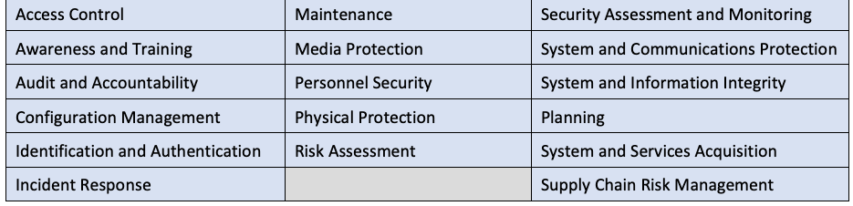
| アクセス制御 | 保守 | セキュリティアセスメントおよび監視 |
| 意識向上およびトレーニング | メディア保護 | システムおよび通信の保護 |
| 監査および説明責任 | 人的セキュリティ | システムおよび情報の完全性 |
| 構成管理 | 物理的保護 | 計画 |
| 識別および認証 | リスクアセスメント | システムおよびサービスの調達 |
| インシデント対応 | サプライチェーンリスク管理 |
The assessment procedures in Sec. 3 are grouped by similar family designations to ensure the completeness and consistency of assessments. The procedures have been derived from and are sourced to the assessment procedures in SP 800-53A [5].
セクション3のアセスメント手順は、アセスメントの完全性と一貫性を確保するために同様のファミリー呼称ごとにグループ化されている。これらの手順は、SP 800-53A [5] のアセスメント手順から派生したものであり、同手順に準拠・帰属している。
未レビュー訳An assessment procedure consists of an assessment objective and a set of potential assessment methods and objects that can be used to conduct the assessment. Each potential assessment objective includes a determination statement related to the security requirement. If there is an organization-defined parameter (ODP) in the security requirement, then the assessment objective begins with a determination statement related to the definition of the ODP. The determination statements are linked to the content of the security requirements to help ensure traceability of the assessment results to the requirements.
アセスメント手順は、アセスメント目標と、アセスメントを実施するために使用できる一連の潜在的なアセスメント手法および対象で構成される。個々の潜在的なアセスメント目標には、セキュリティ要件に関連する判定ステートメントが含まれる。セキュリティ要件に組織定義パラメータ（ODP）が存在する場合、アセスメント目標はODPの定義に関連する判定ステートメントから始まる。判定ステートメントは、アセスメント結果から要件へのトレーサビリティの確保を支援するために、セキュリティ要件の内容にリンクされている。
Assessment objects identify the specific items being assessed and can include specifications, mechanisms, activities, and individuals. Specifications are the documented artifacts2 (e.g., plans, policies, procedures, requirements, functional and assurance specifications, design documentation, architectures) associated with a system. Mechanisms are the hardware, software, and firmware safeguards implemented within a system. Activities are the protection-related actions supporting a system that involve people (e.g., conducting system backup operations, exercising an incident response plan, monitoring network traffic). Individuals are the people applying the specifications, mechanisms, or activities described above.
アセスメント対象（assessment object）は、アセスメントされる特定の項目を特定するものであり、仕様、メカニズム、アクティビティ、および個人を含めることができます。仕様（specifications）とは、システムに関連付けられた文書化された成果物2（例：計画、ポリシー、手順、要件、機能および保証の仕様、設計文書、アーキテクチャ）です。メカニズム（mechanisms）とは、システム内に実装されたハードウェア、ソフトウェア、およびファームウェアの保護策です。アクティビティ（activities）とは、人を伴うシステムをサポートする保護関連のアクション（例：システムバックアップ運用の実施、インシデント対応計画の訓練、ネットワークトラフィックの監視）です。個人（individuals）とは、上記で説明した仕様、メカニズム、またはアクティビティを適用する人々です。
未レビュー訳Assessment methods define the nature and extent of the assessor’s actions and are used to facilitate understanding, achieve clarification, or obtain evidence. The assessment methods include examine, interview, and test. The examine method is the process of reviewing, studying, inspecting, or analyzing assessment objects. The interview method is the process of holding discussions with individuals or groups about assessment objects. The test method is the process of exercising assessment objects (i.e., activities, mechanisms) under specified conditions to compare actual with expected behavior. Assessment methods include attributes of depth and coverage, which define the rigor, scope, and level of effort for the assessment as well as the degree of assurance that the security requirements have been satisfied. See SP 800-53A, Appendix D [5].
アセスメント手法（assessment method）は、アセッサーの行動の性質と範囲を定義し、理解の促進、明確化、または証拠の入手のために用いられる。アセスメント手法には、調査（examine）、面談（interview）、テスト（test）が含まれる。調査手法は、アセスメント対象をレビュー、精査、検査、または分析するプロセスである。面談手法は、アセスメント対象について個人またはグループと討議を行うプロセスである。テスト手法は、特定された条件下でアセスメント対象（すなわち、活動、メカニズム）を動作させ、実際の動作と期待される動作を比較するプロセスである。アセスメント手法には深度（depth）とカバレッジ（coverage）の属性があり、これらはアセスメントの厳格さ、範囲、および労力の水準、ならびにセキュリティ要件が満たされているという保証の程度を定義する。SP 800-53A、付録D [5] を参照のこと。
The structure and content of an assessment procedure are provided in the example below.
アセスメント手順の構造と内容を、以下の例に示す。
03.01.01E Dual Authorization
03.01.01E 二重認証（Dual Authorization）
未レビュー訳Security Requirement Name
セキュリティ要件名
未レビュー訳ASSESSMENT OBJECTIVE
アセスメント目標
Determination Statement for Security Requirement
セキュリティ要件の判定文
未レビュー訳Determine if:
以下を判定する：
未レビュー訳A.03.01.01E.ODP[01]: privileged commands and/or other actions requiring dual authorization are defined.
A.03.01.01E.ODP[01]: 二重認可を必要とする特権コマンドおよび／またはその他のアクションが定義されている。
A.03.01.01E: dual authorization is enforced for <A.03.01.01E.ODP[01]: privileged commands and/or other actions>.
A.03.01.01E: <A.03.01.01E.ODP[01]: 特権コマンドおよび／またはその他のアクション>に対して二重認可が強制されている。
POTENTIAL ASSESSMENT METHODS AND OBJECTS
潜在的なアセスメント方法および対象
未レビュー訳Examine
調査
未レビュー訳[SELECT FROM: Access control policy; procedures addressing access enforcement and dual authorization; system design documentation; system configuration settings and associated documentation; list of actions requiring dual authorization; list of privileged commands requiring dual authorization; list of approved authorizations (user privileges); system security plan; other relevant documents or records].
[次から選択: アクセス制御ポリシー；アクセス強制および二重認可に対処する手順；システム設計文書；システム構成設定および関連文書；二重認可を必要とするアクションのリスト；二重認可を必要とする特権コマンドのリスト；承認された認可（ユーザー特権）のリスト；システムセキュリティ計画書；その他の関連文書または記録]。
Interview
面談
未レビュー訳[SELECT FROM: Personnel with access enforcement responsibilities; system/network administrators; system personnel with information security responsibilities].
[次から選択: アクセス強制の責任を持つ担当者；システム／ネットワーク管理者；情報セキュリティ責任を持つシステム担当者]。
Test
テスト
未レビュー訳[SELECT FROM: Dual authorization mechanisms implementing access control policy].
[次から選択: アクセス制御ポリシーを実装する二重認可メカニズム]。
REFERENCES
参考文献
Source Assessment Procedures: AC-03(02)
出典アセスメント手順: AC-03(02)
未レビュー訳Determination statements have alphanumeric identifiers. Each determination statement begins with the letter “A” to indicate that it is part of an assessment procedure. The next sequence of numbers followed by the letter “E” indicates the enhanced security requirement identifier from SP 800-172 [3] (and the specific control item if it is a multi-part requirement) that is the target of the assessment. Organization-defined parameters are indicated by the letters “ODP.” If there are multiple ODPs in the determination statement, the ODP number is indicated in a square bracket (e.g., A.03.01.04E.ODP[01]). Square brackets are also used to denote when an assessment procedure further decomposes a requirement into more granular determination statements (e.g., A.03.10.03E.a[01], A.03.10.03E.a[02], A.03.10.03E.a[03], A.03.10.03E.a[04]).
判定文（determination statement）には英数字の識別子が付与されている。各判定文は、それがアセスメント手順の一部であることを示す文字「A」で始まる。それに続く一連の数字とそれに続く文字「E」は、アセスメントの対象であるSP 800-172 [3]の強化セキュリティ要件識別子（および複数パートからなる要件の場合は特定の管理策項目）を示す。組織定義パラメーターは文字「ODP」によって示される。判定文内に複数のODPがある場合、ODP番号は角括弧内に示される（例: A.03.01.04E.ODP[01]）。また、角括弧は、アセスメント手順が要件をより粒度の細かい判定文へとさらに分解する場合を示すためにも使用される（例: A.03.10.03E.a[01]、A.03.10.03E.a[02]、A.03.10.03E.a[03]、A.03.10.03E.a[04]）。
未レビュー訳The application of an assessment procedure to a security requirement produces assessment results or findings. The findings are compiled and used as evidence to determine whether the security requirement has been satisfied or other than satisfied. A finding of satisfied indicates that the assessment objective has been met, producing a fully acceptable result. A finding of other than satisfied indicates that there are potential anomalies that may need to be addressed by the organization. A finding of other than satisfied may also indicate that the assessor was unable to obtain sufficient information to make the specific determination called for in the determination statement.
セキュリティ要件へのアセスメント手順の適用により、アセスメント結果または所見が生成される。所見は取りまとめられ、セキュリティ要件が充足（satisfied）されたか、それとも不充足（other than satisfied）であるかを判定するための証拠として使用される。「充足」という所見は、アセスメント目標が達成され、完全に受け入れ可能な結果が得られたことを示す。「不充足」という所見は、組織による対処が必要となる可能性のある潜在的な異常が存在することを示す。また、「不充足」という所見は、アセッサーが判定ステートメントで求められている特定の判定を行うための十分な情報を入手できなかったことを示す場合もある。
2.2. Assurance Cases
2.2. アシュアランスケース
Building an effective assurance case to determine compliance with security requirements involves compiling evidence from a variety of sources and conducting different types of activities during an assessment. An assurance case is a body of evidence organized into an argument demonstrating that some claim about a system is true. For security assessments conducted using the procedures in this publication, that claim is “compliance” with the security requirements in SP 800-172 [3]. Assessors obtain evidence during security assessments to allow designated officials3 to make objective determinations about compliance with the security requirements. The evidence needed to make such determinations can be obtained from various sources, including independent, third-party assessments or other types of assessments, depending on the needs of the organization establishing the requirements and the organization conducting the assessments.
セキュリティ要件への適合性を判断するための効果的なアシュアランスケースを構築するには、さまざまな情報源から証拠を収集し、アセスメント中にさまざまな種類のアクティビティを実施することが含まれる。アシュアランスケースとは、システムに関する特定の主張（claim）が真であることを実証する論拠へと体系化された証拠の集合体である。本書の手順を用いて実施されるセキュリティアセスメントにおいて、その主張とはSP 800-172 [3]のセキュリティ要件への「適合（compliance）」である。アセッサーはセキュリティアセスメント中に証拠を入手し、指定された責任者（designated officials）3がセキュリティ要件への適合性について客観的な判定を下せるようにする。そのような判定を行うために必要な証拠は、要件を定める組織およびアセスメントを実施する組織のニーズに応じて、独立した第三者機関によるアセスメントやその他の種類のアセスメントを含む、さまざまな情報源から入手できる。
未レビュー訳For example, many technical security requirements are satisfied by security capabilities that are built into commercial information technology products and systems. Product assessments are typically conducted by independent, third-party testing organizations.4 These assessments examine the security functions of products and established configuration settings. Assessments can also be conducted to demonstrate compliance with industry, national, or international security standards as well as developer and vendor claims. Since many information technology products are assessed by commercial testing organizations and then subsequently deployed in hundreds of thousands of systems, these types of assessments can be carried out at a greater level of depth and provide deeper insights into the security capabilities of the products.
例えば、多くの技術的セキュリティ要件は、商用情報技術製品およびシステムに組み込まれたセキュリティ機能によって満たされます。製品のアセスメントは通常、独立した第三者試験機関によって実施されます。4 これらのアセスメントでは、製品のセキュリティ機能および確立された構成設定が検証されます。アセスメントは、業界、国内、または国際的なセキュリティ標準への準拠、ならびに開発者やベンダーの主張を実証するために実施することもできます。多くの情報技術製品は商用試験機関によってアセスメントされ、その後数十万ものシステムに配備されるため、これらのタイプのアセスメントはより高度な深度で実施でき、製品のセキュリティ機能に関するより深い知見を提供できます。
未レビュー訳The evidence needed to determine compliance with the security requirements is obtained by assessing the implementation of the safeguards and countermeasures selected to satisfy the requirements. Assessors can build on previously developed materials that started with the specification of the information security needs of the organization and were further improved during the design, development, and implementation of the system. These materials provide the initial evidence for an assurance case.
セキュリティ要件への準拠を判断するために必要な証拠は、要件を満たすために選択された保護策および対抗策の実施状況をアセスメントすることによって得られる。アセッサーは、組織の情報セキュリティニーズの規定から始まり、システムの設計、開発、および実装の過程でさらに改善された、既存の資料を活用することができる。これらの資料は、アシュアランスケースの最初の証拠となる。
Assessments can be conducted by system developers, system integrators, auditors, system owners, or the security personnel of organizations. The assessors or assessment teams bring available information about the system together, such as the results of component product assessments. The assessors can conduct additional system-level assessments using the assessment methods and procedures contained in this publication and the implementation information provided by the nonfederal organization in its system security plan. Assessments can be used to compile and evaluate the evidence needed by organizations to help determine the effectiveness of the safeguards implemented to protect CUI, the actions needed to mitigate security risks to the organization, and compliance with the security requirements.
アセスメントは、システム開発者、システムインテグレーター、監査人、システム所有者、または組織のセキュリティ担当者によって実施できる。アセッサーまたはアセスメントチームは、コンポーネント製品のアセスメント結果など、システムに関する利用可能な情報をまとめる。アセッサーは、本出版物に含まれるアセスメント手法および手順、ならびに非連邦組織がそのシステムセキュリティ計画で提供する実装情報を使用して、追加のシステムレベルのアセスメントを実施できる。アセスメントは、CUIを保護するために実装された保護策の有効性、組織へのセキュリティリスクを軽減するために必要なアクション、およびセキュリティ要件への準拠を組織が判断するのを支援するために必要な証拠を、収集および評価するために使用できる。
The assessment procedures in this publication are based on and sourced to the assessment procedures in SP 800-53A [5]. For additional information and guidance on preparing for security assessments, developing assessment plans, conducting assessments, and analyzing assessment report results, consult SP 800-53A [5].
本出版物のアセスメント手順は、SP 800-53A [5] のアセスメント手順に基づいており、そこから派生しています。セキュリティアセスメントの準備、アセスメント計画の策定、アセスメントの実施、およびアセスメント報告結果の分析に関する追加情報およびガイダンスについては、SP 800-53A [5] を参照してください。
未レビュー訳3. The Procedures
3. 手順
This section provides assessment procedures for the security requirements defined in SP 800-172 [3]. Organizations that conduct security requirement assessments can develop their security assessment plans by using the information provided in the assessment procedures and selecting the specific potential assessment methods and objects that meet the organization’s needs. Organizations also have flexibility in defining the level of rigor and detail associated with the assessment based on the assurance requirements of the organization.
本セクションでは、SP 800-172 [3] で定義されているセキュリティ要件に対するアセスメント手順を提供します。セキュリティ要件のアセスメントを実施する組織は、アセスメント手順で提供される情報を使用し、組織のニーズを満たす特定の潜在的なアセスメント方法および対象を選択することによって、独自のセキュリティアセスメント計画を策定できます。組織はまた、組織のアシュアランス要件に基づいて、アセスメントに関連する厳格さと詳細さのレベルを柔軟に定義することができます。
未レビュー訳3.1. Access Control
3.1. アクセス制御
03.01.01E Dual Authorization
03.01.01E 二重承認
未レビュー訳ASSESSMENT OBJECTIVE
アセスメント目標
Determine if:
以下を判定する：
A.03.01.01E.ODP[01]: privileged commands and/or other actions requiring dual authorization are defined.
A.03.01.01E.ODP[01]: 二重認可を必要とする特権コマンドおよび／またはその他のアクションが定義されている。
A.03.01.01E: dual authorization is enforced for <A.03.01.01E.ODP[01]: privileged commands and/or other actions>.
A.03.01.01E: <A.03.01.01E.ODP[01]: 特権コマンドおよび／またはその他のアクション>に対して二重認可が強制されている。
POTENTIAL ASSESSMENT METHODS AND OBJECTS
潜在的なアセスメント方法および対象
未レビュー訳Examine
調査
未レビュー訳[SELECT FROM: Access control policy; procedures addressing access enforcement and dual authorization; system design documentation; system configuration settings and associated documentation; list of actions requiring dual authorization; list of privileged commands requiring dual authorization; list of approved authorizations (user privileges); system security plan; other relevant documents or records].
[次から選択: アクセス制御ポリシー、アクセス実施および二重承認を扱う手順、システム設計文書、システム構成設定および関連文書、二重承認を必要とするアクションのリスト、二重承認を必要とする特権コマンドのリスト、承認された認可（ユーザー特権）のリスト、システムセキュリティ計画、その他関連文書または記録]。
未レビュー訳Interview
面談
未レビュー訳[SELECT FROM: Personnel with access enforcement responsibilities; system/network administrators; system developers; personnel with information security responsibilities].
[次から選択: アクセス強制の責任を持つ担当者；システム／ネットワーク管理者；システム開発者；情報セキュリティ責任を持つ担当者]。
Test
テスト
未レビュー訳[SELECT FROM: Dual authorization mechanisms implementing access control policy].
[次から選択: アクセス制御ポリシーを実装する二重認可メカニズム]。
REFERENCES
参考文献
Source Assessment Procedures: AC-03(02)
出典アセスメント手順: AC-03(02)
未レビュー訳03.01.02E Non-Organizationally Owned Systems - Restricted Use
03.01.02E 組織外所有システム - 利用制限
未レビュー訳ASSESSMENT OBJECTIVE
アセスメント目標
Determine if:
以下を判定する：
A.03.01.02E.ODP[01]: restrictions on the use of non-organizationally owned systems or system components to process, store, or transmit CUI are defined.
A.03.01.02E.ODP[01]：CUIを処理、格納、または送信するために組織が所有していないシステムまたはシステムコンポーネントを使用することに関する制限が定義されている。
A.03.01.02E: the use of non-organizationally owned systems or system components to process, store, or transmit CUI is restricted using <A.03.01.02E.ODP[01]: restrictions>.
A.03.01.02E：CUIを処理、格納、または送信するために組織が所有していないシステムまたはシステムコンポーネントを使用することが、<A.03.01.02E.ODP[01]: 制限>を用いて制限されている。
POTENTIAL ASSESSMENT METHODS AND OBJECTS
潜在的なアセスメント方法および対象
未レビュー訳Examine
調査（Examine）
未レビュー訳[SELECT FROM: Access control policy; procedures addressing the use of external systems; system design documentation; system configuration settings and associated documentation; system connection or processing agreements; account management documents; system audit records; other relevant documents or records].
[次から選択: アクセス制御ポリシー；外部システムの使用に対処する手順；システム設計文書；システム構成設定および関連文書；システム接続または処理に関する合意書；アカウント管理文書；システム監査記録；その他の関連文書または記録]。
Interview
面談（Interview）
未レビュー訳[SELECT FROM: Personnel with responsibilities for restricting or prohibiting the use of non-organizationally owned systems, system components, or devices; system/network administrators; personnel with information security responsibilities].
[次から選択: 組織が所有していないシステム、システムコンポーネント、またはデバイスの使用を制限または禁止する責任を持つ担当者；システム／ネットワーク管理者；情報セキュリティ責任を持つ担当者]。
Test
テスト
未レビュー訳[SELECT FROM: Mechanisms implementing restrictions on the use of non-organizationally owned systems, components, or devices].
[次から選択: 組織が所有していないシステム、コンポーネント、またはデバイスの使用に関する制限を実装するメカニズム]。
未レビュー訳REFERENCES
参考文献
Source Assessment Procedures: AC-20(03)
出典アセスメント手順: AC-20(03)
未レビュー訳03.01.03E Withdrawn
03.01.03E 廃止
未レビュー訳Addressed by 03.01.09E, 03.01.10E, and 03.01.03 (SP 800-171).
03.01.09E、03.01.10E、および 03.01.03 (SP 800-171) で対処済み。
03.01.04E Concurrent Session Control
03.01.04E 同時セッション制御
未レビュー訳ASSESSMENT OBJECTIVE
アセスメント目標
Determine if:
以下を判定する：
A.03.01.04E.ODP[01]: accounts and/or account types for which to limit the number of concurrent sessions is defined.
A.03.01.04E.ODP[01]: 同時セッション数を制限するアカウントおよび／またはアカウント種別が定義されている。
A.03.01.04E.ODP[02]: the number of concurrent sessions to be allowed for each account and/or account type is defined.
A.03.01.04E.ODP[02]: 各アカウントおよび／またはアカウント種別に対して許可される同時セッション数が定義されている。
A.03.01.04E: the number of concurrent sessions for each <A.03.01.04E.ODP[01]: account and/or account types> is limited to <A.03.01.04E.ODP[02]: number>.
A.03.01.04E: 各<A.03.01.04E.ODP[01]: アカウントおよび／またはアカウント種別>に対する同時セッション数が<A.03.01.04E.ODP[02]: 数>に制限されている。
POTENTIAL ASSESSMENT METHODS AND OBJECTS
潜在的なアセスメント方法および対象
未レビュー訳Examine
検証（Examine）
未レビュー訳[SELECT FROM: Access control policy; procedures addressing concurrent session control; system design documentation; system configuration settings and associated documentation; security plan; system security plan; other relevant documents or records].
[次から選択: アクセス制御ポリシー；同時セッション制御に対処する手順；システム設計文書；システム構成設定および関連文書；セキュリティ計画；システムセキュリティ計画書；その他の関連文書または記録]。
Interview
面談
未レビュー訳[SELECT FROM: System/network administrators; personnel with information security responsibilities; system developers].
[次から選択: システム/ネットワーク管理者、情報セキュリティの責任を有する担当者、システム開発者]。
Test
テスト
未レビュー訳[SELECT FROM: Mechanisms implementing access control policy for concurrent session control].
[次から選択: 同時セッション制御のためのアクセス制御ポリシーを実装するメカニズム]。
REFERENCES
参考文献
Source Assessment Procedures: AC-10
評価手順の参照元: AC-10
未レビュー訳03.01.05E Automated Monitoring and Control for Remote Access
03.01.05E リモートアクセスの自動監視および制御
未レビュー訳ASSESSMENT OBJECTIVE
アセスメント目標
Determine if:
以下を判断する：
A.03.01.05E[01]: automated mechanisms are employed to monitor remote access methods.
A.03.01.05E[01]：リモートアクセス方式を監視するために自動化メカニズムが採用されている。
未レビュー訳A.03.01.05E[02]: automated mechanisms are employed to control remote access methods.
A.03.01.05E[02]：リモートアクセス方式を制御するために自動化メカニズムが採用されている。
未レビュー訳POTENTIAL ASSESSMENT METHODS AND OBJECTS
潜在的なアセスメント方法および対象
未レビュー訳Examine
調査
未レビュー訳[SELECT FROM: Access control policy; procedures addressing remote access to the system; system design documentation; system remote access configuration settings and associated documentation; system audit records; system monitoring records; system security plan; other relevant documents or records].
[次から選択：アクセス制御ポリシー、システムへのリモートアクセスに対処する手順、システム設計文書、システムのリモートアクセス構成設定および関連文書、システム監査記録、システム監視記録、システムセキュリティ計画、その他の関連文書または記録]。
未レビュー訳Interview
面談
未レビュー訳[SELECT FROM: System/network administrators; personnel with information security responsibilities; system developers].
[次から選択：システム／ネットワーク管理者、情報セキュリティ責任を有する担当者、システム開発者]。
Test
テスト
未レビュー訳[SELECT FROM: Automated mechanisms monitoring and controlling remote access methods].
[次から選択: リモートアクセス方式を監視および制御する自動化されたメカニズム]。
REFERENCES
参考文献
Source Assessment Procedures: AC-17(01)
出典の査定手順: AC-17(01)
未レビュー訳03.01.06E Protection of Remote Access Mechanism Information
03.01.06E リモートアクセスメカニズム情報の保護
未レビュー訳ASSESSMENT OBJECTIVE
アセスメント目標
Determine if:
以下を判断する：
A.03.01.06E: information about remote access mechanisms is protected from unauthorized use and disclosure.
A.03.01.06E: リモートアクセスメカニズムに関する情報が、不正な使用および開示から保護されていること。
POTENTIAL ASSESSMENT METHODS AND OBJECTS
潜在的なアセスメント方法および対象
未レビュー訳Examine
検証
未レビュー訳[SELECT FROM: Access control policy; procedures addressing remote access to the system; system security plan; other relevant documents or records].
[次から選択: アクセス制御ポリシー、システムへのリモートアクセスを扱う手順、システムセキュリティ計画、その他の関連文書または記録]。
Interview
面談
未レビュー訳[SELECT FROM: Personnel with responsibilities for implementing or monitoring remote access to the system; system users with knowledge of information about remote access mechanisms; personnel with information security responsibilities].
[次から選択: システムへのリモートアクセスの実装または監視に関する責任を持つ担当者、リモートアクセスメカニズムに関する情報の知識を持つシステム利用者、情報セキュリティ責任を持つ担当者]。
REFERENCES
参考文献
Source Assessment Procedures: AC-17(06)
出典アセスメント手順: AC-17(06)
未レビュー訳03.01.07E Automated Audit Actions for Account Management
03.01.07E アカウント管理のための自動監査アクション
未レビュー訳ASSESSMENT OBJECTIVE
アセスメント目標
Determine if:
以下を判断する：
A.03.01.07E[01]: automated mechanisms are used to audit account creation actions.
A.03.01.07E[01]: アカウント作成アクションの監査に自動メカニズムが使用されている。
A.03.01.07E[02]: automated mechanisms are used to audit account modification actions.
A.03.01.07E[02]: アカウント変更アクションの監査に自動メカニズムが使用されている。
A.03.01.07E[03]: automated mechanisms are used to audit account enabling actions.
A.03.01.07E[03]: アカウント有効化アクションの監査に自動メカニズムが使用されている。
A.03.01.07E[04]: automated mechanisms are used to audit account disabling actions.
A.03.01.07E[04]: アカウント無効化アクションの監査に自動メカニズムが使用されている。
A.03.01.07E[05]: automated mechanisms are used to audit account removal actions.
A.03.01.07E[05]: アカウント削除アクションの監査に自動メカニズムが使用されている。
POTENTIAL ASSESSMENT METHODS AND OBJECTS
潜在的なアセスメント手法および対象
未レビュー訳Examine
調査（Examine）
未レビュー訳[SELECT FROM: Access control policy; procedures addressing account management; system design documentation; system configuration settings and associated documentation; notifications or alerts of account creation, modification, enabling, disabling, and removal actions; system audit records; system security plan; other relevant documents or records].
[SELECT FROM: アクセス制御ポリシー、アカウント管理に対処する手順、システム設計書、システム構成設定および関連文書、アカウントの作成・変更・有効化・無効化・削除のアクションに関する通知またはアラート、システム監査記録、システムセキュリティ計画、その他の関連文書または記録]。
未レビュー訳Interview
面談（Interview）
未レビュー訳[SELECT FROM: Personnel with account management responsibilities; system/network administrators; personnel with information security responsibilities].
[次から選択: アカウント管理の責任を有する担当者、システム/ネットワーク管理者、情報セキュリティの責任を有する担当者]。
Test
テスト（Test）
未レビュー訳[SELECT FROM: Automated mechanisms implementing account management functions].
[次から選択: アカウント管理機能を実装する自動化メカニズム]。
REFERENCES
参考文献
Source Assessment Procedures: AC-02(04)
ソース評価手順: AC-02(04)
未レビュー訳03.01.08E Account Monitoring for Atypical Usage
03.01.08E 変則的な使用に対するアカウントの監視
未レビュー訳ASSESSMENT OBJECTIVE
アセスメント目標
Determine if:
以下を判断する:
A.03.01.08E.ODP[01]: atypical usage for which to monitor system accounts is defined.
A.03.01.08E.ODP[01]: システムアカウントを監視する対象となる変則的な使用が定義されている。
A.03.01.08E.ODP[02]: personnel or roles to report atypical usage are defined.
A.03.01.08E.ODP[02]: 変則的な使用を報告する対象となる担当者または役割が定義されている。
A.03.01.08E.a: system accounts are monitored for <A.03.01.08E.ODP[01]: atypical usage>.
A.03.01.08E.a: システムアカウントが<A.03.01.08E.ODP[01]: 変則的な使用>について監視されている。
A.03.01.08E.b: atypical usage of system accounts is reported to <A.03.01.08E.ODP[02]: personnel or roles>.
A.03.01.08E.b: システムアカウントの変則的な使用が<A.03.01.08E.ODP[02]: 担当者または役割>に報告されている。
POTENTIAL ASSESSMENT METHODS AND OBJECTS
潜在的なアセスメント方法および対象
未レビュー訳Examine
調査
未レビュー訳[SELECT FROM: Access control policy; procedures addressing account management; system design documentation; system configuration settings and associated documentation; system monitoring records; system audit records; audit tracking and monitoring reports; system security plan; other relevant documents or records].
[SELECT FROM: アクセス制御方針、アカウント管理を扱う手順、システム設計文書、システム構成設定および関連文書、システム監視記録、システム監査記録、監査追跡および監視レポート、システムセキュリティ計画、他の関連する文書または記録]
未レビュー訳Interview
面談
未レビュー訳[SELECT FROM: Personnel with account management responsibilities; system/network administrators; personnel with information security responsibilities].
[次から選択: アカウント管理の責任を有する担当者、システム/ネットワーク管理者、情報セキュリティの責任を有する担当者]。
Test
テスト
未レビュー訳[SELECT FROM: Mechanisms implementing account management functions].
[SELECT FROM: アカウント管理機能を実装するメカニズム]
未レビュー訳REFERENCES
参考文献
Source Assessment Procedure: AC-02(12)
出典アセスメント手順: AC-02(12)
未レビュー訳03.01.09E Attribute-Based Access Control
03.01.09E 属性ベースのアクセス制御
未レビュー訳ASSESSMENT OBJECTIVE
アセスメント目標
Determine if:
以下を判断する：
A.03.01.09E.ODP[01]: attributes to assume access permissions are defined.
A.03.01.09E.ODP[01]: アクセス許可を引き受けるための属性が定義されている。
A.03.01.09E.a[01]: the attribute-based access control policy is enforced over defined subjects.
A.03.01.09E.a[01]: 属性ベースのアクセス制御ポリシーが、定義されたサブジェクトに対して適用されている。
未レビュー訳A.03.01.09E.a[02]: the attribute-based access control policy is enforced over defined objects.
A.03.01.09E.a[02]: 属性ベースのアクセス制御ポリシーが、定義されたオブジェクトに対して適用されている。
A.03.01.09E.b: access is controlled based upon <A.03.01.09E.ODP[01]: attributes>.
A.03.01.09E.b: <A.03.01.09E.ODP[01]: 属性>に基づいてアクセスが制御されている。
POTENTIAL ASSESSMENT METHODS AND OBJECTS
潜在的な評価方法および対象
未レビュー訳Examine
調査
未レビュー訳[SELECT FROM: Access control policy; procedures addressing access enforcement; system design documentation; system configuration settings and associated documentation; list of subjects and objects (i.e., users and resources) requiring enforcement of attribute-based access control policies; system audit records; system security plan; other relevant documents or records].
[次から選択: アクセス制御ポリシー、アクセス強制に対処する手順、システム設計文書、システム構成設定および関連文書、属性ベースのアクセス制御ポリシーの適用を必要とする主体および対象（すなわち、ユーザーおよびリソース）のリスト、システム監査記録、システムセキュリティ計画、その他関連する文書または記録]。
Interview
面談
未レビュー訳[SELECT FROM: Personnel with access enforcement responsibilities; system/network administrators; personnel with information security responsibilities].
[次から選択: アクセス強制の責任を有する担当者、システム/ネットワーク管理者、情報セキュリティの責任を有する担当者]。
Test
テスト
未レビュー訳[SELECT FROM: Mechanisms implementing access enforcement functions].
[次から選択: アクセス強制機能を実装するメカニズム]。
未レビュー訳REFERENCES
参考文献
Source Assessment Procedures: AC-03(13)
ソース評価手順: AC-03(13)
未レビュー訳03.01.10E Object Security Attributes
03.01.10E オブジェクトのセキュリティ属性
未レビュー訳ASSESSMENT OBJECTIVE
アセスメント目標
Determine if:
以下を判定する:
A.03.01.10E.ODP[01]: security attributes to be associated with information, source, and destination objects are defined.
A.03.01.10E.ODP[01]: 情報、送信元、および送信先オブジェクトに関連付けられるセキュリティ属性が定義されていること。
未レビュー訳A.03.01.10E.ODP[02]: information objects to be associated with information security attributes are defined.
A.03.01.10E.ODP[02]: 情報セキュリティ属性に関連付けられる情報オブジェクトが定義されていること。
A.03.01.10E.ODP[03]: source objects to be associated with information security attributes are defined.
A.03.01.10E.ODP[03]: 情報セキュリティ属性に関連付けられる送信元オブジェクトが定義されていること。
A.03.01.10E.ODP[04]: destination objects to be associated with information security attributes are defined.
A.03.01.10E.ODP[04]: 情報セキュリティ属性に関連付けられる送信先オブジェクトが定義されていること。
未レビュー訳A.03.01.10E.ODP[05]: information flow control policies as a basis for the enforcement of flow control decisions are defined.
A.03.01.10E.ODP[05]: フロー制御の決定を実施するための根拠としての情報フロー制御ポリシーが定義されていること。
A.03.01.10E: <A.03.01.10E.ODP[01]: security attributes> associated with <A.03.01.10E.ODP[02]: information objects>, <A.03.01.10E.ODP[03]: source objects>, and <A.03.01.10E.ODP[04]: destination objects> are used to enforce <A.03.01.10E.ODP[05]: information flow control policies> as a basis for flow control decisions.
A.03.01.10E: フロー制御決定の根拠として<A.03.01.10E.ODP[05]: 情報フロー制御ポリシー>を適用するために、<A.03.01.10E.ODP[02]: 情報オブジェクト>、<A.03.01.10E.ODP[03]: 送信元オブジェクト>、および<A.03.01.10E.ODP[04]: 送信先オブジェクト>に関連付けられた<A.03.01.10E.ODP[01]: セキュリティ属性>が使用されていること。
POTENTIAL ASSESSMENT METHODS AND OBJECTS
潜在的なアセスメント方法および対象
未レビュー訳Examine
検証
未レビュー訳[SELECT FROM: Access control policy; information flow control policies; procedures addressing information flow enforcement; system design documentation; system configuration settings and associated documentation; list of security attributes and associated source and destination objects; system audit records; system security plan; other relevant documents or records].
[選択: アクセス制御ポリシー、情報フロー制御ポリシー、情報フロー強制に対処する手順、システム設計書、システム構成設定および関連文書、セキュリティ属性とそれに関連付けられた送信元および送信先オブジェクトのリスト、システム監査記録、システムセキュリティ計画、その他関連する文書または記録]。
未レビュー訳Interview
面談
未レビュー訳[SELECT FROM: System/network administrators; personnel with information security responsibilities; system developers].
[選択: システム/ネットワーク管理者、情報セキュリティ責任を有する要員、システム開発者]。
Test
テスト
未レビュー訳[SELECT FROM: Mechanisms implementing information flow enforcement policy].
[選択: 情報フロー強制ポリシーを実装するメカニズム]。
REFERENCES
参考文献
Source Assessment Procedure: AC-04(01)
ソースアセスメント手順: AC-04(01)
未レビュー訳03.01.11E Role-Based Access Control
03.01.11E ロールベースアクセス制御
未レビュー訳ASSESSMENT OBJECTIVE
アセスメント目標
Determine if:
以下を判定する:
A.03.01.11E.ODP[01]: roles and users authorized to assume such roles are defined.
A.03.01.11E.ODP[01]: ロールおよび当該ロールを引き受けることが認可されたユーザーが定義されている。
A.03.01.11E.a: a role-based access control policy over defined subjects and objects is enforced.
A.03.01.11E.a: 定義されたサブジェクトおよびオブジェクトに対するロールベースアクセス制御ポリシーが適用されている。
A.03.01.11E.b: access is controlled based upon <A.03.01.11E.ODP[01] roles and authorized users>.
A.03.01.11E.b: <A.03.01.11E.ODP[01] ロールおよび認可されたユーザー> に基づいてアクセスが制御されている。
POTENTIAL ASSESSMENT METHODS AND OBJECTS
潜在的なアセスメント方法および対象
未レビュー訳Examine
調査（Examine）
未レビュー訳[SELECT FROM: Access control policy; role-based access control policies; procedures addressing access enforcement; system design documentation; system configuration settings and associated documentation; list of roles, users, and associated privileges required to control system access; system audit records; system security plan; other relevant documents or records].
[選択: アクセス制御ポリシー、ロールベースのアクセス制御ポリシー、アクセス実施を扱う手順、システム設計文書、システム構成設定および関連文書、システムアクセスの制御に必要なロール・ユーザー・関連特権のリスト、システム監査記録、システムセキュリティ計画、その他関連する文書または記録]。
Interview
面談（Interview）
未レビュー訳[SELECT FROM: Organizational personnel with access enforcement responsibilities; system/network administrators; organizational personnel with information security responsibilities; system developers].
[選択: アクセス実施責任を有する組織の人員、システム/ネットワーク管理者、情報セキュリティ責任を有する組織の人員、システム開発者]。
未レビュー訳Test
テスト（Test）
未レビュー訳[SELECT FROM: Mechanisms implementing role-based access control policy].
[選択: ロールベースのアクセス制御ポリシーを実装するメカニズム]。
REFERENCES
参考文献
Source Assessment Procedure: AC-03(07)
ソース査定手順: AC-03(07)
未レビュー訳03.01.12E Physical or Logical Separation of CUI Flows
03.01.12E CUIフローの物理的または論理的分離
未レビュー訳ASSESSMENT OBJECTIVE
アセスメント目標
Determine if:
以下を判定する：
A.03.01.12E.ODP[01]: mechanisms and/or techniques to separate CUI flows are defined.
A.03.01.12E.ODP[01]: CUIフローを分離するためのメカニズムおよび／または技術が定義されていること。
A.03.01.12E: CUI flows are logically or physically separated using <A.03.01.12E.ODP[01] mechanisms and/or techniques>.
A.03.01.12E: <A.03.01.12E.ODP[01]のメカニズムおよび／または技術>を使用して、CUIフローが論理的または物理的に分離されていること。
未レビュー訳POTENTIAL ASSESSMENT METHODS AND OBJECTS
潜在的な査定方法および査定対象
未レビュー訳Examine
検証
未レビュー訳[SELECT FROM: Information flow enforcement policy; information flow control policies; procedures addressing information flow enforcement; system design documentation; system configuration settings and associated documentation; list of required separation of information flows by information types; list of mechanisms and/or techniques used to logically or physically separate information flows; system audit records; system security plan; other relevant documents or records].
[SELECT FROM: 情報フロー強制方針、情報フロー制御方針、情報フロー強制に対処する手順、システム設計文書、システム構成設定および関連文書、情報タイプ別の情報フローの必要な分離のリスト、情報フローを論理的または物理的に分離するために使用されるメカニズムおよび／または技術のリスト、システム監査記録、システムセキュリティ計画、その他の関連文書または記録]。
未レビュー訳Interview
面談
未レビュー訳[SELECT FROM: Organizational personnel with information flow enforcement responsibilities; system/network administrators; organizational personnel with information security responsibilities; system developers].
[選択: 情報フロー強制の責任を有する組織の要員、システム/ネットワーク管理者、情報セキュリティの責任を有する組織の要員、システム開発者]。
Test
テスト
未レビュー訳[SELECT FROM: Mechanisms implementing information flow enforcement functions].
[選択: 情報フロー強制機能を実装するメカニズム]。
REFERENCES
参考文献
Source Assessment Procedure: AC-04(21)
出典アセスメント手順: AC-04(21)
未レビュー訳03.01.13E Metadata
03.01.13E メタデータ
未レビュー訳ASSESSMENT OBJECTIVE
アセスメント目標
Determine if:
以下を判定する：
A.03.01.13E.ODP[01]: metadata on which to base enforcement of information flow control is defined.
A.03.01.13E.ODP[01]: 情報フロー制御の実施の基準とするメタデータが定義されている。
A.03.01.13E: information flow control based on <A.03.01.13E.ODP[01]: metadata> is enforced.
A.03.01.13E: <A.03.01.13E.ODP[01]: メタデータ> に基づく情報フロー制御が実施されている。
POTENTIAL ASSESSMENT METHODS AND OBJECTS
潜在的なアセスメント方法および対象
未レビュー訳Examine
検証
未レビュー訳[SELECT FROM: Access control policy; information flow control policies; procedures addressing information flow enforcement; system design documentation; system configuration settings and associated documentation; system audit records; system security plan; other relevant documents or records].
[選択: アクセス制御ポリシー、情報フロー制御ポリシー、情報フローの強制を扱う手順、システム設計文書、システム構成設定および関連文書、システム監査記録、システムセキュリティ計画、その他の関連文書または記録]。
Interview
面談
未レビュー訳[SELECT FROM: System/network administrators; organizational personnel with information security responsibilities; system developers].
[選択: システム/ネットワーク管理者、情報セキュリティの責任を有する組織の要員、システム開発者]。
Test
テスト
未レビュー訳[SELECT FROM: Mechanisms implementing information flow enforcement policy].
[選択: 情報フロー強制ポリシーを実装するメカニズム]。
REFERENCES
参考文献
Source Assessment Procedure: AC-04(06)
ソース評価手順: AC-04(06)
未レビュー訳03.01.14E Security Policy Filters
03.01.14E セキュリティポリシーフィルター
未レビュー訳ASSESSMENT OBJECTIVE
アセスメント目標
Determine if:
以下を判定する:
A.03.01.14E.ODP[01]: security policy filters are defined.
A.03.01.14E.ODP[01]: セキュリティポリシーフィルタが定義されている。
A.03.01.14E.ODP[02]: information flows are defined.
A.03.01.14E.ODP[02]: 情報フローが定義されている。
A.03.01.14E.ODP[03]: one or more of the following PARAMETER VALUES is/are selected: {Block; Strip; Modify; Quarantine} in response to a filter processing failure.
A.03.01.14E.ODP[03]: フィルタ処理の失敗に対応して、次のパラメータ値のうち1つ以上が選択されている: {Block; Strip; Modify; Quarantine}。
A.03.01.14E.ODP[04]: security policy addressing a filter processing failure is defined.
A.03.01.14E.ODP[04]: フィルタ処理の失敗に対処するセキュリティポリシーが定義されている。
未レビュー訳A.03.01.14E.a: information flow control is enforced using <A.03.01.14E.ODP[01] security policy filters> as a basis for flow control decisions for <A.03.01.14E.ODP[02] information flows>.
A.03.01.14E.a: <A.03.01.14E.ODP[02] 情報フロー>のフロー制御決定の基準として<A.03.01.14E.ODP[01] セキュリティポリシーフィルタ>を使用して、情報フロー制御が実施されている。
A.03.01.14E.b: <A.03.01.14E.ODP[03]: SELECTED PARAMETER VALUE(S)> data after a filter processing failure in accordance with <A.03.01.14E.ODP[04] security policy>.
A.03.01.14E.b: <A.03.01.14E.ODP[04] セキュリティポリシー>に従い、フィルタ処理の失敗後のデータに対して、<A.03.01.14E.ODP[03]: 選択されたパラメータ値>が実施されている。
POTENTIAL ASSESSMENT METHODS AND OBJECTS
潜在的な評価方法および評価対象
未レビュー訳Examine
検証
未レビュー訳[SELECT FROM: Access control policy; information flow control policies; procedures addressing information flow enforcement; system design documentation; system configuration settings and associated documentation; list of security policy filters regulating flow control decisions; system audit records; system security plan; other relevant documents or records].
[選択: アクセス制御ポリシー、情報フロー制御ポリシー、情報フローの強制を扱う手順、システム設計文書、システム構成設定および関連文書、フロー制御の決定を規制するセキュリティポリシーフィルタのリスト、システム監査記録、システムセキュリティ計画、その他の関連文書または記録]。
Interview
面談
未レビュー訳[SELECT FROM: System/network administrators; organizational personnel with information security responsibilities; system developers].
[選択: システム/ネットワーク管理者、情報セキュリティの責任を有する組織の要員、システム開発者]。
Test
テスト
未レビュー訳[SELECT FROM: Mechanisms implementing information flow enforcement policy; security policy filters].
[SELECT FROM: 情報フロー強制ポリシーを実装するメカニズム、セキュリティポリシーフィルター]。
未レビュー訳REFERENCES
参考文献
Source Assessment Procedure: AC-04(08)
情報源アセスメント手順: AC-04(08)
未レビュー訳03.01.15E Data Type Identifiers
03.01.15E データ型識別子
未レビュー訳ASSESSMENT OBJECTIVE
アセスメント目標
Determine if:
以下を判定する:
A.03.01.15E.ODP[01]: data type identifiers are defined.
A.03.01.15E.ODP[01]: データ型識別子が定義されていること。
A.03.01.15E: when transferring information between security domains, <A.03.01.15E.ODP[01]: data type identifiers> are used to validate data that is essential for information flow decisions.
A.03.01.15E: セキュリティドメイン間で情報を転送する際、情報フローの決定に不可欠なデータを検証するために<A.03.01.15E.ODP[01]: データ型識別子>が使用されていること。
POTENTIAL ASSESSMENT METHODS AND OBJECTS
潜在的なアセスメント方法および対象
未レビュー訳Examine
調査
未レビュー訳[SELECT FROM: Access control policy; information flow control policies; procedures addressing information flow enforcement; system design documentation; system configuration settings and associated documentation; list of data type identifiers; system audit records; system security plan; other relevant documents or records].
[選択: アクセス制御ポリシー、情報フロー制御ポリシー、情報フローの実施を扱う手順、システム設計文書、システム構成設定および関連文書、データ型識別子のリスト、システム監査記録、システムセキュリティ計画、その他関連する文書または記録]。
未レビュー訳Interview
面談
未レビュー訳[SELECT FROM: System/network administrators; organizational personnel with information security responsibilities; system developers].
[次から選択: システム/ネットワーク管理者、情報セキュリティ責任を有する組織の人員、システム開発者]。
Test
テスト
未レビュー訳[SELECT FROM: Mechanisms implementing information flow enforcement policy].
[次から選択: 情報フロー強制ポリシーを実装するメカニズム]。
REFERENCES
参考文献
Source Assessment Procedure: AC-04(12)
ソースアセスメント手順: AC-04(12)
未レビュー訳03.01.16E Decomposition Into Policy-Relevant Subcomponents
03.01.16E ポリシー関連サブコンポーネントへの分解
未レビュー訳ASSESSMENT OBJECTIVE
アセスメント目標
Determine if:
以下を判定する:
A.03.01.16E.ODP[01]: policy-relevant subcomponents into which to decompose CUI for submission to policy enforcement mechanisms are defined.
A.03.01.16E.ODP[01]: ポリシー強制メカニズムへの送信のためにCUIを分解する対象となる、ポリシーに関連するサブコンポーネントが定義されている。
A.03.01.16E: when transferring information between different security domains, CUI is decomposed into <A.03.01.16E.ODP[01]: policy-relevant subcomponents> for submission to policy enforcement mechanisms.
A.03.01.16E: 異なるセキュリティドメイン間で情報を転送する際、ポリシー適用メカニズムへの送信のために、CUIが<A.03.01.16E.ODP[01]: ポリシーに関連するサブコンポーネント>へと分解される。
未レビュー訳POTENTIAL ASSESSMENT METHODS AND OBJECTS
潜在的なアセスメント方法および対象
未レビュー訳Examine
調査
未レビュー訳[SELECT FROM: Access control policy; information flow control policies; procedures addressing information flow enforcement; system design documentation; system configuration settings and associated documentation; system audit records; system security plan; other relevant documents or records].
[次から選択: アクセス制御ポリシー、情報フロー制御ポリシー、情報フロー強制に対処する手順、システム設計文書、システム構成設定および関連文書、システム監査記録、システムセキュリティ計画、その他の関連文書または記録]。
Interview
面談
未レビュー訳[SELECT FROM: System/network administrators; personnel with information security responsibilities; system developers].
[次から選択: システム/ネットワーク管理者、情報セキュリティ責任を有する担当者、システム開発者]。
Test
テスト
未レビュー訳[SELECT FROM: Mechanisms implementing information flow enforcement policy].
[次から選択: 情報フロー強制ポリシーを実装するメカニズム]。
REFERENCES
参考文献
Source Assessment Procedure: AC-04(13)
出典アセスメント手順: AC-04(13)
未レビュー訳03.01.17E Detection of Unsanctioned CUI
03.01.17E 承認されていないCUIの検出
未レビュー訳ASSESSMENT OBJECTIVE
アセスメント目標
Determine if:
以下を判定する:
A.03.01.17E.ODP[01]: unsanctioned CUI to be detected is defined.
A.03.01.17E.ODP[01]: 検出対象となる承認されていないCUIが定義されている。
A.03.01.17E.ODP[02]: a security policy that prohibits the transfer of unsanctioned information is defined.
A.03.01.17E.ODP[02]: 承認されていない情報の転送を禁止するセキュリティ方針が定義されている。
A.03.01.17E.a: when transferring information between different security domains, information is examined for the presence of <A.03.01.17E.ODP[01] unsanctioned information>.
A.03.01.17E.a: 異なるセキュリティドメイン間で情報を転送する際、情報が<A.03.01.17E.ODP[01] 承認されていない情報>の存在について検査されていること。
A.03.01.17E.b: the transfer of CUI defined in 03.01.17E.a is prohibited in accordance with <A.03.01.17E.ODP[02] security policy>.
A.03.01.17E.b: 03.01.17E.aで定義されたCUIの転送が、<A.03.01.17E.ODP[02] セキュリティポリシー>に従って禁止されていること。
POTENTIAL ASSESSMENT METHODS AND OBJECTS
潜在的なアセスメント手法および対象
未レビュー訳Examine
調査
未レビュー訳[SELECT FROM: Access control policy; information flow control policies; procedures addressing information flow enforcement; system design documentation; system configuration settings and associated documentation; list of unsanctioned information types and associated information; system audit records; system security plan; other relevant documents or records].
[次から選択: アクセス制御ポリシー、情報フロー制御ポリシー、情報フロー強制に対処する手順、システム設計文書、システム構成設定および関連文書、承認されていない情報タイプおよび関連情報のリスト、システム監査記録、システムセキュリティ計画、その他の関連文書または記録]。
Interview
面談
未レビュー訳[SELECT FROM: Organizational personnel with information security responsibilities; system developers].
[SELECT FROM: 情報セキュリティの責任を有する組織の人員、システム開発者]。
未レビュー訳Test
テスト
未レビュー訳[SELECT FROM: Mechanisms implementing information flow enforcement policy].
[次から選択: 情報フロー強制ポリシーを実装するメカニズム]。
REFERENCES
参考文献
Source Assessment Procedure: AC-04(15)
出典のアセスメント手順: AC-04(15)
未レビュー訳3.2. Awareness and Training
3.2. 意識向上およびトレーニング
03.02.01E Advanced Literacy and Awareness Training
03.02.01E 高度なリテラシーおよび意識向上トレーニング
未レビュー訳ASSESSMENT OBJECTIVE
アセスメント目標
Determine if:
以下を判定する:
A.03.02.01E.ODP[01]: indicators of malicious code are defined.
A.03.02.01E.ODP[01]: 悪意のあるコードの指標が定義されていること。
A.03.02.01E.ODP[02]: the frequency at which to update security literacy training content is defined.
A.03.02.01E.ODP[02]: セキュリティリテラシー教育の内容を更新する頻度が定義されている。
未レビュー訳A.03.02.01E.ODP[03]: events which cause security literacy training content to be updated are defined.
A.03.02.01E.ODP[03]: セキュリティリテラシー教育の内容を更新する契機となる事象が定義されている。
A.03.02.01E.a.01: security literacy training on the advanced persistent threat is provided to system users.
A.03.02.01E.a.01: 高度で持続的な脅威（advanced persistent threat）に関するセキュリティリテラシー教育がシステム利用者に提供されている。
A.03.02.01E.a.02: security literacy training on recognizing suspicious communications and anomalous behavior in systems using <A.03.02.01E.ODP[01]: indicators of malicious code> is provided to system users.
A.03.02.01E.a.02: <A.03.02.01E.ODP[01]: 悪性コードのインジケーター>を用いた、システムにおける不審な通信および異常な動作の認識に関するセキュリティリテラシー教育がシステム利用者に提供されている。
未レビュー訳A.03.02.01E.a.03: security literacy training on the cyber threat environment is provided to system users.
A.03.02.01E.a.03: サイバー脅威環境に関するセキュリティリテラシー教育がシステム利用者に提供されている。
未レビュー訳A.03.02.01E.b[01]: security literacy training content is updated <A.03.02.01E.ODP[02]: frequency>.
A.03.02.01E.b[01]: セキュリティリテラシー教育の内容が<A.03.02.01E.ODP[02]: 頻度>で更新されている。
A.03.02.01E.b[02]: security literacy training content is updated following <A.03.02.01E.ODP[03]: events>
A.03.02.01E.b[02]: セキュリティリテラシー教育の内容が<A.03.02.01E.ODP[03]: 事象>の後に更新されている。
未レビュー訳POTENTIAL ASSESSMENT METHODS AND OBJECTS
潜在的なアセスメント方法および対象
未レビュー訳Examine
調査
未レビュー訳[SELECT FROM: System security plan; security literacy and awareness training policy; procedures addressing security literacy and awareness training implementation; security literacy and awareness training curriculum; security literacy and awareness training materials; other relevant documents or records].
[次から選択: システムセキュリティ計画; セキュリティリテラシーおよび意識向上トレーニング方針; セキュリティリテラシーおよび意識向上トレーニングの実施に対処する手順; セキュリティリテラシーおよび意識向上トレーニングカリキュラム; セキュリティリテラシーおよび意識向上トレーニング資料; その他関連する文書または記録]。
未レビュー訳Interview
面談
未レビュー訳[SELECT FROM: Personnel who receive security literacy and awareness training; personnel with responsibilities for security literacy and awareness training; personnel with information security responsibilities].
[次から選択: セキュリティリテラシーおよび意識向上トレーニングを受講する担当者; セキュリティリテラシーおよび意識向上トレーニングの責任を担う担当者; 情報セキュリティの責任を担う担当者]。
REFERENCES
参考文献
Source Assessment Procedures: AT-02(04); AT-02(05); AT-02(06)
参照アセスメント手順: AT-02(04); AT-02(05); AT-02(06)
未レビュー訳03.02.02E Literacy and Awareness Training Practical Exercises
03.02.02E リテラシーおよび意識向上トレーニングの実践的演習
未レビュー訳ASSESSMENT OBJECTIVE
アセスメント目標
Determine if:
以下を判定する:
A.03.02.02E: practical exercises in literacy training that simulate events and incidents are provided.
A.03.02.02E: 事象やインシデントをシミュレートするリテラシートレーニングの実践的な演習が提供されていること。
POTENTIAL ASSESSMENT METHODS AND OBJECTS
潜在的なアセスメント方法および対象
未レビュー訳Examine
調査
未レビュー訳[SELECT FROM: System security plan; security literacy and awareness training policy; procedures addressing security literacy and awareness training implementation; security awareness training curriculum; security awareness training materials; other relevant documents or records].
[次から選択: システムセキュリティ計画; セキュリティリテラシーおよび意識向上トレーニングポリシー; セキュリティリテラシーおよび意識向上トレーニングの実施に対処する手順; セキュリティ意識向上トレーニングカリキュラム; セキュリティ意識向上トレーニング教材; その他の関連文書または記録]。
Interview
面談
未レビュー訳[SELECT FROM: Personnel who receive security literacy and awareness training; personnel with responsibilities for security awareness training; personnel with information security responsibilities].
[次から選択: セキュリティリテラシーおよび意識向上トレーニングを受ける担当者; セキュリティ意識向上トレーニングの責任を持つ担当者; 情報セキュリティの責任を持つ担当者]。
Test
テスト
未レビュー訳[SELECT FROM: Mechanisms implementing cyber-attack simulations in practical exercises].
[次から選択: 実践的な演習においてサイバー攻撃シミュレーションを実施するメカニズム]。
REFERENCES
参考文献
Source Assessment Procedures: AT-02(01)
ソース評価手順: AT-02(01)
未レビュー訳03.02.03E Literacy and Awareness Training Feedback
03.02.03E リテラシーおよび意識向上トレーニングのフィードバック
未レビュー訳ASSESSMENT OBJECTIVE
アセスメント目標
Determine if:
以下を判定する:
A.03.02.03E.ODP[01]: personnel to whom feedback on organizational training results will be provided are assigned.
A.03.02.03E.ODP[01]: 組織のトレーニング結果に関するフィードバックが提供される要員が割り当てられている。
A.03.02.03E: feedback on organizational training results is provided to <A.03.02.03E.ODP[01]: personnel>.
A.03.02.03E: 組織のトレーニング結果に関するフィードバックが <A.03.02.03E.ODP[01]: 要員> に提供されている。
POTENTIAL ASSESSMENT METHODS AND OBJECTS
潜在的なアセスメント方法および対象
未レビュー訳Examine
調査（Examine）
未レビュー訳[SELECT FROM: Security awareness training policy; procedures addressing security literacy and awareness training records; security literacy and awareness training records; security plan; other relevant documents or records].
[SELECT FROM: セキュリティ意識向上トレーニングポリシー、セキュリティリテラシーおよび意識向上トレーニングの記録に対処する手順、セキュリティリテラシーおよび意識向上トレーニングの記録、セキュリティ計画、その他の関連文書または記録]。
未レビュー訳Interview
面談（Interview）
未レビュー訳[SELECT FROM: Personnel with security and awareness training record retention responsibilities].
[SELECT FROM: セキュリティおよび意識向上トレーニングの記録保持の責任を負う要員]。
Test
テスト（Test）
未レビュー訳[SELECT FROM: Mechanisms supporting the management of security literacy and awareness training records].
[SELECT FROM: セキュリティリテラシーおよび意識向上トレーニング記録の管理をサポートするメカニズム]。
REFERENCES
参考文献
Source Assessment Procedures: AT-06
ソース評価手順: AT-06
未レビュー訳03.02.04E Anti-Counterfeit Training
03.02.04E 偽造品対策トレーニング
未レビュー訳ASSESSMENT OBJECTIVE
評価目標
Determine if:
以下を判定する:
A.03.02.04E.ODP[01]: personnel or roles requiring training to detect counterfeit system components are defined.
A.03.02.04E.ODP[01]: 偽造システムコンポーネントを検出するためのトレーニングを必要とする要員または役割が定義されている。
A.03.02.04E: <A.03.02.04E.ODP[01]: personnel or roles> are trained to detect counterfeit system components.
A.03.02.04E: <A.03.02.04E.ODP[01]: 要員または役割> が偽造システムコンポーネントを検出するためのトレーニングを受けている。
POTENTIAL ASSESSMENT METHODS AND OBJECTS
潜在的な評価方法および対象
未レビュー訳Examine
調査
未レビュー訳[SELECT FROM: Supply chain risk management policy and procedures; supply chain risk management plan; system and services acquisition policy; anti-counterfeit plan; anti-counterfeit policy and procedures; media disposal policy; media protection policy; incident response policy; training materials addressing counterfeit system components; training records on the detection and prevention of counterfeit components entering the system; system security plan; other relevant documents or records].
[次から選択: サプライチェーンリスクマネジメントの方針および手順、サプライチェーンリスクマネジメント計画、システムおよびサービスの取得方針、偽造品対策計画、偽造品対策方針および手順、メディア廃棄方針、メディア保護方針、インシデント対応方針、偽造システムコンポーネントを取り扱うトレーニング教材、偽造コンポーネントのシステムへの混入検知および防止に関するトレーニング記録、システムセキュリティ計画、その他の関連文書または記録]。
未レビュー訳Interview
面談
未レビュー訳[SELECT FROM: Personnel with information security responsibilities; personnel with supply chain risk management responsibilities; personnel with contract management responsibilities; personnel with responsibilities for anti-counterfeit policies, procedures, and training].
[次から選択: 情報セキュリティの責任を有する要員、サプライチェーンリスクマネジメントの責任を有する要員、契約管理の責任を有する要員、偽造品対策の方針・手順・トレーニングの責任を有する要員]。
Test
テスト
未レビュー訳[SELECT FROM: Processes for anti-counterfeit training].
[次から選択: 偽造品対策トレーニングのプロセス]。
未レビュー訳REFERENCES
参考文献
Source Assessment Procedures: SR-11(01)
情報源評価手順: SR-11(01)
未レビュー訳3.3. Audit and Accountability
3.3. 監査とアカウンタビリティ
03.03.01E Protection of Audit Record Storage in Physical Systems or Components
03.03.01E 物理システムまたはコンポーネントにおける監査レコードストレージの保護
未レビュー訳ASSESSMENT OBJECTIVE
評価目標
Determine if:
以下を判定する:
A.03.03.01E: audit records are stored in a repository that is part of a physically different system or system component than the system or component being audited.
A.03.03.01E: 監査レコードが、監査対象のシステムまたはコンポーネントとは物理的に異なるシステムまたはシステムコンポーネントの一部であるリポジトリに格納されている。
POTENTIAL ASSESSMENT METHODS AND OBJECTS
潜在的な評価方法および対象
未レビュー訳Examine
検証
未レビュー訳[SELECT FROM: Audit and accountability policy; system security plan; procedures addressing protection of audit information; system design documentation; system configuration settings and associated documentation; system or media storing backups of system audit records; system audit records; other relevant documents or records].
[次から選択: 監査およびアカウンタビリティに関するポリシー、システムセキュリティ計画、監査情報の保護を扱う手順、システム設計文書、システム構成設定および関連文書、システム監査レコードのバックアップを保存するシステムまたはメディア、システム監査レコード、その他の関連文書または記録]。
未レビュー訳Interview
面談
未レビュー訳[SELECT FROM: Personnel with audit and accountability responsibilities; personnel with information security responsibilities; system/network administrators; system developers].
[SELECT FROM: 監査およびアカウンタビリティに関する責任を有する要員、情報セキュリティに関する責任を有する要員、システム／ネットワーク管理者、システム開発者]。
Test
テスト
未レビュー訳[SELECT FROM: Mechanisms implementing the backing up of audit records].
[SELECT FROM: 監査レコードのバックアップを実装するメカニズム]。
REFERENCES
参考文献
Source Assessment Procedures: AU-09(02)
ソース評価手順: AU-09(02)
未レビュー訳03.03.02E Real-Time Alerts for Audit Processing Failures
03.03.02E 監査処理障害に対するリアルタイムアラート
未レビュー訳ASSESSMENT OBJECTIVE
評価目標
Determine if:
以下を判定する:
A.03.03.02E.ODP[01]: real-time period requiring alerts when audit failure events (defined in A.03.03.02E.ODP[03]) occur is defined.
A.03.03.02E.ODP[01]: （A.03.03.02E.ODP[03]で定義される）監査失敗イベントが発生した際にアラートを必要とするリアルタイムの期間が定義されている。
A.03.03.02E.ODP[02]: personnel, roles, and/or locations to be alerted in real time when audit failure events (defined in A.03.03.02E.ODP[03]) occur are defined.
A.03.03.02E.ODP[02]: （A.03.03.02E.ODP[03]で定義される）監査失敗イベントが発生した際にリアルタイムでアラートを受ける要員、役割、および／または場所が定義されている。
A.03.03.02E.ODP[03]: audit logging failure events requiring real-time alerts are defined.
A.03.03.02E.ODP[03]: リアルタイムのアラートを必要とする監査ログ記録の失敗イベントが定義されている。
A.03.03.02E: an alert is provided within <A.03.03.02E.ODP[01]: real-time period> to <A.03.03.02E.ODP[02]: personnel, roles, and/or locations> when <A.03.03.02E.ODP[03]: audit logging failure events> occur.
A.03.03.02E: <A.03.03.02E.ODP[03]: audit logging failure events> が発生した際に、<A.03.03.02E.ODP[01]: real-time period> 以内に <A.03.03.02E.ODP[02]: personnel, roles, and/or locations> へアラートが提供される。
未レビュー訳POTENTIAL ASSESSMENT METHODS AND OBJECTS
潜在的な評価方法および対象
未レビュー訳Examine
検証
未レビュー訳[SELECT FROM: Audit and accountability policy; procedures addressing response to audit processing failures; system design documentation; system security plan; system configuration settings and associated documentation; system audit records; other relevant documents or records].
[次から選択: 監査および責任追跡性に関するポリシー; 監査処理の失敗への対応を扱う手順; システム設計ドキュメント; システムセキュリティ計画; システム構成設定および関連ドキュメント; システム監査記録; その他関連する文書または記録]。
未レビュー訳Interview
面談
未レビュー訳[SELECT FROM: Personnel with audit and accountability responsibilities; personnel with information security responsibilities; system/network administrators; system developers].
[SELECT FROM: 監査およびアカウンタビリティに関する責任を有する要員、情報セキュリティに関する責任を有する要員、システム／ネットワーク管理者、システム開発者]。
REFERENCES
参考文献
Source Assessment Procedures: AU-05(02)
Source Assessment Procedures: AU-05(02)
未レビュー訳03.03.03E Dual Authorization for Audit Information and Actions
03.03.03E 監査情報およびアクションに対する二重承認
未レビュー訳ASSESSMENT OBJECTIVE
評価目標
Determine if:
以下を判定する:
A.03.03.03E.ODP[01]: one or more of the following PARAMETER VALUES is/are selected: {movement; deletion}.
A.03.03.03E.ODP[01]: 次のパラメータ値（PARAMETER VALUES）のうち1つ以上が選択されている: {移動; 削除}。
A.03.03.03E.ODP[02]: audit information for which dual authorization is to be enforced is defined.
A.03.03.03E.ODP[02]: 二重認可を強制すべき監査情報が定義されている。
A.03.03.03E: dual authorization is enforced for the <A.03.03.03E.ODP[01]: SELECTED PARAMETER VALUE(S)> of <A.03.03.03E.ODP[02]: audit information>.
A.03.03.03E: <A.03.03.03E.ODP[02]: 監査情報> の <A.03.03.03E.ODP[01]: 選択されたパラメータ値> に対して二重認可が強制されている。
POTENTIAL ASSESSMENT METHODS AND OBJECTS
潜在的なアセスメント方法および対象
未レビュー訳Examine
調査
未レビュー訳[SELECT FROM: Audit and accountability policy; system security plan; access control policy and procedures; procedures addressing protection of audit information; system design documentation; system configuration settings and associated documentation; access authorizations; system audit records; other relevant documents or records].
[SELECT FROM: 監査およびアカウンタビリティに関するポリシー、システムセキュリティ計画、アクセス制御ポリシーおよび手順、監査情報の保護を扱う手順、システム設計文書、システム構成設定および関連文書、アクセス認可、システム監査レコード、その他関連する文書または記録]。
Interview
面談
未レビュー訳[SELECT FROM: Personnel with audit and accountability responsibilities; personnel with information security responsibilities; system/network administrators].
[SELECT FROM: 監査およびアカウンタビリティに関する責任を有する要員、情報セキュリティに関する責任を有する要員、システム／ネットワーク管理者]。
Test
テスト
未レビュー訳[SELECT FROM: Mechanisms implementing the enforcement of dual authorization].
[SELECT FROM: 二重認可の強制を実装するメカニズム]。
REFERENCES
参考文献
Source Assessment Procedures: AU-09(05)
ソース評価手順: AU-09(05)
未レビュー訳03.03.04E Integrated Analysis of Audit Records
03.03.04E 監査レコードの統合分析
未レビュー訳ASSESSMENT OBJECTIVE
評価目標
Determine if:
以下を判定する:
A.03.03.04E.ODP[01]: one or more of the following PARAMETER VALUES is/are selected: {vulnerability scanning information; performance data; system monitoring information; <A.03.03.04E.ODP[02] data or information collected from other sources>}.
A.03.03.04E.ODP[01]: 次のパラメータ値（PARAMETER VALUES）のうち1つ以上が選択されている: {脆弱性スキャン情報、パフォーマンスデータ、システム監視情報、<A.03.03.04E.ODP[02] 他の情報源から収集されたデータまたは情報>}。
A.03.03.04E.ODP[02]: data or information collected from other sources to be analyzed is defined (if selected).
A.03.03.04E.ODP[02]: 分析対象となる他の情報源から収集されたデータまたは情報が（選択されている場合）定義されている。
A.03.03.04E: analysis of audit records is integrated with analysis of <A.03.03.04E.ODP[01]: SELECTED PARAMETER VALUE(S)> to further enhance the ability to identify inappropriate or unusual activity.
A.03.03.04E: 不適切または異常なアクティビティを識別する能力をさらに強化するために、監査レコードの分析が<A.03.03.04E.ODP[01]: 選択されたパラメータ値（SELECTED PARAMETER VALUE(S)）>の分析と統合されている。
未レビュー訳POTENTIAL ASSESSMENT METHODS AND OBJECTS
潜在的なアセスメント方法および対象
未レビュー訳Examine
調査（Examine）
未レビュー訳[SELECT FROM: Audit and accountability policy; system security plan; procedures addressing audit review, analysis, and reporting; system design documentation; system configuration settings and associated documentation; integrated analysis of audit records, vulnerability scanning information, performance data, network monitoring information and associated documentation; other relevant documents or records].
[SELECT FROM: 監査およびアカウンタビリティに関するポリシー、システムセキュリティ計画、監査のレビュー・分析・報告を扱う手順、システム設計書、システム構成設定および関連文書、監査レコード・脆弱性スキャン情報・パフォーマンスデータ・ネットワーク監視情報の統合分析および関連文書、その他の関連文書または記録]。
Interview
面談（Interview）
未レビュー訳[SELECT FROM: Personnel with audit review, analysis, and reporting responsibilities; personnel with information security responsibilities].
[SELECT FROM: 監査のレビュー・分析・報告に関する責任を有する要員、情報セキュリティに関する責任を有する要員]。
Test
テスト（Test）
未レビュー訳[SELECT FROM: Mechanisms implementing the capability to integrate analysis of audit records with analysis of data or information sources].
[SELECT FROM: 監査レコードの分析とデータまたは情報源の分析を統合する機能を実装したメカニズム]。
REFERENCES
参考文献
Source Assessment Procedures: AU-06(05)
ソース評価手順: AU-06(05)
未レビュー訳3.4. Configuration Management
3.4. 構成管理
03.04.01E Withdrawn
03.04.01E 撤回
未レビュー訳Addressed by 03.04.08E, 03.14.04E, 03.17.03E, 03.17.04E, 03.17.05E, 03.04.01 (SP 800-171), 03.04.03 (SP 800-171), and 03.04.10 (SP 800-171).
03.04.08E、03.14.04E、03.17.03E、03.17.04E、03.17.05E、03.04.01 (SP 800-171)、03.04.03 (SP 800-171)、および 03.04.10 (SP 800-171) によって対処。
03.04.02E Automated Unauthorized Component Detection
03.04.02E 不正なコンポーネントの自動検出
未レビュー訳ASSESSMENT OBJECTIVE
評価目標
Determine if:
以下を判定する:
A.03.04.02E.ODP[01]: automated mechanisms used to detect the presence of unauthorized or misconfigured system components are defined.
A.03.04.02E.ODP[01]: 認可されていない、または誤って設定されたシステムコンポーネントの存在を検出するために使用される自動化されたメカニズムが定義されている。
A.03.04.02E.ODP[02]: one or more of the following PARAMETER VALUES is/are selected: {disable network access by unauthorized or misconfigured system components; isolate unauthorized or misconfigured system components; notify <A.03.04.02E.ODP[03] personnel or roles>}.
A.03.04.02E.ODP[02]: 次のパラメータ値のうち1つ以上が選択される: {認可されていない、または誤って設定されたシステムコンポーネントによるネットワークアクセスを無効化する; 認可されていない、または誤って設定されたシステムコンポーネントを隔離する; <A.03.04.02E.ODP[03] 要員または役割>に通知する}。
未レビュー訳A.03.04.02E.ODP[03]: personnel or roles to be notified when unauthorized or misconfigured system components are detected are defined (if selected).
A.03.04.02E.ODP[03]: 認可されていない、または誤って設定されたシステムコンポーネントが検出されたときに通知される要員または役割が定義されている（選択されている場合）。
A.03.04.02E.a: the presence of unauthorized or misconfigured system components is detected using <A.03.04.02E.ODP[01]: automated mechanisms>.
A.03.04.02E.a: 認可されていない、または誤って設定されたシステムコンポーネントの存在が、<A.03.04.02E.ODP[01]: 自動化されたメカニズム>を使用して検出される。
A.03.04.02E.b: one or more of the following actions is/are taken when unauthorized or misconfigured system components are detected: <A.03.04.02E.ODP[02]:
A.03.04.02E.b: 認可されていない、または誤って設定されたシステムコンポーネントが検出されたときに、次のアクションのうち1つ以上が実行される: <A.03.04.02E.ODP[02]:
SELECTED PARAMETER VALUE(S)>.
選択されたパラメータ値>。
未レビュー訳POTENTIAL ASSESSMENT METHODS AND OBJECTS
潜在的なアセスメント方法および対象
未レビュー訳Examine
調査
未レビュー訳[SELECT FROM: Configuration management policy; procedures addressing system component inventory and configuration settings; configuration management plan; system configuration settings and associated documentation; system component inventory; system design documentation; change control records; common secure configuration checklists; alerts or notifications of unauthorized components within the system; system monitoring records; system maintenance records; system audit records; system security plan; other relevant documents or records].
[次から選択: 構成管理ポリシー; システムコンポーネントのインベントリおよび構成設定に関する手順; 構成管理計画; システム構成設定および関連文書; システムコンポーネントのインベントリ; システム設計文書; 変更管理記録; 共通セキュア構成チェックリスト; システム内の認可されていないコンポーネントに関するアラートまたは通知; システム監視記録; システム保守記録; システム監査記録; システムセキュリティ計画; その他の関連文書または記録]。
未レビュー訳Interview
面談
未レビュー訳[SELECT FROM: Personnel with component inventory and security configuration management responsibilities; personnel with responsibilities for managing automated mechanisms implementing unauthorized system component detection; personnel with information security responsibilities; system/network administrators; system developers].
[SELECT FROM: コンポーネントインベントリおよびセキュリティ構成管理の責任を有する要員；認可されていないシステムコンポーネントの検出を実装する自動化されたメカニズムを管理する責任を有する要員；情報セキュリティの責任を有する要員；システム／ネットワーク管理者；システム開発者]。
Test
テスト
未レビュー訳[SELECT FROM: Processes for the detection of unauthorized or misconfigured system components; automated processes for taking action when unauthorized or misconfigured system components are detected; automated mechanisms supporting and/or implementing the detection of unauthorized or misconfigured system components; automated mechanisms supporting and/or implementing actions taken when unauthorized or misconfigured system components are detected].
[SELECT FROM: 認可されていない、または誤って設定されたシステムコンポーネントを検出するためのプロセス；認可されていない、または誤って設定されたシステムコンポーネントが検出された際に対処措置を講じるための自動化されたプロセス；認可されていない、または誤って設定されたシステムコンポーネントの検出をサポートおよび／または実装する自動化されたメカニズム；認可されていない、または誤って設定されたシステムコンポーネントが検出された際に講じられる措置をサポートおよび／または実装する自動化されたメカニズム]。
REFERENCES
参考文献
Source Assessment Procedure: CM-06(01); CM-6(02); CM-08(03)
評価手順の参照元: CM-06(01); CM-6(02); CM-08(03)
未レビュー訳03.04.03E Automated Maintenance of System Component Inventory
03.04.03E システムコンポーネントインベントリの自動保守
未レビュー訳ASSESSMENT OBJECTIVE
評価目標
Determine if:
以下を判定する：
A.03.04.03E.ODP[01]: automated mechanisms used to maintain the currency of the system component inventory are defined.
A.03.04.03E.ODP[01]: システムコンポーネントインベントリの最新性を維持するために使用される自動化メカニズムが定義されている。
A.03.04.03E.ODP[02]: automated mechanisms used to maintain the completeness of the system component inventory are defined.
A.03.04.03E.ODP[02]: システムコンポーネントインベントリの完全性を維持するために使用される自動化メカニズムが定義されている。
A.03.04.03E.ODP[03]: automated mechanisms used to maintain the accuracy of the system component inventory are defined.
A.03.04.03E.ODP[03]: システムコンポーネントインベントリの正確性を維持するために使用される自動化メカニズムが定義されている。
A.03.04.03E.ODP[04]: automated mechanisms used to maintain the availability of the system component inventory are defined.
A.03.04.03E.ODP[04]: システムコンポーネントインベントリの可用性を維持するために使用される自動化メカニズムが定義されている。
A.03.04.03E[01]: <A.03.04.03E.ODP[01]: automated mechanisms> are used to maintain the currency of the system component inventory.
A.03.04.03E[01]: システムコンポーネントインベントリの最新性を維持するために、<A.03.04.03E.ODP[01]: 自動化メカニズム>が使用されている。
未レビュー訳A.03.04.03E[02]: <A.03.04.03E.ODP[02]: automated mechanisms> are used to maintain the completeness of the system component inventory.
A.03.04.03E[02]: システムコンポーネントインベントリの完全性を維持するために、<A.03.04.03E.ODP[02]: 自動化メカニズム>が使用されている。
A.03.04.03E[03]: <A.03.04.03E.ODP[03]: automated mechanisms> are used to maintain the accuracy of the system component inventory.
A.03.04.03E[03]: システムコンポーネントインベントリの正確性を維持するために、<A.03.04.03E.ODP[03]: 自動化メカニズム>が使用されている。
A.03.04.03E[04]: <A.03.04.03E.ODP[04]: automated mechanisms> are used to maintain the availability of the system component inventory.
A.03.04.03E[04]: <A.03.04.03E.ODP[04]: 自動化されたメカニズム>が、システムコンポーネントインベントリの可用性を維持するために使用されている。
POTENTIAL ASSESSMENT METHODS AND OBJECTS
潜在的なアセスメント手法および対象
未レビュー訳Examine
検証（Examine）
未レビュー訳[SELECT FROM: Configuration management policy; procedures addressing system component inventory; configuration management plan; system security plan; system design documentation; system component inventory; change control records; system maintenance records; system audit records; other relevant documents or records].
[選択: 構成管理ポリシー、システムコンポーネントインベントリを扱う手順、構成管理計画、システムセキュリティ計画、システム設計文書、システムコンポーネントインベントリ、変更管理記録、システム保守記録、システム監査記録、その他の関連文書または記録]。
未レビュー訳Interview
面談（Interview）
未レビュー訳[SELECT FROM: Personnel with component inventory management responsibilities; personnel with information security responsibilities; system developers; system/network administrators].
[SELECT FROM: コンポーネントインベントリ管理の責任を有する要員；情報セキュリティの責任を有する要員；システム開発者；システム／ネットワーク管理者]。
Test
テスト（Test）
未レビュー訳[SELECT FROM: Processes for maintaining the system component inventory; automated mechanisms supporting and/or implementing the system component inventory].
[SELECT FROM: システムコンポーネントインベントリを維持するためのプロセス；システムコンポーネントインベントリをサポートおよび／または実装する自動化されたメカニズム]。
REFERENCES
参考文献
Source Assessment Procedures: CM-08(02)
情報源となるアセスメント手順：CM-08(02)
未レビュー訳03.04.04E Automation Support for Baseline Configuration
03.04.04E ベースライン構成のための自動化サポート
未レビュー訳ASSESSMENT OBJECTIVE
評価目標
Determine if:
以下を判定する：
A.03.04.04E.ODP[01]: automated mechanisms for maintaining the baseline configuration of the system are defined.
A.03.04.04E.ODP[01]: システムのベースライン構成を維持するための自動化されたメカニズムが定義されている。
A.03.04.04E[01]: the currency of the baseline configuration of the system is maintained using <A.03.04.04E.ODP[01]: automated mechanisms>.
A.03.04.04E[01]: システムのベースライン構成の最新性が、<A.03.04.04E.ODP[01]: 自動化されたメカニズム>を使用して維持されている。
A.03.04.04E[02]: the completeness of the baseline configuration of the system is maintained using <A.03.04.04E.ODP[01]: automated mechanisms>.
A.03.04.04E[02]: システムのベースライン構成の完全性が、<A.03.04.04E.ODP[01]: 自動化されたメカニズム>を使用して維持されている。
A.03.04.04E[03]: the accuracy of the baseline configuration of the system is maintained using <A.03.04.04E.ODP[01]: automated mechanisms>.
A.03.04.04E[03]: システムのベースライン構成の正確性が、<A.03.04.04E.ODP[01]: 自動化されたメカニズム>を用いて維持されている。
未レビュー訳A.03.04.04E[04]: the availability of the baseline configuration of the system is maintained using <A.03.04.04E.ODP[01]: automated mechanisms>.
A.03.04.04E[04]: システムのベースライン構成の可用性が、<A.03.04.04E.ODP[01]: 自動化されたメカニズム>を用いて維持されている。
POTENTIAL ASSESSMENT METHODS AND OBJECTS
潜在的なアセスメント方法および対象
未レビュー訳Examine
調査
未レビュー訳[SELECT FROM: Configuration management policy; procedures addressing the baseline configuration of the system; configuration management plan; system design documentation; system architecture and configuration documentation; system configuration settings and associated documentation; system component inventory; configuration change control records; system security plan; other relevant documents or records].
[SELECT FROM: 構成管理ポリシー；システムのベースライン構成を扱う手順；構成管理計画；システム設計文書；システムアーキテクチャおよび構成文書；システム構成設定および関連文書；システムコンポーネントインベントリ；構成変更管理記録；システムセキュリティ計画；その他の関連文書または記録]。
Interview
面談
未レビュー訳[SELECT FROM: Personnel with configuration management responsibilities; personnel with information security responsibilities; system/network administrators].
[SELECT FROM: 構成管理の責任を有する要員；情報セキュリティの責任を有する要員；システム／ネットワーク管理者]。
Test
テスト
未レビュー訳[SELECT FROM: Processes for managing baseline configurations; automated mechanisms implementing baseline configuration maintenance].
[SELECT FROM: ベースライン構成を管理するためのプロセス; ベースライン構成の維持を実施する自動化メカニズム]。
REFERENCES
参考文献
Source Assessment Procedures: CM-02(02)
Source Assessment Procedures: CM-02(02)
未レビュー訳03.04.05E Dual Authorization for System Changes
03.04.05E Dual Authorization for System Changes
未レビュー訳ASSESSMENT OBJECTIVE
評価目標
Determine if:
以下を判定する:
A.03.04.05E.ODP[01]: system components requiring dual authorization for the implementation of changes are defined.
A.03.04.05E.ODP[01]: 変更の実装に二重認可を必要とするシステムコンポーネントが定義されている。
A.03.04.05E.ODP[02]: system-level information requiring dual authorization for the implementation of changes is defined.
A.03.04.05E.ODP[02]: 変更の実装に二重認可を必要とするシステムレベルの情報が定義されているか。
未レビュー訳A.03.04.05E[01]: dual authorization for implementing changes to <A.03.04.05E.ODP[01]: system components> is enforced.
A.03.04.05E[01]: <A.03.04.05E.ODP[01]: システムコンポーネント>への変更を実施するための二重認可が強制されている。
A.03.04.05E[02]: dual authorization for implementing changes to <A.03.04.05E.ODP[02]: system-level information> is enforced.
A.03.04.05E[02]: <A.03.04.05E.ODP[02]: システムレベルの情報>への変更を実施するための二重認可が強制されている。
POTENTIAL ASSESSMENT METHODS AND OBJECTS
潜在的なアセスメント手法および対象
未レビュー訳Examine
査閲（Examine）
未レビュー訳[SELECT FROM: Configuration management policy; procedures addressing access restrictions for changes to the system; configuration management plan; system design documentation; system architecture and configuration documentation; system configuration settings and associated documentation; change control records; system audit records; system component inventory; system information types; system security plan; other relevant documents or records].
[SELECT FROM: 構成管理ポリシー、システムへの変更に関するアクセス制限を扱う手順、構成管理計画、システム設計文書、システムアーキテクチャおよび構成文書、システム構成設定および関連文書、変更管理記録、システム監査記録、システムコンポーネントインベントリ、システム情報タイプ、システムセキュリティ計画、その他の関連文書または記録]。
Interview
面談（Interview）
未レビュー訳[SELECT FROM: Personnel with dual authorization enforcement responsibilities for implementing system changes; personnel with information security responsibilities; system/network administrators].
[以下から選択: システム変更を実施するための二重認可の強制責任を有する担当者、情報セキュリティ責任を有する担当者、システム／ネットワーク管理者]。
未レビュー訳Test
テスト（Test）
未レビュー訳[SELECT FROM: Processes for managing access restrictions to change; mechanisms implementing dual authorization enforcement].
[SELECT FROM: 変更に対するアクセス制限を管理するプロセス、二重承認の強制を実施するメカニズム]。
REFERENCES
参考文献
Source Assessment Procedures: CM-05(04)
情報源の評価手順: CM-05(04)
未レビュー訳03.04.06E Retention of Previous Configurations
03.04.06E 以前の構成の保持
未レビュー訳ASSESSMENT OBJECTIVE
評価目標
Determine if:
以下を判定する:
A.03.04.06E.ODP[01]: the number of previous baseline configuration versions to be retained is defined.
A.03.04.06E.ODP[01]: 保持すべき以前のベースライン構成バージョンの数が定義されている。
A.03.04.06E: <A.03.04.06E.ODP[01]: number> previous versions of baseline configurations of the system are retained to support rollback.
A.03.04.06E: ロールバックをサポートするために、システムのベースライン構成の以前のバージョンが <A.03.04.06E.ODP[01]: 数> 保持されている。
POTENTIAL ASSESSMENT METHODS AND OBJECTS
潜在的なアセスメント方法および対象
未レビュー訳Examine
調査
未レビュー訳[SELECT FROM: Configuration management policy; procedures addressing the baseline configuration of the system; configuration management plan; system architecture and configuration documentation; system configuration settings and associated documentation; copies of previous baseline configuration versions; system security plan; other relevant documents or records].
[次から選択: 構成管理ポリシー、システムのベースライン構成を扱う手順、構成管理計画、システムアーキテクチャおよび構成文書、システム構成設定および関連文書、以前のベースライン構成バージョンのコピー、システムセキュリティ計画、その他の関連文書または記録]。
Interview
面談
未レビュー訳[SELECT FROM: Personnel with configuration management responsibilities; personnel with information security responsibilities; system/network administrators].
[SELECT FROM: 構成管理の責任を有する要員、情報セキュリティの責任を有する要員、システム／ネットワーク管理者]。
Test
テスト
未レビュー訳[SELECT FROM: Processes for managing baseline configurations].
[次から選択: ベースライン構成を管理するためのプロセス]。
REFERENCES
参考文献
Source Assessment Procedures: CM-02(03)
情報源となるアセスメント手順: CM-02(03)
未レビュー訳03.04.07E Testing, Validation, and Documentation of Changes
03.04.07E 変更のテスト、検証、および文書化
未レビュー訳ASSESSMENT OBJECTIVE
アセスメント目標
Determine if:
以下を判定する:
A.03.04.07E[01]: changes to the system are tested before finalizing the implementation of the changes.
A.03.04.07E[01]: 変更の実装を確定する前に、システムへの変更がテストされているか。
未レビュー訳A.03.04.07E[02]: changes to the system are validated before finalizing the implementation of the changes.
A.03.04.07E[02]: 変更の実装を確定する前に、システムへの変更が検証されているか。
未レビュー訳A.03.04.07E[03]: changes to the system are documented before finalizing the implementation of the changes.
A.03.04.07E[03]: 変更の実装を確定する前に、システムへの変更が文書化されている。
POTENTIAL ASSESSMENT METHODS AND OBJECTS
潜在的なアセスメント手法および対象
未レビュー訳Examine
調査
未レビュー訳[SELECT FROM: Configuration management policy; configuration management plan; procedures addressing system configuration change control; system architecture and configuration documentation; system design documentation; test records; system configuration settings and associated documentation; validation records; change control records; system audit records; system security plan; other relevant documents or records].
[SELECT FROM: 構成管理ポリシー、構成管理計画、システム構成変更管理に対処する手順、システムアーキテクチャおよび構成ドキュメント、システム設計ドキュメント、テスト記録、システム構成設定および関連ドキュメント、検証記録、変更管理記録、システム監査記録、システムセキュリティ計画、その他の関連文書または記録]。
未レビュー訳Interview
面談
未レビュー訳[SELECT FROM: Personnel with configuration change control responsibilities; personnel with information security responsibilities; members of change control board or similar; system/network administrators; system developers].
[SELECT FROM: 構成変更管理の責任を有する要員、情報セキュリティ責任を有する要員、変更管理委員会またはそれに類似する組織のメンバー、システム/ネットワーク管理者、システム開発者]。
Test
テスト
未レビュー訳[SELECT FROM: Processes for configuration change control; mechanisms supporting and/or implementing, testing, validating, and documenting system changes].
[SELECT FROM: 構成変更管理のプロセス、システム変更のテスト、検証、文書化をサポートおよび/または実装するメカニズム]。
未レビュー訳REFERENCES
参考文献
Source Assessment Procedures: CM-03(02)
出典評価手順: CM-03(02)
未レビュー訳03.04.08E Centralized Repository
03.04.08E 一元化されたリポジトリ
未レビュー訳ASSESSMENT OBJECTIVE
評価目標
Determine if:
以下を判定する：
A.03.04.08E: a centralized repository for the inventory of system components is provided.
A.03.04.08E: システムコンポーネントのインベントリのための一元化されたリポジトリが提供されている。
POTENTIAL ASSESSMENT METHODS AND OBJECTS
潜在的な評価方法および評価対象
未レビュー訳Examine
調査
未レビュー訳[SELECT FROM: Configuration management policy; procedures addressing system component inventory; configuration management plan; system design documentation; system security plan; system component inventory; system configuration settings and associated documentation; change control records; system security plan; other relevant documents or records].
[以下から選択: 構成管理ポリシー、システムコンポーネントのインベントリに対処する手順、構成管理計画、システム設計文書、システムセキュリティ計画、システムコンポーネントのインベントリ、システム構成設定および関連文書、変更管理記録、システムセキュリティ計画、その他の関連文書または記録]。
Interview
面談
未レビュー訳[SELECT FROM: Organizational personnel with component inventory management responsibilities; organizational personnel with security responsibilities].
[SELECT FROM: コンポーネントインベントリ管理の責任を有する組織の人員、セキュリティの責任を有する組織の人員]
Test
テスト
未レビュー訳[SELECT FROM: Organizational processes for managing the system component inventory; mechanisms supporting and/or implementing system component inventory].
[SELECT FROM: システムコンポーネントインベントリを管理するための組織のプロセス、システムコンポーネントインベントリをサポートおよび/または実装するメカニズム]
REFERENCES
参考文献
Source Assessment Procedures: CM-08(07)
ソース査定手順: CM-08(07)
未レビュー訳3.5. Identification and Authentication
3.5. 識別と認証
03.05.01E Cryptographic Bidirectional Authentication
03.05.01E 暗号による双方向認証
未レビュー訳ASSESSMENT OBJECTIVE
評価目標
未レビュー訳Determine if:
以下を判定する：
A.03.05.01E.ODP[01]: devices and/or types of devices requiring the use of cryptographically based bidirectional authentication to authenticate before establishing a system connection are defined.
A.03.05.01E.ODP[01]：システム接続を確立する前に認証を行うために、暗号技術に基づく双方向認証の使用を必要とするデバイスおよび／またはデバイスのタイプが定義されている。
A.03.05.01E: <A.03.05.01E.ODP[01]: devices and/or types of devices> are authenticated before establishing a system connection using bidirectional authentication that is cryptographically based.
A.03.05.01E: <A.03.05.01E.ODP[01]: デバイスおよび／またはデバイスのタイプ> が、システム接続を確立する前に、暗号技術に基づく双方向認証を使用して認証されている。
POTENTIAL ASSESSMENT METHODS AND OBJECTS
潜在的なアセスメント方法および対象
未レビュー訳Examine
点検
未レビュー訳[SELECT FROM: Identification and authentication policy; system security plan; procedures addressing device identification and authentication; system design documentation; configuration settings and associated documentation; list of devices requiring unique identification and authentication; device connection reports; other relevant documents or records].
[次から選択：識別および認証ポリシー；システムセキュリティ計画；デバイスの識別および認証に対処する手順；システム設計文書；構成設定および関連文書；一意の識別および認証を必要とするデバイスのリスト；デバイス接続レポート；その他の関連文書または記録]。
Interview
面談
未レビュー訳[SELECT FROM: Personnel with operational responsibilities for device identification and authentication; personnel with information security responsibilities; system/network administrators; system developers].
[次から選択：デバイスの識別および認証に関する運用の責任を持つ担当者；情報セキュリティの責任を持つ担当者；システム／ネットワーク管理者；システム開発者]。
未レビュー訳Test
テスト
未レビュー訳[SELECT FROM: Mechanisms supporting and/or implementing device authentication capabilities; cryptographically based bidirectional authentication mechanisms].
[以下から選択：デバイス認証機能をサポートおよび／または実装するメカニズム、暗号に基づく双方向認証メカニズム]。
REFERENCES
参考文献
Source Assessment Procedures: IA-03(01)
ソースアセスメント手順：IA-03(01)
未レビュー訳03.05.02E Password Managers
03.05.02E パスワードマネージャー
未レビュー訳ASSESSMENT OBJECTIVE
アセスメント目標
Determine if:
以下を判定する：
A.03.05.02E.ODP[01]: password managers employed for generating and managing passwords are defined.
A.03.05.02E.ODP[01]：パスワードの生成および管理のために採用されるパスワードマネージャーが定義されている。
A.03.05.02E.ODP[02]: safeguards for protecting passwords are defined.
A.03.05.02E.ODP[02]: パスワードを保護するための保護策が定義されている。
A.03.05.02E.a: <A.03.05.02E.ODP[01]: password managers> are employed to generate and manage passwords.
A.03.05.02E.a: パスワードの生成および管理のために<A.03.05.02E.ODP[01]: パスワードマネージャー>が採用されている。
A.03.05.02E.b: passwords are protected using <A.03.05.02E.ODP[02]: safeguards>.
A.03.05.02E.b: パスワードは<A.03.05.02E.ODP[02]: 保護策>を使用して保護されている。
POTENTIAL ASSESSMENT METHODS AND OBJECTS
潜在的なアセスメント方法および対象
未レビュー訳Examine
調査
未レビュー訳[SELECT FROM: Identification and authentication policy; procedures addressing identifier management; system security plan; system design documentation; mechanisms providing dynamic binding of identifiers and authenticators; system configuration settings and associated documentation; system audit records; other relevant documents or records].
[SELECT FROM: 識別および認証ポリシー、識別子管理を扱う手順、システムセキュリティ計画、システム設計文書、識別子とオーセンティケータの動的バインディングを提供するメカニズム、システム構成設定および関連文書、システム監査レコード、その他の関連文書または記録]。
Interview
面談
未レビュー訳[SELECT FROM: Personnel with identification and authentication management responsibilities; personnel with information security responsibilities; system/network administrators].
[SELECT FROM: 識別および認証管理責任を持つ要員、情報セキュリティ責任を持つ要員、システム/ネットワーク管理者]。
Test
テスト
未レビュー訳[SELECT FROM: Mechanisms supporting and/or implementing account management capabilities; mechanisms supporting and/or implementing identification and authentication management capabilities for the system].
[次から選択: アカウント管理機能をサポートおよび/または実装するメカニズム; システムの識別および認証管理機能をサポートおよび/または実装するメカニズム]。
REFERENCES
参考文献
Source Assessment Procedures: IA-05(18)
出典の評価手順: IA-05(18)
未レビュー訳03.05.03E Device Attestation
03.05.03E デバイス構成証明
未レビュー訳ASSESSMENT OBJECTIVE
評価目標
Determine if:
以下を判定する:
A.03.05.03E.ODP[01]: the configuration management process employed to handle device identification and authentication based on attestation is defined.
A.03.05.03E.ODP[01]: 構成証明に基づくデバイスの識別および認証を処理するために採用されている構成管理プロセスが定義されていること。
未レビュー訳A.03.05.03E: device identification and authentication are handled based on attestation by <A.03.05.03E.ODP[01]: configuration management process>.
A.03.05.03E: デバイスの識別および認証は、<A.03.05.03E.ODP[01]: 構成管理プロセス> によるアテストに基づいて処理される。
POTENTIAL ASSESSMENT METHODS AND OBJECTS
潜在的なアセスメント方法および対象
未レビュー訳Examine
調査
未レビュー訳[SELECT FROM: Identification and authentication policy; system security plan; procedures addressing device identification and authentication; procedures addressing device configuration management; system design documentation; system configuration settings and associated documentation; configuration management records; change control records; system audit records; other relevant documents or records].
[SELECT FROM: 識別および認証ポリシー、システムセキュリティ計画、デバイスの識別および認証を扱う手順、デバイス構成管理を扱う手順、システム設計文書、システム構成設定および関連文書、構成管理記録、変更管理記録、システム監査記録、その他の関連文書または記録]。
Interview
面談
未レビュー訳[SELECT FROM: Personnel with operational responsibilities for device identification and authentication; personnel with information security responsibilities; system/network administrators].
[次から選択: デバイスの識別および認証に関する運用の責任を有する要員、情報セキュリティの責任を有する要員、システム／ネットワーク管理者]。
Test
テスト
未レビュー訳[SELECT FROM: Mechanisms supporting and/or implementing device identification and authentication capabilities; mechanisms supporting and/or implementing configuration management; cryptographic mechanisms supporting device attestation].
[次から選択: デバイスの識別および認証機能をサポートおよび／または実装するメカニズム、構成管理をサポートおよび／または実装するメカニズム、デバイスアテストをサポートする暗号メカニズム]。
未レビュー訳REFERENCES
参考文献
Source Assessment Procedures: IA-03(04)
ソース評価手順：IA-03(04)
未レビュー訳03.05.04E No Embedded Unencrypted Static Authenticators
03.05.04E 暗号化されていない静的認証子の埋め込みの禁止
未レビュー訳ASSESSMENT OBJECTIVE
評価目標
Determine if:
以下を判定する：
A.03.05.04E: unencrypted static authenticators are not embedded in applications or other forms of static storage.
A.03.05.04E: 暗号化されていない静的オーセンティケータが、アプリケーションまたはその他の形式の静的ストレージに埋め込まれていない。
POTENTIAL ASSESSMENT METHODS AND OBJECTS
潜在的な評価方法および対象
未レビュー訳Examine
調査
未レビュー訳[SELECT FROM: Identification and authentication policy; system security plan; procedures addressing authenticator management; system design documentation; system configuration settings and associated documentation; logical access scripts; application code reviews for detecting unencrypted static authenticators; other relevant documents or records].
[SELECT FROM: 識別および認証ポリシー、システムセキュリティ計画、オーセンティケータ管理を扱う手順、システム設計文書、システム構成設定および関連文書、論理アクセススクリプト、暗号化されていない静的オーセンティケータを検出するためのアプリケーションコードレビュー、その他の関連文書または記録]。
Interview
面談
未レビュー訳[SELECT FROM: Personnel with authenticator management responsibilities; personnel with information security responsibilities; system/network administrators; system developers].
[SELECT FROM: オーセンティケータ管理の責任を有する要員、情報セキュリティの責任を有する要員、システム／ネットワーク管理者、システム開発者]。
Test
テスト
未レビュー訳[SELECT FROM: Mechanisms supporting and/or implementing authenticator management capabilities; mechanisms implementing authentication in applications].
[SELECT FROM: オーセンティケータ管理機能をサポートおよび／または実装するメカニズム、アプリケーションにおいて認証を実装するメカニズム]。
REFERENCES
参考文献
Source Assessment Procedures: IA-05(07)
ソースアセスメント手順: IA-05(07)
未レビュー訳03.05.05E Expiration of Cached Authenticators
03.05.05E キャッシュされた認証子の有効期限切れ
未レビュー訳ASSESSMENT OBJECTIVE
アセスメント目標
Determine if:
以下を判定する：
A.03.05.05E.ODP[01]: the time period after which the use of cached authenticators is prohibited is defined.
A.03.05.05E.ODP[01]: キャッシュされたオーセンティケータの使用が禁止される期間が定義されていること。
A.03.05.05E: the use of cached authenticators is prohibited after <A.03.05.05E.ODP[01]: time period>.
A.03.05.05E: <A.03.05.05E.ODP[01]: 期間>の経過後、キャッシュされたオーセンティケータの使用が禁止されていること。
POTENTIAL ASSESSMENT METHODS AND OBJECTS
潜在的なアセスメント方法および対象
未レビュー訳Examine
調査
未レビュー訳[SELECT FROM: Identification and authentication policy; procedures addressing authenticator management; system security plan; system design documentation; system configuration settings and associated documentation; system audit records; other relevant documents or records].
[選択：識別および認証に関するポリシー、オーセンティケーター管理を扱う手順、システムセキュリティ計画、システム設計文書、システム構成設定および関連文書、システム監査記録、その他の関連文書または記録]。
未レビュー訳Interview
面談
未レビュー訳[SELECT FROM: Personnel with authenticator management responsibilities; personnel with information security responsibilities; system/network administrators; system developers].
[次から選択: オーセンティケータ管理責任を有する要員、情報セキュリティ責任を有する要員、システム/ネットワーク管理者、システム開発者]。
Test
テスト
未レビュー訳[SELECT FROM: Mechanisms supporting and/or implementing authenticator management capabilities].
[次から選択: オーセンティケータ管理機能をサポートおよび/または実装するメカニズム]。
REFERENCES
参考文献
Source Assessment Procedures: IA-05(13)
ソース評価手順: IA-05(13)
未レビュー訳03.05.06E Identity Proofing
03.05.06E 身元確認
未レビュー訳ASSESSMENT OBJECTIVE
評価目標
Determine if:
以下を判定する:
A.03.05.06E.a: users who require accounts for logical access to systems based on appropriate identity assurance level requirements as specified in applicable standards and guidelines are identity-proofed.
A.03.05.06E.a: 適用される標準およびガイドラインで規定されている適切な身元保証レベル要件に基づいて、システムへの論理アクセス用のアカウントを必要とするユーザーの身元確認（identity proofing）が行われている。
A.03.05.06E.b: user identities are resolved to a unique individual.
A.03.05.06E.b: ユーザーの身元が固有の個人へと解決（特定）されている。
A.03.05.06E.c[01]: identity evidence is collected.
A.03.05.06E.c[01]: 身元証拠が収集されている。
A.03.05.06E.c[02]: identity evidence is validated.
A.03.05.06E.c[02]: 身元証拠が妥当性確認されている。
未レビュー訳A.03.05.06E.c[03]: identity evidence is verified.
A.03.05.06E.c[03]: 身元証拠が検証されている。
POTENTIAL ASSESSMENT METHODS AND OBJECTS
潜在的なアセスメント方法および対象
未レビュー訳Examine
調査
未レビュー訳[SELECT FROM: Identification and authentication policy; procedures addressing identity proofing; system security plan; other relevant documents or records].
[次から選択: 識別および認証ポリシー、身元確認を扱う手順、システムセキュリティ計画、その他の関連文書または記録]。
Interview
面談
未レビュー訳[SELECT FROM: Personnel with system operations responsibilities; personnel with information security responsibilities; system/network administrators; system developers; personnel with identification and authentication responsibilities].
[SELECT FROM: システム運用責任を有する要員、情報セキュリティ責任を有する要員、システム／ネットワーク管理者、システム開発者、識別および認証責任を有する要員]
未レビュー訳Test
テスト
未レビュー訳[SELECT FROM: Mechanisms supporting and/or implementing identification and authentication capabilities].
[次から選択: 識別および認証機能をサポートおよび/または実装するメカニズム]。
REFERENCES
参考文献
Source Assessment Procedure: IA-12
ソース評価手順: IA-12
未レビュー訳03.05.07E Identity Providers and Authorization Servers
03.05.07E アイデンティティプロバイダーおよび認可サーバー
未レビュー訳ASSESSMENT OBJECTIVE
評価目標
Determine if:
以下を判定する：
A.03.05.07E.ODP[01]: an identification and authentication policy is defined.
A.03.05.07E.ODP[01]: 識別および認証ポリシーが定義されている。
A.03.05.07E.ODP[02]: mechanisms supporting authentication and authorization decisions are defined.
A.03.05.07E.ODP[02]: 認証および認可の決定をサポートするメカニズムが定義されている。
A.03.05.07E[01]: identity providers are employed to manage user, device, and non-person entity identities, attributes, and access rights supporting authentication decisions in accordance with <A.03.05.07E.ODP[01]: policy> using <A.03.05.07E.ODP[02]: mechanisms>.
A.03.05.07E[01]: <A.03.05.07E.ODP[02]: mechanisms> を使用し、<A.03.05.07E.ODP[01]: policy> に従って、認証決定をサポートするユーザー、デバイス、および非人間エンティティの識別情報、属性、およびアクセス権を管理するために、アイデンティティプロバイダーが採用されている。
未レビュー訳A.03.05.07E[02]: identity providers are employed to manage user, device, and non-person entity identities, attributes, and access rights supporting authorization decisions in accordance with <A.03.05.07E.ODP[01]: policy> using <A.03.05.07E.ODP[02]: mechanisms>.
A.03.05.07E[02]: <A.03.05.07E.ODP[02]: メカニズム>を使用し、<A.03.05.07E.ODP[01]: ポリシー>に従って、認可決定をサポートするユーザー、デバイス、および非人間エンティティの識別情報、属性、およびアクセス権を管理するために、アイデンティティプロバイダーが採用されている。
未レビュー訳A.03.05.07E[03]: authorization servers are employed to manage user, device, and non-person entity identities, attributes, and access rights supporting authentication decisions in accordance with <A.03.05.07E.ODP[01]: policy> using <A.03.05.07E.ODP[02]: mechanisms>.
A.03.05.07E[03]: <A.03.05.07E.ODP[02]: mechanisms> を使用し、<A.03.05.07E.ODP[01]: policy> に従って、認証決定をサポートするユーザー、デバイス、および非人間エンティティの識別情報、属性、およびアクセス権を管理するために、認可サーバーが採用されている。
未レビュー訳A.03.05.07E[02]: authorization servers are employed to manage user, device, and non-person entity identities, attributes, and access rights supporting authorization decisions in accordance with <A.03.05.07E.ODP[01]: policy> using <A.03.05.07E.ODP[02]: mechanisms>.
A.03.05.07E[02]: <A.03.05.07E.ODP[02]: メカニズム>を使用し、<A.03.05.07E.ODP[01]: ポリシー>に従って、認可決定をサポートするユーザー、デバイス、および非人間エンティティの識別情報、属性、およびアクセス権を管理するために、認可サーバーが採用されている。
POTENTIAL ASSESSMENT METHODS AND OBJECTS
潜在的なアセスメント方法および対象
未レビュー訳Examine
調査
未レビュー訳[SELECT FROM: Identification and authentication policy; procedures addressing user and device identification and authentication; system security plan; system design documentation; system configuration settings and associated documentation; other relevant documents or records].
[次から選択: 識別および認証ポリシー、ユーザーおよびデバイスの識別と認証を扱う手順、システムセキュリティ計画、システム設計文書、システム構成設定および関連文書、その他の関連文書または記録]。
Interview
面談
未レビュー訳[SELECT FROM: Organizational personnel with system operations responsibilities; organizational personnel with information security responsibilities; system/network administrators; organizational personnel with account management responsibilities; system developers].
[次から選択: システム運用の責任を有する組織の要員、情報セキュリティの責任を有する組織の要員、システム/ネットワーク管理者、アカウント管理の責任を有する組織の要員、システム開発者]。
Test
テスト
未レビュー訳[SELECT FROM: Mechanisms supporting and/or implementing identification and authentication capabilities and access rights].
[次から選択: 識別および認証機能ならびにアクセス権をサポートおよび/または実装するメカニズム]。
REFERENCES
参考文献
Source Assessment Procedure: IA-13
ソース評価手順: IA-13
未レビュー訳3.6. Incident Response
3.6. インシデント対応
03.06.01E Security Operations Center
03.06.01E セキュリティ運用センター
未レビュー訳ASSESSMENT OBJECTIVE
アセスメント目標
Determine if:
以下を判定する:
A.03.06.01E[01]: a security operations center is established.
A.03.06.01E[01]: セキュリティオペレーションセンターが確立されている。
A.03.06.01E[02]: a security operations center is maintained.
A.03.06.01E[02]: セキュリティ運用センターが維持されている。
未レビュー訳POTENTIAL ASSESSMENT METHODS AND OBJECTS
潜在的なアセスメント方法および対象
未レビュー訳Examine
調査
未レビュー訳[SELECT FROM: Incident response policy; contingency planning policy; procedures addressing incident handling; procedures addressing the security operations center operations; mechanisms supporting dynamic response capabilities; system security plan; contingency plan; incident response plan; other relevant documents or records].
[次から選択: インシデント対応ポリシー; 緊急時対応計画ポリシー; インシデント処理に対処する手順; セキュリティオペレーションセンターの運用に対処する手順; 動的対応機能をサポートするメカニズム; システムセキュリティ計画; 緊急時対応計画; インシデント対応計画; その他の関連文書または記録]。
Interview
面接
未レビュー訳[SELECT FROM: Personnel with incident handling responsibilities; personnel with information security responsibilities; security operations center personnel; personnel with contingency planning responsibilities].
[次から選択: インシデント処理の責任を有する要員; 情報セキュリティの責任を有する要員; セキュリティオペレーションセンターの要員; コンティンジェンシー計画の責任を有する要員]。
Test
テスト
未レビュー訳[SELECT FROM: Mechanisms that support and/or implement the security operations center capability; mechanisms that support and/or implement the incident handling process].
[次から選択: セキュリティオペレーションセンター機能をサポートおよび／または実装するメカニズム; インシデント処理プロセスをサポートおよび／または実装するメカニズム]。
REFERENCES
参考文献
Source Assessment Procedures: IR-04(14)
評価手順の出典: IR-04(14)
未レビュー訳03.06.02E Integrated Incident Response Team
03.06.02E 統合インシデント対応チーム
未レビュー訳ASSESSMENT OBJECTIVE
アセスメント目標
Determine if:
以下を判定する：
A.03.06.02E.ODP[01]: the time period within which an integrated incident response team can be deployed is defined.
A.03.06.02E.ODP[01]: 統合インシデント対応チームを配備できる期間が定義されていること。
未レビュー訳A.03.06.02E[01]: an integrated incident response team is established.
A.03.06.02E[01]: 統合インシデント対応チームが確立されていること。
未レビュー訳A.03.06.02E[02]: an integrated incident response team is maintained.
A.03.06.02E[02]: 統合インシデント対応チームが維持されていること。
A.03.06.02E[03]: the integrated incident response team can be deployed to any location identified by the organization in <A.03.06.02E.ODP[01]: time period>.
A.03.06.02E[03]: 統合インシデント対応チームが、組織が特定した任意の場所に、<A.03.06.02E.ODP[01]: 期間>内に配備できること。
POTENTIAL ASSESSMENT METHODS AND OBJECTS
潜在的なアセスメント手法および対象
未レビュー訳Examine
調査
未レビュー訳[SELECT FROM: Incident response policy; procedures addressing incident handling; procedures addressing incident response planning; incident response plan; system security plan; other relevant documents or records].
[次から選択: インシデント対応ポリシー; インシデント処理に対処する手順; インシデント対応計画の策定に対処する手順; インシデント対応計画; システムセキュリティ計画; その他の関連文書または記録]。
Interview
面談
未レビュー訳[SELECT FROM: Personnel with incident handling responsibilities; personnel with information security responsibilities; members of the integrated incident response team].
[次から選択: インシデント処理の責任を有する担当者、情報セキュリティの責任を有する担当者、統合インシデント対応チームのメンバー]。
未レビュー訳REFERENCES
参考文献
Source Assessment Procedures: IR-04(11)
ソースアセスメント手順: IR-04(11)
未レビュー訳03.06.03E Behavior Analysis
03.06.03E 振る舞い分析
未レビュー訳ASSESSMENT OBJECTIVE
アセスメント目標
Determine if:
以下を判定する:
A.03.06.03E.ODP[01]: environments or resources that may contain or be related to anomalous or suspected adversarial behavior are defined.
A.03.06.03E.ODP[01]: 異常な動作または敵対的な疑いのある動作を含む可能性がある、またはそれらに関連する可能性がある環境またはリソースが定義されている。
未レビュー訳A.03.06.03E: anomalous or suspected adversarial behavior in or related to <A.03.06.03E.ODP[01]: environments or resources> is analyzed.
A.03.06.03E: <A.03.06.03E.ODP[01]: 環境またはリソース>における、またはそれらに関連する異常な振る舞い、または敵対的であると疑われる振る舞いが分析されている。
POTENTIAL ASSESSMENT METHODS AND OBJECTS
潜在的なアセスメント手法および対象
未レビュー訳Examine
検証（Examine）
未レビュー訳[SELECT FROM: Incident response policy; procedures addressing system monitoring tools and techniques; incident response plan; system monitoring logs or records; system monitoring tools and techniques documentation; decoy capability configuration and results; system configuration settings and associated documentation; system security plan; system component inventory; network diagram; system protocols documentation; list of acceptable thresholds for false positives and false negatives; other relevant documents or records].
[次から選択: インシデント対応ポリシー; システム監視ツールおよび技術に対処する手順; インシデント対応計画; システム監視ログまたは記録; システム監視ツールおよび技術の文書; デコイ機能の設定および結果; システム構成設定および関連文書; システムセキュリティ計画; システム構成要素のインベントリ; ネットワーク図; システムプロトコル文書; 誤検知および検知漏れの許容しきい値一覧; その他の関連文書または記録]。
Interview
面談（Interview）
未レビュー訳[SELECT FROM: Personnel with information security responsibilities; system/network administrators].
[次から選択: 情報セキュリティの責任を有する要員; システム／ネットワーク管理者]。
Test
テスト（Test）
未レビュー訳[SELECT FROM: Processes for detecting anomalous behavior].
[次から選択: 異常な振る舞いを検知するためのプロセス]。
REFERENCES
参考文献
Source Assessment Procedures: IR-04(13)
ソース評価手順: IR-04(13)
未レビュー訳03.06.04E Automated Tracking, Data Collection, and Analysis for Incident Monitoring
03.06.04E インシデント監視のための自動追跡、データ収集、および分析
未レビュー訳ASSESSMENT OBJECTIVE
アセスメント目標
Determine if:
以下を判定する:
A.03.06.04E.ODP[01]: automated mechanisms used to track incidents are defined.
A.03.06.04E.ODP[01]: インシデントの追跡に使用される自動化メカニズムが定義されていること。
未レビュー訳A.03.06.04E.ODP[02]: automated mechanisms used to collect incident information are defined.
A.03.06.04E.ODP[02]: インシデント情報の収集に使用される自動化メカニズムが定義されていること。
A.03.06.04E.ODP[03]: automated mechanisms used to analyze incident information are defined.
A.03.06.04E.ODP[03]: インシデント情報の分析に使用される自動化メカニズムが定義されている。
A.03.06.04E[01]: incidents are tracked using <A.03.06.04E.ODP[01]: automated mechanisms>.
A.03.06.04E[01]: インシデントが <A.03.06.04E.ODP[01]: 自動化メカニズム> を使用して追跡されている。
A.03.06.04E[02]: incident information is collected using <A.03.06.04E.ODP[02]: automated mechanisms>.
A.03.06.04E[02]: インシデント情報が <A.03.06.04E.ODP[02]: 自動化メカニズム> を使用して収集されている。
未レビュー訳A.03.06.04E[03]: incident information is analyzed using <A.03.06.04E.ODP[03]: automated mechanisms>.
A.03.06.04E[03]: インシデント情報が <A.03.06.04E.ODP[03]: 自動化メカニズム> を使用して分析されている。
未レビュー訳POTENTIAL ASSESSMENT METHODS AND OBJECTS
潜在的なアセスメント方法および対象
未レビュー訳Examine
検証
未レビュー訳[SELECT FROM: Incident response policy; procedures addressing incident monitoring; incident response records and documentation; system security plan; incident response plan; other relevant documents or records].
[次から選択: インシデント対応ポリシー; インシデント監視に対処する手順; インシデント対応記録および文書; システムセキュリティ計画; インシデント対応計画; その他の関連文書または記録]。
Interview
面談
未レビュー訳[SELECT FROM: Personnel with incident monitoring responsibilities; personnel with information security responsibilities].
[次から選択: インシデント監視の責任を有する要員、情報セキュリティの責任を有する要員]。
未レビュー訳Test
テスト
未レビュー訳[SELECT FROM: Incident monitoring capability for the organization; automated mechanisms supporting and/or implementing the tracking and documenting of system security incidents].
[次から選択: 組織のインシデント監視能力、システムセキュリティインシデントの追跡および／または文書化を支援および／または実装する自動化メカニズム]。
REFERENCES
参考文献
Source Assessment Procedures: IR-05(01)
情報源の評価手順: IR-05(01)
未レビュー訳3.7. Maintenance
3.7. 保守
03.07.01E Software Updates and Patches for Maintenance Tools
03.07.01E メンテナンスツールのソフトウェアアップデートおよびパッチ
未レビュー訳ASSESSMENT OBJECTIVE
アセスメント目標
Determine if:
以下を判定する：
A.03.07.01E: maintenance tools are inspected to ensure that the latest software updates and patches are installed.
A.03.07.01E: 最新のソフトウェアアップデートおよびパッチがインストールされていることを確認するために、保守ツールが点検されていること。
未レビュー訳POTENTIAL ASSESSMENT METHODS AND OBJECTS
潜在的なアセスメント方法および対象
未レビュー訳Examine
調査
未レビュー訳[SELECT FROM: Maintenance policy; procedures addressing system maintenance tools; system maintenance tools and associated documentation; list of personnel authorized to use maintenance tools; maintenance tool usage records; maintenance records; system security plan; other relevant documents or records].
[次から選択: 保守ポリシー; システム保守ツールに対処する手順; システム保守ツールおよび関連文書; 保守ツールの使用を承認された要員のリスト; 保守ツールの使用記録; 保守記録; システムセキュリティ計画; その他の関連文書または記録]。
Interview
面談
未レビュー訳[SELECT FROM: Personnel with system maintenance responsibilities; personnel with information security responsibilities].
[次から選択: システム保守の責任を有する要員; 情報セキュリティの責任を有する要員]。
Test
テスト
未レビュー訳[SELECT FROM: Processes for inspecting maintenance tools; processes for maintenance tool updates; mechanisms supporting and/or implementing the inspection of maintenance tools; mechanisms supporting and/or implementing maintenance tool updates].
[次から選択: 保守ツールの検査プロセス; 保守ツール更新のプロセス; 保守ツールの検査をサポートおよび／または実装するメカニズム; 保守ツール更新をサポートおよび／または実装するメカニズム]。
REFERENCES
参考文献
Source Assessment Procedures: MA-03(06)
Source Assessment Procedures: MA-03(06)
未レビュー訳3.8. Media Protection
3.8. メディアの保護
03.08.01E Dual Authorization for Media Sanitization
03.08.01E メディアサニタイゼーションに対する二重認可
未レビュー訳ASSESSMENT OBJECTIVE
アセスメント目標
Determine if:
以下を判定する:
A.03.08.01E.ODP[01]: system media containing CUI to be sanitized requiring dual authorization is defined.
A.03.08.01E.ODP[01]: 二重認可を必要とする、サニタイズ対象のCUIを含むシステムメディアが定義されている。
A.03.08.01E: dual authorization for the sanitization of <A.03.08.01E.ODP[01]: system media> is enforced.
A.03.08.01E: <A.03.08.01E.ODP[01]: システムメディア> のサニタイズに対する二重認可（デュアルオーソライゼーション）が強制されている。
POTENTIAL ASSESSMENT METHODS AND OBJECTS
潜在的なアセスメント方法および対象
未レビュー訳Examine
調査
未レビュー訳[SELECT FROM: System media protection policy; procedures addressing media sanitization and disposal; dual authorization policy and procedures; list of system media requiring dual authorization for sanitization; authorization records; media sanitization records; audit records; system security plan; other relevant documents or records].
[SELECT FROM: システムメディア保護ポリシー、メディアのサニタイズおよび廃棄を扱う手順、二重認可のポリシーおよび手順、サニタイズに二重認可を必要とするシステムメディアのリスト、認可記録、メディアサニタイズ記録、監査記録、システムセキュリティ計画、その他の関連文書または記録]。
Interview
面談
未レビュー訳[SELECT FROM: Personnel with system media sanitization responsibilities; personnel with information security responsibilities; system/network administrators].
[SELECT FROM: システムメディアのサニタイズ責任を有する担当者、情報セキュリティ責任を有する担当者、システム／ネットワーク管理者]。
Test
テスト
未レビュー訳[SELECT FROM: Processes requiring dual authorization for media sanitization; mechanisms supporting and/or implementing media sanitization; mechanisms supporting and/or implementing dual authorization].
[SELECT FROM: メディアサニタイズに二重認可を必要とするプロセス、メディアサニタイズをサポートおよび／または実装するメカニズム、二重認可をサポートおよび／または実装するメカニズム]。
REFERENCES
参考文献
Source Assessment Procedures: MP-06(07)
参照評価手順: MP-06(07)
未レビュー訳03.08.02E Dual Authorization for System Backup Deletion and Destruction
03.08.02E システムバックアップの削除および破棄に対する二重認可
未レビュー訳ASSESSMENT OBJECTIVE
アセスメント目標
Determine if:
以下を判定する：
A.03.08.02E.ODP[01]: system backup information for which to enforce dual authorization in order to delete or destroy is defined.
A.03.08.02E.ODP[01]: 削除または破棄するために二重認可を強制するシステムバックアップ情報が定義されている。
A.03.08.02E: dual authorization for the deletion or destruction of <A.03.08.02E.ODP[01]: system backup information> is enforced.
A.03.08.02E: <A.03.08.02E.ODP[01]: システムバックアップ情報>の削除または破棄に対する二重認可が強制されている。
POTENTIAL ASSESSMENT METHODS AND OBJECTS
潜在的な評価方法および評価対象
未レビュー訳Examine
調査
未レビュー訳[SELECT FROM: Contingency planning policy; procedures addressing system backup; contingency plan; system design documentation; system configuration settings and associated documentation; system-generated list of dual authorization credentials or rules; logs or records of the deletion or destruction of backup information; system security plan; other relevant documents or records].
[次から選択: 緊急時対応計画ポリシー; システムのバックアップに対処する手順; 緊急時対応計画; システム設計文書; システム構成設定および関連文書; システムによって生成された二重認可の資格情報またはルールのリスト; バックアップ情報の削除または破棄のログまたは記録; システムセキュリティ計画; その他の関連文書または記録]。
Interview
面談
未レビュー訳[SELECT FROM: Personnel with system backup responsibilities; personnel with information security responsibilities].
[選択: システムバックアップの責任を有する担当者、情報セキュリティの責任を有する担当者]。
未レビュー訳Test
テスト
未レビュー訳[SELECT FROM: Mechanisms supporting and/or implementing dual authorization; mechanisms supporting and/or implementing the deletion and/or destruction of backup information].
[次から選択: 二重認可をサポートおよび／または実装するメカニズム; バックアップ情報の削除および／または破棄をサポートおよび／または実装するメカニズム]。
REFERENCES
参考文献
Source Assessment Procedures: CP-09(07)
ソース評価手順: CP-09(07)
未レビュー訳03.08.03E Testing System Backups for Reliability and Integrity
03.08.03E 信頼性および完全性のためのシステムバックアップのテスト
未レビュー訳ASSESSMENT OBJECTIVE
アセスメント目標
Determine if:
以下を判定する：
A.03.08.03E.ODP[01]: the frequency at which to test backup information for media reliability is defined.
A.03.08.03E.ODP[01]: 媒体の信頼性についてバックアップ情報をテストする頻度が定義されている。
A.03.08.03E.ODP[02]: the frequency at which to test backup information for information integrity is defined.
A.03.08.03E.ODP[02]: 情報の完全性についてバックアップ情報をテストする頻度が定義されている。
A.03.08.03E[01]: backup information is tested <A.03.08.03E.ODP[01]: frequency> to verify media reliability.
A.03.08.03E[01]: 媒体の信頼性を検証するために、バックアップ情報がテストされている<A.03.08.03E.ODP[01]: 頻度>。
A.03.08.03E[02]: backup information is tested <A.03.08.03E.ODP[02]: frequency> to verify information integrity.
A.03.08.03E[02]: 情報の完全性を検証するために、バックアップ情報がテストされている<A.03.08.03E.ODP[02]: 頻度>。
POTENTIAL ASSESSMENT METHODS AND OBJECTS
潜在的なアセスメント手法および対象
未レビュー訳Examine
調査
未レビュー訳[SELECT FROM: Contingency planning policy; procedures addressing system backup; contingency plan; system backup test results; contingency plan test documentation; contingency plan test results; system security plan; other relevant documents or records].
[SELECT FROM: コンティンジェンシープラン策定方針、システムバックアップに対処する手順、コンティンジェンシープラン、システムバックアップのテスト結果、コンティンジェンシープランのテスト文書、コンティンジェンシープランのテスト結果、システムセキュリティ計画、その他の関連文書または記録]。
未レビュー訳Interview
面談
未レビュー訳[SELECT FROM: Personnel with system backup responsibilities; personnel with information security responsibilities].
[SELECT FROM: システムバックアップの責任を有する担当者、情報セキュリティの責任を有する担当者]。
Test
テスト
未レビュー訳[SELECT FROM: Processes for conducting system backups; mechanisms supporting and/or implementing system backups].
[SELECT FROM: システムバックアップを実施するプロセス、システムバックアップをサポートおよび／または実装するメカニズム]。
REFERENCES
参考文献
Source Assessment Procedures: CP-09(01)
Source Assessment Procedures: CP-09(01)
未レビュー訳03.08.04E System Recovery and Reconstitution
03.08.04E システムの復旧および再構成
未レビュー訳ASSESSMENT OBJECTIVE
アセスメント目標
Determine if:
以下を判定する：
A.03.08.04E.ODP[01]: a time period consistent with recovery time and recovery point objectives for the recovery of the system is determined.
A.03.08.04E.ODP[01]: システムの復旧について、目標復旧時間および目標復旧時点と整合する期間が決定されている。
A.03.08.04E.ODP[02]: a time period consistent with recovery time and recovery point objectives for the reconstitution of the system is determined.
A.03.08.04E.ODP[02]: システムの再構成について、目標復旧時間および目標復旧時点と整合する期間が決定されている。
A.03.08.04E[01]: the recovery of the system to a known state is provided within <A.03.08.04E.ODP[01]: time period> after a disruption, compromise, or failure.
A.03.08.04E[01]: 中断、侵害、または障害の後、<A.03.08.04E.ODP[01]: 期間>以内に、既知の状態へのシステムの復旧が実現されること。
未レビュー訳A.03.08.04E[02]: the reconstitution of the system to a known state is provided within <A.03.08.04E.ODP[02]: time period> after a disruption, compromise, or failure.
A.03.08.04E[02]: 中断、侵害、または障害の後、<A.03.08.04E.ODP[02]: 期間>以内に、既知の状態へのシステムの再構成が提供されている。
POTENTIAL ASSESSMENT METHODS AND OBJECTS
潜在的なアセスメント手法および対象
未レビュー訳Examine
調査
未レビュー訳[SELECT FROM: Contingency planning policy; procedures addressing system backup; contingency plan; system backup test results; contingency plan test results; contingency plan test documentation; redundant secondary system for system backups; locations of redundant secondary backup systems; system security plan; other relevant documents or records].
[次から選択: 緊急時対応計画ポリシー; システムバックアップに対処する手順; 緊急時対応計画; システムバックアップのテスト結果; 緊急時対応計画のテスト結果; 緊急時対応計画のテスト文書; システムバックアップ用の冗長なセカンダリシステム; 冗長なセカンダリバックアップシステムの場所; システムセキュリティ計画; その他の関連文書または記録]。
Interview
面談
未レビュー訳[SELECT FROM: Organizational personnel with contingency planning, recovery, and/or reconstitution responsibilities; organizational personnel with information security responsibilities].
[次から選択: 緊急時対応計画、復旧、および／または再構成の責任を有する組織の要員; 情報セキュリティの責任を有する組織の要員]。
Test
テスト
未レビュー訳[SELECT FROM: Organizational processes implementing system recovery and reconstitution operations; mechanisms supporting and/or implementing system recovery and reconstitution operations].
[SELECT FROM: システムの復旧および再構成の運用を実施する組織のプロセス、システムの復旧および再構成の運用をサポートおよび／または実装するメカニズム]。
REFERENCES
参考文献
Source Assessment Procedures: CP-10
ソース評価手順: CP-10
未レビュー訳3.9. Personnel Security
3.9. 人的セキュリティ
03.09.01E Withdrawn
03.09.01E 廃止
未レビュー訳Addressed by 03.09.01 (SP 800-171).
03.09.01（SP 800-171）により対処。
03.09.02E Withdrawn
03.09.02E 廃止
未レビュー訳Addressed by 03.01.01 (SP 800-171) and 03.09.01 (SP 800-171).
03.01.01（SP 800-171）および03.09.01（SP 800-171）により対処。
03.09.03E Access Agreements
03.09.03E アクセス合意書
未レビュー訳ASSESSMENT OBJECTIVE
アセスメント目標
Determine if:
以下を判定する：
A.03.09.03E.ODP[01]: the frequency at which to review and update access agreements is defined.
A.03.09.03E.ODP[01]: アクセス合意書のレビューおよび更新を行う頻度が定義されている。
未レビュー訳A.03.09.03E.ODP[02]: the frequency at which to re-sign access agreements to maintain access systems processing, storing, or transmitting CUI is defined.
A.03.09.03E.ODP[02]: CUIを処理、格納、または送信するシステムへのアクセスを維持するためにアクセス合意書に再署名する頻度が定義されている。
A.03.09.03E.a: access agreements are developed and documented for systems processing, storing, or transmitting CUI.
A.03.09.03E.a: CUIを処理、格納、または送信するシステムに対するアクセス合意書が作成され、文書化されている。
A.03.09.03E.b[01]: access agreements are reviewed <A.03.09.03E.ODP[01]: frequency>.
A.03.09.03E.b[01]: アクセス合意書が<A.03.09.03E.ODP[01]: 頻度>でレビューされている。
A.03.09.03E.b[02]: access agreements are updated <A.03.09.03E.ODP[01]: frequency>.
A.03.09.03E.b[02]: アクセス合意書が<A.03.09.03E.ODP[01]: 頻度>で更新されている。
A.03.09.03E.c.01: individuals requiring access to CUI and systems processing, storing, or transmitting CUI sign appropriate access agreements prior to being granted access.
A.03.09.03E.c.01: CUIおよびCUIを処理、格納、または送信するシステムへのアクセスを必要とする個人が、アクセスを許可される前に適切なアクセス合意書に署名している。
A.03.09.03E.c.02: individuals requiring access to CUI and systems processing, storing, or transmitting CUI re-sign access agreements to maintain access when access agreements have been updated or <A.03.09.03E.ODP[02]: frequency>.
A.03.09.03E.c.02: CUIおよびCUIを処理、格納、または送信するシステムへのアクセスを必要とする個人が、アクセス合意書が更新された際、または<A.03.09.03E.ODP[02]: 頻度>で、アクセスを維持するためにアクセス合意書に再署名している。
POTENTIAL ASSESSMENT METHODS AND OBJECTS
潜在的なアセスメント方法および対象
未レビュー訳Examine
調査
未レビュー訳[SELECT FROM: Personnel security policy; personnel security procedures; procedures addressing access agreements for systems processing, storing, or transmitting CUI; access control policy; access control procedures; access agreements (including non-disclosure agreements, acceptable use agreements, rules of behavior, and conflict-of-interest agreements); documentation of access agreement reviews, updates, and re-signing; system security plan; other relevant documents or records].
[次から選択: 人的セキュリティ方針、人的セキュリティ手順、CUIを処理、格納、または送信するシステムへのアクセス合意書に対処する手順、アクセス制御方針、アクセス制御手順、アクセス合意書（秘密保持契約、利用規定合意書、行動規則、利益相反合意書を含む）、アクセス合意書のレビュー、更新、および再署名に関する文書、システムセキュリティ計画書、その他の関連文書または記録]。
未レビュー訳Interview
面談
未レビュー訳[SELECT FROM: Personnel with personnel security responsibilities; personnel who have signed and/or resigned access agreements; personnel with information security responsibilities].
[次から選択: 人的セキュリティに関する責任を有する担当者、アクセス合意書に署名および／または再署名した担当者、情報セキュリティに関する責任を有する担当者]。
未レビュー訳Test
テスト
未レビュー訳[SELECT FROM: Processes for reviewing, updating, and re-signing access agreements; mechanisms supporting reviewing, updating, and re-signing of access agreements].
[次から選択: アクセス合意書のレビュー、更新、および再署名を行うためのプロセス、アクセス合意書のレビュー、更新、および再署名をサポートするメカニズム]。
REFERENCES
参考文献
Source Assessment Procedures: PS-06
出典の評価手順: PS-06
未レビュー訳03.09.04E Citizenship Requirements
03.09.04E 市民権要件
未レビュー訳ASSESSMENT OBJECTIVE
評価目標
Determine if:
以下を判定する：
A.03.09.04E.ODP[01]: citizenship requirements to be met by individuals to access a system processing, storing, or transmitting CUI are defined.
A.03.09.04E.ODP[01]：CUIを処理、格納、または送信するシステムにアクセスするために個人が満たすべき市民権要件が定義されている。
A.03.09.04E: individuals accessing a system processing, storing, or transmitting CUI meet <A.03.09.04E.ODP[01] citizenship requirements>.
A.03.09.04E：CUIを処理、格納、または送信するシステムにアクセスする個人が<A.03.09.04E.ODP[01] 市民権要件>を満たしている。
POTENTIAL ASSESSMENT METHODS AND OBJECTS
潜在的な評価方法および評価対象
未レビュー訳Examine
調査
未レビュー訳[SELECT FROM: Personnel security policy; access control policy, procedures addressing personnel screening; records of screened personnel; screening criteria; records of access authorizations; system security plan; other relevant documents or records].
[以下から選択：人的セキュリティ方針；アクセス制御方針、要員のスクリーニングを扱う手順；スクリーニング済み要員の記録；スクリーニング基準；アクセス許可の記録；システムセキュリティ計画；その他の関連文書または記録]。
Interview
面談
未レビュー訳[SELECT FROM: Personnel with personnel security responsibilities; personnel with information security responsibilities].
[次から選択: 人的セキュリティの責任を有する要員; 情報セキュリティの責任を有する要員]。
Test
試験
未レビュー訳[SELECT FROM: Processes for ensuring valid access authorizations for accessing CUI and systems requiring citizenship; processes for additional personnel screening].
[SELECT FROM: CUIおよび市民権を必要とするシステムにアクセスするための有効なアクセス認可を確保するためのプロセス; 追加の人的スクリーニングのためのプロセス]。
未レビュー訳REFERENCES
参考文献
Source Assessment Procedures: PS-03(04)
ソース評価手順: PS-03(04)
未レビュー訳3.10. Physical Protection
3.10. 物理的保護
03.10.01E Intrusion Alarms and Surveillance Equipment
03.10.01E 侵入警報および監視機器
未レビュー訳ASSESSMENT OBJECTIVE
評価目標
Determine if:
以下を判定する：
A.03.10.01E[01]: physical access to the facility where the system resides is monitored using physical intrusion alarms.
A.03.10.01E[01]：システムが存在する施設への物理的アクセスが、物理侵入アラームを使用して監視されている。
未レビュー訳A.03.10.01E[02]: physical access to the facility where the system resides is monitored using physical surveillance equipment.
A.03.10.01E[02]：システムが存在する施設への物理的アクセスが、物理監視機器を使用して監視されている。
POTENTIAL ASSESSMENT METHODS AND OBJECTS
潜在的なアセスメント方法および対象
未レビュー訳Examine
調査
未レビュー訳[SELECT FROM: Physical and environmental protection policy; procedures addressing physical access monitoring; physical access monitoring records; physical access log reviews; physical access logs or records; system security plan; other relevant documents or records].
[次から選択：物理的および環境的保護方針、物理的アクセスの監視を扱う手順、物理的アクセスの監視記録、物理的アクセスログのレビュー、物理的アクセスのログまたは記録、システムセキュリティ計画、その他の関連文書または記録]。
Interview
面談
未レビュー訳[SELECT FROM: Personnel with physical access monitoring responsibilities; personnel with incident response responsibilities; personnel with information security responsibilities].
[次から選択: 物理アクセス監視の責任を有する要員、インシデント対応の責任を有する要員、情報セキュリティの責任を有する要員]。
Test
テスト
未レビュー訳[SELECT FROM: Processes for monitoring physical intrusion alarms and surveillance equipment; mechanisms supporting and/or implementing physical intrusion alarms and surveillance equipment; mechanisms supporting and/or implementing physical access monitoring].
[次から選択: 物理的な侵入アラームおよび監視機器を監視するためのプロセス、物理的な侵入アラームおよび監視機器をサポートおよび／または実装するメカニズム、物理アクセス監視をサポートおよび／または実装するメカニズム]。
未レビュー訳REFERENCES
参考文献
Source Assessment Procedures: PE-06(01)
情報源の評価手順: PE-06(01)
未レビュー訳03.10.02E Delivery and Removal of System Components
03.10.02E システムコンポーネントの引き渡しおよび撤去
未レビュー訳ASSESSMENT OBJECTIVE
評価目標
Determine if:
以下を判定する:
A.03.10.02E.ODP[01]: the types of system components to be authorized and controlled when entering the facility are defined.
A.03.10.02E.ODP[01]: 施設に搬入される際に承認および管理されるシステムコンポーネントの種類が定義されている。
A.03.10.02E.ODP[02]: the types of system components to be authorized and controlled when exiting the facility are defined.
A.03.10.02E.ODP[02]: 施設から搬出される際に承認および管理されるシステムコンポーネントの種類が定義されている。
A.03.10.02E.a[01]: <A.03.10.02E.ODP[01]: types of system components> are authorized when entering the facility.
A.03.10.02E.a[01]: <A.03.10.02E.ODP[01]: システムコンポーネントの種類> が、施設への搬入時に承認されている。
A.03.10.02E.a[02]: <A.03.10.02E.ODP[01]: types of system components> are controlled when entering the facility.
A.03.10.02E.a[02]: <A.03.10.02E.ODP[01]: システムコンポーネントの種類> が、施設への搬入時に管理されている。
A.03.10.02E.a[03]: <A.03.10.02E.ODP[02]: types of system components> are authorized when exiting the facility.
A.03.10.02E.a[03]: <A.03.10.02E.ODP[02]: システムコンポーネントの種類> が、施設からの搬出時に承認されている。
A.03.10.02E.a[04]: <A.03.10.02E.ODP[02]: types of system components> are controlled when exiting the facility.
A.03.10.02E.a[04]: <A.03.10.02E.ODP[02]: システムコンポーネントの種類> が、施設からの搬出時に管理されている。
A.03.10.02E.b: records of the system components entering and exiting the facility are maintained.
A.03.10.02E.b: 施設へ搬入および施設から搬出されるシステムコンポーネントの記録が保持されている。
POTENTIAL ASSESSMENT METHODS AND OBJECTS
潜在的なアセスメント方法および対象
未レビュー訳Examine
調査（Examine）
未レビュー訳[SELECT FROM: Physical and environmental protection policy; procedures addressing the delivery and removal of system components from the facility; facility housing the system; records of items entering and exiting the facility; system security plan; other relevant documents or records].
[次から選択: 物理的および環境的保護に関する方針、施設へのシステムコンポーネントの搬入および施設からの搬出を扱う手順、システムを収容する施設、施設へ出入りする物品の記録、システムセキュリティ計画、その他関連する文書または記録]。
未レビュー訳Interview
面談（Interview）
未レビュー訳[SELECT FROM: Personnel with responsibilities for controlling system components entering and exiting the facility; personnel with information security responsibilities].
[次から選択: 施設へ出入りするシステムコンポーネントの管理を担当する要員、情報セキュリティの責任を有する要員]。
Test
テスト（Test）
未レビュー訳[SELECT FROM: Process for authorizing, monitoring, and controlling system-related items entering and exiting the facility; mechanisms supporting and/or implementing, authorizing, monitoring, and controlling system components entering and exiting the facility].
[次から選択: 施設へ出入りするシステム関連品目を承認、監視、および管理するためのプロセス、施設へ出入りするシステムコンポーネントの承認、監視、および管理をサポートおよび/または実装するメカニズム]。
未レビュー訳REFERENCES
参考文献
Source Assessment Procedures: PE-16
ソース評価手順: PE-16
未レビュー訳3.11. Risk Assessment
3.11. リスクアセスメント
03.11.01E Threat Awareness Program
03.11.01E 脅威認識プログラム
未レビュー訳ASSESSMENT OBJECTIVE
評価目標
Determine if:
以下を判定する：
A.03.11.01E: a threat awareness program that includes a cross-organization information-sharing capability for threat intelligence is implemented.
A.03.11.01E: 脅威インテリジェンスのための組織間情報共有機能を含む脅威認識プログラムが実装されている。
POTENTIAL ASSESSMENT METHODS AND OBJECTS
潜在的なアセスメント方法および対象
未レビュー訳Examine
調査
未レビュー訳[SELECT FROM: Information security program plan; threat awareness program policy; threat awareness program procedures; risk assessment results relevant to threat awareness; documentation about the cross-organization information-sharing capability; other relevant documents or records].
[次から選択: 情報セキュリティプログラム計画、脅威認識プログラム方針、脅威認識プログラム手順、脅威認識に関連するリスクアセスメント結果、組織間情報共有機能に関する文書、その他関連する文書または記録]。
Interview
面接
未レビュー訳[SELECT FROM: Personnel with information security program planning and plan implementation responsibilities; personnel responsible for the threat awareness program; personnel responsible for the cross-organization information-sharing capability; personnel with information security responsibilities; external personnel with whom threat awareness information is shared by the organization].
[次から選択: 情報セキュリティプログラムの計画および計画の実施に責任を有する要員；脅威認識プログラムを担当する要員；組織間情報共有機能を担当する要員；情報セキュリティに関する責任を有する要員；組織によって脅威認識情報が共有されている外部要員]。
Test
テスト
未レビュー訳[SELECT FROM: Processes for implementing the threat awareness program; processes for implementing the cross-organization information-sharing capability; mechanisms supporting and/or implementing the threat awareness program; mechanisms supporting and/or implementing the cross-organization information-sharing capability].
[次から選択: 脅威認識プログラムを実施するためのプロセス；組織横断的な情報共有機能を実施するためのプロセス；脅威認識プログラムを支援および／または実装するメカニズム；組織横断的な情報共有機能を支援および／または実装するメカニズム]。
未レビュー訳REFERENCES
参考文献
Source Assessment Procedures: PM-16
ソース評価手順: PM-16
未レビュー訳03.11.02E Threat Hunting
03.11.02E 脅威ハンティング
未レビュー訳ASSESSMENT OBJECTIVE
評価目標
Determine if:
以下を判定する：
A.03.11.02E.ODP[01]: the frequency at which to employ the threat-hunting capability is defined.
A.03.11.02E.ODP[01]: 脅威ハンティング機能を採用する頻度が定義されている。
A.03.11.02E.a.01[01]: a cyber threat-hunting capability is established to search for indicators of compromise in organizational systems.
A.03.11.02E.a.01[01]: 組織のシステムにおいて侵害の痕跡を探索するためのサイバー脅威ハンティング機能が確立されている。
A.03.11.02E.a.01[02]: a cyber threat-hunting capability is maintained to search for indicators of compromise in organizational systems.
A.03.11.02E.a.01[02]: 組織のシステムにおいて侵害の痕跡を探索するためのサイバー脅威ハンティング機能が維持されている。
未レビュー訳A.03.11.02E.a.02[01]: a cyber threat-hunting capability is established to detect, track, and disrupt threats that evade existing safeguards.
A.03.11.02E.a.02[01]: 既存の保護手段を回避する脅威を検知、追跡、妨害するためのサイバー脅威ハンティング機能が確立されている。
未レビュー訳A.03.11.02E.a.02[02]: a cyber threat-hunting capability is maintained to detect, track, and disrupt threats that evade existing safeguards.
A.03.11.02E.a.02[02]: 既存の保護手段を回避する脅威を検知、追跡、妨害するためのサイバー脅威ハンティング機能が維持されている。
A.03.11.02E.b: the threat-hunting capability is employed<A.03.11.02E.ODP[01]: frequency>.
A.03.11.02E.b: 脅威ハンティング機能が採用されている<A.03.11.02E.ODP[01]: 頻度>。
POTENTIAL ASSESSMENT METHODS AND OBJECTS
潜在的なアセスメント方法および対象
未レビュー訳Examine
調査
未レビュー訳[SELECT FROM: Risk assessment policy; assessment reports; audit records and/or event logs; threat-hunting capability; system security plan; other relevant documents or records].
[以下から選択: リスクアセスメント方針；アセスメント報告書；監査記録および/またはイベントログ；脅威ハンティング機能；システムセキュリティ計画；その他の関連文書または記録]。
Interview
面談
未レビュー訳[SELECT FROM: Personnel with threat-hunting responsibilities; system/network administrators; personnel with information security responsibilities].
[以下から選択: 脅威ハンティングの責任を有する要員；システム/ネットワーク管理者；情報セキュリティの責任を有する要員]。
未レビュー訳Test
試験
未レビュー訳[SELECT FROM: Processes for assessments and audits; mechanisms or tools supporting and/or implementing threat-hunting capabilities].
[以下から選択: アセスメントおよび監査のプロセス；脅威ハンティング機能をサポートおよび/または実装するメカニズムまたはツール]。
REFERENCES
参考文献
Source Assessment Procedures: RA-10
ソースアセスメント手順: RA-10
未レビュー訳03.11.03E Predictive Cyber Analytics
03.11.03E 予測型サイバーアナリティクス
未レビュー訳ASSESSMENT OBJECTIVE
アセスメント目標
Determine if:
以下を判定する:
A.03.11.03E.ODP[01]: advanced automation capabilities to predict and identify risks are defined.
A.03.11.03E.ODP[01]: リスクを予測および特定するための高度な自動化機能が定義されていること。
A.03.11.03E.ODP[02]: systems or system components in which advanced automation and analytics capabilities are to be employed are defined.
A.03.11.03E.ODP[02]: 高度な自動化およびアナリティクス機能を採用する対象となるシステムまたはシステムコンポーネントが定義されていること。
A.03.11.03E.ODP[03]: advanced analytics capabilities to predict and identify risks are defined.
A.03.11.03E.ODP[03]: リスクを予測および特定するための高度なアナリティクス機能が定義されていること。
A.03.11.03E[01]: <A.03.11.03E.ODP[01]: advanced automation capabilities> are employed to predict and identify risks to <A.03.11.03E.ODP[02]: systems or system components>.
A.03.11.03E[01]: <A.03.11.03E.ODP[02]: システムまたはシステムコンポーネント>に対するリスクを予測および特定するために、<A.03.11.03E.ODP[01]: 高度な自動化機能>が採用されていること。
A.03.11.03E[02]: <A.03.11.03E.ODP[03]: advanced analytics capabilities> are employed to predict and identify risks to <A.03.11.03E.ODP[02]: systems or system components>.
A.03.11.03E[02]: <A.03.11.03E.ODP[02]: システムまたはシステムコンポーネント>に対するリスクを予測および特定するために、<A.03.11.03E.ODP[03]: 高度なアナリティクス機能>が採用されていること。
POTENTIAL ASSESSMENT METHODS AND OBJECTS
潜在的なアセスメント方法および対象
未レビュー訳Examine
調査
未レビュー訳[SELECT FROM: Risk assessment policy; security planning policy and procedures; procedures addressing organizational assessments of risk; risk assessment; risk assessment results; risk assessment reviews; risk assessment updates; risk reports; system security plan; other relevant documents or records].
[SELECT FROM: リスクアセスメントポリシー、セキュリティ計画ポリシーおよび手順、組織的なリスクアセスメントに対処する手順、リスクアセスメント、リスクアセスメント結果、リスクアセスメントレビュー、リスクアセスメント更新、リスク報告書、システムセキュリティ計画、その他関連する文書または記録]。
未レビュー訳Interview
面談
未レビュー訳[SELECT FROM: Personnel with risk assessment responsibilities; personnel with information security responsibilities].
[SELECT FROM: リスクアセスメントの責任を有する担当者、情報セキュリティの責任を有する担当者]。
Test
テスト
未レビュー訳[SELECT FROM: Processes for risk assessment; mechanisms supporting and/or conducting, documenting, reviewing, disseminating, and updating the risk assessment].
[SELECT FROM: リスクアセスメントのためのプロセス、リスクアセスメントの実施、文書化、レビュー、周知、および更新を支援および／または実施するメカニズム]。
REFERENCES
参考文献
Source Assessment Procedures: RA-03(04)
ソース評価手順：RA-03(04)
未レビュー訳03.11.04E Withdrawn
03.11.04E 取り下げ
未レビュー訳Addressed by 03.15.01E, 03.11.01 (SP 800-171), 03.11.04 (SP 800-171), and 03.15.02
03.15.01E、03.11.01（SP 800-171）、03.11.04（SP 800-171）、および03.15.02によって対処。
未レビュー訳(SP 800-171).
（SP 800-171）。
未レビュー訳03.11.05E Withdrawn
03.11.05E 取り下げ
未レビュー訳Addressed by 03.11.01E, 03.11.03E, 03.11.01 (SP 800-171), 03.11.04 (SP 800-171), 03.12.01 (SP 800-171), and 03.12.03 (SP 800-171).
03.11.01E、03.11.03E、03.11.01（SP 800-171）、03.11.04（SP 800-171）、03.12.01（SP 800-171）、および03.12.03（SP 800-171）によって対処。
03.11.06E Withdrawn
03.11.06E 取り下げ
未レビュー訳Addressed by 03.12.03E, 03.11.01 (SP 800-171), 03.11.04 (SP 800-171), 03.12.01 (SP 800-171), 03.12.03 (SP 800-171), and 03.17.03 (SP 800-171).
03.12.03E、03.11.01（SP 800-171）、03.11.04（SP 800-171）、03.12.01（SP 800-171）、03.12.03（SP 800-171）、および03.17.03（SP 800-171）によって対処。
未レビュー訳03.11.07E Withdrawn
03.11.07E 廃止
未レビュー訳Addressed by 03.17.01 (SP 800-171).
03.17.01 (SP 800-171) によって対処。
03.11.08E Dynamic Threat Awareness
03.11.08E 動的な脅威の認識
未レビュー訳ASSESSMENT OBJECTIVE
アセスメント目標
Determine if:
以下を判定する：
A.03.11.08E.ODP[01]: the means to determine the current cyber threat environment on an ongoing basis are defined.
A.03.11.08E.ODP[01]: 現在のサイバー脅威環境を継続的に把握するための手段が定義されている。
A.03.11.08E: the current cyber threat environment is determined on an ongoing basis using <A.03.11.08E.ODP[01]: means>.
A.03.11.08E: <A.03.11.08E.ODP[01]: 手段> を用いて、現在のサイバー脅威環境が継続的に把握されている。
POTENTIAL ASSESSMENT METHODS AND OBJECTS
潜在的な評価方法および評価対象
未レビュー訳Examine
調査
未レビュー訳[SELECT FROM: Risk assessment policy; security planning policy and procedures; procedures addressing organizational assessments of risk; risk assessment; risk assessment results; risk assessment reviews; risk assessment updates; risk reports; system security plan; other relevant documents or records].
[次から選択: リスクアセスメント方針、セキュリティ計画方針および手順、組織的なリスクアセスメントに対処する手順、リスクアセスメント、リスクアセスメント結果、リスクアセスメントレビュー、リスクアセスメントの更新、リスクレポート、システムセキュリティ計画、その他関連する文書または記録]。
Interview
面談
未レビュー訳[SELECT FROM: Personnel with risk assessment responsibilities; personnel with information security responsibilities].
[次から選択: リスクアセスメントの責任を有する担当者、情報セキュリティの責任を有する担当者]。
未レビュー訳Test
テスト
未レビュー訳[SELECT FROM: Processes for risk assessment; mechanisms supporting and/or conducting, documenting, reviewing, disseminating, and updating the risk assessment].
[次から選択: リスクアセスメントのためのプロセス、リスクアセスメントの実施、文書化、レビュー、周知、および更新を支援および／または実施するメカニズム]。
REFERENCES
参考文献
Source Assessment Procedures: RA-03(03)
ソース評価手順: RA-03(03)
未レビュー訳03.11.09E Indicators of Compromise
03.11.09E 侵害指標（Indicators of Compromise）
未レビュー訳ASSESSMENT OBJECTIVE
アセスメント目標
Determine if:
以下を判定する：
A.03.11.09E.ODP[01]: sources that provide indicators of compromise are defined.
A.03.11.09E.ODP[01]: 侵害指標を提供する情報源が定義されている。
A.03.11.09E.ODP[02]: personnel or roles to whom indicators of compromise are to be distributed are defined.
A.03.11.09E.ODP[02]: 侵害指標の配布先となる要員または役割が定義されている。
A.03.11.09E[01]: indicators of compromise provided by <A.03.11.09E.ODP[01]: sources> are discovered.
A.03.11.09E[01]: <A.03.11.09E.ODP[01]: 情報源>によって提供される侵害指標が発見されている。
未レビュー訳A.03.11.09E[02]: indicators of compromise provided by <A.03.11.09E.ODP[01]: sources> are collected.
A.03.11.09E[02]: <A.03.11.09E.ODP[01]: 情報源>によって提供される侵害指標が収集されている。
未レビュー訳A.03.11.09E[03]: indicators of compromise provided by <A.03.11.09E.ODP[01]: sources> are distributed to <A.03.11.09E.ODP[02]: personnel or roles>.
A.03.11.09E[03]: <A.03.11.09E.ODP[01]: 情報源>によって提供される侵害指標が、<A.03.11.09E.ODP[02]: 要員または役割>に配布されている。
POTENTIAL ASSESSMENT METHODS AND OBJECTS
潜在的なアセスメント方法および対象
未レビュー訳Examine
調査（Examine）
未レビュー訳[SELECT FROM: System and information integrity policy; system and information integrity procedures; procedures addressing system monitoring; system design documentation; system monitoring tools and techniques documentation; system configuration settings and associated documentation; system monitoring logs or records; system audit records; system security plan; other relevant documents or records].
[以下から選択：システムおよび情報の完全性に関するポリシー、システムおよび情報の完全性に関する手順、システム監視に対応する手順、システム設計ドキュメント、システム監視ツールおよび技術に関するドキュメント、システム構成設定および関連ドキュメント、システム監視ログまたは記録、システム監査記録、システムセキュリティ計画、その他関連ドキュメントまたは記録]。
未レビュー訳Interview
面談（Interview）
未レビュー訳[SELECT FROM: System/network administrators; personnel with information security responsibilities; system developers; personnel installing, configuring, and/or maintaining the system; personnel responsible for monitoring system hosts].
[以下から選択：システム/ネットワーク管理者、情報セキュリティ責任を有する担当者、システム開発者、システムのインストール、構成、保守のいずれかまたはすべてを行う担当者、システムホストの監視を担当する担当者]。
Test
テスト（Test）
未レビュー訳[SELECT FROM: Processes for system monitoring; processes for the discovery, collection, distribution, and use of indicators of compromise; mechanisms supporting and/or implementing a system monitoring capability; mechanisms supporting and/or implementing the discovery, collection, distribution, and use of indicators of compromise].
[以下から選択：システム監視のプロセス、侵害指標（IoC）の検出、収集、配布、使用のためのプロセス、システム監視機能をサポートおよび/または実装するメカニズム、侵害指標（IoC）の検出、収集、配布、使用をサポートおよび/または実装するメカニズム]。
未レビュー訳REFERENCES
参考文献
Source Assessment Procedures: SI-04(24)
ソース評価手順: SI-04(24)
未レビュー訳03.11.10E Criticality Analysis
03.11.10E クリティカリティ分析
未レビュー訳ASSESSMENT OBJECTIVE
アセスメント目標
Determine if:
以下を判定する:
A.03.11.10E.ODP[01]: systems, system components, or system services to be analyzed for criticality are defined.
A.03.11.10E.ODP[01]: クリティカリティ分析の対象となるシステム、システムコンポーネント、またはシステムサービスが定義されている。
A.03.11.10E.ODP[02]: decision points in the system development life cycle when a criticality analysis is to be performed are defined.
A.03.11.10E.ODP[02]: クリティカリティ分析を実施するシステム開発ライフサイクルにおける決定ポイントが定義されている。
A.03.11.10E: critical system components and functions are identified by performing a criticality analysis for <A.03.11.10E.ODP[01]: systems, system components, or system services> at <A.03.11.10E.ODP[02]: decision points>.
A.03.11.10E: <A.03.11.10E.ODP[02]: 決定ポイント>において、<A.03.11.10E.ODP[01]: システム、システムコンポーネント、またはシステムサービス>に対するクリティカリティ分析を実施することにより、重要なシステムコンポーネントおよび機能が特定されている。
未レビュー訳POTENTIAL ASSESSMENT METHODS AND OBJECTS
潜在的な評価方法および評価対象
未レビュー訳Examine
調査
未レビュー訳[SELECT FROM: Risk assessment policy; assessment reports; criticality analysis and/or finalized criticality for each component and/or subcomponent; audit records and/or event logs; analysis reports; system security plan; other relevant documents or records].
[SELECT FROM: リスクアセスメント方針、アセスメントレポート、各コンポーネントおよび/またはサブコンポーネントのクリティカリティ分析および/または確定されたクリティカリティ、監査記録および/またはイベントログ、分析レポート、システムセキュリティ計画、その他関連する文書または記録]。
Interview
面談
未レビュー訳[SELECT FROM: Personnel with assessment and auditing responsibilities; personnel with criticality analysis responsibilities; system/network administrators; personnel with information security responsibilities].
[SELECT FROM: アセスメントおよび監査の責任を持つ担当者、クリティカリティ分析の責任を持つ担当者、システム/ネットワーク管理者、情報セキュリティの責任を持つ担当者]。
Test
テスト
未レビュー訳[SELECT FROM: Processes for assessments and audits; mechanisms and/or tools supporting and/or implementing assessments and auditing].
[SELECT FROM: アセスメントおよび監査のプロセス、アセスメントおよび監査をサポートおよび/または実装するメカニズムおよび/またはツール]。
REFERENCES
参考文献
Source Assessment Procedures: RA-09
出典アセスメント手順: RA-09
未レビュー訳03.11.11E Discoverable Information
03.11.11E 発見可能な情報
未レビュー訳ASSESSMENT OBJECTIVE
アセスメント目標
Determine if:
以下を判定する：
A.03.11.11E.ODP[01]: corrective actions to be taken if information about the system is discoverable are defined.
A.03.11.11E.ODP[01]：システムに関する情報が発見可能である場合に講じるべき是正措置が定義されていること。
A.03.11.11E[01]: discoverable information about the system is identified.
A.03.11.11E[01]：システムに関する発見可能な情報が特定されていること。
A.03.11.11E[02]: <A.03.11.11E.ODP[01]: corrective actions> are taken when information about the system is confirmed as discoverable.
A.03.11.11E[02]：システムに関する情報が発見可能であると確認された場合、<A.03.11.11E.ODP[01]：是正措置>が講じられていること。
POTENTIAL ASSESSMENT METHODS AND OBJECTS
潜在的なアセスメント方法および対象
未レビュー訳Examine
検証
未レビュー訳[SELECT FROM: Procedures addressing vulnerability scanning; assessment report; penetration test results; vulnerability scanning results; risk assessment report; records of corrective actions taken on discoverable information; incident response records; audit records; system security plan; other relevant documents or records].
[次から選択: 脆弱性スキャンに対処する手順；アセスメントレポート；ペネトレーションテスト結果；脆弱性スキャン結果；リスクアセスメントレポート；発見可能な情報に対して講じられた是正措置の記録；インシデント対応記録；監査記録；システムセキュリティ計画；その他の関連文書または記録]。
Interview
面談
未レビュー訳[SELECT FROM: Personnel with vulnerability scanning and/or penetration testing responsibilities; personnel with vulnerability scan analysis responsibilities; personnel responsible for risk response; personnel responsible for incident management and response; personnel with information security responsibilities].
[次から選択: 脆弱性スキャンおよび/またはペネトレーションテストの責任を持つ担当者；脆弱性スキャン分析の責任を持つ担当者；リスク対応に責任を持つ担当者；インシデント管理および対応に責任を持つ担当者；情報セキュリティの責任を持つ担当者]。
未レビュー訳Test
テスト
未レビュー訳[SELECT FROM: Processes for vulnerability scanning; processes for risk response; processes for incident management and response; mechanisms and/or tools supporting and/or implementing vulnerability scanning; mechanisms supporting and/or implementing risk response; mechanisms supporting and/or implementing incident management and response].
[次から選択: 脆弱性スキャンのプロセス；リスク対応のプロセス；インシデント管理および対応のプロセス；脆弱性スキャンをサポートおよび/または実装するメカニズムおよび/またはツール；リスク対応をサポートおよび/または実装するメカニズム；インシデント管理および対応をサポートおよび/または実装するメカニズム]。
REFERENCES
参考文献
Source Assessment Procedures: RA-05(04)
ソース評価手順: RA-05(04)
未レビュー訳03.11.12E Automated Means for Sharing Threat Intelligence
03.11.12E 脅威インテリジェンスを共有するための自動化された手段
未レビュー訳ASSESSMENT OBJECTIVE
アセスメント目標
Determine if:
以下を判定する：
A.03.11.12E: automated mechanisms are employed to maximize the effectiveness of sharing threat intelligence information.
A.03.11.12E: 脅威インテリジェンス情報の共有の効果を最大化するために、自動化されたメカニズムが採用されている。
POTENTIAL ASSESSMENT METHODS AND OBJECTS
潜在的なアセスメント方法および対象
未レビュー訳Examine
調査
未レビュー訳[SELECT FROM: Information security program plan; threat awareness program policy; threat awareness program procedures; risk assessment results related to threat awareness; documentation about the cross-organization information-sharing capability; other relevant documents or records].
[SELECT FROM: 情報セキュリティプログラム計画、脅威認識プログラムポリシー、脅威認識プログラム手順、脅威認識に関連するリスクアセスメント結果、組織間の情報共有機能に関する文書、その他関連する文書または記録]。
未レビュー訳Interview
面談
未レビュー訳[SELECT FROM: Personnel with information security program planning and plan implementation responsibilities; personnel responsible for the threat awareness program; personnel responsible for the cross-organization information-sharing capability; personnel with information security responsibilities; external personnel with whom threat awareness information is shared by the organization].
[次から選択: 情報セキュリティプログラム計画および計画実装の責任を持つ担当者、脅威認識プログラムの責任を持つ担当者、組織間の情報共有機能の責任を持つ担当者、情報セキュリティ責任を持つ担当者、組織によって脅威認識情報が共有される外部担当者]。
Test
テスト
未レビュー訳[SELECT FROM: Processes for implementing the threat awareness program; processes for implementing the cross-organization information-sharing capability; automated mechanisms supporting and/or implementing the threat awareness program; automated mechanisms supporting and/or implementing the cross-organization information-sharing capability].
[次から選択: 脅威認識プログラムを実施するためのプロセス、組織間での情報共有機能を実装するためのプロセス、脅威認識プログラムをサポートおよび/または実施する自動化されたメカニズム、組織間での情報共有機能をサポートおよび/または実装する自動化されたメカニズム]。
未レビュー訳REFERENCES
参考文献
Source Assessment Procedures: PM-16(01)
ソース評価手順: PM-16(01)
未レビュー訳3.12. Security Assessment and Monitoring
3.12. セキュリティアセスメントとモニタリング
03.12.01E Penetration Testing
03.12.01E ペネトレーションテスト
未レビュー訳ASSESSMENT OBJECTIVE
アセスメント目標
Determine if:
以下を判定する:
A.03.12.01E.ODP[01]: the frequency at which to conduct penetration testing on systems or system components is defined.
A.03.12.01E.ODP[01]: システムまたはシステムコンポーネントに対してペネトレーションテストを実施する頻度が定義されている。
A.03.12.01E.ODP[02]: systems or system components on which penetration testing is to be conducted are defined.
A.03.12.01E.ODP[02]: ペネトレーションテストを実施する対象となるシステムまたはシステムコンポーネントが定義されている。
A.03.12.01E: penetration testing is conducted <A.03.12.01E.ODP[01]: frequency> on <A.03.12.01E.ODP[02]: systems or system components>.
A.03.12.01E: ペネトレーションテストが、<A.03.12.01E.ODP[01]: 頻度>で<A.03.12.01E.ODP[02]: システムまたはシステムコンポーネント>に対して実施されている。
未レビュー訳POTENTIAL ASSESSMENT METHODS AND OBJECTS
潜在的なアセスメント方法および対象
未レビュー訳Examine
調査
未レビュー訳[SELECT FROM: Assessment and monitoring policy; procedures addressing penetration testing; assessment plan; system security plan; penetration test rules of engagement; penetration test report; assessment report; assessment evidence; other relevant documents or records].
[次から選択: アセスメントおよびモニタリングポリシー、ペネトレーションテストを扱う手順、アセスメント計画、システムセキュリティ計画、ペネトレーションテスト交戦規定（Rules of Engagement）、ペネトレーションテストレポート、アセスメントレポート、アセスメント証拠、その他の関連文書または記録]。
Interview
面談
未レビュー訳[SELECT FROM: Personnel with assessment responsibilities; personnel with information security responsibilities; system/network administrators].
[次から選択: アセスメントの責任を有する担当者、情報セキュリティの責任を有する担当者、システム／ネットワーク管理者]。
Test
テスト
未レビュー訳[SELECT FROM: Mechanisms supporting penetration testing].
[次から選択: ペネトレーションテストをサポートするメカニズム]。
REFERENCES
参考文献
Source Assessment Procedures: CA-08
出典アセスメント手順: CA-08
未レビュー訳03.12.02E Independent Assessors
03.12.02E 独立したアセッサー
未レビュー訳ASSESSMENT OBJECTIVE
アセスメント目標
Determine if:
以下を判定する:
A.03.12.02E: independent assessors or assessment teams are used to conduct security requirement assessments.
A.03.12.02E: セキュリティ要件アセスメントを実施するために、独立したアセッサーまたはアセスメントチームが使用されている。
POTENTIAL ASSESSMENT METHODS AND OBJECTS
潜在的なアセスメント方法および対象
未レビュー訳Examine
検証
未レビュー訳[SELECT FROM: Assessment and monitoring policy; procedures addressing assessments; previous assessment plan; previous assessment report; plan of action and milestones; system security plan; other relevant documents or records].
[選択: アセスメントおよびモニタリング方針、アセスメントを扱う手順、以前のアセスメント計画、以前のアセスメント報告書、行動計画およびマイルストーン、システムセキュリティ計画、その他の関連文書または記録]。
未レビュー訳Interview
面談
未レビュー訳[SELECT FROM: Personnel with assessment responsibilities; personnel with information security responsibilities].
[次から選択: アセスメント責任を有する担当者、情報セキュリティ責任を有する担当者]。
REFERENCES
参考文献
Source Assessment Procedures: CA-02(01)
ソースアセスメント手順: CA-02(01)
未レビュー訳03.12.03E Risk Monitoring
03.12.03E リスクモニタリング
未レビュー訳ASSESSMENT OBJECTIVE
アセスメント目標
Determine if:
以下を判定する：
A.03.12.03E[01]: risk monitoring is an integral part of the continuous monitoring strategy.
A.03.12.03E[01]: リスクモニタリングが継続的モニタリング戦略の不可欠な要素であること。
A.03.12.03E[02]: effectiveness monitoring is included in risk monitoring.
A.03.12.03E[02]: 有効性モニタリングがリスクモニタリングに含まれていること。
A.03.12.03E[03]: compliance monitoring is included in risk monitoring.
A.03.12.03E[03]: コンプライアンスモニタリングがリスクモニタリングに含まれていること。
A.03.12.03E[04]: change monitoring is included in risk monitoring.
A.03.12.03E[04]: 変更モニタリングがリスクモニタリングに含まれていること。
POTENTIAL ASSESSMENT METHODS AND OBJECTS
潜在的なアセスメント方法および対象
未レビュー訳Examine
調査
未レビュー訳[SELECT FROM: Assessment and monitoring policy; organizational continuous monitoring strategy; system-level continuous monitoring strategy; procedures addressing continuous monitoring of system; assessment report; plan of action and milestones; system monitoring records; impact analyses; status reports; system security plan; other relevant documents or records].
[次から選択: アセスメントおよびモニタリングポリシー、組織の継続的モニタリング戦略、システムレベルの継続的モニタリング戦略、システムの継続的モニタリングを扱う手順、アセスメントレポート、行動計画およびマイルストーン、システムモニタリング記録、影響分析、状況報告書、システムセキュリティ計画、その他の関連文書または記録]。
Interview
面談
未レビュー訳[SELECT FROM: Personnel with continuous monitoring responsibilities; personnel with information security responsibilities].
[次から選択: 継続的モニタリングの責任を有する要員、情報セキュリティの責任を有する要員]。
未レビュー訳Test
テスト
未レビュー訳[SELECT FROM: Mechanisms supporting risk monitoring].
[次から選択: リスクモニタリングをサポートするメカニズム]。
REFERENCES
参考文献
Source Assessment Procedures: CA-07(04)
情報源アセスメント手順: CA-07(04)
未レビュー訳03.12.04E Internal System Connections
03.12.04E 内部システム接続
未レビュー訳ASSESSMENT OBJECTIVE
アセスメント目標
Determine if:
以下を判定する：
A.03.12.04E.ODP[01]: system components or classes of components requiring internal connections to the system are defined.
A.03.12.04E.ODP[01]：システムへの内部接続を必要とするシステムコンポーネントまたはコンポーネントのクラスが定義されている。
A.03.12.04E.ODP[02]: conditions requiring the termination of internal connections are defined.
A.03.12.04E.ODP[02]：内部接続の終了を必要とする条件が定義されている。
A.03.12.04E.ODP[03]: the frequency at which to review the continued need for each internal connection is defined.
A.03.12.04E.ODP[03]：各内部接続の継続的な必要性をレビューする頻度が定義されている。
未レビュー訳A.03.12.04E.a: internal connections of <A.03.12.04E.ODP[01]: system components or classes of components> to the system are authorized.
A.03.12.04E.a：<A.03.12.04E.ODP[01]: システムコンポーネントまたはコンポーネントのクラス>のシステムへの内部接続が承認されている。
A.03.12.04E.b[01]: for each internal connection, the interface characteristics are documented.
A.03.12.04E.b[01]：各内部接続について、インターフェース特性が文書化されている。
A.03.12.04E.b[02]: for each internal connection, the security requirements are documented.
A.03.12.04E.b[02]：各内部接続について、セキュリティ要件が文書化されている。
A.03.12.04E.b[03]: for each internal connection, the nature of the information communicated is documented.
A.03.12.04E.b[03]: 各内部接続について、通信される情報の性質が文書化されている。
A.03.12.04E.c: internal system connections are terminated after <A.03.12.04E.ODP[02]: conditions>.
A.03.12.04E.c: <A.03.12.04E.ODP[02]: 条件>の後に内部システム接続が切断される。
A.03.12.04E.d: the continued need for each internal connection is reviewed <A.03.12.04E.ODP[03]: frequency>.
A.03.12.04E.d: 各内部接続の継続的な必要性が<A.03.12.04E.ODP[03]: 頻度>で見直されている。
POTENTIAL ASSESSMENT METHODS AND OBJECTS
潜在的なアセスメント方法および対象
未レビュー訳Examine
調査
未レビュー訳[SELECT FROM: Assessment and monitoring policy; access control policy; procedures addressing system connections; system and communications protection policy; system design documentation; system audit records; list of components or classes of components authorized as internal system connections; system security plan; system configuration settings and associated documentation; assessment report; other relevant documents or records].
[次から選択: アセスメントおよび監視ポリシー、アクセス制御ポリシー、システム接続に対処する手順、システムおよび通信の保護ポリシー、システム設計文書、システム監査記録、内部システム接続として認可されたコンポーネントまたはコンポーネントのクラスの一覧、システムセキュリティ計画、システム構成設定および関連文書、アセスメント報告書、その他の関連文書または記録]。
未レビュー訳Interview
面談
未レビュー訳[SELECT FROM: Personnel with responsibilities for developing, implementing, or authorizing internal system connections; personnel with information security and responsibilities].
[次から選択: 内部システム接続の開発、実装、または承認の責任を有する担当者、情報セキュリティおよび責任を有する担当者]。
Test
テスト
未レビュー訳[SELECT FROM: Mechanisms supporting internal system connections].
[選択: 内部システム接続をサポートするメカニズム]。
未レビュー訳REFERENCES
参考文献
Source Assessment Procedures: CA-09
ソース評価手順: CA-09
未レビュー訳3.13. System and Communications Protection
3.13. システムおよび通信の保護
未レビュー訳03.13.01E Heterogeneity
03.13.01E 異質性（ヘテロジニアス）
未レビュー訳ASSESSMENT OBJECTIVE
アセスメント目標
Determine if:
以下を判定する:
A.03.13.01E.ODP[01]: system components requiring a diverse set of information technologies to be employed in the implementation of the system are defined.
A.03.13.01E.ODP[01]: システムの実装において多様な情報技術セットを採用することが求められるシステムコンポーネントが定義されている。
未レビュー訳A.03.13.01E: a diverse set of information technologies is employed for <A.03.13.01E.ODP[01]: system components> in the implementation of the system.
A.03.13.01E: システムの実装において、<A.03.13.01E.ODP[01]: システムコンポーネント>に対して多様な情報技術セットが採用されている。
未レビュー訳POTENTIAL ASSESSMENT METHODS AND OBJECTS
潜在的なアセスメント方法および対象
未レビュー訳Examine
調査 (Examine)
未レビュー訳[SELECT FROM: System and communications protection policy; system design documentation; system configuration settings and associated documentation; list of technologies deployed in the system; acquisition documentation; acquisition contracts for system components or services; system security plan; other relevant documents or records].
[以下から選択: システムおよび通信の保護ポリシー、システム設計文書、システム構成設定および関連文書、システムに導入されている技術のリスト、調達文書、システムコンポーネントまたはサービスに関する調達契約書、システムセキュリティ計画、その他の関連文書または記録]。
Interview
面談 (Interview)
未レビュー訳[SELECT FROM: System/network administrators; personnel with information security responsibilities; personnel with system acquisition, development, and implementation responsibilities].
[以下から選択: システム/ネットワーク管理者、情報セキュリティの責任を有する担当者、システムの調達・開発・実装の責任を有する担当者]。
Test
試験 (Test)
未レビュー訳[SELECT FROM: Mechanisms supporting and/or implementing the use of a diverse set of information technologies].
[次から選択: 多様な情報技術群の使用を支援および／または実装するメカニズム]。
REFERENCES
参考文献
Source Assessment Procedures: SC-29
ソース評価手順: SC-29
未レビュー訳03.13.02E Randomness
03.13.02E ランダム性
未レビュー訳ASSESSMENT OBJECTIVE
アセスメント目標
Determine if:
以下を判定する:
A.03.13.02E.ODP[01]: the techniques employed to introduce randomness into organizational operations and assets are defined.
A.03.13.02E.ODP[01]: 組織の運用および資産にランダム性を導入するために採用される技術が定義されていること。
未レビュー訳A.03.13.02E: <A.03.13.02E.ODP[01]: techniques> are employed to introduce randomness into organizational operations and assets.
A.03.13.02E: 組織の運用および資産にランダム性を導入するために <A.03.13.02E.ODP[01]: 技術> が採用されていること。
POTENTIAL ASSESSMENT METHODS AND OBJECTS
潜在的なアセスメント手法および対象
未レビュー訳Examine
調査
未レビュー訳[SELECT FROM: System and communications protection policy; procedures addressing concealment and misdirection techniques for the system; system design documentation; system configuration settings and associated documentation; system architecture; list of techniques to be used to introduce randomness into organizational operations and assets; system audit records; system security plan; other relevant documents or records].
[次から選択: システムおよび通信の保護ポリシー、システムの隠蔽および誤誘導（ミスディレクション）技術に対処する手順、システム設計文書、システム構成設定および関連文書、システムアーキテクチャ、組織の運用および資産にランダム性を導入するために使用される技術のリスト、システム監査記録、システムセキュリティ計画、その他の関連文書または記録]。
Interview
面談
未レビュー訳[SELECT FROM: System/network administrators; personnel with the responsibility to implement concealment and misdirection techniques for systems; personnel with information security responsibilities].
[次から選択: システム/ネットワーク管理者、システムの隠蔽および誤誘導技術を実装する責任を有する担当者、情報セキュリティ責任を有する担当者]。
Test
テスト
未レビュー訳[SELECT FROM: Mechanisms supporting and/or implementing randomness as a concealment and misdirection technique].
[次から選択: 隠蔽および誤誘導技術としてのランダム性をサポートおよび/または実装するメカニズム]。
REFERENCES
参考文献
Source Assessment Procedures: SC-30(02)
ソースアセスメント手順: SC-30(02)
未レビュー訳03.13.03E Concealment and Misdirection
03.13.03E 隠蔽および誤認誘導
未レビュー訳ASSESSMENT OBJECTIVE
アセスメント目標
Determine if:
以下を判定する:
A.03.13.03E.ODP[01]: the concealment and misdirection techniques employed to mislead adversaries potentially targeting systems are defined.
A.03.13.03E.ODP[01]: システムを標的とする可能性のある攻撃者を誤解させるために採用される隠蔽および誤誘導技術が定義されている。
A.03.13.03E: <A.03.13.03E.ODP[01]: concealment and misdirection techniques> are used to mislead adversaries.
A.03.13.03E: <A.03.13.03E.ODP[01]: 隠蔽および誤誘導技術> が、攻撃者を誤解させるために使用されている。
POTENTIAL ASSESSMENT METHODS AND OBJECTS
潜在的なアセスメント方法および対象
未レビュー訳Examine
調査
未レビュー訳[SELECT FROM: System and communications protection policy; procedures addressing concealment and misdirection techniques for the system; system design documentation; system configuration settings and associated documentation; system architecture; list of concealment and misdirection techniques to be used for organizational systems; system audit records; system security plan; other relevant documents or records].
[次から選択: システムおよび通信の保護ポリシー、システムの隠蔽および誤誘導技術に対処する手順、システム設計文書、システム構成設定および関連文書、システムアーキテクチャ、組織のシステムに使用される隠蔽および誤誘導技術のリスト、システム監査記録、システムセキュリティ計画、その他の関連文書または記録]。
Interview
面談
未レビュー訳[SELECT FROM: System/network administrators; personnel with information security responsibilities; personnel with the responsibility to implement concealment and misdirection techniques for systems].
[次から選択: システム/ネットワーク管理者、情報セキュリティの責任を有する担当者、システムの隠蔽および誤誘導技術を実装する責任を有する担当者]。
Test
テスト
未レビュー訳[SELECT FROM: Mechanisms supporting and/or implementing concealment and misdirection techniques].
[次から選択: 隠蔽および誤誘導技術をサポートおよび/または実装するメカニズム]。
REFERENCES
参考文献
Source Assessment Procedures: SC-30
情報源の評価手順: SC-30
未レビュー訳03.13.04E Isolation of System Components
03.13.04E システムコンポーネントの分離
未レビュー訳ASSESSMENT OBJECTIVE
アセスメント目標
Determine if:
以下を判定する:
A.03.13.04E.ODP[01]: system components to be isolated by boundary protection mechanisms are defined.
A.03.13.04E.ODP[01]: 境界保護メカニズムによって分離されるシステムコンポーネントが定義されている。
A.03.13.04E: boundary protection mechanisms are employed to isolate <A.03.13.04E.ODP[01]: system components>.
A.03.13.04E: <A.03.13.04E.ODP[01]: システムコンポーネント>を分離するために境界保護メカニズムが採用されている。
未レビュー訳POTENTIAL ASSESSMENT METHODS AND OBJECTS
潜在的なアセスメント方法および対象
未レビュー訳Examine
点検
未レビュー訳[SELECT FROM: System and communications protection policy; procedures addressing boundary protection; system design documentation; system hardware and software; enterprise architecture documentation; system architecture; system configuration settings and associated documentation; system audit records; system security plan; other relevant documents or records].
[次から選択: システムおよび通信の保護ポリシー、境界保護に対処する手順、システム設計文書、システムのハードウェアおよびソフトウェア、エンタープライズアーキテクチャ文書、システムアーキテクチャ、システム構成設定および関連文書、システム監査記録、システムセキュリティ計画、その他の関連文書または記録]。
Interview
面接
未レビュー訳[SELECT FROM: System/network administrators; personnel with information security responsibilities; personnel with boundary protection responsibilities].
[次から選択: システム/ネットワーク管理者、情報セキュリティ責任を有する担当者、境界保護責任を有する担当者]。
Test
テスト
未レビュー訳[SELECT FROM: Mechanisms supporting and/or implementing the capability to separate system components].
[次から選択: システムコンポーネントを分離する機能をサポートおよび/または実装するメカニズム]。
REFERENCES
参考文献
Source Assessment Procedures: SC-07(21)
出典となるアセスメント手順: SC-07(21)
未レビュー訳03.13.05E Change Processing and Storage Locations
03.13.05E 処理および保存場所の変更
未レビュー訳ASSESSMENT OBJECTIVE
アセスメント目標
Determine if:
以下を判定する:
A.03.13.05E.ODP[01]: processing and/or storage locations to be changed are defined.
A.03.13.05E.ODP[01]: 変更対象となる処理および/またはストレージの場所が定義されている。
A.03.13.05E.ODP[02]: one of the following PARAMETER VALUES is selected: {<A.03.13.05E.ODP[03] time frequency>; at random time intervals}.
A.03.13.05E.ODP[02]: 次のパラメータ値のうち1つが選択されている: {<A.03.13.05E.ODP[03] 時間頻度>; ランダムな時間間隔}。
A.03.13.05E.ODP[03]: the time frequency at which to change the location of processing and/or storage is defined (if selected).
A.03.13.05E.ODP[03]: 処理および/またはストレージの場所を変更する時間頻度が定義されている（選択されている場合）。
未レビュー訳A.03.13.05E: the location of <A.03.13.05E.ODP[01]: processing and/or storage> is changed <A.03.13.05E.ODP[02]: SELECTED PARAMETER VALUE>.
A.03.13.05E: <A.03.13.05E.ODP[01]: 処理および/またはストレージ>の場所が<A.03.13.05E.ODP[02]: 選択されたパラメータ値>で変更される。
POTENTIAL ASSESSMENT METHODS AND OBJECTS
潜在的なアセスメント方法および対象
未レビュー訳Examine
調査
未レビュー訳[SELECT FROM: System and communications protection policy; configuration management policy and procedures; procedures addressing concealment and misdirection techniques for the system; list of processing and/or storage locations to be changed at organizational time intervals; change control records; configuration management records; system audit records; system security plan; other relevant documents or records].
[次から選択: システムおよび通信の保護ポリシー; 構成管理ポリシーおよび手順; システムの隠蔽および誤認誘導技法を扱う手順; 組織の時間間隔で変更される処理および/またはストレージの場所のリスト; 変更管理記録; 構成管理記録; システム監査記録; システムセキュリティ計画; その他の関連文書または記録]。
未レビュー訳Interview
面談
未レビュー訳[SELECT FROM: System/network administrators; personnel with information security responsibilities; personnel with the responsibility to change processing and/or storage locations].
[次から選択: システム/ネットワーク管理者、情報セキュリティの責任を担う要員、処理場所および/または保管場所を変更する責任を担う要員]。
Test
テスト
未レビュー訳[SELECT FROM: Mechanisms supporting and/or implementing changing processing and/or storage locations].
[次から選択: 処理場所および/または保管場所の変更をサポートおよび/または実装するメカニズム]。
未レビュー訳REFERENCES
参考文献
Source Assessment Procedures: SC-30(03)
ソースアセスメント手順: SC-30(03)
未レビュー訳03.13.06E Platform-Independent Applications
03.13.06E プラットフォーム非依存アプリケーション
未レビュー訳ASSESSMENT OBJECTIVE
評価目標
Determine if:
以下を判定する:
A.03.13.06E.ODP[01]: platform-independent applications to be included within organizational systems are defined.
A.03.13.06E.ODP[01]: 組織のシステム内に含めるプラットフォーム非依存アプリケーションが定義されている。
未レビュー訳A.03.13.06E: <A.03.13.06E.ODP[01]: platform-independent applications> are implemented within organizational systems.
A.03.13.06E: <A.03.13.06E.ODP[01]: プラットフォーム非依存アプリケーション> が組織のシステム内に実装されている。
POTENTIAL ASSESSMENT METHODS AND OBJECTS
潜在的なアセスメント方法および対象
未レビュー訳Examine
調査
未レビュー訳[SELECT FROM: System and communications protection policy; procedures addressing platform-independent applications; system design documentation; system configuration settings and associated documentation; list of platform-independent applications; system audit records; system security plan; other relevant documents or records].
[次から選択: システムおよび通信の保護に関するポリシー、プラットフォーム非依存アプリケーションを扱う手順、システム設計文書、システム構成設定および関連文書、プラットフォーム非依存アプリケーションのリスト、システム監査記録、システムセキュリティ計画、その他の関連文書または記録]。
未レビュー訳Interview
面談
未レビュー訳[SELECT FROM: System/network administrators; personnel with information security responsibilities; system developers].
[次から選択: システム/ネットワーク管理者、情報セキュリティ責任を有する担当者、システム開発者]。
Test
テスト
未レビュー訳[SELECT FROM: Mechanisms supporting and/or implementing platform-independent applications].
[次から選択: プラットフォーム非依存アプリケーションをサポートおよび/または実装するメカニズム]。
REFERENCES
参考文献
Source Assessment Procedures: SC-27
ソース評価手順: SC-27
未レビュー訳03.13.07E Virtualization Techniques
03.13.07E 仮想化技術
未レビュー訳ASSESSMENT OBJECTIVE
評価目標
Determine if:
以下を判定する:
A.03.13.07E.ODP[01]: the frequency at which to change the diversity of operating systems and applications deployed using virtualization techniques is defined.
A.03.13.07E.ODP[01]: 仮想化技術を使用して配備されたオペレーティングシステムおよびアプリケーションの多様性を変更する頻度が定義されていること。
未レビュー訳A.03.13.07E: virtualization techniques are employed to support the deployment of a diverse range of operating systems and applications that are changed <A.03.13.07E.ODP[01]: frequency>.
A.03.13.07E: <A.03.13.07E.ODP[01]: 頻度>で変更される多様なオペレーティングシステムおよびアプリケーションの配備をサポートするために、仮想化技術が採用されていること。
未レビュー訳POTENTIAL ASSESSMENT METHODS AND OBJECTS
潜在的なアセスメント方法および対象
未レビュー訳Examine
調査
未レビュー訳[SELECT FROM: System and communications protection policy; configuration management policy and procedures; system design documentation; system configuration settings and associated documentation; system architecture; list of operating systems and applications deployed using virtualization techniques; change control records; configuration management records; system audit records; system security plan; other relevant documents or records].
[次から選択: システムおよび通信の保護に関するポリシー、構成管理ポリシーおよび手順、システム設計文書、システム構成設定および関連文書、システムアーキテクチャ、仮想化技術を使用して展開されたオペレーティングシステムおよびアプリケーションのリスト、変更管理記録、構成管理記録、システム監査記録、システムセキュリティ計画、その他の関連文書または記録]。
未レビュー訳Interview
面談
未レビュー訳[SELECT FROM: System/network administrators; personnel with information security responsibilities; personnel with responsibilities for implementing approved virtualization techniques to the system].
[次から選択: システム/ネットワーク管理者、情報セキュリティの責任を有する担当者、承認された仮想化技術をシステムに実装する責任を有する担当者]。
Test
テスト
未レビュー訳[SELECT FROM: Mechanisms supporting and/or implementing the use of a diverse set of information technologies; mechanisms supporting and/or implementing virtualization techniques].
[次から選択: 多様な情報技術セットの使用をサポートおよび/または実装するメカニズム、仮想化技術をサポートおよび/または実装するメカニズム]。
REFERENCES
参考文献
Source Assessment Procedures: SC-29(01)
ソース評価手順：SC-29(01)
未レビュー訳03.13.08E Decoys
03.13.08E おとり（Decoys）
未レビュー訳ASSESSMENT OBJECTIVE
評価目標
Determine if:
以下を判定する：
A.03.13.08E[01]: components within organizational systems specifically designed to be the target of malicious attacks are included to detect such attacks.
A.03.13.08E[01]：悪意のある攻撃の標的となるよう特別に設計された組織システム内のコンポーネントが、そのような攻撃を検知するために含まれているか。
未レビュー訳A.03.13.08E[02]: components within organizational systems specifically designed to be the target of malicious attacks are included to deflect such attacks.
A.03.13.08E[02]: 悪意のある攻撃の標的となるよう特別に設計された組織システム内のコンポーネントが、そのような攻撃を逸らすために含まれている。
A.03.13.08E[03]: components within organizational systems specifically designed to be the target of malicious attacks are included to analyze such attacks.
A.03.13.08E[03]: 悪意のある攻撃の標的となるよう特別に設計された組織システム内のコンポーネントが、そのような攻撃を分析するために含まれている。
POTENTIAL ASSESSMENT METHODS AND OBJECTS
潜在的な評価方法および対象
未レビュー訳Examine
調査
未レビュー訳[SELECT FROM: System and communications protection policy; procedures addressing the use of decoys; system design documentation; system configuration settings and associated documentation; system audit records; system security plan; other relevant documents or records].
[次から選択: システムおよび通信の保護に関するポリシー、デコイの使用を扱う手順書、システム設計書、システム構成設定および関連文書、システム監査記録、システムセキュリティ計画書、その他の関連文書または記録]。
未レビュー訳Interview
面談
未レビュー訳[SELECT FROM: System/network administrators; personnel with information security responsibilities; system developers].
[次から選択: システム／ネットワーク管理者、情報セキュリティ責任を有する担当者、システム開発者]。
Test
テスト
未レビュー訳[SELECT FROM: Mechanisms supporting and/or implementing decoys].
[次から選択: デコイをサポートおよび／または実装するメカニズム]。
REFERENCES
参考文献
Source Assessment Procedures: SC-26
ソース評価手順: SC-26
未レビュー訳03.13.09E Isolation of Security Tools, Mechanisms, and Support Components
03.13.09E セキュリティツール、メカニズム、およびサポートコンポーネントの分離
未レビュー訳ASSESSMENT OBJECTIVE
評価目標
Determine if:
以下を判定する：
A.03.13.09E.ODP[01]: information security tools, mechanisms, and support components to be isolated from other internal system components are defined.
A.03.13.09E.ODP[01]: 他の内部システムコンポーネントから分離されるべき情報セキュリティツール、メカニズム、およびサポートコンポーネントが定義されている。
A.03.13.09E: <A.03.13.09E.ODP[01]: information security tools, mechanisms, and support components> are isolated from other internal system components by implementing physically separate subnetworks with managed interfaces to other components of the system.
A.03.13.09E: <A.03.13.09E.ODP[01]: 情報セキュリティツール、メカニズム、およびサポートコンポーネント> が、システムの他のコンポーネントへの管理されたインターフェースを備えた物理的に分離されたサブネットワークを実装することによって、他の内部システムコンポーネントから分離されている。
POTENTIAL ASSESSMENT METHODS AND OBJECTS
潜在的なアセスメント手法および対象
未レビュー訳Examine
調査
未レビュー訳[SELECT FROM: System and communications protection policy; procedures addressing boundary protection; system design documentation; system hardware and software; system architecture; system configuration settings and associated documentation; list of security tools and support components to be isolated from other internal system components; system audit records; system security plan; other relevant documents or records].
[以下から選択: システムおよび通信の保護ポリシー; 境界保護を扱う手順; システム設計文書; システムのハードウェアおよびソフトウェア; システムアーキテクチャ; システム構成設定および関連文書; 他の内部システムコンポーネントから分離されるべきセキュリティツールおよびサポートコンポーネントのリスト; システム監査記録; システムセキュリティ計画; その他の関連文書または記録]。
Interview
面談
未レビュー訳[SELECT FROM: System/network administrators; personnel with information security responsibilities; personnel with boundary protection responsibilities].
[次から選択: システム/ネットワーク管理者、情報セキュリティの責任を有する担当者、境界保護の責任を有する担当者]。
Test
テスト
未レビュー訳[SELECT FROM: Mechanisms supporting and/or implementing the isolation of information security tools, mechanisms, and support components].
[次から選択: 情報セキュリティツール、メカニズム、およびサポートコンポーネントの分離をサポートおよび/または実装するメカニズム]。
REFERENCES
参考文献
Source Assessment Procedures: SC-07(13)
出典評価手順: SC-07(13)
未レビュー訳03.13.10E Separate Subnetworks
03.13.10E 個別のサブネットワーク
未レビュー訳ASSESSMENT OBJECTIVE
評価目標
Determine if:
以下を判定する:
A.03.13.10E: separate network addresses are implemented to connect to systems in different security domains.
A.03.13.10E: 異なるセキュリティドメイン内のシステムに接続するために、個別のネットワークアドレスが実装されている。
POTENTIAL ASSESSMENT METHODS AND OBJECTS
潜在的なアセスメント方法および対象
未レビュー訳Examine
点検
未レビュー訳[SELECT FROM: System and communications protection policy; procedures addressing boundary protection; system design documentation; system hardware and software; system architecture; system configuration settings and associated documentation; system audit records; system security plan; other relevant documents or records].
[次から選択: システムおよび通信の保護に関するポリシー; 境界保護を扱う手順; システム設計文書; システムのハードウェアおよびソフトウェア; システムアーキテクチャ; システム構成設定および関連文書; システム監査記録; システムセキュリティ計画; その他の関連文書または記録]。
Interview
面談
未レビュー訳[SELECT FROM: System/network administrators; personnel with information security responsibilities; system developers; personnel with boundary protection responsibilities].
[次から選択: システム／ネットワーク管理者; 情報セキュリティ責任を有する担当者; システム開発者; 境界保護責任を有する担当者]。
Test
テスト
未レビュー訳[SELECT FROM: Mechanisms supporting and/or implementing separate network addresses or different subnets].
[次から選択: 個別のネットワークアドレスまたは異なるサブネットをサポートおよび／または実装するメカニズム]。
REFERENCES
参考文献
Source Assessment Procedures: SC-07(22)
ソース評価手順: SC-07(22)
未レビュー訳03.13.11E Thin Nodes
03.13.11E シンノード
未レビュー訳ASSESSMENT OBJECTIVE
評価目標
Determine if:
以下を判定する:
A.03.13.11E.ODP[01]: system components to be employed with minimal functionality and information storage are defined.
A.03.13.11E.ODP[01]: 最小限の機能および情報ストレージで使用されるシステムコンポーネントが定義されている。
A.03.13.11E[01]: minimal functionality for <A.03.13.11E.ODP[01]: system components> is employed.
A.03.13.11E[01]: <A.03.13.11E.ODP[01]: システムコンポーネント> に対する最小限の機能が使用されている。
未レビュー訳A.03.13.11E[02]: minimal information storage on <A.03.13.11E.ODP[01]: system components> is employed.
A.03.13.11E[02]: <A.03.13.11E.ODP[01]: システムコンポーネント> 上での最小限の情報ストレージが採用されている。
未レビュー訳POTENTIAL ASSESSMENT METHODS AND OBJECTS
潜在的なアセスメント方法および対象
未レビュー訳Examine
検証
未レビュー訳[SELECT FROM: System and communications protection policy; procedures addressing use of thin nodes; system design documentation; system configuration settings and associated documentation; system audit records; system security plan; other relevant documents or records].
[SELECT FROM: システムおよび通信の保護ポリシー、シンノードの使用に対処する手順、システム設計文書、システム構成設定および関連文書、システム監査記録、システムセキュリティ計画、その他の関連文書または記録]。
Interview
面談
未レビュー訳[SELECT FROM: System/network administrators; personnel with information security responsibilities].
[SELECT FROM: システム/ネットワーク管理者、情報セキュリティ責任を有する担当者]。
Test
テスト
未レビュー訳[SELECT FROM: Mechanisms supporting and/or implementing thin nodes].
[SELECT FROM: シンノードをサポートおよび/または実装するメカニズム]。
REFERENCES
参考文献
Source Assessment Procedures: SC-25
出典評価手順: SC-25
未レビュー訳03.13.12E Denial-of-Service Protection
03.13.12E サービス拒否の保護
未レビュー訳ASSESSMENT OBJECTIVE
評価目標
Determine if:
以下を判定する:
A.03.13.12E.ODP[01]: the types of denial-of-service events to be protected against or limited are defined.
A.03.13.12E.ODP[01]: 保護または制限の対象となるサービス拒否イベントの種類が定義されている。
A.03.13.12E.ODP[02]: one of the following PARAMETER VALUES is selected: {protected against; limited}.
A.03.13.12E.ODP[02]: 以下のパラメータ値（PARAMETER VALUES）のうち1つが選択されている: {protected against; limited}。
未レビュー訳A.03.13.12E.ODP[03]: the safeguards to prevent the denial-of-service objective by type of denial-of-service event are defined.
A.03.13.12E.ODP[03]: サービス拒否イベントの種類ごとに、サービス拒否の目的を阻止するためのセーフガードが定義されている。
A.03.13.12E.a: the effects of <A.03.13.12E.ODP[01]: types of denial-of-service events> are <A.03.13.12E.ODP[02]: SELECTED PARAMETER VALUE>.
A.03.13.12E.a: <A.03.13.12E.ODP[01]: サービス拒否イベントの種類> の影響が <A.03.13.12E.ODP[02]: 選択されたパラメータ値> である。
A.03.13.12E.b: <A.03.13.12E.ODP[03]: safeguards> are employed to protect against or limit the effects of denial-of-service events.
A.03.13.12E.b: サービス拒否イベントからの保護またはその影響を制限するために、<A.03.13.12E.ODP[03]: セーフガード> が採用されている。
POTENTIAL ASSESSMENT METHODS AND OBJECTS
潜在的なアセスメント方法および対象
未レビュー訳Examine
調査
未レビュー訳[SELECT FROM: System and communications protection policy; procedures addressing denial-of-service protection; list of denial-of-service attacks requiring employment of security safeguards to protect against or limit effects of such attacks; system design documentation; list of security safeguards protecting against or limiting the effects of denial-of-service attacks; system configuration settings and associated documentation; system audit records; system security plan; other relevant documents or records].
[SELECT FROM: システムおよび通信の保護ポリシー、サービス拒否保護を扱う手順、当該攻撃からの保護またはその影響を制限するためのセキュリティセーフガードの採用を要求するサービス拒否攻撃のリスト、システム設計文書、サービス拒否攻撃からの保護またはその影響を制限するセキュリティセーフガードのリスト、システム構成設定および関連文書、システム監査記録、システムセキュリティ計画、その他の関連文書または記録]。
Interview
面談
未レビュー訳[SELECT FROM: System/network administrators; personnel with information security responsibilities; personnel with incident response responsibilities; system developers].
[SELECT FROM: システム/ネットワーク管理者、情報セキュリティ責任を有する担当者、インシデント対応責任を有する担当者、システム開発者]。
未レビュー訳Test
テスト
未レビュー訳[SELECT FROM: Mechanisms protecting against or limiting the effects of denial-of-service attacks].
[SELECT FROM: サービス拒否攻撃から保護する、またはその影響を制限するメカニズム]。
未レビュー訳REFERENCES
参考文献
Source Assessment Procedure: SC-05
ソース評価手順: SC-05
未レビュー訳03.13.13E Port and Input/Output Device Access
03.13.13E ポートおよび入出力デバイスへのアクセス
未レビュー訳ASSESSMENT OBJECTIVE
評価目標
Determine if:
以下を判定する:
A.03.13.13E.ODP[01]: connection ports or input/output devices to be disabled or removed are defined.
A.03.13.13E.ODP[01]: 無効化または取り外される接続ポートまたは入出力デバイスが定義されている。
A.03.13.13E.ODP[02]: one of the following PARAMETER VALUES is selected: {physically; logically}.
A.03.13.13E.ODP[02]: 次のパラメータ値のうち1つが選択されている：{物理的に; 論理的に}。
A.03.13.13E.ODP[03]: systems or system components with connection ports or input/output devices to be disabled or removed are defined.
A.03.13.13E.ODP[03]: 無効化または取り外される接続ポートや入出力デバイスを備えたシステムまたはシステムコンポーネントが定義されている。
A.03.13.13E: <A.03.13.13E.ODP[01]: connection ports or input/output devices> are <A.03.13.13E.ODP[02]: SELECTED PARAMETER VALUE> disabled or removed on <A.03.13.13E.ODP[03]: systems or system components>.
A.03.13.13E: <A.03.13.13E.ODP[01]: 接続ポートまたは入出力デバイス> が、<A.03.13.13E.ODP[03]: システムまたはシステムコンポーネント> において <A.03.13.13E.ODP[02]: SELECTED PARAMETER VALUE> 無効化または取り外されている。
未レビュー訳POTENTIAL ASSESSMENT METHODS AND OBJECTS
潜在的なアセスメント方法および対象
未レビュー訳Examine
調査
未レビュー訳[SELECT FROM: System and communications protection policy; access control policy and procedures; procedures addressing port and input/output device access; system design documentation; system architecture; system configuration settings and associated documentation; systems or system components; list of connection ports or input/output devices to be physically disabled or removed on systems or system components; system security plan; other relevant documents or records].
[SELECT FROM: システムおよび通信の保護ポリシー、アクセス制御ポリシーおよび手順、ポートおよび入出力デバイスへのアクセスを扱う手順、システム設計文書、システムアーキテクチャ、システム構成設定および関連文書、システムまたはシステムコンポーネント、システムまたはシステムコンポーネント上で物理的に無効化または取り外される接続ポートまたは入出力デバイスのリスト、システムセキュリティ計画、その他の関連文書または記録]。
Interview
面談
未レビュー訳[SELECT FROM: System/network administrators; personnel with information security responsibilities; personnel installing, configuring, and/or maintaining the system].
[SELECT FROM: システム/ネットワーク管理者、情報セキュリティ責任を有する担当者、システムの導入・構成・保守のいずれかを行う担当者]。
Test
テスト
未レビュー訳[SELECT FROM: Mechanisms supporting and/or implementing the disabling of connection ports or input/output devices].
[SELECT FROM: 接続ポートまたは入出力デバイスの無効化をサポートおよび/または実装するメカニズム]。
REFERENCES
参考文献
Source Assessment Procedure: SC-41
ソース評価手順: SC-41
未レビュー訳03.13.14E Detonation Chambers
03.13.14E デトネーションチャンバー
未レビュー訳ASSESSMENT OBJECTIVE
評価目標
Determine if:
以下を判定する:
A.03.13.14E.ODP[01]: the system, system component, or location in which a detonation chamber capability is to be employed is defined.
A.03.13.14E.ODP[01]: デトネーションチャンバー機能を採用するシステム、システムコンポーネント、または場所が定義されている。
A.03.13.14E: a detonation chamber capability is employed within the <A.03.13.14E.ODP[01]: system, system component, or location>.
A.03.13.14E: デトネーションチャンバー機能が、<A.03.13.14E.ODP[01]: システム、システムコンポーネント、または場所>の内部で採用されている。
POTENTIAL ASSESSMENT METHODS AND OBJECTS
潜在的なアセスメント方法および対象
未レビュー訳Examine
調査
未レビュー訳[SELECT FROM: System and communications protection policy; procedures addressing detonation chambers; system configuration settings and associated documentation; system audit records; system design documentation; system security plan; other relevant documents or records].
[SELECT FROM: システムおよび通信の保護ポリシー、デトネーションチャンバーを扱う手順、システム構成設定および関連文書、システム監査記録、システム設計文書、システムセキュリティ計画、その他の関連文書または記録]。
Interview
面談
未レビュー訳[SELECT FROM: system/network administrators; personnel with information security responsibilities; personnel installing, configuring, and/or maintaining the system].
[SELECT FROM: システム/ネットワーク管理者、情報セキュリティ責任を有する担当者、システムの導入・構成・保守のいずれかを行う担当者]。
Test
テスト
未レビュー訳[SELECT FROM: Mechanisms supporting and/or implementing the detonation chamber capability].
[次から選択: デトネーションチャンバー機能をサポートおよび/または実装するメカニズム]。
未レビュー訳REFERENCES
参考文献
Source Assessment Procedures: SC-44
ソース評価手順：SC-44
未レビュー訳03.13.15E Separate Subnets to Isolate System Components and Functions
03.13.15E システムコンポーネントおよび機能の分離を目的としたサブネットの分離
未レビュー訳ASSESSMENT OBJECTIVE
評価目標
Determine if:
以下を判定する：
A.03.13.15E.ODP[01]: one of the following PARAMETER VALUES is selected: {physically; logically}.
A.03.13.15E.ODP[01]: 次のパラメータ値のうち1つが選択されている：{物理的に; 論理的に}。
A.03.13.15E.ODP[02]: critical system components and functions to be isolated are defined.
A.03.13.15E.ODP[02]: 分離すべき重要なシステムコンポーネントおよび機能が定義されている。
A.03.13.15E: subnetworks are separated <A.03.13.15E.ODP[01]: SELECTED PARAMETER VALUE> to isolate <A.03.13.15E.ODP[02]: critical system components and functions>.
A.03.13.15E: <A.03.13.15E.ODP[02]: 重要なシステムコンポーネントおよび機能>を分離するために、サブネットワークが<A.03.13.15E.ODP[01]: 選択されたパラメータ値>分離されている。
POTENTIAL ASSESSMENT METHODS AND OBJECTS
潜在的な評価方法および対象
未レビュー訳Examine
調査
未レビュー訳[SELECT FROM: System and communications protection policy; procedures addressing boundary protection; system design documentation; system hardware and software; system architecture; system configuration settings and associated documentation; criticality analysis; system audit records; system security plan; other relevant documents or records].
[SELECT FROM: システムおよび通信の保護に関するポリシー、境界保護を扱う手順、システム設計文書、システムハードウェアおよびソフトウェア、システムアーキテクチャ、システム構成設定および関連文書、クリティカリティ分析、システム監査記録、システムセキュリティ計画、その他の関連文書または記録]。
Interview
面談
未レビュー訳[SELECT FROM: System/network administrators; organizational personnel with information security responsibilities; system developer; organizational personnel with boundary protection responsibilities].
[SELECT FROM: システム/ネットワーク管理者、情報セキュリティの責任を有する組織の要員、システム開発者、境界保護の責任を有する組織の要員]。
未レビュー訳Test
テスト
未レビュー訳[SELECT FROM: Mechanisms separating critical system components and functions].
[SELECT FROM: 重要なシステムコンポーネントおよび機能を分離するメカニズム]。
REFERENCES
参考文献
Source Assessment Procedures: SC-07(29)
ソースアセスメント手順: SC-07(29)
未レビュー訳03.13.16E System Partitioning
03.13.16E システムのパーティショニング
未レビュー訳ASSESSMENT OBJECTIVE
評価目標
Determine if:
以下を判定する：
A.03.13.16E.ODP[01]: system components to reside in separate physical or logical security domains or environments based on circumstances for the physical or logical separation of components are defined.
A.03.13.16E.ODP[01]: コンポーネントの物理的または論理的な分離に関する状況に基づいて、個別の物理的または論理的セキュリティドメインまたは環境に配置するシステムコンポーネントが定義されている。
A.03.13.16E.ODP[02]: one of the following PARAMETER VALUES is selected: {physical; logical}.
A.03.13.16E.ODP[02]: 次のパラメータ値（PARAMETER VALUES）から1つが選択されている: {physical; logical}。
未レビュー訳A.03.13.16E.ODP[03]: circumstances for the physical or logical separation of components are defined.
A.03.13.16E.ODP[03]: コンポーネントの物理的または論理的な分離に関する状況が定義されている。
A.03.13.16E: the system is partitioned into <A.03.13.16E.ODP[01]: system components> residing in separate <A.03.13.16E.ODP[02]: SELECTED PARAMETER VALUE> security domains or environments based on <A.03.13.16E.ODP[03]: circumstances>.
A.03.13.16E: システムが、<A.03.13.16E.ODP[03]: 状況>に基づいて、個別の<A.03.13.16E.ODP[02]: 選択されたパラメータ値>セキュリティドメインまたは環境に配置される<A.03.13.16E.ODP[01]: システムコンポーネント>にパーティショニングされている。
POTENTIAL ASSESSMENT METHODS AND OBJECTS
潜在的なアセスメント手法および対象
未レビュー訳Examine
調査
未レビュー訳[SELECT FROM: System and communications protection policy; procedures addressing system partitioning; system design documentation; system configuration settings and associated documentation; system architecture; list of system physical domains (or environments); system facility diagrams; system network diagrams; system security plan; other relevant documents or records].
[次から選択: システムおよび通信の保護に関する方針、システムパーティショニング（分割）を扱う手順、システム設計書、システム構成設定および関連文書、システムアーキテクチャ、システムの物理ドメイン（または環境）のリスト、システム施設図、システムネットワーク図、システムセキュリティ計画、その他関連する文書または記録]。
未レビュー訳Interview
面談
未レビュー訳[SELECT FROM: System/network administrators; organizational personnel with information security responsibilities; organizational personnel installing, configuring, and/or maintaining the system; system developers/integrators].
[次から選択: システム/ネットワーク管理者、情報セキュリティの責任を有する組織の要員、システムの導入、構成設定、保守のいずれかまたはすべてを行う組織の要員、システム開発者/インテグレーター]。
Test
テスト
未レビュー訳[SELECT FROM: Mechanisms supporting and/or implementing the physical separation of system components].
[次から選択: システムコンポーネントの物理的分離をサポートおよび/または実装するメカニズム]。
未レビュー訳REFERENCES
参考文献
Source Assessment Procedures: SC-32
情報源のアセスメント手順: SC-32
未レビュー訳3.14. System and Information Integrity
3.14. システムおよび情報の完全性
03.14.01E Software, Firmware, and Information Integrity
03.14.01E ソフトウェア、ファームウェア、および情報の完全性
未レビュー訳ASSESSMENT OBJECTIVE
評価目標
Determine if:
以下を判定する:
A.03.14.01E.ODP[01]: software requiring integrity verification tools to be used to detect unauthorized changes is defined.
A.03.14.01E.ODP[01]: 不正な変更を検出するために完全性検証ツールの使用が求められるソフトウェアが定義されている。
A.03.14.01E.ODP[02]: firmware requiring integrity verification tools to be used to detect unauthorized changes is defined.
A.03.14.01E.ODP[02]: 不正な変更を検出するために完全性検証ツールの使用が求められるファームウェアが定義されている。
A.03.14.01E.ODP[03]: information requiring integrity verification tools to be used to detect unauthorized changes is defined.
A.03.14.01E.ODP[03]: 不正な変更を検出するために完全性検証ツールの使用が求められる情報が定義されている。
A.03.14.01E.ODP[04]: actions to be taken when unauthorized changes to software are detected are defined.
A.03.14.01E.ODP[04]: ソフトウェアに対する不正な変更が検出された際に講じるべきアクションが定義されている。
A.03.14.01E.ODP[05]: actions to be taken when unauthorized changes to firmware are detected are defined.
A.03.14.01E.ODP[05]: ファームウェアに対する不正な変更が検出された際に講じるべきアクションが定義されている。
A.03.14.01E.ODP[06]: actions to be taken when unauthorized changes to information are detected are defined.
A.03.14.01E.ODP[06]: 情報に対する不正な変更が検出された際に講じるべきアクションが定義されている。
A.03.14.01E.a[01]: integrity verification tools are employed to detect unauthorized changes to <A.03.14.01E.ODP[01]: software>.
A.03.14.01E.a[01]: <A.03.14.01E.ODP[01]: ソフトウェア>に対する不正な変更を検出するために、完全性検証ツールが使用されている。
未レビュー訳A.03.14.01E.a[02]: integrity verification tools are employed to detect unauthorized changes to <A.03.14.01E.ODP[02]: firmware>.
A.03.14.01E.a[02]: <A.03.14.01E.ODP[02]: ファームウェア>に対する不正な変更を検出するために、完全性検証ツールが使用されている。
未レビュー訳A.03.14.01E.a[03]: integrity verification tools are employed to detect unauthorized changes to <A.03.14.01E.ODP[03]: information>.
A.03.14.01E.a[03]: <A.03.14.01E.ODP[03]: 情報>に対する不正な変更を検出するために、完全性検証ツールが使用されている。
A.03.14.01E.b[01]: <A.03.14.01E.ODP[04]: actions> are taken when unauthorized changes to software are detected.
A.03.14.01E.b[01]: ソフトウェアに対する不正な変更が検出された際に、<A.03.14.01E.ODP[04]: アクション>が講じられる。
A.03.14.01E.b[02]: <A.03.14.01E.ODP[05]: actions> are taken when unauthorized changes to firmware are detected.
A.03.14.01E.b[02]: ファームウェアに対する不正な変更が検出された際に、<A.03.14.01E.ODP[05]: アクション>が講じられる。
A.03.14.01E.b[03]: <A.03.14.01E.ODP[06]: actions> are taken when unauthorized changes to information are detected.
A.03.14.01E.b[03]: 情報に対する不正な変更が検出された際に、<A.03.14.01E.ODP[06]: アクション>が講じられる。
POTENTIAL ASSESSMENT METHODS AND OBJECTS
潜在的なアセスメント方法および対象
未レビュー訳Examine
検証
未レビュー訳[SELECT FROM: System and information integrity policy; system and information integrity procedures; procedures addressing software, firmware, and information integrity; system configuration settings and associated documentation; integrity verification tools and associated documentation; records generated or triggered by system design documentation; integrity verification tools regarding unauthorized software, firmware, and information changes; system audit records; system security plan; other relevant documents or records].
[次から選択: システムおよび情報の完全性に関する方針、システムおよび情報の完全性に関する手順、ソフトウェア、ファームウェア、および情報の完全性に対処する手順、システム構成設定および関連文書、完全性検証ツールおよび関連文書、システム設計文書によって生成またはトリガーされた記録、不正なソフトウェア、ファームウェア、および情報の変更に関する完全性検証ツール、システム監査記録、システムセキュリティ計画、その他の関連文書または記録]。
Interview
面談
未レビュー訳[SELECT FROM: Personnel responsible for software, firmware, and/or information integrity; personnel with information security responsibilities; system/network administrators].
[次から選択: ソフトウェア、ファームウェア、および/または情報の完全性に責任を持つ担当者、情報セキュリティの責任を有する担当者、システム/ネットワーク管理者]。
未レビュー訳Test
テスト
未レビュー訳[SELECT FROM: Software, firmware, and information integrity verification tools].
[次から選択: ソフトウェア、ファームウェア、および情報の完全性検証ツール]。
REFERENCES
参考文献
Source Assessment Procedure: SI-07
ソース評価手順: SI-07
未レビュー訳03.14.02E Withdrawn
03.14.02E 取り下げ
未レビュー訳Addressed by 03.14.06 (SP 800-171).
03.14.06 (SP 800-171) によって対処。
03.14.03E Withdrawn
03.14.03E 取り下げ
未レビュー訳Addressed by 03.15.01E, 03.13.16E, 03.12.01 (SP 800-171), 03.13.01 (SP 800-171), and 03.16.01 (SP 800-171).
03.15.01E、03.13.16E、03.12.01 (SP 800-171)、03.13.01 (SP 800-171)、および 03.16.01 (SP 800-171) によって対処。
03.14.04E Refresh From Trusted Sources
03.14.04E 信頼できるソースからの更新
未レビュー訳ASSESSMENT OBJECTIVE
評価目標
Determine if:
以下を判定する:
A.03.14.04E.ODP[01]: trusted sources to obtain software and data for system component and service refreshes are defined.
A.03.14.04E.ODP[01]: システムコンポーネントおよびサービスのリフレッシュ用のソフトウェアおよびデータを取得するための信頼できる情報源が定義されている。
未レビュー訳A.03.13.04E: the software and data used during system component and service refreshes are obtained from <A.03.14.04E.ODP[01]: trusted sources>.
A.03.13.04E: システムコンポーネントおよびサービスのリフレッシュ中に使用されるソフトウェアおよびデータは、<A.03.14.04E.ODP[01]: 信頼できる情報源>から取得されている。
POTENTIAL ASSESSMENT METHODS AND OBJECTS
潜在的な評価方法および評価対象
未レビュー訳Examine
調査
未レビュー訳[SELECT FROM: System and information integrity policy; system and information integrity procedures; system design documentation; procedures addressing non-persistence for system components; system configuration settings and associated documentation; system audit records; system security plan; other relevant documents or records].
[選択: システムおよび情報の完全性に関するポリシー、システムおよび情報の完全性に関する手順、システム設計書、システムコンポーネントの非永続性に対処する手順、システム構成設定および関連文書、システム監査記録、システムセキュリティ計画、その他の関連文書または記録]。
未レビュー訳Interview
面談
未レビュー訳[SELECT FROM: Personnel responsible for obtaining component and service refreshes from trusted sources; personnel with information security responsibilities].
[次から選択: 信頼できる情報源からコンポーネントおよびサービスのリフレッシュを取得する責任を負う要員、情報セキュリティの責任を有する要員]。
Test
テスト
未レビュー訳[SELECT FROM: Processes for defining and obtaining component and service refreshes from trusted sources; automated mechanisms supporting and/or implementing component and service refreshes].
[SELECT FROM: 信頼できる情報源からコンポーネントおよびサービスのリフレッシュを定義および取得するためのプロセス、コンポーネントおよびサービスのリフレッシュをサポートおよび/または実装する自動化メカニズム]。
未レビュー訳REFERENCES
参考文献
Source Assessment Procedures: SI-14(01)
ソース評価手順: SI-14(01)
未レビュー訳03.14.05E Non-Persistent Information
03.14.05E 非永続的情報
未レビュー訳ASSESSMENT OBJECTIVE
評価目標
Determine if:
以下を判定する:
A.03.14.05E.ODP[01]: one of the following PARAMETER VALUES is selected: {refresh <A.03.14.05E.ODP[02] information> <A.03.14.05E.ODP[03] frequency>; generate <A.03.14.05E.ODP[04] information> on demand}.
A.03.14.05E.ODP[01]: 次のパラメータ値（PARAMETER VALUES）のいずれかが選択されている: {<A.03.14.05E.ODP[02] 情報> を <A.03.14.05E.ODP[03] 頻度> でリフレッシュする、<A.03.14.05E.ODP[04] 情報> をオンデマンドで生成する}。
A.03.14.05E.ODP[02]: the information to be refreshed is defined (if selected).
A.03.14.05E.ODP[02]: リフレッシュ対象の情報が定義されている（選択されている場合）。
A.03.14.05E.ODP[03]: the frequency at which to refresh information is defined (if selected).
A.03.14.05E.ODP[03]: 情報をリフレッシュする頻度が定義されている（選択されている場合）。
A.03.14.05E.ODP[04]: the information to be generated on demand is defined (if selected).
A.03.14.05E.ODP[04]: オンデマンドで生成される情報が定義されている（選択されている場合）。
未レビュー訳A.03.14.05E.a: <A.03.14.05E.ODP[01]: SELECTED PARAMETER VALUE> is performed.
A.03.14.05E.a: <A.03.14.05E.ODP[01]: SELECTED PARAMETER VALUE> が実行される。
A.03.14.05E.b: information is deleted when no longer needed.
A.03.14.05E.b: 不要になった情報は削除される。
POTENTIAL ASSESSMENT METHODS AND OBJECTS
潜在的なアセスメント方法および対象
未レビュー訳Examine
査閲（Examine）
未レビュー訳[SELECT FROM: System and information integrity policy; system and information integrity procedures; system security plan; procedures addressing non-persistence for system components; system design documentation; system configuration settings and associated documentation; system audit records; other relevant documents or records].
[次から選択: システムおよび情報の完全性に関する方針、システムおよび情報の完全性に関する手順、システムセキュリティ計画、システムコンポーネントの非永続性を扱う手順、システム設計文書、システム構成設定および関連文書、システム監査記録、その他の関連文書または記録]。
Interview
面談（Interview）
未レビュー訳[SELECT FROM: Personnel responsible for ensuring that information is and remains non-persistent; personnel with information security responsibilities].
[次から選択: 情報が非永続的であり、非永続的な状態を維持することを確実にする責任を負う担当者、情報セキュリティの責任を負う担当者]。
未レビュー訳Test
テスト
未レビュー訳[SELECT FROM: Processes for ensuring that information is and remains non-persistent; automated mechanisms supporting and/or implementing component and service refreshes].
[次から選択: 情報が非永続的であり、非永続的な状態を維持することを確実にするためのプロセス、コンポーネントおよびサービスのリフレッシュをサポートおよび／または実装する自動化メカニズム]。
未レビュー訳REFERENCES
参考文献
Source Assessment Procedure: SI-14(02)
ソース査定手順: SI-14(02)
未レビュー訳03.14.06E Withdrawn
03.14.06E 撤回
未レビュー訳Addressed by 03.11.02E and 03.11.09E.
03.11.02E および 03.11.09E で対処。
03.14.07E Withdrawn
03.14.07E 撤回
未レビュー訳Addressed by 03.14.08E, 03.14.10E, 03.14.14E, , 03.17.03E, and 03.16.01 (SP 800-171).
03.14.08E、03.14.10E、03.14.14E、03.17.03E、および03.16.01（SP 800-171）によって対処されている。
未レビュー訳03.14.08E Integrity Checks
03.14.08E 整合性チェック
未レビュー訳ASSESSMENT OBJECTIVE
評価目標
Determine if:
以下を判定する：
A.03.14.08E.ODP[01]: software on which an integrity check is to be performed is defined.
A.03.14.08E.ODP[01]: 整合性チェックを実行する対象となるソフトウェアが定義されている。
未レビュー訳A.03.14.08E.ODP[02]: one or more of the following PARAMETER VALUES is/are selected: {at startup; at <A.03.14.08E.ODP[03] transitional states or security-relevant events>; <A.03.14.08E.ODP[04] frequency>}.
A.03.14.08E.ODP[02]: 次のPARAMETER VALUES（パラメータ値）から1つ以上が選択されている: {起動時; <A.03.14.08E.ODP[03] 遷移状態またはセキュリティ関連イベント> の時点; <A.03.14.08E.ODP[04] 頻度>}。
未レビュー訳A.03.14.08E.ODP[03]: transitional states or security-relevant events requiring integrity checks (on software) are defined (if selected).
A.03.14.08E.ODP[03]: （ソフトウェアに対する）完全性チェックを必要とする遷移状態またはセキュリティ関連イベントが定義されている（選択されている場合）。
A.03.14.08E.ODP[04]: the frequency at which to perform an integrity check (on software) is defined (if selected).
A.03.14.08E.ODP[04]: （ソフトウェアに対する）整合性チェックを実行する頻度が定義されている（選択されている場合）。
未レビュー訳A.03.14.08E.ODP[05]: firmware on which an integrity check is to be performed is defined.
A.03.14.08E.ODP[05]: 完全性チェックを実行する対象となるファームウェアが定義されている。
A.03.14.08E.ODP[06]: one or more of the following PARAMETER VALUES is/are selected: {at startup; at <A.03.14.08E.ODP[07] transitional states or security-relevant events>; <A.03.14.08E.ODP[08] frequency>}.
A.03.14.08E.ODP[06]: 次のPARAMETER VALUES（パラメータ値）から1つ以上が選択されている: {at startup（起動時）; at <A.03.14.08E.ODP[07] 遷移状態またはセキュリティ関連イベント>; <A.03.14.08E.ODP[08] 頻度>}。
未レビュー訳A.03.14.08E.ODP[07]: transitional states or security-relevant events requiring integrity checks (on firmware) are defined (if selected).
A.03.14.08E.ODP[07]: （ファームウェアの）完全性チェックを必要とする遷移状態またはセキュリティ関連イベントが（選択されている場合）定義されている。
未レビュー訳A.03.14.08E.ODP[08]: the frequency at which to perform an integrity check (on firmware) is defined (if selected).
A.03.14.08E.ODP[08]: （ファームウェアの）完全性チェックを実行する頻度が（選択されている場合）定義されている。
A.03.14.08E.ODP[09]: information on which an integrity check is to be performed is defined.
A.03.14.08E.ODP[09]: 完全性チェックを実行する対象となる情報が定義されている。
A.03.14.08E.ODP[10]: one or more of the following PARAMETER VALUES is/are selected: {at startup; at <A.03.14.08E.ODP[11] transitional states or security-relevant events>; <A.03.14.08E.ODP[12] frequency>}.
A.03.14.08E.ODP[10]: 次のPARAMETER VALUES（パラメータ値）から1つ以上が選択されている: {at startup（起動時）; at <A.03.14.08E.ODP[11] 遷移状態またはセキュリティ関連イベント>; <A.03.14.08E.ODP[12] 頻度>}。
未レビュー訳A.03.14.08E.ODP[11]: transitional states or security-relevant events requiring integrity checks (of information) are defined (if selected).
A.03.14.08E.ODP[11]: （情報の）完全性チェックを必要とする遷移状態またはセキュリティ関連イベントが（選択されている場合）定義されている。
未レビュー訳A.03.14.08E.ODP[12]: the frequency at which to perform an integrity check (of information) is defined (if selected).
A.03.14.08E.ODP[12]: （情報の）完全性チェックを実行する頻度が（選択されている場合）定義されている。
A.03.14.08E[01]: an integrity check of <A.03.14.08E.ODP[01]: software> is performed <A.03.14.08E.ODP[02]: SELECTED PARAMETER VALUE(S)>.
A.03.14.08E[01]: <A.03.14.08E.ODP[01]: ソフトウェア>の完全性チェックが<A.03.14.08E.ODP[02]: 選択されたパラメータ値>で実行される。
A.03.14.08E[02]: an integrity check of <A.03.14.08E.ODP[05]: firmware> is performed <A.03.14.08E.ODP[06]: SELECTED PARAMETER VALUE(S)>.
A.03.14.08E[02]: <A.03.14.08E.ODP[05]: ファームウェア>の完全性チェックが<A.03.14.08E.ODP[06]: 選択されたパラメータ値>で実行される。
A.03.14.08E[03]: an integrity check of <A.03.14.08E.ODP[09]: information> is performed <A.03.14.08E.ODP[10]: SELECTED PARAMETER VALUE(S)>.
A.03.14.08E[03]: <A.03.14.08E.ODP[09]: 情報>の完全性チェックが<A.03.14.08E.ODP[10]: 選択されたパラメータ値>で実行される。
未レビュー訳POTENTIAL ASSESSMENT METHODS AND OBJECTS
潜在的なアセスメント方法および対象
未レビュー訳Examine
調査
未レビュー訳[SELECT FROM: System and information integrity policy; system and information integrity procedures; procedures addressing software, firmware, and information integrity testing; system design documentation; system configuration settings and associated documentation; system security plan; integrity verification tools and associated documentation; records of integrity scans; other relevant documents or records].
[次から選択: システムおよび情報の完全性に関する方針、システムおよび情報の完全性に関する手順、ソフトウェア・ファームウェア・情報の完全性テストに対処する手順、システム設計書、システム構成設定および関連文書、システムセキュリティ計画、完全性検証ツールおよび関連文書、完全性スキャンの記録、その他の関連文書または記録]。
未レビュー訳Interview
面談
未レビュー訳[SELECT FROM: Personnel responsible for software, firmware, and/or information integrity; personnel with information security responsibilities; system/network administrators; system developers].
[次から選択: ソフトウェア、ファームウェア、および／または情報の完全性に責任を負う担当者、情報セキュリティの責任を有する担当者、システム／ネットワーク管理者、システム開発者]。
Test
テスト
未レビュー訳[SELECT FROM: Software, firmware, and information integrity verification tools].
[以下から選択：ソフトウェア、ファームウェア、および情報の完全性検証ツール]。
REFERENCES
参考文献
Source Assessment Procedure: SI-07(01)
出典の査定手順：SI-07(01)
未レビュー訳03.14.09E Cryptographic Protection
03.14.09E 暗号による保護
未レビュー訳ASSESSMENT OBJECTIVE
アセスメント目標
Determine if:
以下を判定する：
A.03.14.09E[01]: cryptographic mechanisms are implemented to detect unauthorized changes to software.
A.03.14.09E[01]: ソフトウェアに対する不正な変更を検出するために暗号メカニズムが実装されている。
A.03.14.09E[02]: cryptographic mechanisms are implemented to detect unauthorized changes to firmware.
A.03.14.09E[02]: ファームウェアに対する不正な変更を検出するための暗号メカニズムが実装されていること。
未レビュー訳A.03.14.09E[03]: cryptographic mechanisms are implemented to detect unauthorized changes to information.
A.03.14.09E[03]: 情報に対する不正な変更を検出するための暗号メカニズムが実装されていること。
POTENTIAL ASSESSMENT METHODS AND OBJECTS
潜在的なアセスメント方法および対象
未レビュー訳Examine
検証
未レビュー訳[SELECT FROM: System and information integrity policy; system and information integrity procedures; procedures addressing software, firmware, and information integrity; system design documentation; system configuration settings and associated documentation; system audit records; system security plan; cryptographic mechanisms and associated documentation; records of detected unauthorized changes to software, firmware, and information; other relevant documents or records].
[選択: システムおよび情報の完全性に関する方針、システムおよび情報の完全性に関する手順、ソフトウェア、ファームウェア、および情報の完全性に対処する手順、システム設計文書、システム構成設定および関連文書、システム監査記録、システムセキュリティ計画、暗号メカニズムおよび関連文書、ソフトウェア、ファームウェア、および情報に対して検出された不正な変更の記録、その他関連する文書または記録]。
Interview
面談
未レビュー訳[SELECT FROM: Personnel responsible for software, firmware, and/or information integrity; personnel with information security responsibilities; system/network administrators; system developers].
[選択: ソフトウェア、ファームウェア、および／または情報の完全性に責任を持つ担当者、情報セキュリティの責任を担う担当者、システム／ネットワーク管理者、システム開発者]。
Test
テスト
未レビュー訳[SELECT FROM: Software, firmware, and information integrity verification tools; cryptographic mechanisms implementing software, firmware, and information integrity].
[次から選択: ソフトウェア、ファームウェア、および情報の完全性検証ツール; ソフトウェア、ファームウェア、および情報の完全性を実装する暗号メカニズム]。
REFERENCES
参考文献
Source Assessment Procedures: SI-07(06)
ソース評価手順: SI-07(06)
未レビュー訳03.14.10E Protection of Boot Firmware
03.14.10E ブートファームウェアの保護
未レビュー訳ASSESSMENT OBJECTIVE
評価目標
Determine if:
以下を判定する:
A.03.14.10E.ODP[01]: mechanisms to be implemented to protect the integrity of boot firmware in system components are defined.
A.03.14.10E.ODP[01]: システムコンポーネント内のブートファームウェアの完全性を保護するために実装されるメカニズムが定義されているか。
未レビュー訳A.03.14.10E.ODP[02]: system components requiring mechanisms to protect the integrity of boot firmware are defined.
A.03.14.10E.ODP[02]: ブートファームウェアの完全性を保護するメカニズムを必要とするシステムコンポーネントが定義されている。
A.03.14.10E: <A.03.14.10E.ODP[01]: mechanisms> are implemented to protect the integrity of boot firmware in <A.03.14.10E.ODP[02]: system components>.
A.03.14.10E: <A.03.14.10E.ODP[01]: メカニズム>が、<A.03.14.10E.ODP[02]: システムコンポーネント>におけるブートファームウェアの完全性を保護するために実装されている。
POTENTIAL ASSESSMENT METHODS AND OBJECTS
潜在的なアセスメント方法および対象
未レビュー訳Examine
検証（Examine）
未レビュー訳[SELECT FROM: System and information integrity policy; system and information integrity procedures; procedures addressing software, firmware, and information integrity; system design documentation; system configuration settings and associated documentation; system security plan; integrity verification tools and associated documentation; records of integrity verification scans; system audit records; other relevant documents or records].
[次から選択: システムおよび情報の完全性に関する方針、システムおよび情報の完全性に関する手順、ソフトウェア、ファームウェア、および情報の完全性に対処する手順、システム設計文書、システム構成設定および関連文書、システムセキュリティ計画、完全性検証ツールおよび関連文書、完全性検証スキャンの記録、システム監査記録、その他の関連文書または記録]。
未レビュー訳Interview
面談（Interview）
未レビュー訳[SELECT FROM: Personnel responsible for software, firmware, and/or information integrity; personnel with information security responsibilities; system/network administrators; system developer].
[SELECT FROM: ソフトウェア、ファームウェア、および/または情報の完全性に責任を持つ担当者、情報セキュリティ責任を有する担当者、システム/ネットワーク管理者、システム開発者]。
未レビュー訳Test
テスト（Test）
未レビュー訳[SELECT FROM: Software, firmware, and information integrity verification tools; mechanisms supporting and/or implementing protection of the integrity of boot firmware; safeguards implementing protection of the integrity of boot firmware].
[次から選択: ソフトウェア、ファームウェア、および情報の完全性検証ツール、ブートファームウェアの完全性の保護をサポートおよび/または実装するメカニズム、ブートファームウェアの完全性の保護を実装する保護策]。
REFERENCES
参考文献
Source Assessment Procedures: SI-07(10)
ソース評価手順: SI-07(10)
未レビュー訳03.14.11E Integration of Detection and Response
03.14.11E 検知と対応の統合
未レビュー訳ASSESSMENT OBJECTIVE
評価目標
Determine if:
以下を判定する:
A.03.14.11E.ODP[01]: security-relevant changes to the system are defined.
A.03.14.11E.ODP[01]: システムに対するセキュリティ関連の変更が定義されている。
未レビュー訳A.03.14.11E: the detection of <A.03.14.11E.ODP[01]: changes> are incorporated into the organizational incident response capability.
A.03.14.11E: <A.03.14.11E.ODP[01]: 変更>の検知が、組織のインシデント対応能力に組み込まれている。
未レビュー訳POTENTIAL ASSESSMENT METHODS AND OBJECTS
潜在的な評価方法および評価対象
未レビュー訳Examine
調査
未レビュー訳[SELECT FROM: System and information integrity policy; system and information integrity procedures; procedures addressing software, firmware, and information integrity; procedures addressing incident response; system design documentation; system configuration settings and associated documentation; incident response records; audit records; system security plan; other relevant documents or records].
[選択: システムおよび情報の完全性に関する方針、システムおよび情報の完全性に関する手順、ソフトウェア、ファームウェア、および情報の完全性に対処する手順、インシデント対応に対処する手順、システム設計ドキュメント、システム構成設定および関連ドキュメント、インシデント対応記録、監査記録、システムセキュリティ計画、その他の関連ドキュメントまたは記録]。
未レビュー訳Interview
面談
未レビュー訳[SELECT FROM: Personnel responsible for software, firmware, and/or information integrity; personnel with information security responsibilities; personnel with incident response responsibilities].
[選択: ソフトウェア、ファームウェア、および/または情報の完全性を担当する担当者、情報セキュリティ責任を有する担当者、インシデント対応責任を有する担当者]。
Test
テスト
未レビュー訳[SELECT FROM: Processes for incorporating the detection of unauthorized security-relevant changes into the incident response capability; mechanisms supporting and/or implementing the incorporation of detection of unauthorized security-relevant changes into the incident response capability; software, firmware, and information integrity verification tools].
[選択: セキュリティに関連する不正な変更の検出をインシデント対応能力に組み込むためのプロセス、セキュリティに関連する不正な変更の検出をインシデント対応能力に組み込むことをサポートおよび/または実装するメカニズム、ソフトウェア、ファームウェア、および情報の完全性検証ツール]。
未レビュー訳REFERENCES
参考文献
Source Assessment Procedures: SI-07(07)
ソース評価手順: SI-07(07)
未レビュー訳03.14.12E Information Input Validation
03.14.12E 情報入力の妥当性確認
未レビュー訳ASSESSMENT OBJECTIVE
アセスメント目標
Determine if:
以下を判定する：
A.03.14.12E.ODP[01]: information inputs to the system requiring validity checks are defined.
A.03.14.12E.ODP[01]: 妥当性確認が必要なシステムへの情報入力が定義されている。
A.03.14.12E: the validity of the <A.03.14.12E.ODP[01]: information inputs> is checked.
A.03.14.12E: <A.03.14.12E.ODP[01]: 情報入力> の妥当性が確認されている。
POTENTIAL ASSESSMENT METHODS AND OBJECTS
潜在的なアセスメント方法および対象
未レビュー訳Examine
検証
未レビュー訳[SELECT FROM: System and information integrity policy; system and information integrity procedures; access control policy and procedures; separation of duties policy and procedures; procedures addressing information input validation; documentation for automated tools and applications to verify the validity of information; list of information inputs requiring validity checks; system design documentation; system configuration settings and associated documentation; system audit records; system security plan; other relevant documents or records].
[以下から選択：システムおよび情報の完全性に関する方針、システムおよび情報の完全性に関する手順、アクセス制御方針および手順、職務分掌方針および手順、情報入力の妥当性確認を扱う手順、情報の妥当性を検証するための自動化ツールおよびアプリケーションに関する文書、妥当性確認を必要とする情報入力のリスト、システム設計文書、システム構成設定および関連文書、システム監査記録、システムセキュリティ計画、その他の関連文書または記録]。
未レビュー訳Interview
面談
未レビュー訳[SELECT FROM: Personnel responsible for information input validation; personnel with information security responsibilities; system/network administrators; system developers].
[次から選択: 情報入力検証を担当する担当者、情報セキュリティ責任を有する担当者、システム／ネットワーク管理者、システム開発者]。
未レビュー訳Test
テスト
未レビュー訳[SELECT FROM: Mechanisms supporting and/or implementing validity checks on information inputs].
[SELECT FROM: 情報入力に対する妥当性確認をサポートおよび／または実装するメカニズム]。
未レビュー訳REFERENCES
参考文献
Source Assessment Procedures: SI-10
Source Assessment Procedures: SI-10
未レビュー訳03.14.13E Error Handling
03.14.13E エラー処理
未レビュー訳ASSESSMENT OBJECTIVE
アセスメント目標
Determine if:
以下を判定する:
A.03.14.13E.ODP[01]: personnel or roles to whom error messages are to be revealed are defined.
A.03.14.13E.ODP[01]: エラーメッセージが開示される担当者または役割が定義されている。
未レビュー訳A.03.14.13E.a: error messages that provide the information necessary for corrective actions are generated without revealing information that could be exploited.
A.03.14.13E.a: 是正処置に必要な情報を提供するエラーメッセージが、悪用される可能性のある情報を開示することなく生成されている。
A.03.14.13E.b: error messages are revealed only to <A.03.14.13E.ODP[01]: personnel or roles>.
A.03.14.13E.b: エラーメッセージが<A.03.14.13E.ODP[01]: 担当者または役割>にのみ開示されている。
未レビュー訳POTENTIAL ASSESSMENT METHODS AND OBJECTS
潜在的なアセスメント方法および対象
未レビュー訳Examine
調査
未レビュー訳[SELECT FROM: System and information integrity policy; system and information integrity procedures; procedures addressing system error handling; system design documentation; system configuration settings and associated documentation; documentation providing the structure and content of error messages; system audit records; system security plan; other relevant documents or records].
[SELECT FROM: システムおよび情報の完全性に関するポリシー、システムおよび情報の完全性に関する手順、システムエラー処理に対処する手順、システム設計文書、システム構成設定および関連文書、エラーメッセージの構造および内容を提供する文書、システム監査記録、システムセキュリティ計画、その他の関連文書または記録]。
Interview
面談
未レビュー訳[SELECT FROM: Personnel responsible for information input validation; personnel with information security responsibilities; system/network administrators; system developers].
[次から選択: 情報入力の検証を担当する要員、情報セキュリティ責任を有する要員、システム／ネットワーク管理者、システム開発者]。
未レビュー訳Test
テスト
未レビュー訳[SELECT FROM: Processes for error handling; automated mechanisms supporting and/or implementing error handling; automated mechanisms supporting and/or implementing the management of error messages].
[次から選択: エラー処理プロセス、エラー処理をサポートおよび／または実装する自動化メカニズム、エラーメッセージの管理をサポートおよび／または実装する自動化メカニズム]。
REFERENCES
参考文献
Source Assessment Procedure: SI-11
出典となる評価手順: SI-11
未レビュー訳03.14.14E Memory Protection
03.14.14E メモリ保護
未レビュー訳ASSESSMENT OBJECTIVE
評価目標
Determine if:
以下を判定する:
A.03.14.14E.ODP[01]: safeguards to be implemented to protect the system memory from unauthorized code execution are defined.
A.03.14.14E.ODP[01]: 不正なコード実行からシステムメモリを保護するために実装される保護策が定義されている。
A.03.14.14E: <A.03.14.14E.ODP[01]: safeguards> are implemented to protect the system memory from unauthorized code execution.
A.03.14.14E: 不正なコード実行からシステムメモリを保護するために<A.03.14.14E.ODP[01]: 保護策>が実装されている。
POTENTIAL ASSESSMENT METHODS AND OBJECTS
潜在的なアセスメント方法および対象
未レビュー訳Examine
調査
未レビュー訳[SELECT FROM: System and information integrity policy; system and information integrity procedures; procedures addressing memory protection for the system; system design documentation; system configuration settings and associated documentation; list of security safeguards protecting system memory from unauthorized code execution; system audit records; system security plan; other relevant documents or records].
[選択: システムおよび情報の完全性に関するポリシー、システムおよび情報の完全性に関する手順、システムのメモリ保護を扱う手順、システム設計文書、システム構成設定および関連文書、不正なコード実行からシステムメモリを保護するセキュリティ保護策のリスト、システム監査記録、システムセキュリティ計画、その他の関連文書または記録]。
Interview
面談
未レビュー訳[SELECT FROM: Personnel responsible for memory protection; personnel with information security responsibilities; system/network administrators; system developers].
[選択: メモリ保護を担当する要員、情報セキュリティ責任を有する要員、システム／ネットワーク管理者、システム開発者]。
Test
テスト
未レビュー訳[SELECT FROM: Automated mechanisms supporting and/or implementing safeguards to protect the system memory from unauthorized code execution].
[選択: 不正なコード実行からシステムメモリを保護するための保護策をサポートおよび／または実装する自動化メカニズム]。
REFERENCES
参考文献
Source Assessment Procedure: SI-16
ソースアセスメント手順: SI-16
未レビュー訳03.14.15E Non-Persistent System Components and Services
03.14.15E 非永続的なシステムコンポーネントおよびサービス
未レビュー訳ASSESSMENT OBJECTIVE
アセスメント目標
Determine if:
以下を判定する:
A.03.14.15E.ODP[01]: non-persistent system components and services to be implemented are defined.
A.03.14.15E.ODP[01]: 実装される非永続的なシステムコンポーネントおよびサービスが定義されている。
A.03.14.15E.ODP[02]: one or more of the following PARAMETER VALUES is/are selected: {upon end of session of use; <A.03.14.15E.ODP[03] frequency>}.
A.03.14.15E.ODP[02]: 次のパラメータ値のうち1つ以上が選択されている: {使用セッションの終了時; <A.03.14.15E.ODP[03] 頻度>}。
A.03.14.15E.ODP[03]: the frequency at which to terminate non-persistent components and services that are initiated in a known state is defined (if selected).
A.03.14.15E.ODP[03]: 既知の状態で開始される非永続的なコンポーネントおよびサービスを終了する頻度が定義されている（選択されている場合）。
未レビュー訳A.03.14.15E.a: <A.03.14.15E.ODP[01]: non-persistent system components and services> are implemented.
A.03.14.15E.a: <A.03.14.15E.ODP[01]: 非永続的なシステムコンポーネントおよびサービス>が実装されている。
A.03.14.15E.b: <A.03.14.15E.ODP[01]: non-persistent system components and services> are initiated from a known state.
A.03.14.15E.b: <A.03.14.15E.ODP[01]: 非永続的なシステムコンポーネントおよびサービス>が既知の状態から開始される。
A.03.14.15E.c: <A.03.14.15E.ODP[01]: non-persistent system components and services> are terminated <A.03.14.15E.ODP[02]: SELECTED PARAMETER VALUE(S)>.
A.03.14.15E.c: <A.03.14.15E.ODP[01]: 非永続的なシステムコンポーネントおよびサービス>が<A.03.14.15E.ODP[02]: 選択されたパラメータ値>で終了される。
POTENTIAL ASSESSMENT METHODS AND OBJECTS
潜在的なアセスメント方法および対象
未レビュー訳Examine
調査
未レビュー訳[SELECT FROM: System and information integrity policy; system and information integrity procedures; system design documentation; procedures addressing non-persistence for system components; system security plan; system configuration settings and associated documentation; system audit records; other relevant documents or records].
[以下から選択: システムおよび情報の完全性に関する方針、システムおよび情報の完全性に関する手順、システム設計文書、システムコンポーネントの非永続性に対処する手順、システムセキュリティ計画、システム構成設定および関連文書、システム監査記録、その他の関連文書または記録]。
未レビュー訳Interview
面談
未レビュー訳[SELECT FROM: Personnel responsible for non-persistence; personnel with information security responsibilities; system/network administrators; system developers].
[SELECT FROM: 非永続性に責任を負う要員、情報セキュリティ責任を有する要員、システム／ネットワーク管理者、システム開発者]。
Test
テスト
未レビュー訳[SELECT FROM: Automated mechanisms supporting and/or implementing the initiation and termination of non-persistent components].
[SELECT FROM: 非永続的コンポーネントの開始および終了をサポートおよび／または実装する自動化メカニズム]。
REFERENCES
参考文献
Source Assessment Procedure: SI-14
ソース評価手順：SI-14
未レビュー訳03.14.16E Tainting
03.14.16E テインティング
未レビュー訳ASSESSMENT OBJECTIVE
評価目標
Determine if:
以下を判定する：
A.03.14.16E.ODP[01]: systems or system components with data or capabilities to be embedded are defined.
A.03.14.16E.ODP[01]: 組み込まれるデータまたは機能を備えたシステムまたはシステムコンポーネントが定義されている。
A.03.14.16E: data or capabilities are embedded in <A.03.14.16E.ODP[01]: systems or system components> to determine if CUI has been exfiltrated or improperly removed from the organization.
A.03.14.16E: CUIが組織から外部流出させられたか、または不適切に持ち出されたかを判断するために、データまたは機能が<A.03.14.16E.ODP[01]: システムまたはシステムコンポーネント>に組み込まれている。
POTENTIAL ASSESSMENT METHODS AND OBJECTS
潜在的な評価方法および評価対象
未レビュー訳Examine
検証
未レビュー訳[SELECT FROM: System and information integrity policy; system and information integrity procedures; procedures addressing software and information integrity; system design documentation; system configuration settings and associated documentation; policy and procedures addressing the systems security engineering technique of deception; system security plan; other relevant documents or records].
[SELECT FROM: システムおよび情報の完全性に関する方針；システムおよび情報の完全性に関する手順；ソフトウェアおよび情報の完全性に対処する手順；システム設計文書；システム構成設定および関連文書；デセプション（欺瞞）のシステムセキュリティエンジニアリング技法に対処する方針および手順；システムセキュリティ計画；その他の関連文書または記録]。
Interview
面談
未レビュー訳[SELECT FROM: Personnel responsible for detecting tainted data; personnel with systems security engineering responsibilities; personnel with information security responsibilities].
[SELECT FROM: 汚染されたデータの検出を担当する要員；システムセキュリティエンジニアリングの責任を有する要員；情報セキュリティの責任を有する要員]。
未レビュー訳Test
試験
未レビュー訳[SELECT FROM: Automated mechanisms for post-breach detection; decoys, traps, lures, and methods for deceiving adversaries; detection and notification mechanisms].
[次から選択: 侵害後の検知のための自動化されたメカニズム; デコイ、トラップ、ルアー、および攻撃者を欺くための方法; 検知および通知メカニズム]。
REFERENCES
参考文献
Source Assessment Procedure: SI-20
ソース評価手順: SI-20
未レビュー訳03.14.17E System-Generated Alerts
03.14.17E システム生成のアラート
未レビュー訳ASSESSMENT OBJECTIVE
評価目標
Determine if:
以下を判定する:
A.03.14.17E.ODP[01]: personnel or roles to be alerted when indications of compromise are defined.
A.03.14.17E.ODP[01]: 侵害の兆候がある場合にアラート通知される人員または役割が定義されている。
A.03.14.17E.ODP[02]: compromise indicators are defined.
A.03.14.17E.ODP[02]: 侵害指標が定義されている。
A.03.14.17E: <A.03.14.17E.ODP[01]: personnel or roles> are alerted when system-generated <A.03.14.17E.ODP[02]: indicators of compromise> occur.
A.03.14.17E: システムによって生成された<A.03.14.17E.ODP[02]: indicators of compromise>が発生した場合、<A.03.14.17E.ODP[01]: personnel or roles>にアラートが通知される。
未レビュー訳POTENTIAL ASSESSMENT METHODS AND OBJECTS
潜在的なアセスメント方法および対象
未レビュー訳Examine
調査
未レビュー訳[SELECT FROM: System and information integrity policy; system and information integrity procedures; system security plan; system audit records; procedures addressing system monitoring tools and techniques; system monitoring tools and techniques documentation; list of personnel selected to receive alerts; system configuration settings and associated documentation; documentation of alerts generated based on compromise indicators; other relevant documents or records].
[次から選択: システムおよび情報の完全性に関するポリシー、システムおよび情報の完全性に関する手順、システムセキュリティ計画、システム監査記録、システム監視ツールおよび技法を扱う手順、システム監視ツールおよび技法に関する文書、アラートを受信するために選定された要員のリスト、システム構成設定および関連文書、侵害指標に基づいて生成されたアラートの文書、その他の関連文書または記録]。
Interview
面談
未レビュー訳[SELECT FROM: Personnel with information security responsibilities; system developers; personnel installing, configuring, and/or maintaining the system; personnel responsible for monitoring the system; personnel on the system alert notification list; personnel responsible for the intrusion detection system; system/network administrators].
[次から選択: 情報セキュリティの責任を有する要員、システム開発者、システムの導入・構成・保守を行う要員、システム監視を担当する要員、システムアラート通知リストに記載されている要員、侵入検知システムを担当する要員、システム/ネットワーク管理者]。
Test
テスト
未レビュー訳[SELECT FROM: Processes for intrusion detection and system monitoring; mechanisms supporting and/or implementing intrusion detection and system monitoring capabilities; mechanisms supporting and/or implementing alerts for compromise indicators].
[次から選択: 侵入検知およびシステム監視のプロセス、侵入検知およびシステム監視機能をサポートおよび/または実装するメカニズム、侵害指標に対するアラートをサポートおよび/または実装するメカニズム]。
未レビュー訳REFERENCES
参考文献
Source Assessment Procedure: SI-04(05)
ソース評価手順: SI-04(05)
未レビュー訳03.14.18E Automated Organization-Generated Alerts
03.14.18E 組織によって生成される自動アラート
未レビュー訳ASSESSMENT OBJECTIVE
評価目標
Determine if:
以下を判定する:
A.03.14.18E.ODP[01]: personnel or roles to be alerted when indications of inappropriate or unusual activities with security implications occur are defined.
A.03.14.18E.ODP[01]: セキュリティに影響を与える不適切または異常な活動の兆候が発生した際にアラートを受け取る要員または役割が定義されている。
A.03.14.18E.ODP[02]: automated mechanisms used to alert personnel or roles are defined.
A.03.14.18E.ODP[02]: 要員または役割にアラートを発するために使用される自動化されたメカニズムが定義されている。
A.03.14.18E.ODP[03]: activities that trigger alerts to personnel or roles are defined.
A.03.14.18E.ODP[03]: 要員または役割へのアラートをトリガーする活動が定義されている。
A.03.14.18E: <A.03.14.18E.ODP[01]: personnel or roles> are alerted using <A.03.14.18E.ODP[02]: automated mechanisms> when <A.03.14.18E.ODP[03]: activities> indicate inappropriate or unusual activities with security implications.
A.03.14.18E: <A.03.14.18E.ODP[01]: 要員または役割>は、<A.03.14.18E.ODP[03]: 活動>がセキュリティ上の影響を伴う不適切または異常な活動を示している場合、<A.03.14.18E.ODP[02]: 自動化されたメカニズム>を使用してアラートを受ける。
POTENTIAL ASSESSMENT METHODS AND OBJECTS
潜在的なアセスメント方法および対象
未レビュー訳Examine
検証（Examine）
未レビュー訳[SELECT FROM: System and information integrity policy; system and information integrity procedures; system security plan; list of inappropriate or unusual activities with security implications that trigger alerts; suspicious activity reports; system monitoring tools and techniques documentation; system design documentation; procedures addressing system monitoring tools and techniques; alerts provided to security personnel; system configuration settings and associated documentation; system monitoring logs or records; system audit records; other relevant documents or records].
[次から選択: システムおよび情報の完全性に関するポリシー; システムおよび情報の完全性に関する手順; システムセキュリティ計画; アラートをトリガーするセキュリティ上の影響を伴う不適切または異常な活動のリスト; 不審な活動の報告書; システム監視ツールおよび技法に関する文書; システム設計文書; システム監視ツールおよび技法に対処する手順; セキュリティ要員に提供されたアラート; システム構成設定および関連文書; システム監視ログまたは記録; システム監査記録; その他の関連文書または記録]。
Interview
面談（Interview）
未レビュー訳[SELECT FROM: Personnel with information security responsibilities; system developers; personnel installing, configuring, and/or maintaining the system; personnel responsible for monitoring the system; personnel responsible for the intrusion detection system; system/network administrators].
[次から選択: 情報セキュリティの責任を有する要員; システム開発者; システムのインストール、構成、および／または保守を行う要員; システムの監視を担当する要員; 侵入検知システムを担当する要員; システム／ネットワーク管理者]。
Test
テスト（Test）
未レビュー訳[SELECT FROM: Processes for intrusion detection and system monitoring; automated mechanisms supporting and/or implementing intrusion detection and system monitoring capabilities; automated mechanisms supporting and/or implementing automated alerts to security personnel].
[SELECT FROM: 侵入検知およびシステム監視のプロセス、侵入検知およびシステム監視機能をサポートおよび／または実装する自動メカニズム、セキュリティ要員への自動アラートをサポートおよび／または実装する自動メカニズム]。
未レビュー訳REFERENCES
参考文献
Source Assessment Procedure: SI-04(12)
ソースアセスメント手順: SI-04(12)
未レビュー訳03.14.19E Wireless Intrusion Detection
03.14.19E 無線侵入検知
未レビュー訳ASSESSMENT OBJECTIVE
アセスメント目標
Determine if:
以下を判定する:
A.03.14.19E[01]: a wireless intrusion detection system is employed to identify rogue wireless devices.
A.03.14.19E[01]: 不正な無線デバイスを特定するために無線侵入検知システムが採用されている。
A.03.14.10E[02]: a wireless intrusion detection system is employed to detect attack attempts on the system.
A.03.14.10E[02]: システムに対する攻撃の試みを検出するために無線侵入検知システムが採用されている。
A.03.14.19E[03]: a wireless intrusion detection system is employed to detect a potential compromise or breach to the system.
A.03.14.19E[03]: システムへの潜在的な侵害または侵害を検出するために無線侵入検知システムが採用されている。
未レビュー訳POTENTIAL ASSESSMENT METHODS AND OBJECTS
潜在的なアセスメント方法および対象
未レビュー訳Examine
検証
未レビュー訳[SELECT FROM: System and information integrity policy; system and information integrity procedures; procedures addressing system monitoring tools and techniques; system design documentation; system monitoring tools and techniques documentation; system configuration settings and associated documentation; system protocols; system audit records; system security plan; other relevant documents or records].
[次から選択: システムおよび情報の完全性に関する方針; システムおよび情報の完全性に関する手順; システム監視ツールおよび技法に対処する手順; システム設計文書; システム監視ツールおよび技法に関する文書; システム構成設定および関連文書; システムプロトコル; システム監査記録; システムセキュリティ計画; その他の関連文書または記録]。
Interview
面談
未レビュー訳[SELECT FROM: System/network administrators; organizational personnel with information security responsibilities; organizational personnel installing, configuring, and/or maintaining the system; organizational personnel responsible for monitoring the system; organizational personnel responsible for the intrusion detection system].
[次から選択: システム／ネットワーク管理者; 情報セキュリティの責任を担う組織の人員; システムのインストール、構成、および／または保守を行う組織の人員; システムの監視を担当する組織の人員; 侵入検知システムを担当する組織の人員]。
Test
試験
未レビュー訳[SELECT FROM: Organizational processes for intrusion detection; mechanisms supporting and/or implementing a wireless intrusion detection capability].
[次から選択: 侵入検知のための組織のプロセス; 無線侵入検知機能をサポートおよび／または実装するメカニズム]。
未レビュー訳REFERENCES
参考文献
Source Assessment Procedure: SI-04(14)
ソースアセスメント手順：SI-04(14)
未レビュー訳3.15. Planning
3.15. 計画
03.15.01E Security Architecture
03.15.01E セキュリティアーキテクチャ
未レビュー訳ASSESSMENT OBJECTIVE
アセスメント目標
Determine if:
以下を判定する：
A.03.15.01E.ODP[01]: the frequency for reviewing and updating the security architecture to reflect changes in the enterprise architecture is defined.
A.03.15.01E.ODP[01]: エンタープライズアーキテクチャの変更を反映するためにセキュリティアーキテクチャをレビューおよび更新する頻度が定義されている。
A.03.15.01E.a.01: a security architecture for the system that describes the requirements and approach to be taken for protecting the confidentiality, integrity, and availability of CUI is developed.
A.03.15.01E.a.01: CUIの機密性、完全性、および可用性を保護するための要件および採用するアプローチを記述した、システムのセキュリティアーキテクチャが策定されている。
A.03.15.01E.a.02: a security architecture for the system that describes how the security architecture is integrated into and supports the enterprise architecture is developed.
A.03.15.01E.a.02: セキュリティアーキテクチャがどのようにエンタープライズアーキテクチャに統合され、それをサポートするかを記述した、システムのセキュリティアーキテクチャが策定されている。
未レビュー訳A.03.15.01E.a.03: a security architecture for the system that describes any assumptions about and dependencies on external systems and services is developed.
A.03.15.01E.a.03: 外部システムおよびサービスに関する前提条件や依存関係を記述した、システムのセキュリティアーキテクチャが策定されている。
A.03.15.01E.b: the security architecture is reviewed and updated <A.03.15.01E.ODP[01]: frequency> to reflect changes in the enterprise architecture.
A.03.15.01E.b: エンタープライズアーキテクチャの変更を反映するために、セキュリティアーキテクチャが <A.03.15.01E.ODP[01]: 頻度> でレビューおよび更新されている。
A.03.15.01E.c: planned security architecture changes are reflected in system security plans, concept of operations, criticality analyses, organizational procedures, procurements, and acquisitions.
A.03.15.01E.c: 計画されたセキュリティアーキテクチャの変更が、システムセキュリティ計画、運用構想（CONOPS）、重要度分析、組織の手順、調達、および取得に反映されている。
POTENTIAL ASSESSMENT METHODS AND OBJECTS
潜在的なアセスメント手法および対象
未レビュー訳Examine
点検
未レビュー訳[SELECT FROM: Security planning policy; procedures addressing information security architecture development; procedures addressing information security architecture reviews and updates; enterprise architecture documentation; information security architecture documentation; system security plan; security concept of operations (CONOPS) for the system; records of information security architecture reviews and updates; other relevant documents or records].
[選択: セキュリティ計画ポリシー、情報セキュリティアーキテクチャの策定に対処する手順、情報セキュリティアーキテクチャのレビューおよび更新に対処する手順、エンタープライズアーキテクチャ文書、情報セキュリティアーキテクチャ文書、システムセキュリティ計画、システムのセキュリティ運用構想（CONOPS）、情報セキュリティアーキテクチャのレビューおよび更新の記録、その他の関連文書または記録]。
Interview
面談
未レビュー訳[SELECT FROM: Personnel with security planning and plan implementation responsibilities; personnel with information security responsibilities; personnel with information security architecture development responsibilities].
[選択: セキュリティ計画および計画実施の責任を有する担当者、情報セキュリティの責任を有する担当者、情報セキュリティアーキテクチャ策定の責任を有する担当者]。
Test
テスト
未レビュー訳[SELECT FROM: Mechanisms supporting and/or implementing the development, review, and update of the information security architecture; processes for developing, reviewing, and updating the information security architecture].
[次から選択: 情報セキュリティアーキテクチャの開発、レビュー、および更新を支援および／または実装するメカニズム；情報セキュリティアーキテクチャの開発、レビュー、および更新を行うためのプロセス]。
REFERENCES
参考文献
Source Assessment Procedures: PL-08
ソース評価手順: PL-08
未レビュー訳03.15.02E Defense In Depth
03.15.02E 多層防御
未レビュー訳ASSESSMENT OBJECTIVE
アセスメント目標
Determine if:
以下を判定する:
A.03.15.02E.ODP[01]: security requirements to be allocated to architectural layers and locations are defined.
A.03.15.02E.ODP[01]: アーキテクチャの階層および場所に割り当てられるセキュリティ要件が定義されている。
A.03.15.02E.ODP[02]: architectural layers and locations are defined.
A.03.15.02E.ODP[02]: アーキテクチャの階層および場所が定義されている。
A.03.15.02E.a: the security architecture for the system is designed using a defense-in-depth approach.
A.03.15.02E.a: システムのセキュリティアーキテクチャが多層防御アプローチを用いて設計されている。
未レビュー訳A.03.15.02E.b: <A.03.15.02E.ODP[01]: security requirements> are allocated to <A.03.15.02E.ODP[02]: architectural layers and locations>.
A.03.15.02E.b: <A.03.15.02E.ODP[01]: セキュリティ要件>が<A.03.15.02E.ODP[02]: アーキテクチャの階層および場所>に割り当てられている。
A.03.15.02E.c: the security requirements allocated to the architectural layers and locations are coordinated and mutually reinforcing.
A.03.15.02E.c: アーキテクチャ層および配置場所に割り当てられたセキュリティ要件が、整合性を持ち相互に補強し合っている。
未レビュー訳POTENTIAL ASSESSMENT METHODS AND OBJECTS
潜在的な評価方法および対象
未レビュー訳Examine
検証
未レビュー訳[SELECT FROM: Security planning policy; procedures addressing information security architecture development; enterprise architecture documentation; information security architecture documentation; system security plan; security CONOPS for the system; other relevant documents or records].
[以下から選択: セキュリティ計画ポリシー、情報セキュリティアーキテクチャの開発を扱う手順、エンタープライズアーキテクチャ文書、情報セキュリティアーキテクチャ文書、システムセキュリティ計画、システムのセキュリティCONOPS、その他の関連文書または記録]。
Interview
面談
未レビュー訳[SELECT FROM: Personnel with information security responsibilities; personnel with information security architecture development responsibilities; personnel with security planning and plan implementation responsibilities].
[次から選択: 情報セキュリティの責任を有する要員、情報セキュリティアーキテクチャ開発の責任を有する要員、セキュリティ計画および計画実施の責任を有する要員]。
Test
テスト
未レビュー訳[SELECT FROM: Processes for designing the information security architecture; mechanisms supporting and/or implementing the design of the information security architecture].
[次から選択: 情報セキュリティアーキテクチャを設計するためのプロセス、情報セキュリティアーキテクチャの設計を支援および/または実装するメカニズム]。
REFERENCES
参考文献
Source Assessment Procedures: PL-08(01)
出典アセスメント手順: PL-08(01)
未レビュー訳03.15.03E Supplier Diversity
03.15.03E サプライヤーの多様性
未レビュー訳ASSESSMENT OBJECTIVE
アセスメント目標
Determine if:
以下を判定する:
A.03.15.03E.ODP[01]: safeguards to be allocated to architectural layers and locations are defined.
A.03.15.03E.ODP[01]: アーキテクチャの階層および場所に割り振られる保護策が定義されている。
未レビュー訳A.03.15.03E.ODP[02]: architectural layers and locations are defined.
A.03.15.03E.ODP[02]: アーキテクチャの階層および場所が定義されている。
A.03.15.03E: <A.03.15.03E.ODP[01]: safeguards> that are allocated to <A.03.15.03E.ODP[02]: architectural layers and locations> are obtained from different suppliers.
A.03.15.03E: <A.03.15.03E.ODP[02]: アーキテクチャの階層および場所>に割り当てられている<A.03.15.03E.ODP[01]: 保護策>が、異なるサプライヤーから取得されている。
POTENTIAL ASSESSMENT METHODS AND OBJECTS
潜在的なアセスメント方法および対象
未レビュー訳Examine
調査 (Examine)
未レビュー訳[SELECT FROM: Security planning policy; procedures addressing information security architecture development; enterprise architecture documentation; information security architecture documentation; system security plan; security CONOPS for the system; IT acquisitions policy; other relevant documents or records].
[以下から選択: セキュリティ計画ポリシー、情報セキュリティアーキテクチャの策定に対応する手順、エンタープライズアーキテクチャ文書、情報セキュリティアーキテクチャ文書、システムセキュリティ計画、システムに関するセキュリティ運用概念 (CONOPS)、IT調達ポリシー、その他の関連文書または記録]。
未レビュー訳Interview
面談 (Interview)
未レビュー訳[SELECT FROM: Personnel with acquisition responsibilities personnel with information security responsibilities; personnel with security planning and plan implementation responsibilities; personnel with information security architecture development responsibilities].
[以下から選択: 調達責任を有する担当者、情報セキュリティ責任を有する担当者、セキュリティ計画および計画の実施責任を有する担当者、情報セキュリティアーキテクチャの策定責任を有する担当者]。
Test
テスト
未レビュー訳[SELECT FROM: Processes for obtaining information security safeguards from different suppliers].
[選択: 異なるサプライヤーから情報セキュリティ保護策を取得するためのプロセス]。
REFERENCES
参考文献
Source Assessment Procedures: PL-08(02)
ソース評価手順: PL-08(02)
未レビュー訳3.16. System and Services Acquisition
3.16. システムおよびサービスの調達
03.16.01E Specialization
03.16.01E 特化
未レビュー訳ASSESSMENT OBJECTIVE
アセスメント目標
Determine if:
以下を判断する:
A.03.16.01E.ODP[01]: one or more of the following PARAMETER VALUES is/are selected: {design; modification; augmentation; reconfiguration}.
A.03.16.01E.ODP[01]: 次のパラメータ値のうち1つ以上が選択されている: {設計; 変更; 拡張; 再構成}。
A.03.16.01E.ODP[02]: systems or system components supporting mission-essential services or functions are defined.
A.03.16.01E.ODP[02]: ミッションに不可欠なサービスまたは機能をサポートするシステムまたはシステムコンポーネントが定義されている。
A.03.16.01E: <A.03.16.01E.ODP[01]: SELECTED PARAMETER VALUE(S)> is/are employed to <A.03.16.01E.ODP[02]: systems or system components> supporting mission-essential services or functions to increase the trustworthiness in those systems or components.
A.03.16.01E: ミッションに不可欠なサービスまたは機能をサポートする<A.03.16.01E.ODP[02]: システムまたはシステムコンポーネント>の信頼性を高めるために、<A.03.16.01E.ODP[01]: 選択されたパラメータ値>が採用されている。
POTENTIAL ASSESSMENT METHODS AND OBJECTS
潜在的なアセスメント手法および対象
未レビュー訳Examine
Examine（調査）
未レビュー訳[SELECT FROM: System and services acquisition policy; procedures addressing design modification, augmentation, or reconfiguration of systems or system components; documented evidence of design modification, augmentation, or reconfiguration; system security plan; supply chain risk management plan; other relevant documents or records].
[SELECT FROM: システムおよびサービスの調達方針、システムまたはシステムコンポーネントの設計変更・拡張・再構成に対処する手順、設計変更・拡張・再構成の文書化された証拠、システムセキュリティ計画、サプライチェーンリスクマネジメント計画、その他の関連文書または記録]。
未レビュー訳Interview
Interview（面談）
未レビュー訳[SELECT FROM: Personnel with system and service acquisition responsibilities; personnel with information security responsibilities; personnel with security architecture responsibilities; personnel with configuration management responsibilities].
[次から選択: システムおよびサービスの調達責任を有する担当者、情報セキュリティ責任を有する担当者、セキュリティアーキテクチャ責任を有する担当者、構成管理責任を有する担当者]。
Test
テスト
未レビュー訳[SELECT FROM: Processes for the modification, design, augmentation, or reconfiguration of systems or system components; mechanisms supporting and/or implementing design modification, augmentation, or reconfiguration of systems or system components].
[次から選択: システムまたはシステムコンポーネントの変更、設計、拡張、または再構成のためのプロセス；システムまたはシステムコンポーネントの設計変更、拡張、または再構成をサポートおよび/または実装するメカニズム]。
REFERENCES
参考文献
Source Assessment Procedure: SA-23
ソース評価手順: SA-23
未レビュー訳3.17. Supply Chain Risk Management
3.17. サプライチェーンリスクマネジメント
03.17.01E Notification Agreements
03.17.01E 通知合意
未レビュー訳ASSESSMENT OBJECTIVE
アセスメント目標
Determine if:
以下を判断する:
未レビュー訳A.03.17.01E.ODP[01]: one or more of the following PARAMETER VALUES is/are selected: {notification of supply chain compromises; results of assessments or audits; provision of <A.03.17.01E.ODP[02]: information>}.
A.03.17.01E.ODP[01]: 次のパラメータ値（PARAMETER VALUES）から1つ以上が選択されている: {サプライチェーンの侵害に関する通知、アセスメントまたは監査の結果、<A.03.17.01E.ODP[02]: 情報>の提供}。
未レビュー訳A.03.17.01E.ODP[02]: information for which agreements and procedures are to be established is defined (if selected).
A.03.17.01E.ODP[02]: 合意および手順を確立するための情報が定義されている（選択されている場合）。
A.03.17.01E: agreements and procedures are established with entities involved in the supply chain for the system, system components, or system service for
A.03.17.01E: システム、システムコンポーネント、またはシステムサービスのサプライチェーンに関与する事業体との間で、以下に関する取り決めおよび手順が確立されている:
未レビュー訳<A.03.17.01E.ODP[01]: SELECTED PARAMETER VALUE(S)>.
<A.03.17.01E.ODP[01]: 選択されたパラメータ値（SELECTED PARAMETER VALUE(S)）>。
未レビュー訳POTENTIAL ASSESSMENT METHODS AND OBJECTS
潜在的なアセスメント手法および対象
未レビュー訳Examine
調査
未レビュー訳[SELECT FROM: Supply chain risk management policy and procedures; supply chain risk management plan; system and services acquisition policy; acquisition contracts for the system, system component, or system service; procedures addressing supply chain protection; acquisition documentation; service-level agreements; system security plan; inter-organizational agreements and procedures; other relevant documents or records].
[次から選択: サプライチェーンリスクマネジメント方針および手順；サプライチェーンリスクマネジメント計画；システムおよびサービスの調達方針；システム、システムコンポーネント、またはシステムサービスの調達契約；サプライチェーン保護を扱う手順；調達文書；サービスレベル合意書；システムセキュリティ計画；組織間合意および手順；その他の関連文書または記録]。
Interview
面談
未レビュー訳[SELECT FROM: Personnel with system and service acquisition responsibilities; personnel with information security responsibilities; personnel with supply chain risk management responsibilities].
[次から選択: システムおよびサービスの調達責任を有する担当者、情報セキュリティ責任を有する担当者、サプライチェーンリスクマネジメント責任を有する担当者]。
Test
テスト
未レビュー訳[SELECT FROM: Processes for establishing inter-organizational agreements and procedures with supply chain entities].
[次から選択: サプライチェーン関係者との組織間合意および手順を確立するためのプロセス]。
REFERENCES
参考文献
Source Assessment Procedure: SR-08
ソースアセスメント手順: SR-08
未レビュー訳03.17.02E Inspection of Systems or Components
03.17.02E システムまたはコンポーネントの検査
未レビュー訳ASSESSMENT OBJECTIVE
アセスメント目標
Determine if:
以下を判定する:
A.03.17.02E.ODP[01]: systems or system components that require inspection are defined.
A.03.17.02E.ODP[01]: 点検を必要とするシステムまたはシステムコンポーネントが定義されている。
A.03.17.02E.ODP[02]: one or more of the following PARAMETER VALUES is/are selected: {at random; <A.03.17.02E.ODP[03]: frequency>; upon <A.03.17.02E.ODP[04]: indications of the need for inspection>}.
A.03.17.02E.ODP[02]: 次のパラメータ値のうち1つ以上が選択されている: {無作為（ランダム）; <A.03.17.02E.ODP[03]: 頻度>; <A.03.17.02E.ODP[04]: 点検の必要性を示す兆候>があった際}。
A.03.17.02E.ODP[03]: the frequency at which to inspect systems or system components is defined (if selected).
A.03.17.02E.ODP[03]: システムまたはシステムコンポーネントを点検する頻度が定義されている（選択されている場合）。
A.03.17.02E.ODP[04]: indications of the need for an inspection of systems or system components are defined (if selected).
A.03.17.02E.ODP[04]: システムまたはシステムコンポーネントの点検の必要性を示す兆候が定義されている（選択されている場合）。
未レビュー訳A.03.17.02E: <A.03.17.02E.ODP[01]: systems or system components> are inspected <A.03.17.02E.ODP[02]: SELECTED PARAMETER VALUE(S)> to detect tampering.
A.03.17.02E: 改ざんを検知するために、<A.03.17.02E.ODP[01]: システムまたはシステムコンポーネント>が<A.03.17.02E.ODP[02]: 選択されたパラメータ値>で点検されている。
POTENTIAL ASSESSMENT METHODS AND OBJECTS
潜在的なアセスメント手法および対象
未レビュー訳Examine
点検（Examine）
未レビュー訳[SELECT FROM: Supply chain risk management policy and procedures; supply chain risk management plan; system and services acquisition policy; records of random inspections; inspection reports or results; assessment reports or results; acquisition documentation; acquisition contracts for the system, system component, or system service; inter-organizational agreements and procedures; system security plan; service-level agreements; other relevant documents or records].
[次から選択: サプライチェーンリスクマネジメント方針および手順；サプライチェーンリスクマネジメント計画；システムおよびサービスの調達方針；無作為点検の記録；点検報告書または結果；アセスメント報告書または結果；調達文書；システム、システムコンポーネント、またはシステムサービスの調達契約；組織間合意および手順；システムセキュリティ計画；サービスレベル合意書；その他の関連文書または記録]。
Interview
面談
未レビュー訳[SELECT FROM: Personnel with system and services acquisition responsibilities; personnel with information security responsibilities; personnel with supply chain risk management responsibilities].
[次から選択: システムおよびサービスの調達責任を有する担当者、情報セキュリティ責任を有する担当者、サプライチェーンリスクマネジメント責任を有する担当者]。
Test
テスト
未レビュー訳[SELECT FROM: Processes for establishing inter-organizational agreements and procedures with supply chain entities; processes to inspect for tampering].
[選択: サプライチェーン組織との組織間合意および手順を確立するためのプロセス、改ざんを検査するためのプロセス]。
未レビュー訳REFERENCES
参考文献
Source Assessment Procedure: SR-10
情報源となる評価手順: SR-10
未レビュー訳03.17.03E Component Authenticity
03.17.03E コンポーネントの真正性
未レビュー訳ASSESSMENT OBJECTIVE
アセスメント目標
Determine if:
以下を判定する:
A.03.17.03E.ODP[01]: one or more of the following PARAMETER VALUES is/are selected: {source of counterfeit component; <A.03.17.03E.ODP[02]: external reporting organizations>; <A.03.17.03E.ODP[03]: personnel or roles>}.
A.03.17.03E.ODP[01]: 次のパラメータ値のうち1つ以上が選択されている: {偽造コンポーネントの出所; <A.03.17.03E.ODP[02]: 外部報告組織>; <A.03.17.03E.ODP[03]: 要員または役割>}。
A.03.17.03E.ODP[02]: external reporting organizations to whom counterfeit system components are to be reported are defined (if selected).
A.03.17.03E.ODP[02]: 偽造システムコンポーネントの報告先となる外部報告組織が定義されている（選択されている場合）。
A.03.17.03E.ODP[03]: personnel or roles to whom counterfeit system components are to be reported are defined (if selected).
A.03.17.03E.ODP[03]: 偽造システムコンポーネントの報告先となる要員または役割が定義されている（選択されている場合）。
未レビュー訳A.03.17.03E.a[01]: an anti-counterfeit policy is developed and implemented.
A.03.17.03E.a[01]: 偽造防止方針が策定され、実施されている。
A.03.17.03E.a[02]: anti-counterfeit procedures are developed and implemented.
A.03.17.03E.a[02]: 偽造防止手順が策定され、実施されている。
A.03.17.03E.a[03]: the anti-counterfeit policy and procedures include the means to detect counterfeit components entering the system.
A.03.17.03E.a[03]: 偽造防止方針および手順に、システムに混入する偽造コンポーネントを検出する手段が含まれている。
A.03.17.03E.a[04]: the anti-counterfeit policy and procedures include the means to prevent counterfeit components from entering the system.
A.03.17.03E.a[04]: 偽造防止ポリシーおよび手順に、偽造コンポーネントがシステムに混入するのを防止する手段が含まれている。
未レビュー訳A.03.17.03E.b: counterfeit system components are reported to
A.03.17.03E.b: 偽造システムコンポーネントが以下に報告される：
未レビュー訳<A.03.17.03E.ODP[01]: SELECTED PARAMETER VALUE(S)>.
<A.03.17.03E.ODP[01]: SELECTED PARAMETER VALUE(S)>。
未レビュー訳POTENTIAL ASSESSMENT METHODS AND OBJECTS
潜在的なアセスメント手法および対象
未レビュー訳Examine
調査（Examine）
未レビュー訳[SELECT FROM: Supply chain risk management policy and procedures; supply chain risk management plan; system and services acquisition policy; anti-counterfeit plan; anti-counterfeit policy and procedures; media disposal policy; media protection policy; incident response policy; reports notifying developers, manufacturers, vendors, contractors, and/or external reporting organizations of counterfeit system components; acquisition documentation; service-level agreements; acquisition contracts for the system, system component, or system service; inter-organizational agreements and procedures; records of reported counterfeit system components; system security plan; other relevant documents or records].
[次から選択: サプライチェーンリスクマネジメント方針および手順；サプライチェーンリスクマネジメント計画；システムおよびサービスの調達方針；偽造防止計画；偽造防止方針および手順；メディア廃棄方針；メディア保護方針；インシデント対応方針；偽造システムコンポーネントについて開発者、製造業者、ベンダー、請負業者、および/または外部報告組織に通知する報告書；調達文書；サービスレベル合意書；システム、システムコンポーネント、またはシステムサービスの調達契約；組織間合意および手順；報告された偽造システムコンポーネントの記録；システムセキュリティ計画；その他の関連文書または記録]。
Interview
面談（Interview）
未レビュー訳[SELECT FROM: Personnel with system and service acquisition responsibilities; personnel with information security responsibilities; personnel with supply chain risk management responsibilities; personnel with responsibilities for anti-counterfeit policies, procedures, and reporting].
[次から選択: システムおよびサービスの調達責任を有する担当者、情報セキュリティ責任を有する担当者、サプライチェーンリスクマネジメント責任を有する担当者、偽造防止方針、手順、および報告の責任を有する担当者]。
Test
試験（Test）
未レビュー訳[SELECT FROM: Processes for counterfeit prevention, detection, and reporting; mechanisms supporting and/or implementing anti-counterfeit detection, prevention, and reporting].
[次から選択：偽造防止、検出、および報告のためのプロセス；偽造対策の検出、防止、および報告をサポートおよび/または実装するメカニズム]。
REFERENCES
参考文献
Source Assessment Procedure: SR-11
ソースアセスメント手順：SR-11
未レビュー訳03.17.04E Provenance
03.17.04E 来歴
未レビュー訳ASSESSMENT OBJECTIVE
アセスメント目標
Determine if:
以下を判定する：
A.03.17.04E.ODP[01]: systems, system components, and associated CUI that require valid provenance are defined.
A.03.17.04E.ODP[01]: 有効な来歴を必要とするシステム、システムコンポーネント、および関連するCUIが定義されている。
A.03.17.04E[01]: valid provenance is documented for <A.03.17.04E.ODP[01]: systems, system components, and associated CUI>.
A.03.17.04E[01]: <A.03.17.04E.ODP[01]: システム、システムコンポーネント、および関連するCUI>に対して有効な来歴が文書化されている。
A.03.17.04E[02]: valid provenance is monitored for <A.03.17.04E.ODP[01]: systems, system components, and associated CUI>.
A.03.17.04E[02]: <A.03.17.04E.ODP[01]: システム、システムコンポーネント、および関連するCUI>について、有効なプロベナンス（来歴）が監視されている。
未レビュー訳A.03.17.04E[03]: valid provenance is maintained for <A.03.17.04E.ODP[01]: systems, system components, and associated CUI>.
A.03.17.04E[03]: <A.03.17.04E.ODP[01]: システム、システムコンポーネント、および関連するCUI>について、有効な来歴が維持されている。
POTENTIAL ASSESSMENT METHODS AND OBJECTS
潜在的なアセスメント方法および対象
未レビュー訳Examine
点検（Examine）
未レビュー訳[SELECT FROM: Supply chain risk management policy; supply chain risk management procedures; supply chain risk management plan; documentation of critical systems, critical system components, and associated data; documentation showing the history of ownership, custody, and location of and changes to critical systems or critical system components; system architecture; inter-organizational agreements and procedures; contracts; system security plan; other relevant documents or records].
[次から選択: サプライチェーンリスクマネジメント方針、サプライチェーンリスクマネジメント手順、サプライチェーンリスクマネジメント計画、重要システム、重要システムコンポーネント、および関連データの文書化、重要システムまたは重要システムコンポーネントの所有権、保管、場所、および変更の履歴を示す文書、システムアーキテクチャ、組織間協定および手順、契約、システムセキュリティ計画、その他の関連文書または記録]。
未レビュー訳Interview
面談（Interview）
未レビュー訳[SELECT FROM: Organizational personnel with acquisition responsibilities; organizational personnel with information security responsibilities; organizational personnel with supply chain risk management responsibilities].
[次から選択: 調達責任を有する組織担当者、情報セキュリティ責任を有する組織担当者、サプライチェーンリスクマネジメント責任を有する組織担当者]。
Test
試験（Test）
未レビュー訳[SELECT FROM: Organizational processes for identifying the provenance of critical systems and critical system components; mechanisms used to document, monitor, or maintain provenance].
[SELECT FROM: 重要システムおよび重要システム構成要素の出所（プロベナンス）を特定するための組織的プロセス；出所（プロベナンス）を文書化、監視、または維持するために使用されるメカニズム]。
未レビュー訳REFERENCES
参考文献
Source Assessment Procedure: SR-04
ソース評価手順: SR-04
未レビュー訳03.17.05E Supply Chain Integrity – Pedigree
03.17.05E サプライチェーンの完全性 – ペディグリー（真正履歴）
未レビュー訳ASSESSMENT OBJECTIVE
アセスメント目標
Determine if:
以下を判定する:
A.03.17.05E.ODP[01]: safeguards employed to ensure the integrity of the system and system component are defined.
A.03.17.05E.ODP[01]: システムおよびシステム構成要素の完全性を確保するために採用される保護策が定義されている。
未レビュー訳A.03.17.05E.ODP[02]: an analysis method to be conducted to validate the internal composition and provenance of critical or mission-essential technologies, products, and services to ensure the integrity of the system and system component is defined.
A.03.17.05E.ODP[02]: システムおよびシステムコンポーネントの完全性を確保するために、重要またはミッションに不可欠な技術、製品、およびサービスの内部構成と来歴を検証するために実施される分析手法が定義されている。
A.03.17.05E[01]: <A.03.17.05E.ODP[01]: safeguards> are employed to ensure the integrity of the system and system components.
A.03.17.05E[01]: システムおよびシステムコンポーネントの完全性を確保するために、<A.03.17.05E.ODP[01]: 保護策>が採用されている。
A.03.17.05E[02]: <A.03.17.05E.ODP[02]: analysis method> is conducted to ensure the integrity of the system and system components.
A.03.17.05E[02]: システムおよびシステムコンポーネントの完全性を確保するために、<A.03.17.05E.ODP[02]: 分析手法>が実施されている。
未レビュー訳POTENTIAL ASSESSMENT METHODS AND OBJECTS
潜在的なアセスメント手法および対象
未レビュー訳Examine
検証
未レビュー訳[SELECT FROM: Supply chain risk management policy and procedures; supply chain risk management plan; system and services acquisition policy; procedures addressing supply chain protection; bill of materials for critical systems or system components; acquisition documentation; software identification tags; manufacturer declarations of platform attributes (e.g., serial numbers, hardware component inventory) and measurements (e.g., firmware hashes) that are tightly bound to the hardware itself; system security plan; other relevant documents or records].
[以下から選択: サプライチェーンリスクマネジメント方針および手順; サプライチェーンリスクマネジメント計画; システムおよびサービス取得方針; サプライチェーン保護を扱う手順; 重要システムまたはシステムコンポーネントの部品表; 取得文書; ソフトウェア識別タグ; ハードウェア自体に緊密に結合されたプラットフォーム属性（例: シリアル番号、ハードウェアコンポーネントインベントリ）および測定値（例: ファームウェアハッシュ）に関する製造元の宣言; システムセキュリティ計画; その他の関連文書または記録]。
未レビュー訳Interview
面談
未レビュー訳[[SELECT FROM: Organizational personnel with system and services acquisition responsibilities; organizational personnel with information security responsibilities; organizational personnel with supply chain risk management responsibilities].
[[以下から選択: システムおよびサービス取得の責任を有する組織の人員; 情報セキュリティの責任を有する組織の人員; サプライチェーンリスクマネジメントの責任を有する組織の人員]。
未レビュー訳Test
テスト
未レビュー訳[SELECT FROM: Organizational processes for identifying pedigree information; organizational processes to determine and validate the integrity of the internal composition of critical systems and critical system components; mechanisms to determine and validate the integrity of the internal composition of critical systems and critical system components].
[次から選択: ペディグリー（来歴・系譜）情報を特定するための組織的プロセス、重要システムおよび重要システムコンポーネントの内部構成の完全性を判断および検証するための組織的プロセス、重要システムおよび重要システムコンポーネントの内部構成の完全性を判断および検証するためのメカニズム]。
未レビュー訳REFERENCES
参考文献
Source Assessment Procedure: SR-04(04)
情報源評価手順: SR-04(04)
未レビュー訳References
参考文献
未レビュー訳[1] Federal Information Security Modernization Act (P.L. 113-283), December 2014. Available at https://www.govinfo.gov/app/details/PLAW-113publ283 [2] Office of Management and Budget Memorandum Circular A-130, Managing Information as a Strategic Resource, July 2016. Available at https://www.whitehouse.gov/wp-content/uploads/legacy_drupal_files/omb/circulars/A130/a130revised.pdf [3] Ross RS, Pillitteri VY (2026) Enhanced Security Requirements for Protecting Controlled Unclassified Information. (National Institute of Standards and Technology, Gaithersburg, MD), NIST Special Publication (SP) NIST SP 800-172r3. https://doi.org/10.6028/NIST.SP.800-172r3 [4] Joint Task Force Transformation Initiative (2011) Managing Information Security Risk: Organization, Mission, and Information System View. (National Institute of Standards and Technology, Gaithersburg, MD), NIST Special Publication (SP) NIST SP 800-39. https://doi.org/10.6028/NIST.SP.800-39 [5] Joint Task Force (2022) Assessing Security and Privacy Controls in Information Systems and Organizations. (National Institute of Standards and Technology, Gaithersburg, MD), NIST Special Publication (SP) NIST SP 800-53Ar5. https://doi.org/10.6028/NIST.SP.800-53Ar5 [6] International Organization for Standardization/International Electrotechnical Commission 15408-3:2017, Information technology — Security techniques — Evaluation criteria for IT security — Part 3: Security assurance requirements, April 2017. Available at https://www.commoncriteriaportal.org/files/ccfiles/CCPART3V3.1R5.pdf [7] National Institute of Standards and Technology (2019) Security Requirements for Cryptographic Modules. (U.S. Department of Commerce, Washington, D.C.), Federal Information Processing Standards Publication (FIPS) NIST FIPS 140-3. https://doi.org/10.6028/NIST.FIPS.140-3 [8] Committee on National Security Systems (2022) Committee on National Security Systems (CNSS) Glossary. (National Security Agency, Fort George G. Meade, MD), CNSS Instruction
[1] Federal Information Security Modernization Act (P.L. 113-283), December 2014. https://www.govinfo.gov/app/details/PLAW-113publ283 から入手可能。 [2] Office of Management and Budget Memorandum Circular A-130, Managing Information as a Strategic Resource, July 2016. https://www.whitehouse.gov/wp-content/uploads/legacy_drupal_files/omb/circulars/A130/a130revised.pdf から入手可能。 [3] Ross RS, Pillitteri VY (2026) Enhanced Security Requirements for Protecting Controlled Unclassified Information. (National Institute of Standards and Technology, Gaithersburg, MD), NIST Special Publication (SP) NIST SP 800-172r3. https://doi.org/10.6028/NIST.SP.800-172r3 [4] Joint Task Force Transformation Initiative (2011) Managing Information Security Risk: Organization, Mission, and Information System View. (National Institute of Standards and Technology, Gaithersburg, MD), NIST Special Publication (SP) NIST SP 800-39. https://doi.org/10.6028/NIST.SP.800-39 [5] Joint Task Force (2022) Assessing Security and Privacy Controls in Information Systems and Organizations. (National Institute of Standards and Technology, Gaithersburg, MD), NIST Special Publication (SP) NIST SP 800-53Ar5. https://doi.org/10.6028/NIST.SP.800-53Ar5 [6] International Organization for Standardization/International Electrotechnical Commission 15408-3:2017, Information technology — Security techniques — Evaluation criteria for IT security — Part 3: Security assurance requirements, April 2017. https://www.commoncriteriaportal.org/files/ccfiles/CCPART3V3.1R5.pdf から入手可能。 [7] National Institute of Standards and Technology (2019) Security Requirements for Cryptographic Modules. (U.S. Department of Commerce, Washington, D.C.), Federal Information Processing Standards Publication (FIPS) NIST FIPS 140-3. https://doi.org/10.6028/NIST.FIPS.140-3 [8] Committee on National Security Systems (2022) Committee on National Security Systems (CNSS) Glossary. (National Security Agency, Fort George G. Meade, MD), CNSS Instruction
未レビュー訳4009.Available at https://www.cnss.gov/CNSS/issuances/Instructions.cfm
4009.https://www.cnss.gov/CNSS/issuances/Instructions.cfm から入手可能。
未レビュー訳[9] Executive Order 13556 (2010) Controlled Unclassified Information. (The White House, 2340 Washington, DC), DCPD-201000942, November 4, 2010. Available at https://www.govinfo.gov/app/details/DCPD-201000942
[9] Executive Order 13556 (2010) Controlled Unclassified Information. (The White House, 2340 Washington, DC), DCPD-201000942, November 4, 2010. https://www.govinfo.gov/app/details/DCPD-201000942 から入手可能。
未レビュー訳Appendix A. Acronyms
Appendix A. 略語一覧
未レビュー訳CONOPS Concept of Operations
CONOPS 運用構想（Concept of Operations）
未レビュー訳CNSS Committee on National Security Systems
CNSS 国家安全保障システム委員会（Committee on National Security Systems）
未レビュー訳CUI Controlled Unclassified Information
CUI 管理対象非分類情報（Controlled Unclassified Information）
未レビュー訳FIPS Federal Information Processing Standards
FIPS 連邦情報処理規格（Federal Information Processing Standards）
未レビュー訳FISMA Federal Information Security Modernization Act
FISMA 連邦情報セキュリティ近代化法（Federal Information Security Modernization Act）
未レビュー訳FOIA Freedom of Information Act
FOIA 情報自由法（Freedom of Information Act）
未レビュー訳ITL Information Technology Laboratory
ITL 情報技術研究所（Information Technology Laboratory）
未レビュー訳GRC Governance, Risk, and Compliance
GRC ガバナンス、リスク、コンプライアンス（Governance, Risk, and Compliance）
未レビュー訳NIST National Institute of Standards and Technology
NIST 米国国立標準技術研究所（National Institute of Standards and Technology）
未レビュー訳ODP Organization-Defined Parameter
ODP 組織定義パラメータ（Organization-Defined Parameter）
未レビュー訳OMB Office of Management and Budget
OMB 行政管理予算局（Office of Management and Budget）
未レビュー訳OSCAL Open Security Controls Assessment Language
OSCAL Open Security Controls Assessment Language（オープンセキュリティ管理策評価言語）
未レビュー訳Appendix B. Glossary
付録B. 用語集
未レビュー訳Appendix B provides definitions for the terminology used in SP 800-172A. The definitions are consistent with the definitions contained in the Committee on National Security Systems (CNSS) Glossary [8] unless otherwise noted.
付録Bでは、SP 800-172Aで使用される用語の定義を提供する。特に注記のない限り、これらの定義は国家安全保障システム委員会（CNSS）用語集 [8] に含まれる定義と整合している。
未レビュー訳agency Any executive agency or department, military department, Federal Government corporation, Federal Government-controlled corporation, or other establishment in the Executive Branch of the Federal Government, or any independent regulatory agency. [2]
agency（機関） あらゆる行政機関もしくは省、軍省、連邦政府公社、連邦政府統制下公社、連邦政府の行政権部門におけるその他の組織、または任意の独立規制機関。[2]
未レビュー訳assessment See security control assessment.
assessment（アセスメント） security control assessment を参照。
未レビュー訳assessor See security control assessor.
アセッサー（assessor） セキュリティ管理策アセッサー（security control assessor）を参照。
未レビュー訳controlled unclassified information Information that law, regulation, or governmentwide policy requires to have safeguarding or disseminating controls, excluding information that is classified under Executive Order 13526, Classified National Security Information, December 29, 2009, or any predecessor or successor order, or the Atomic Energy Act of 1954, as amended. [9]
管理対象非格付け情報（controlled unclassified information） 法律、規制、または政府全体のポリシーにより保護または配布の管理策を講じることが要求される情報。ただし、2009年12月29日の大統領令13526号「国家安全保障情報の秘密指定」、その前身もしくは後継の命令、または改正された1954年原子力法に基づき秘密指定された情報を除く。[9]
未レビュー訳information Any communication or representation of knowledge such as facts, data, or opinions in any medium or form, including textual, numerical, graphic, cartographic, narrative, electronic, or audiovisual forms. [2]
情報（information） テキスト形式、数値形式、グラフィック形式、地図形式、ナラティブ形式、電子形式、または視聴覚形式を含む、あらゆる媒体または形式における事実、データ、意見などの知識の伝達または表現。[2]
未レビュー訳information system A discrete set of information resources organized for the collection, processing, maintenance, use, sharing, dissemination, or disposition of information. [2]
情報システム（information system） 情報の収集、処理、保守、使用、共有、配布、または破棄のために組織化された情報リソースの個別の集合。[2]
未レビュー訳nonfederal organization An entity that owns, operates, or maintains a nonfederal system.
非連邦組織（nonfederal organization） 非連邦システムを所有、運用、または維持管理する事業体。
未レビュー訳nonfederal system A system that does not meet the criteria for a federal system.
非連邦システム（nonfederal system） 連邦システムの基準を満たさないシステム。
未レビュー訳risk A measure of the extent to which an entity is threatened by a potential circumstance or event and typically is a function of: (i) the adverse impact, or magnitude of harm, that would arise if the circumstance or event occurs; and (ii) the likelihood of occurrence. [2]
リスク（risk） 主体が潜在的な状況または事象によって脅かされている度合いの尺度であり、通常は次の関数となる。(i) その状況または事象が発生した場合に生じる悪影響または損害の規模、および (ii) 発生の可能性。[2]
未レビュー訳security A condition that results from the establishment and maintenance of protective measures that enable an organization to perform its mission or critical functions despite risks posed by threats to its use of systems. Protective measures may involve a combination of deterrence, avoidance, prevention, detection, recovery, and correction that should form part of the organization’s risk management approach. [8]
セキュリティ（security） システムの使用に対する脅威によってもたらされるリスクにもかかわらず、組織がそのミッションまたは重要な機能を遂行できるようにする保護策の確立および維持から生じる状態。保護策には、抑止、回避、予防、検知、回復、および是正の組み合わせが含まれる場合があり、それらは組織のリスクマネジメントアプローチの一部を形成すべきである。[8]
未レビュー訳security assessment See security control assessment.
セキュリティアセスメント（security assessment） security control assessment を参照。
未レビュー訳security control The safeguards or countermeasures prescribed for an information system or an organization to protect the confidentiality, integrity, and availability of the system and its information. [2] security control assessment The testing or evaluation of security controls to determine the extent to which the controls are implemented correctly, operating as intended, and producing the desired outcome with respect to meeting the security requirements for an information system or organization. [2]
セキュリティ管理策（security control） 情報システムまたは組織において、システムおよびその情報の機密性、完全性、可用性を保護するために規定された保護手段または対抗策。[2] セキュリティ管理策のアセスメント（security control assessment） 情報システムまたは組織に対するセキュリティ要件を満たすことに関して、管理策が正しく実装され、意図したとおりに動作し、所期の成果を上げている度合いを判断するための、セキュリティ管理策のテストまたは評価。[2]
未レビュー訳system See information system.
システム（system） information system を参照。
未レビュー訳system security plan A document that describes how an organization meets or plans to meet the security requirements for a system. In particular, the system security plan describes the system boundary, the environment in which the system operates, how the security requirements are satisfied, and the relationships with or connections to other systems.
システムセキュリティ計画（system security plan） 組織がシステムのセキュリティ要件をどのように満たしているか、または満たす計画であるかを記述した文書。特に、システムセキュリティ計画では、システム境界、システムが運用される環境、セキュリティ要件がどのように満たされるか、ならびに他のシステムとの関係または接続について記述する。
未レビュー訳Appendix C. Summary of Enhanced Security Requirements
付録C 拡張セキュリティ要件の要約
未レビュー訳Table 2 provides a consolidated list of the enhanced security requirements in SP 800-172 [3].
表2は、SP 800-172 [3] における拡張セキュリティ要件の統合リストを提供する。
Table 2. Enhanced security requirements
表2. 拡張セキュリティ要件
未レビュー訳| REQUIREMENT NUMBER | ENHANCED SECURITY REQUIREMENT | Source SP 800- |
| 53A Assessment | ||
| Procedure | ||
| Access Control | ||
| 03.01.01E | Dual Authorization | AC-03(02) |
| 03.01.02E | Non-Organizationally Owned Systems Restricted Use | AC-20(03) |
| 03.01.03E | Withdrawn | |
| 03.01.04E | Concurrent Session Control | AC-10 |
| 03.01.05E | Automated Monitoring and Control for Remote Access | AC-17(01) |
| 03.01.06E | Protection of Remote Access Mechanism Information | AC-17(06) |
| 03.01.07E | Automated Audit Actions for Account Management | AC-02(04) |
| 03.01.08E | Account Monitoring for Atypical Usage | AC-02(12) |
| 03.01.09E | Attribute-Based Access Control | AC-03(13) |
| 03.01.10E | Object Security Attributes | AC-04(01) |
| 03.01.11E | Role-Based Access Control | AC-03(07) |
| 03.01.12E | Physical or Logical Separation of CUI Flows | AC-04(21) |
| 03.01.13E | Metadata | AC-04(06) |
| 03.01.14E | Security Policy Filters | AC-04(08) |
| 03.01.15E | Data Type Identifiers | AC-04(12) |
| 03.01.16E | Decomposition Into Policy-Relevant Subcomponents | AC-04(13) |
| 03.01.17E | Detection of Unsanctioned Information | AC-04(15) |
| Awareness and Training | ||
| 03.02.01E | Advanced Literacy and Awareness Training | AT-02(04); AT- 02(05); AT-02(06) |
| 03.02.02E | Literacy and Awareness Training Practical Exercises | AT-02(01) |
| 03.02.03E | Literacy and Awareness Training Feedback | AT-06 |
| 03.02.04E | Anti-Counterfeit Training | SR-11(01) |
| Audit and Accountability | ||
| 03.03.01E | Protection of Audit Record Storage in Separate Physical Systems or Components | AU-09(02) |
| 03.03.02E | Real-Time Alerts for Audit Processing Failures | AU-05(02) |
| 03.03.03E | Dual Authorization for Audit Information and Actions | AU-09(05) |
| 03.03.04E | Integrated Analysis of Audit Records | AU-06(05) |
| Configuration Management | ||
| 03.04.01E | Withdrawn | |
| 03.04.02E | Automated Unauthorized Component Detection | CM-06(01); CM- 6(02); CM-08(03) |
| 03.04.03E | Automation Maintenance for System Component Inventory | CM-08(02) |
| 03.04.04E | Automation Support for Baseline Configuration | CM-02(02) |
原本PDFの抜粋画像
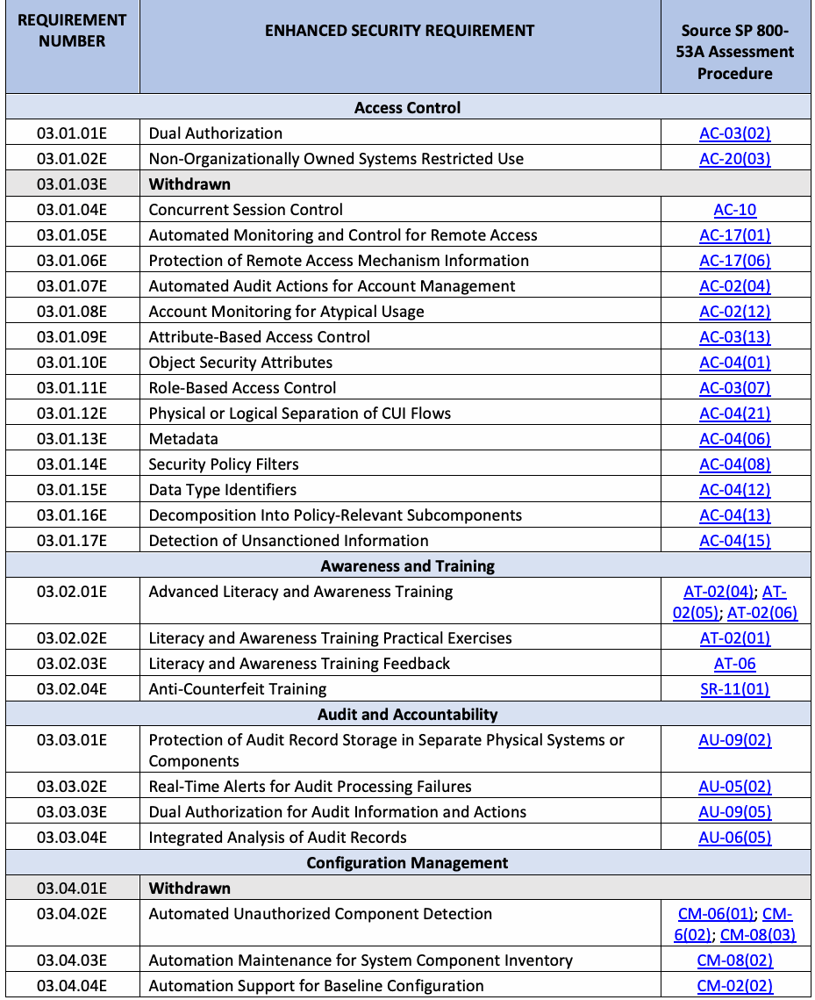
| 要件番号 | 拡張セキュリティ要件 | ソース SP 800- |
| 53A アセスメント | ||
| 手順 | ||
| アクセス制御 | ||
| 03.01.01E | 二重承認 | AC-03(02) |
| 03.01.02E | 非組織所有システムの利用制限 | AC-20(03) |
| 03.01.03E | 取り下げ | |
| 03.01.04E | 同時セッション制御 | AC-10 |
| 03.01.05E | リモートアクセスの自動監視および制御 | AC-17(01) |
| 03.01.06E | リモートアクセス機構情報の保護 | AC-17(06) |
| 03.01.07E | アカウント管理のための自動監査アクション | AC-02(04) |
| 03.01.08E | 変則的な使用に対するアカウント監視 | AC-02(12) |
| 03.01.09E | 属性ベースのアクセス制御 | AC-03(13) |
| 03.01.10E | オブジェクトセキュリティ属性 | AC-04(01) |
| 03.01.11E | ロールベースのアクセス制御 | AC-03(07) |
| 03.01.12E | CUIフローの物理的または論理的分離 | AC-04(21) |
| 03.01.13E | メタデータ | AC-04(06) |
| 03.01.14E | セキュリティポリシーフィルタ | AC-04(08) |
| 03.01.15E | データ型識別子 | AC-04(12) |
| 03.01.16E | ポリシー関連サブコンポーネントへの分解 | AC-04(13) |
| 03.01.17E | 認可されていない情報の検出 | AC-04(15) |
| 意識向上およびトレーニング | ||
| 03.02.01E | 高度なリテラシーおよび意識向上トレーニング | AT-02(04); AT- 02(05); AT-02(06) |
| 03.02.02E | リテラシーおよび意識向上トレーニングの実践的演習 | AT-02(01) |
| 03.02.03E | リテラシーおよび意識向上トレーニングのフィードバック | AT-06 |
| 03.02.04E | 偽造防止トレーニング | SR-11(01) |
| 監査および説明責任 | ||
| 03.03.01E | 独立した物理システムまたはコンポーネントにおける監査レコードストレージの保護 | AU-09(02) |
| 03.03.02E | 監査処理の障害に対するリアルタイムアラート | AU-05(02) |
| 03.03.03E | 監査情報および監査アクションに対する二重承認 | AU-09(05) |
| 03.03.04E | 監査レコードの統合分析 | AU-06(05) |
| 構成管理 | ||
| 03.04.01E | 取り下げ | |
| 03.04.02E | 認可されていないコンポーネントの自動検出 | CM-06(01); CM- 6(02); CM-08(03) |
| 03.04.03E | システムコンポーネントインベントリの自動保守 | CM-08(02) |
| 03.04.04E | ベースライン構成の自動化サポート | CM-02(02) |
原本PDFの抜粋画像

| REQUIREMENT NUMBER | ENHANCED SECURITY REQUIREMENT | Source SP 800- |
| 53A Assessment | ||
| Procedure | ||
| 03.04.05E | Dual Authorization for System Changes | CM-05(04) |
| 03.04.06E | Retention of Previous Configurations | CM-02(03) |
| 03.04.07E | Testing, Validation, and Documentation of Changes | CM-03(02) |
| 03.04.08E | Centralized Repository | CM-08(07) |
| Identification and Authentication | ||
| 03.05.01E | Cryptographic Bidirectional Authentication | IA-03(01) |
| 03.05.02E | Password Managers | IA-05(18) |
| 03.05.03E | Device Attestation | IA-03(04) |
| 03.05.04E | No Embedded Unencrypted Static Authenticators | IA-05(07) |
| 03.05.05E | Expiration of Cached Authenticators | IA-05(13) |
| 03.05.06E | Identity Proofing | IA-12 |
| 03.05.07E | Identity Providers and Authentication Servers | IA-13 |
| Incident Response | ||
| 03.06.01E | Security Operations Center | IR-04(14) |
| 03.06.02E | Integrated Incident Response Team | IR-04(11) |
| 03.06.03E | Behavior Analysis | IR-04(13) |
| 03.06.04E | Automated Tracking, Data Collection, and Analysis for Incident Monitoring | IR-05(01) |
| Maintenance | ||
| 03.07.01E | Software Updates and Patches for Maintenance Tools | MA-03(06) |
| Media Protection | ||
| 03.08.01E | Dual Authorization for Media Sanitization | MP-06(07) |
| 03.08.02E | Dual Authorization for System Backup Deletion and Destruction | CP-09(07) |
| 03.08.03E | Testing System Backups for Reliability and Integrity | CP-09(01) |
| 03.08.04E | System Recovery and Reconstitution | CP-10 |
| Personnel Security | ||
| 03.09.01E | Withdrawn | |
| 03.09.02E | Withdrawn | |
| 03.09.03E | Access Agreements | PS-06 |
| 03.09.04E | Citizenship Requirements | PS-03(04) |
| Physical Protection | ||
| 03.10.01E | Intrusion Alarms and Surveillance Equipment | PE-06(01) |
| 03.10.02E | Delivery and Removal of System Components | PE-16 |
| Risk Assessment | ||
| 03.11.01E | Threat Awareness Program | PM-16 |
| 03.11.02E | Threat Hunting | RA-10 |
| 03.11.03E | Predictive Cyber Analytics | RA-03(04) |
| 03.11.04E | Withdrawn | |
| 03.11.05E | Withdrawn | |
| 03.11.06E | Withdrawn |
原本PDFの抜粋画像
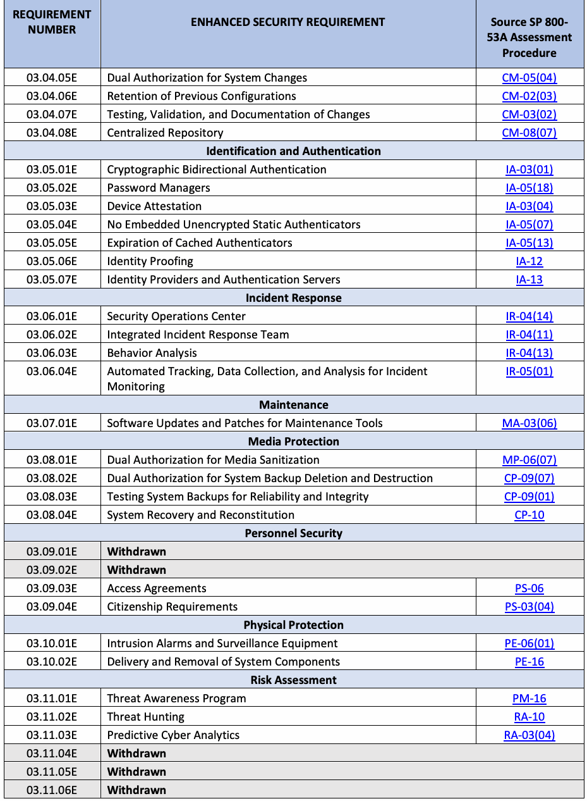
| 要件番号 | 拡張セキュリティ要件 | 情報源 SP 800- |
| 53A アセスメント | ||
| 手順 | ||
| 03.04.05E | システム変更に対する二重承認 | CM-05(04) |
| 03.04.06E | 以前の構成の保持 | CM-02(03) |
| 03.04.07E | 変更のテスト、検証、および文書化 | CM-03(02) |
| 03.04.08E | 一元管理リポジトリ | CM-08(07) |
| 識別と認証 | ||
| 03.05.01E | 暗号による双方向認証 | IA-03(01) |
| 03.05.02E | パスワードマネージャー | IA-05(18) |
| 03.05.03E | 機器アテストステーション | IA-03(04) |
| 03.05.04E | 暗号化されていない静的認証子の埋め込み禁止 | IA-05(07) |
| 03.05.05E | キャッシュされた認証子の有効期限切れ | IA-05(13) |
| 03.05.06E | 身元確認 | IA-12 |
| 03.05.07E | アイデンティティプロバイダーおよび認証サーバー | IA-13 |
| インシデント対応 | ||
| 03.06.01E | セキュリティオペレーションセンター | IR-04(14) |
| 03.06.02E | 統合インシデント対応チーム | IR-04(11) |
| 03.06.03E | 振る舞い分析 | IR-04(13) |
| 03.06.04E | インシデント監視のための自動追跡、データ収集、および分析 | IR-05(01) |
| 保守 | ||
| 03.07.01E | 保守ツールのソフトウェアアップデートおよびパッチ | MA-03(06) |
| メディアの保護 | ||
| 03.08.01E | メディアサニタイゼーションに対する二重承認 | MP-06(07) |
| 03.08.02E | システムバックアップの削除および破壊に対する二重承認 | CP-09(07) |
| 03.08.03E | 信頼性と完全性に関するシステムバックアップのテスト | CP-09(01) |
| 03.08.04E | システムの復旧および再構成 | CP-10 |
| 人的セキュリティ | ||
| 03.09.01E | 取り下げ | |
| 03.09.02E | 取り下げ | |
| 03.09.03E | アクセス合意文書 | PS-06 |
| 03.09.04E | 国籍要件 | PS-03(04) |
| 物理的保護 | ||
| 03.10.01E | 侵入警報および監視装置 | PE-06(01) |
| 03.10.02E | システム構成要素の搬入および搬出 | PE-16 |
| リスクアセスメント | ||
| 03.11.01E | 脅威認識プログラム | PM-16 |
| 03.11.02E | スレットハンティング | RA-10 |
| 03.11.03E | 予測的サイバーアナリティクス | RA-03(04) |
| 03.11.04E | 取り下げ | |
| 03.11.05E | 取り下げ | |
| 03.11.06E | 取り下げ |
原本PDFの抜粋画像

| REQUIREMENT NUMBER | ENHANCED SECURITY REQUIREMENT | Source SP 800- |
| 53A Assessment | ||
| Procedure | ||
| 03.11.07E | Withdrawn | |
| 03.11.08E | Dynamic Threat Awareness | RA-03(03) |
| 03.11.09E | Indicators of Compromise | SI-04(24) |
| 03.11.10E | Criticality Analysis | RA-09 |
| 03.11.11E | Discoverable Information | RA-05(04) |
| 03.11.12E | Automated Means for Sharing Threat Intelligence | PM-16(01) |
| Security Assessment and Monitoring | ||
| 03.12.01E | Penetration Testing | CA-08 |
| 03.12.02E | Independent Assessors | CA-02(01) |
| 03.12.03E | Risk Monitoring | CA-07(04) |
| 03.12.04E | Internal System Connections | CA-09 |
| System and Communications Protection | ||
| 03.13.01E | Heterogeneity | SC-29 |
| 03.13.02E | Randomness | SC-30(02) |
| 03.13.03E | Concealment and Misdirection | SC-30 |
| 03.13.04E | Isolation of System Components | SC-07(21) |
| 03.13.05E | Change Processing and Storage Locations | SC-30(03) |
| 03.13.06E | Platform-Independent Applications | SC-27 |
| 03.13.07E | Virtualization Techniques | SC-29(01) |
| 03.13.08E | Decoys | SC-26 |
| 03.13.09E | Isolation of Security Tool, Mechanism, and Support Components Isolation | SC-07(13) |
| 03.13.10E | Separate Subnetworks | SC-07(22) |
| 03.13.11E | Thin Nodes | SC-25 |
| 03.13.12E | Denial-of-Service Protection | SC-05 |
| 03.13.13E | Port and Input/Output Device Access | SC-41 |
| 03.13.14E | Detonation Chambers | SC-44 |
| 03.13.15E | Separate Subnets to Isolate System Components and Functions | SC-07(29) |
| 03.13.16E | System Partitioning | SC-32 |
| System and Information Integrity | ||
| 03.14.01E | Software, Firmware, and Information Integrity | SI-07 |
| 03.14.02E | Withdrawn | |
| 03.14.03E | Withdrawn | |
| 03.14.04E | Refresh from Trusted Sources | SI-14(01) |
| 03.14.05E | Non-Persistent Information | SI-14(02) |
| 03.14.06E | Withdrawn | |
| 03.14.07E | Withdrawn | |
| 03.14.08E | Integrity Checks | SI-07(01) |
| 03.14.09E | Cryptographic Protection | SI-07(06) |
| 03.14.10E | Protection of Boot Firmware | SI-07(10) |
原本PDFの抜粋画像
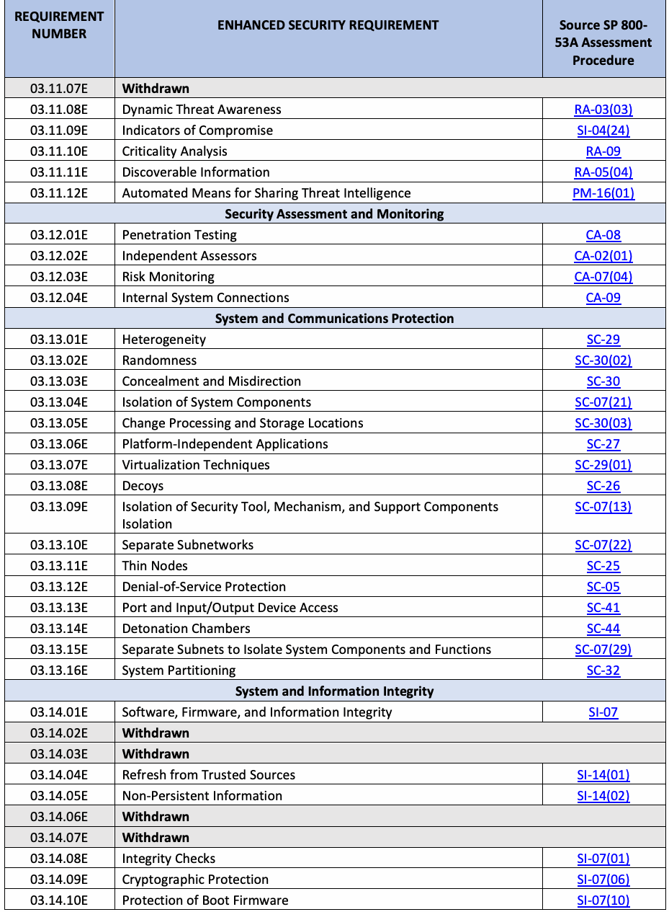
| 要求番号 | 拡張セキュリティ要求事項 | ソース SP 800- |
| 53A アセスメント | ||
| 手順 | ||
| 03.11.07E | 撤廃 | |
| 03.11.08E | 動的な脅威の認識 | RA-03(03) |
| 03.11.09E | 侵害指標 | SI-04(24) |
| 03.11.10E | 重要度分析 | RA-09 |
| 03.11.11E | 発見可能な情報 | RA-05(04) |
| 03.11.12E | 脅威インテリジェンス共有のための自動化された手段 | PM-16(01) |
| セキュリティアセスメントおよび監視 | ||
| 03.12.01E | ペネトレーションテスト | CA-08 |
| 03.12.02E | 独立したアセッサー | CA-02(01) |
| 03.12.03E | リスク監視 | CA-07(04) |
| 03.12.04E | 内部システム接続 | CA-09 |
| システムおよび通信の保護 | ||
| 03.13.01E | 異種混在性 | SC-29 |
| 03.13.02E | ランダム性 | SC-30(02) |
| 03.13.03E | 隠蔽および誤誘導 | SC-30 |
| 03.13.04E | システムコンポーネントの隔離 | SC-07(21) |
| 03.13.05E | 処理および保存場所の変更 | SC-30(03) |
| 03.13.06E | プラットフォーム非依存アプリケーション | SC-27 |
| 03.13.07E | 仮想化技術 | SC-29(01) |
| 03.13.08E | デコイ | SC-26 |
| 03.13.09E | セキュリティツール、メカニズム、およびサポートコンポーネントの隔離 | SC-07(13) |
| 03.13.10E | 個別のサブネットワーク | SC-07(22) |
| 03.13.11E | シンノード | SC-25 |
| 03.13.12E | サービス拒否防御 | SC-05 |
| 03.13.13E | ポートおよび入出力デバイスへのアクセス | SC-41 |
| 03.13.14E | 起爆チェンバー | SC-44 |
| 03.13.15E | システムコンポーネントおよび機能を隔離するための個別のサブネット | SC-07(29) |
| 03.13.16E | システムの分割 | SC-32 |
| システムおよび情報の完全性 | ||
| 03.14.01E | ソフトウェア、ファームウェア、および情報の完全性 | SI-07 |
| 03.14.02E | 撤廃 | |
| 03.14.03E | 撤廃 | |
| 03.14.04E | 信頼できる情報源からのリフレッシュ | SI-14(01) |
| 03.14.05E | 非永続的情報 | SI-14(02) |
| 03.14.06E | 撤廃 | |
| 03.14.07E | 撤廃 | |
| 03.14.08E | 完全性チェック | SI-07(01) |
| 03.14.09E | 暗号による保護 | SI-07(06) |
| 03.14.10E | ブートファームウェアの保護 | SI-07(10) |
原本PDFの抜粋画像

| REQUIREMENT NUMBER | ENHANCED SECURITY REQUIREMENT | Source SP 800- |
| 53A Assessment | ||
| Procedure | ||
| 03.14.11E | Integration of Detection and Response | SI-07(07) |
| 03.14.12E | Information Input Validation | SI-10 |
| 03.14.13E | Error Handling | SI-11 |
| 03.14.14E | Memory Protection | SI-16 |
| 03.14.15E | Non-Persistent System Components and Services | SI-14 |
| 03.14.16E | Tainting | SI-20 |
| 03.14.17E | System-Generated Alerts | SI-04(05) |
| 03.14.18E | Automated Organization-Generated Alerts | SI-04(12) |
| 03.14.19E | Wireless Intrusion Detection | SI-04(14) |
| Planning | ||
| 03.15.01E | Security Architecture | PL-08 |
| 03.15.02E | Defense In Depth | PL-08(01) |
| 03.15.03E | Supplier Diversity | PL-08(02) |
| System and Services Acquisition | ||
| 03.16.01E | Specialization | SA-23 |
| Supply Chain Risk Management | ||
| 03.17.01E | Notification Agreements | SR-08 |
| 03.17.02E | Inspection of Systems or Components | SR-10 |
| 03.17.03E | Component Authenticity | SR-11 |
| 03.17.04E | Provenance | SR-04 |
| 03.17.05E | Supply Chain Integrity – Pedigree | SR-04(04) |
原本PDFの抜粋画像
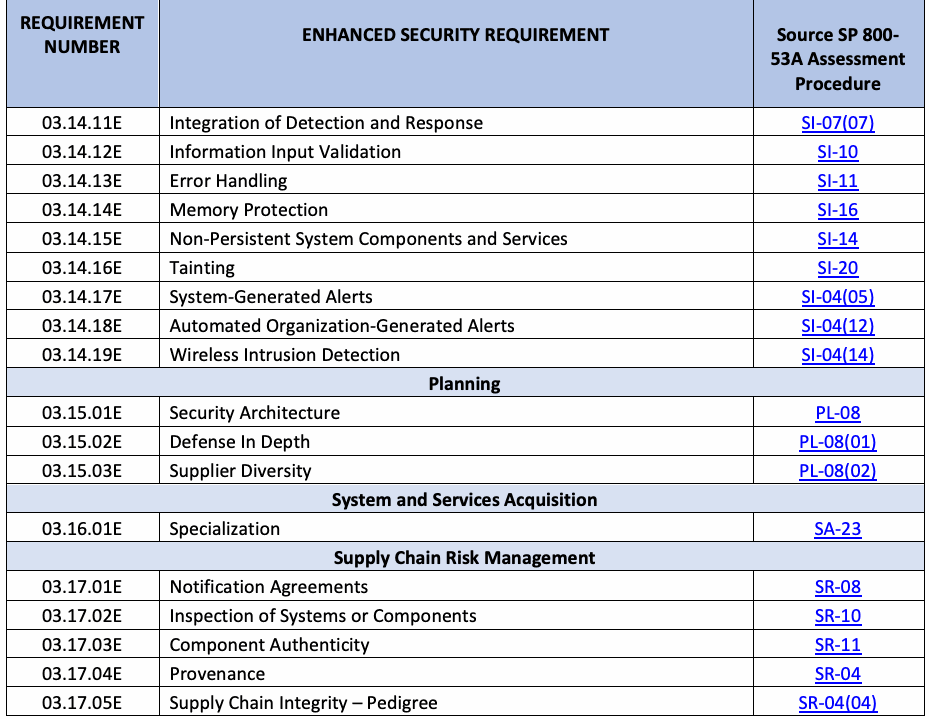
| 要求番号 | 拡張セキュリティ要求事項 | ソース SP 800- |
| 53A アセスメント | ||
| 手順 | ||
| 03.14.11E | 検知および対応の統合 | SI-07(07) |
| 03.14.12E | 情報入力の検証 | SI-10 |
| 03.14.13E | エラー処理 | SI-11 |
| 03.14.14E | メモリ保護 | SI-16 |
| 03.14.15E | 非永続的システムコンポーネントおよびサービス | SI-14 |
| 03.14.16E | テイント（Tainting） | SI-20 |
| 03.14.17E | システム生成のアラート | SI-04(05) |
| 03.14.18E | 組織生成の自動化されたアラート | SI-04(12) |
| 03.14.19E | 無線侵入検知 | SI-04(14) |
| 計画 | ||
| 03.15.01E | セキュリティアーキテクチャ | PL-08 |
| 03.15.02E | 多層防御 | PL-08(01) |
| 03.15.03E | サプライヤーの多様性 | PL-08(02) |
| システムおよびサービスの調達 | ||
| 03.16.01E | 特化 | SA-23 |
| サプライチェーンリスクマネジメント | ||
| 03.17.01E | 通知合意 | SR-08 |
| 03.17.02E | システムまたはコンポーネントの検査 | SR-10 |
| 03.17.03E | コンポーネントの真正性 | SR-11 |
| 03.17.04E | 出所（Provenance） | SR-04 |
| 03.17.05E | サプライチェーンの完全性 – ペディグリー | SR-04(04) |
原本PDFの抜粋画像
Appendix D. Security Requirement Assessments
付録D セキュリティ要求事項のアセスメント
未レビュー訳This appendix provides an overview of the process for assessing the security requirements in SP 800-172 [3]. The four-phase process is based on the methodology in SP 800-53A [5]5 and includes:
本付録では、SP 800-172 [3] におけるセキュリティ要件をアセスメントするためのプロセスの概要を提供する。この4つのフェーズからなるプロセスは、SP 800-53A [5]5 の方法論に基づいており、以下を含んでいる：
未レビュー訳1.Preparing for assessments
1.アセスメントの準備
2.Developing assessment plans
2.アセスメント計画の策定
3.Conducting assessments
3.アセスメントの実施
4.Analyzing, documenting, and reporting assessment results
4.アセスメント結果の分析、文書化、および報告
未レビュー訳D.1. Preparing for Assessments
D.1. アセスメントの準備
未レビュー訳Thorough preparation by the organization and assessors is an important aspect of conducting an effective assessment. Preparatory activities address a range of issues related to the cost, schedule, and conduct of the assessment. From an organizational perspective, preparing for an assessment includes the following activities:
組織およびアセッサーによる徹底的な準備は、効果的なアセスメントを実施する上で重要な側面である。準備活動は、アセスメントのコスト、スケジュール、および実施に関連するさまざまな問題に対処する。組織の観点からは、アセスメントの準備には以下の活動が含まれる：
•Ensuring that appropriate policies that cover the assessment are in place and understood by affected organizational elements
•アセスメントを対象とする適切なポリシーが整備され、影響を受ける組織要素によって理解されていることを確実にすること
•Establishing the objective and scope of the assessment (i.e., the purpose of the assessment and what is being assessed)
•アセスメントの目的および範囲の確立（すなわち、アセスメントの目的およびアセスメント対象）
•Notifying appropriate organizational officials of the impending assessment and allocating the necessary resources to carry out the assessment
•適切な組織の責任者への近々行われるアセスメントの通知、およびアセスメントを実施するために必要なリソースの割り当て
•Establishing appropriate communication channels among organizational officials with an interest in the assessment
•アセスメントに関心を持つ組織の責任者間における適切なコミュニケーションチャネルの確立
未レビュー訳•Establishing the time frame for completing the assessment and the key milestone decision points required by the organization
•アセスメントを完了するための期間、および組織によって要求される主要なマイルストーン決定ポイントの確立
未レビュー訳•Identifying and selecting the assessors who will be responsible for conducting the assessment and considering issues of assessor independence
•アセスメントの実施を担当するアセッサーの特定および選定、ならびにアセッサーの独立性に関する課題の検討
未レビュー訳•Providing artifacts to the assessors (e.g., policies, procedures, plans, specifications, designs, records, administrator/operator manuals, information exchange agreements, system documentation, data from security information and event management [SIEM] tools, data repositories, previous assessment results, legal requirements)
•アセッサーへのアーティファクトの提供（例：方針、手順、計画、仕様、設計、記録、管理者/オペレーターマニュアル、情報交換協定、システム文書、セキュリティ情報およびイベント管理［SIEM］ツールからのデータ、データリポジトリ、過去のアセスメント結果、法的要求事項）
未レビュー訳•Establishing a mechanism between the organization and the assessors to minimize ambiguities or misunderstandings about the security requirements, implementation issues, and deficiencies identified during the assessment
•セキュリティ要件、実装上の問題、およびアセスメント中に特定された不備に関する曖昧さや誤解を最小限に抑えるための、組織とアセッサー間のメカニズムの確立
未レビュー訳Assessors begin preparing for the assessment by:
アセッサーは、以下を行うことによってアセスメントの準備を開始する。
未レビュー訳•Developing a general understanding of the organization’s operations and how the scope of the assessment supports those organizational operations
•組織の業務、およびアセスメントの範囲がそれら組織業務をどのように支援しているかについての一般的な理解を深めること
•Understanding the structure of the system (i.e., the system architecture) and the security requirements being assessed
•システムの構造（すなわち、システムアーキテクチャ）およびアセスメント対象となるセキュリティ要件を理解すること
未レビュー訳•Meeting with organizational officials to ensure that there is a common understanding of the assessment objectives and the proposed rigor and scope of the assessment
•組織の責任者と面談し、アセスメントの目的、ならびに提案されているアセスメントの厳密性および範囲について共通の理解を確保すること
未レビュー訳•Obtaining the artifacts needed for the assessment (e.g., policies, procedures, plans, specifications, administrator/operator manuals, system documentation, information exchange agreements, designs, records, previous assessment results6)
•アセスメントに必要な成果物（方針、手順、計画、仕様、管理者／運用者マニュアル、システム文書、情報交換協定、設計書、記録、過去のアセスメント結果6など）を入手すること
未レビュー訳•Establishing organizational points of contact to carry out the assessment
•アセスメントを実施するための組織内の連絡窓口を確立すること
未レビュー訳Table 3 provides a summary of the purpose and expected outcomes of the assessment preparation phase.
表3に、アセスメント準備フェーズの目的と期待される成果の要約を示す。
Table 3. Summary of assessment preparation phase
表3. アセスメント準備フェーズの要約
未レビュー訳| PURPOSE | Address a range of issues pertaining to the cost, schedule, scope, and conduct of |
| the assessment. | |
| OUTCOMES | • The objective, scope, and time frame of the assessment are determined. |
| • Key organizational stakeholders are notified, and the necessary resources are allocated. | |
| • Assessors are identified and selected. | |
| • Artifacts are collected and provided to assessors. | |
| • Mechanisms to minimize ambiguities and misunderstandings about the security | |
| requirements, implementation issues, and weaknesses/deficiencies identified during | |
| the assessment are established. | |
| • The organization’s operations, structure, objective, scope, and time frame of | |
| assessment are understood by assessors. |
原本PDFの抜粋画像
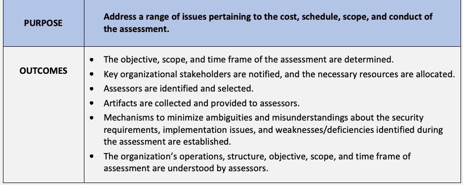
| 目的 | アセスメントのコスト、スケジュール、範囲、および実施に関するさまざまな課題に対処する。 |
| 成果 | • アセスメントの目的、範囲、および期間が決定される。 |
| • 組織の主要なステークホルダーに通知され、必要なリソースが割り当てられる。 | |
| • アセッサーが特定され、選定される。 | |
| • 成果物が収集され、アセッサーに提供される。 | |
| • セキュリティ要件、実装上の課題、およびアセスメント中に特定された脆弱性／不備に関する | |
| 曖昧さや誤解を最小限に抑えるためのメカニズムが | |
| 確立される。 | |
| • 組織の業務、構造、ならびにアセスメントの目的、範囲、および期間が | |
| アセッサーによって理解される。 |
D.2. Developing Assessment Plans
D.2. アセスメント計画の策定
未レビュー訳The assessment plan establishes the objectives for the security requirement assessment and a detailed roadmap of how to conduct the assessment based on the system security plan. The following steps are considered by assessors when developing an assessment plan:
アセスメント計画は、システムセキュリティ計画に基づいて、セキュリティ要件アセスメントの目標と、アセスメントをどのように実施するかについての詳細なロードマップを確立する。アセスメント計画を策定する際、アセッサーによって以下のステップが検討される：
•Determine which security requirements are to be included in the assessment based on the contents of the system security plan and the purpose and scope of the assessment.
•システムセキュリティ計画の内容、ならびにアセスメントの目的および範囲に基づいて、どのセキュリティ要件をアセスメントに含めるかを決定する。
•Select the appropriate assessment procedures.
•適切なアセスメント手順を選択する。
•Tailor the selected assessment procedures (i.e., select appropriate potential assessment methods and objects, and assign depth and coverage attribute values).7
•選択したアセスメント手順を調整（テーラリング）する（すなわち、適切な潜在的アセスメント手法および対象を選択し、深度および網羅性の属性値を割り当てる）。7
未レビュー訳•Optimize the assessment procedures to reduce the duplication of effort (e.g., sequence and consolidate assessment procedures) and provide a cost-effective assessment solution.
•労力の重複を削減し（例えば、アセスメント手順の順序付けおよび統合）、費用対効果の高いアセスメントソリューションを提供するために、アセスメント手順を最適化する。
未レビュー訳•Finalize the assessment plan and obtain the necessary approvals to execute the plan.
•アセスメント計画を完成させ、計画を実行するために必要な承認を得る。
Table 4 provides a summary of the purpose and expected outcomes of the assessment plan development phase.
表4は、アセスメント計画策定フェーズの目的と期待される成果の概要を示している。
未レビュー訳Table 4. Summary of assessment plan development phase
表4. アセスメント計画策定フェーズの概要
未レビュー訳| PURPOSE | Establish the objectives for the security requirement assessment and a detailed |
| roadmap of how to conduct the assessment based on the system security plan. | |
| OUTCOMES | • Security requirements to be included in the assessment are determined. |
| • Assessment procedures are selected and tailored. | |
| • Assessment procedures are optimized to reduce the duplication of effort. | |
| • The assessment plan is finalized, and organizational approvals are obtained. |
原本PDFの抜粋画像
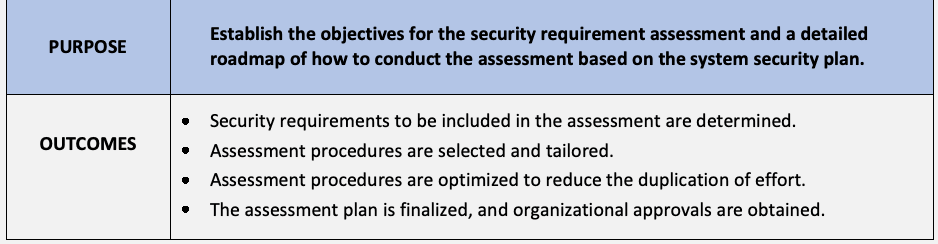
| 目的 | セキュリティ要件アセスメントの目標と、システムセキュリティ計画に基づきアセスメントをどのように実施するかに関する詳細なロードマップを策定する。 |
| 成果 | • アセスメントに対象として含めるセキュリティ要件が決定される。 |
| • アセスメント手順が選択され、調整（テーラリング）される。 | |
| • 重複した労力を削減するためにアセスメント手順が最適化される。 | |
| • アセスメント計画が完成し、組織の承認が得られる。 |
D.3. Conducting Assessments
D.3. アセスメントの実施
未レビュー訳After the assessment plan is approved by the organization, the assessors execute the plan in accordance with the agreed-upon schedule. Assessment objectives are achieved by applying the designated assessment methods to selected assessment objects and compiling or producing the evidence necessary to make the determination associated with each assessment objective. Each determination statement contained within an assessment procedure executed by an assessor produces one of the following findings:
組織によってアセスメント計画が承認された後、アセッサーは合意されたスケジュールに従って計画を実行する。アセスメント目標は、指定されたアセスメント手法を選択されたアセスメント対象に適用し、各アセスメント目標に関連付けられた判断を下すために必要な証拠を収集または作成することによって達成される。アセッサーによって実行されるアセスメント手順内に含まれる各判断記述は、以下の所見のいずれかを生成する：
•Satisfied
•適合（Satisfied）
未レビュー訳または
未レビュー訳•Other than satisfied
•満たされていない（Other than satisfied）
未レビュー訳A finding of satisfied indicates that the assessment objective for the security requirement (or subset of the requirement) addressed by the determination statement has been met and produced an acceptable result. A finding of other than satisfied indicates that the assessment objective for the requirement has not been met or not been fully met and has produced an unacceptable result. A finding of other than satisfied may also indicate that the assessor was unable to obtain sufficient information to make the determination called for in the determination statement.
「満たされている（satisfied）」という判定結果は、判定文で扱われているセキュリティ要件（または要件のサブセット）に対するアセスメント目標が達成され、受け入れ可能な結果を生み出したことを示している。「満たされていない（other than satisfied）」という判定結果は、要件に対するアセスメント目標が達成されていないか、完全には達成されておらず、受け入れ不可能な結果を生み出したことを示している。また、「満たされていない」という判定結果は、アセッサーが判定文で求められている判定を下すのに十分な情報を得られなかったことを示している場合もある。
未レビュー訳Table 5 provides a summary of the purpose and expected outcomes of the assessment execution phase.
表5は、アセスメント実施フェーズの目的と期待される成果の概要を示している。
未レビュー訳Table 5. Summary of assessment execution phase
表5. アセスメント実施フェーズの概要
未レビュー訳| PURPOSE | Conduct the assessment in accordance with the assessment plan and document |
| the results in an assessment report. | |
| OUTCOMES | • Security requirements are assessed in accordance with the assessment plan. |
| • An assessment report that documents whether the security requirements have been | |
| satisfied is produced. |
原本PDFの抜粋画像
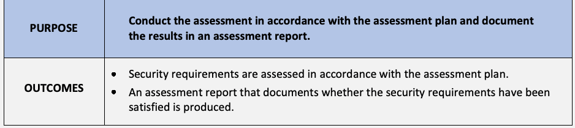
| 目的 | アセスメント計画に従ってアセスメントを実施し、 |
| その結果をアセスメント報告書に文書化する。 | |
| 成果 | • セキュリティ要件がアセスメント計画に従って評価される。 |
| • セキュリティ要件が満たされているかどうかを文書化した | |
| アセスメント報告書が作成される。 |
D.4. Analyzing, Documenting, and Reporting Assessment Results
D.4. アセスメント結果の分析、文書化、および報告
未レビュー訳The assessment report includes information from assessors in the form of findings that are necessary to determine whether the requirements in SP 800-172 [3] have been satisfied.8 The report conveys the results of the assessment to designated organizational officials. The report can also provide recommendations for correcting any deficiencies discovered during the assessment. Depending on the organization’s objective for the assessment, the assessment results can trigger a variety of risk response actions, including risk acceptance, risk mitigation, risk rejection, risk transfer, or risk sharing. The assessment results can also influence changes to the system security plan and plan of action and milestones.
アセスメント報告書には、SP 800-172 [3] の要件が満たされているかどうかを判断するために必要な、アセッサーからの所見の形式の情報が含まれる。8 本報告書は、指定された組織の責任者にアセスメント結果を伝達する。また、報告書は、アセスメント中に発見された欠陥を是正するための推奨事項を提供することもできる。アセスメントに対する組織の目的に応じて、アセスメント結果は、リスク受容、リスク低減、リスク回避（拒否）、リスク移転、リスク共有など、さまざまなリスク対応策の契機となり得る。さらに、アセスメント結果は、システムセキュリティ計画や残存リスク対策計画（POA&M）の変更にも影響を与える可能性がある。
未レビュー訳Table 6 provides a summary of the purpose and expected outcomes of the assessment analysis, documentation, and reporting phase.
表6は、アセスメントの分析、文書化、および報告フェーズの目的と期待される成果の概要を示している。
未レビュー訳Table 6. Summary of assessment analysis, documentation, and reporting phase
表6. アセスメントの分析、文書化、および報告フェーズの概要
未レビュー訳| PURPOSE | Analyze the risks that result from the weaknesses and deficiencies identified |
| during the assessment and determine an approach to respond to those risks in | |
| accordance with organizational priorities. | |
| OUTCOMES | • Assessment findings are reviewed and analyzed. |
| • Subsequent risk responses are initiated to manage risks. | |
| • The system security plan and plan of action and milestones are updated to reflect the | |
| results of the assessment and any subsequent risk response actions. |
原本PDFの抜粋画像
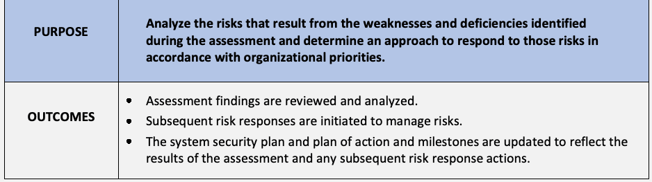
| 目的 | アセスメント中に特定された弱点および不備から生じるリスクを分析し、 |
| 組織の優先順位に従ってそれらのリスクに対応するための | |
| アプローチを決定する。 | |
| 成果 | • アセスメント結果がレビューおよび分析される。 |
| • リスクを管理するために、その後のリスク対応が開始される。 | |
| • アセスメントの結果およびその後のリスク対応アクションを反映するために、システムセキュリティ計画ならびに行動計画およびマイルストーンが更新される。 | |
Appendix E. Organization-Defined Parameters
付録E. 組織定義パラメータ
未レビュー訳Table 7 lists the ODPs that are included in the assessment procedures in Sec. 3. The ODPs are listed sequentially by requirement family, beginning with the first requirement containing an ODP in the Access Control (AC) family and ending with the last requirement containing an ODP in the Supply Chain Risk Management (SR) family.
表7は、Sec. 3のアセスメント手順に含まれるODPを一覧表示している。ODPは要件ファミリーごとに順次記載されており、アクセス制御（AC）ファミリーでODPを含む最初の要件から始まり、サプライチェーンリスクマネジメント（SR）ファミリーでODPを含む最後の要件で終わる。
Table 7. Organization-defined parameters
表7. 組織定義パラメータ
未レビュー訳| ENHANCED | ORGANIZATION-DEFINED PARAMETER | |
| SECURITY | ||
| REQUIREMENT | ||
| 03.01.01E | A.03.01.01E.ODP[01] | privileged commands and/or other actions requiring dual authorization are defined. |
| 03.01.02E | A.03.01.02E.ODP[01] | restrictions on the use of non-organizationally owned systems or system components to process, store, or transmit CUI are defined. |
| 03.01.04E | A.03.01.04E.ODP[01] | accounts and/or account types for which to limit the number of concurrent sessions is defined. |
| 03.01.04E | A.03.01.04E.ODP[02] | the number of concurrent sessions to be allowed for each account and/or account type is defined. |
| 03.01.08E | A.03.01.08E.ODP[01] | atypical usage for which to monitor system accounts is defined. |
| 03.01.08E | A.03.01.08E.ODP[02] | personnel or roles to report atypical usage are defined. |
| 03.01.09E | A.03.01.09E.ODP[01] | attributes to assume access permissions are defined. |
| 03.01.10E | A.03.01.10E.ODP[01] | security attributes to be associated with information, source, and destination objects are defined. |
| 03.01.10E | A.03.01.10E.ODP[02] | information objects to be associated with information security attributes are defined. |
| 03.01.10E | A.03.01.10E.ODP[03] | source objects to be associated with information security attributes are defined. |
| 03.01.10E | A.03.01.10E.ODP[04] | destination objects to be associated with information security attributes are defined. |
| 03.01.10E | A.03.01.10E.ODP[05] | information flow control policies as a basis for the enforcement of flow control decisions are defined. |
| 03.01.11E | A.03.01.11E.ODP[01] | roles and users authorized to assume such roles are defined. |
| 03.01.12E | A.03.01.12E.ODP[01] | mechanisms and/or techniques to separate CUI flows are defined. |
| 03.01.13E | A.03.01.13E.ODP[01] | metadata that requires flow control is defined. |
| 03.01.14E | A.03.01.14E.ODP[01] | security policy filers are defined. |
| 03.01.14E | A.03.01.14E.ODP[02] | information flows are defined. |
| 03.01.14E | A.03.01.14E.ODP[03] | one or more of the following PARAMETER VALUES is/are selected: {Block; Strip; Modify; Quarantine} in response to a filter processing failure. |
| 03.01.14E | A.03.01.14E.ODP[04] | security policy addressing a filter processing failure is defined. |
| 03.01.15E | A.03.01.15E.ODP[01] | data type identifiers are defined. |
| 03.01.16E | A.03.01.16E.ODP[01] | policy-relevant subcomponents into which to decompose information for submission to policy enforcement mechanisms are defined. |
原本PDFの抜粋画像
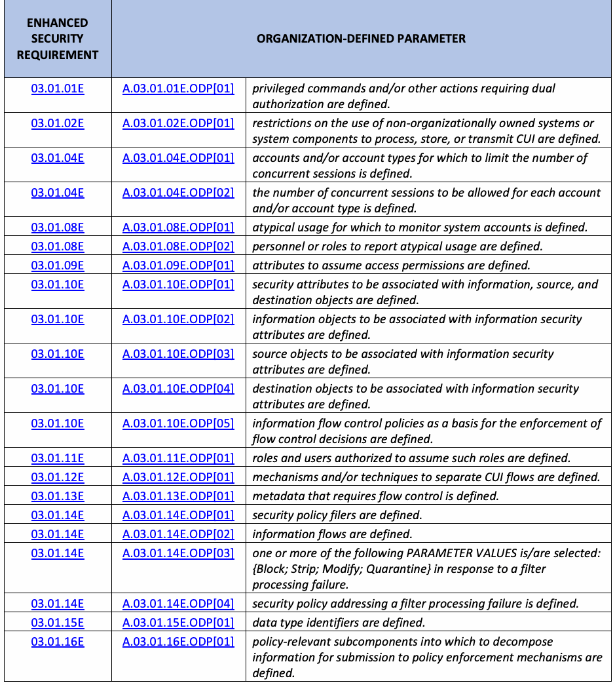
| ENHANCED | ORGANIZATION-DEFINED PARAMETER | |
| SECURITY | ||
| REQUIREMENT | ||
| 03.01.01E | A.03.01.01E.ODP[01] | 二重認可を必要とする特権コマンドおよび／またはその他のアクションが定義されている。 |
| 03.01.02E | A.03.01.02E.ODP[01] | CUIを処理、保存、または送信するための、組織が所有していないシステムまたはシステムコンポーネントの使用に関する制限が定義されている。 |
| 03.01.04E | A.03.01.04E.ODP[01] | 同時セッション数を制限する対象のアカウントおよび／またはアカウントタイプが定義されている。 |
| 03.01.04E | A.03.01.04E.ODP[02] | 各アカウントおよび／またはアカウントタイプに対して許可される同時セッション数が定義されている。 |
| 03.01.08E | A.03.01.08E.ODP[01] | システムアカウントを監視する対象となる非典型的な使用法が定義されている。 |
| 03.01.08E | A.03.01.08E.ODP[02] | 非典型的な使用法を報告する要員または役割が定義されている。 |
| 03.01.09E | A.03.01.09E.ODP[01] | アクセス許可を引き受けるための属性が定義されている。 |
| 03.01.10E | A.03.01.10E.ODP[01] | 情報オブジェクト、送信元オブジェクト、および送信先オブジェクトに関連付けられるセキュリティ属性が定義されている。 |
| 03.01.10E | A.03.01.10E.ODP[02] | 情報セキュリティ属性と関連付けられる情報オブジェクトが定義されている。 |
| 03.01.10E | A.03.01.10E.ODP[03] | 情報セキュリティ属性と関連付けられる送信元オブジェクトが定義されている。 |
| 03.01.10E | A.03.01.10E.ODP[04] | 情報セキュリティ属性と関連付けられる送信先オブジェクトが定義されている。 |
| 03.01.10E | A.03.01.10E.ODP[05] | フロー制御の決定を実施する根拠としての情報フロー制御ポリシーが定義されている。 |
| 03.01.11E | A.03.01.11E.ODP[01] | 役割、およびそのような役割を引き受ける権限を与えられたユーザーが定義されている。 |
| 03.01.12E | A.03.01.12E.ODP[01] | CUIフローを分離するためのメカニズムおよび／または技法が定義されている。 |
| 03.01.13E | A.03.01.13E.ODP[01] | フロー制御を必要とするメタデータが定義されている。 |
| 03.01.14E | A.03.01.14E.ODP[01] | セキュリティポリシーフィルターが定義されている。 |
| 03.01.14E | A.03.01.14E.ODP[02] | 情報フローが定義されている。 |
| 03.01.14E | A.03.01.14E.ODP[03] | フィルター処理の失敗に対応して、以下のパラメータ値のうち1つ以上が選択されている: {Block; Strip; Modify; Quarantine}。 |
| 03.01.14E | A.03.01.14E.ODP[04] | フィルター処理の失敗に対処するセキュリティポリシーが定義されている。 |
| 03.01.15E | A.03.01.15E.ODP[01] | データ型識別子が定義されている。 |
| 03.01.16E | A.03.01.16E.ODP[01] | ポリシー適用メカニズムへの提出のために情報を分解する対象となるポリシー関連のサブコンポーネントが定義されている。 |
| ENHANCED | ORGANIZATION-DEFINED PARAMETER | |
| SECURITY | ||
| REQUIREMENT | ||
| 03.01.17E | A.03.01.17E.ODP[01] | unsanctioned information to be detected is defined. |
| 03.01.17E | A.03.01.17E.ODP[02] | a security policy that prohibits the transfer of such information is defined. |
| 03.02.01E | A.03.02.01E.ODP[01] | indicators of malicious code are defined. |
| 03.02.01E | A.03.02.01E.ODP[02] | the frequency at which to update security literacy training content is defined. |
| 03.02.01E | A.03.02.01E.ODP[03] | events which cause security literacy training content to be updated are defined. |
| 03.02.03E | A.03.02.03E.ODP[01] | personnel to whom feedback on organizational training results will be provided are assigned. |
| 03.02.04E | A.03.02.04E.ODP[01] | personnel or roles requiring training to detect counterfeit system components are defined. |
| 03.03.02E | A.03.03.02E.ODP[01] | real-time period requiring alerts when audit failure events (defined in A.03.03.02E.ODP[03]) occur is defined. |
| 03.03.02E | A.03.03.02E.ODP[02] | personnel, roles, and/or locations to be alerted in real time when audit failure events (defined in A.03.03.02E.ODP[03]) occur are defined. |
| 03.03.02E | A.03.03.02E.ODP[03] | audit logging failure events requiring real-time alerts are defined. |
| 03.03.03E | A.03.03.03E.ODP[01] | one or more of the following PARAMETER VALUES is/are selected: {movement; deletion}. |
| 03.03.03E | A.03.03.03E.ODP[02] | audit information for which dual authorization is to be enforced is defined. |
| 03.03.04E | A.03.03.04E.ODP[01] | one or more of the following PARAMETER VALUES is/are selected: {vulnerability scanning information; performance data; system monitoring information; <A.03.03.04E.ODP[02] data/information collected from other sources>}. |
| 03.03.04E | A.03.03.04E.ODP[02] | data or information collected from other sources to be analyzed is defined (if selected). |
| 03.04.02E | A.03.04.02E.ODP[01] | automated mechanisms used to detect the presence of unauthorized or misconfigured system components are defined. |
| 03.04.02E | A.03.04.02E.ODP[02] | one or more of the following PARAMETER VALUES is/are selected: {disable network access by unauthorized or misconfigured system components; isolate unauthorized or misconfigured system components; notify <A.03.04.02E.ODP[03] personnel or roles>. |
| 03.04.02E | A.03.04.02E.ODP[03] | personnel or roles to be notified when unauthorized or misconfigured system components are detected are defined (if selected). |
| 03.04.03E | A.03.04.03E.ODP[01] | automated mechanisms used to maintain the currency of the system component inventory are defined. |
| 03.04.03E | A.03.04.03E.ODP[02] | automated mechanisms used to maintain the completeness of the system component inventory are defined. |
| 03.04.03E | A.03.04.03E.ODP[03] | automated mechanisms used to maintain the accuracy of the system component inventory are defined. |
原本PDFの抜粋画像
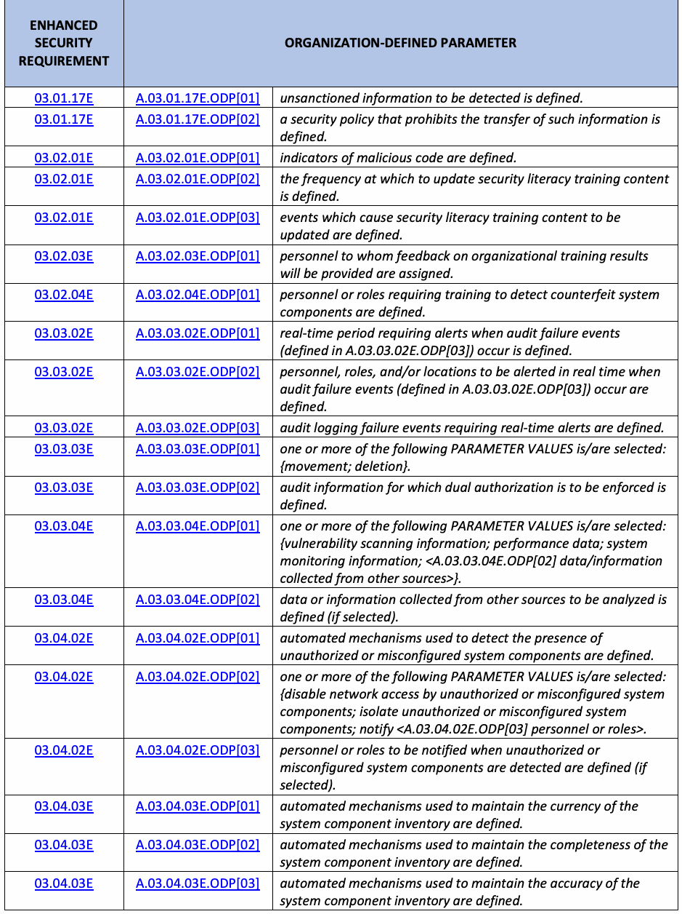
| 強化 | 組織定義パラメータ | |
| セキュリティ | ||
| 要件 | ||
| 03.01.17E | A.03.01.17E.ODP[01] | 検出対象とする未承認情報を定義する。 |
| 03.01.17E | A.03.01.17E.ODP[02] | 当該情報の転送を禁止するセキュリティポリシーを定義する。 |
| 03.02.01E | A.03.02.01E.ODP[01] | 悪意あるコードの指標を定義する。 |
| 03.02.01E | A.03.02.01E.ODP[02] | セキュリティ意識向上訓練の内容を更新する頻度を定義する。 |
| 03.02.01E | A.03.02.01E.ODP[03] | セキュリティ意識向上訓練の内容を更新する契機となる事象を定義する。 |
| 03.02.03E | A.03.02.03E.ODP[01] | 組織の訓練結果に関するフィードバックを提供する人員を割り当てる。 |
| 03.02.04E | A.03.02.04E.ODP[01] | 偽造システムコンポーネントの検出訓練を必要とする人員または役割を定義する。 |
| 03.03.02E | A.03.03.02E.ODP[01] | 監査ログ記録の失敗事象（A.03.03.02E.ODP[03]で定義）が発生した際に、リアルタイム通知を要する期間を定義する。 |
| 03.03.02E | A.03.03.02E.ODP[02] | 監査ログ記録の失敗事象（A.03.03.02E.ODP[03]で定義）が発生した際に、リアルタイムで通知を受ける人員、役割、および／または場所を定義する。 |
| 03.03.02E | A.03.03.02E.ODP[03] | リアルタイム通知を要する監査ログ記録の失敗事象を定義する。 |
| 03.03.03E | A.03.03.03E.ODP[01] | 次のパラメータ値から1つ以上を選択する：{移動；削除}。 |
| 03.03.03E | A.03.03.03E.ODP[02] | 二者承認を適用する監査情報を定義する。 |
| 03.03.04E | A.03.03.04E.ODP[01] | 次のパラメータ値から1つ以上を選択する：{脆弱性スキャン情報；性能データ；システム監視情報；<A.03.03.04E.ODP[02] 他の情報源から収集したデータ／情報>}。 |
| 03.03.04E | A.03.03.04E.ODP[02] | 分析対象とする他の情報源から収集したデータまたは情報を定義する（選択した場合）。 |
| 03.04.02E | A.03.04.02E.ODP[01] | 未承認または構成誤りのあるシステムコンポーネントの存在を検出する自動化された仕組みを定義する。 |
| 03.04.02E | A.03.04.02E.ODP[02] | 次のパラメータ値から1つ以上を選択する：{未承認または構成誤りのあるシステムコンポーネントのネットワークアクセスを無効にする；未承認または構成誤りのあるシステムコンポーネントを隔離する；<A.03.04.02E.ODP[03] 人員または役割>に通知する。 |
| 03.04.02E | A.03.04.02E.ODP[03] | 未承認または構成誤りのあるシステムコンポーネントが検出された際に通知する人員または役割を定義する（選択した場合）。 |
| 03.04.03E | A.03.04.03E.ODP[01] | システムコンポーネントのインベントリを最新の状態に維持する自動化された仕組みを定義する。 |
| 03.04.03E | A.03.04.03E.ODP[02] | システムコンポーネントのインベントリを完全な状態に維持する自動化された仕組みを定義する。 |
| 03.04.03E | A.03.04.03E.ODP[03] | システムコンポーネントのインベントリの正確性を維持する自動化された仕組みを定義する。 |
| ENHANCED | ORGANIZATION-DEFINED PARAMETER | |
| SECURITY | ||
| REQUIREMENT | ||
| 03.04.03E | A.03.04.03E.ODP[04] | automated mechanisms used to maintain the availability of the system component inventory are defined. |
| 03.04.04E | A.03.04.04E.ODP[01] | automated mechanisms for maintaining the baseline configuration of the system are defined. |
| 03.04.05E | A.03.04.05E.ODP[01] | system components requiring dual authorization for the implementation of changes are defined. |
| 03.04.05E | A.03.04.05E.ODP[02] | system-level information requiring dual authorization for the implementation of changes is defined. |
| 03.04.06E | A.03.04.06E.ODP[01] | the number of previous baseline configuration versions to be retained is defined. |
| 03.05.01E | A.03.05.01E.ODP[01] | devices and/or types of devices requiring the use of cryptographically based bidirectional authentication to authenticate before establishing a system connection are defined. |
| 03.05.02E | A.03.05.02E.ODP[01] | password managers employed for generating and managing passwords are defined. |
| 03.05.02E | A.03.05.02E.ODP[02] | controls for protecting passwords are defined. |
| 03.05.03E | A.03.05.03E.ODP[01] | the configuration management process to be implemented to handle device identification and authentication based on attestation is defined. |
| 03.05.05E | A.03.05.05E.ODP[01] | the time period after which the use of cached authenticators is prohibited is defined. |
| 03.05.07E | A.03.05.07E.ODP[01] | an identification and authentication policy is defined. |
| 03.05.07E | A.03.05.07E.ODP[02] | mechanisms supporting authentication and authorization decisions are defined. |
| 03.06.02E | A.03.06.02E.ODP[01] | the time period within which an integrated incident response team can be deployed is defined. |
| 03.06.03E | A.03.06.03E.ODP[01] | environments or resources that may contain or be related to anomalous or suspected adversarial behavior are defined. |
| 03.06.04E | A.03.06.04E.ODP[01] | automated mechanisms used to track incidents are defined. |
| 03.06.04E | A.03.06.04E.ODP[02] | automated mechanisms used to collect incident information are defined. |
| 03.06.04E | A.03.06.04E.ODP[03] | automated mechanisms used to analyze incident information are defined. |
| 03.08.01E | A.03.08.01E.ODP[01] | system media to be sanitized using dual authorization is defined. |
| 03.08.02E | A.03.08.02E.ODP[01] | backup information for which to enforce dual authorization in order to delete or destroy is defined. |
| 03.08.03E | A.03.08.03E.ODP[01] | the frequency at which to test backup information for media reliability is defined. |
| 03.08.03E | A.03.08.03E.ODP[02] | the frequency at which to test backup information for information integrity is defined. |
| 03.08.04E | A.03.08.04E.ODP[01] | a time period consistent with recovery time and recovery point objectives for the recovery of the system is determined. |
| 03.08.04E | A.03.08.04E.ODP[02] | a time period consistent with recovery time and recovery point objectives for the reconstitution of the system is determined. |
原本PDFの抜粋画像
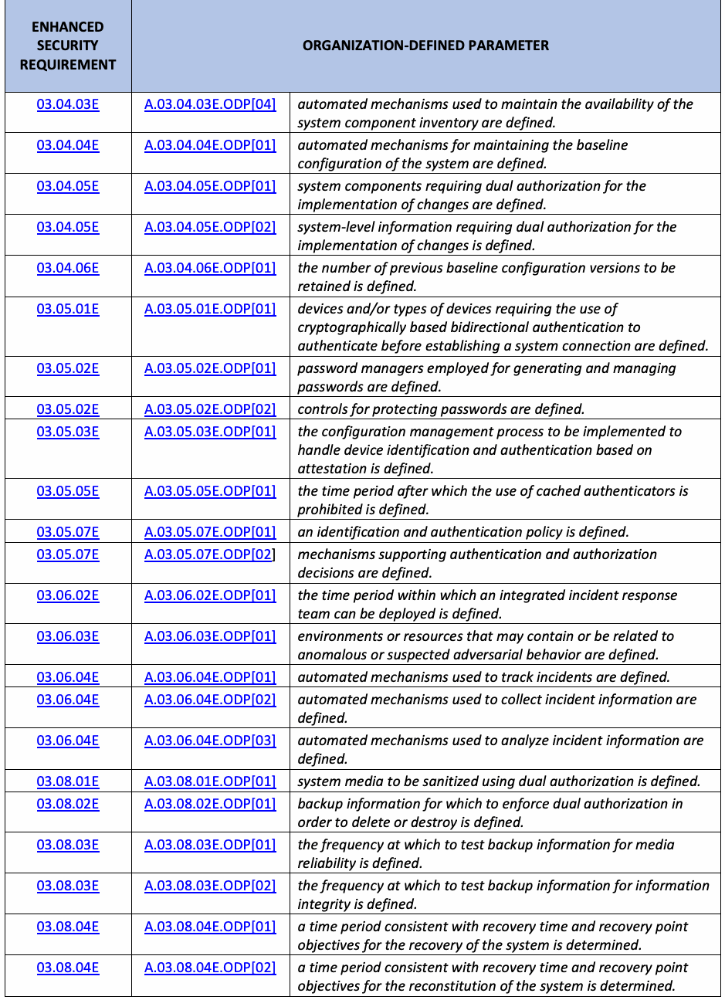
| 強化 | 組織定義パラメータ | |
| セキュリティ | ||
| 要件 | ||
| 03.04.03E | A.03.04.03E.ODP[04] | システムコンポーネントのインベントリを利用可能な状態に維持する自動化された仕組みを定義する。 |
| 03.04.04E | A.03.04.04E.ODP[01] | システムのベースライン構成を維持する自動化された仕組みを定義する。 |
| 03.04.05E | A.03.04.05E.ODP[01] | 変更の実施に二者承認を必要とするシステムコンポーネントを定義する。 |
| 03.04.05E | A.03.04.05E.ODP[02] | 変更の実施に二者承認を必要とするシステムレベルの情報を定義する。 |
| 03.04.06E | A.03.04.06E.ODP[01] | 保持する過去のベースライン構成のバージョン数を定義する。 |
| 03.05.01E | A.03.05.01E.ODP[01] | システム接続を確立する前に認証するため、暗号技術に基づく双方向認証の使用を要するデバイスおよび／またはデバイスの種類を定義する。 |
| 03.05.02E | A.03.05.02E.ODP[01] | パスワードの生成および管理に用いるパスワードマネージャーを定義する。 |
| 03.05.02E | A.03.05.02E.ODP[02] | パスワードを保護するための管理策を定義する。 |
| 03.05.03E | A.03.05.03E.ODP[01] | アテステーションに基づくデバイスの識別および認証を扱うために実施する構成管理プロセスを定義する。 |
| 03.05.05E | A.03.05.05E.ODP[01] | キャッシュされた認証器の使用を禁止するまでの期間を定義する。 |
| 03.05.07E | A.03.05.07E.ODP[01] | 識別および認証ポリシーを定義する。 |
| 03.05.07E | A.03.05.07E.ODP[02] | 認証および認可の判断を支援する仕組みを定義する。 |
| 03.06.02E | A.03.06.02E.ODP[01] | 統合インシデント対応チームを展開できるまでの期間を定義する。 |
| 03.06.03E | A.03.06.03E.ODP[01] | 異常な行動または敵対者による疑わしい行動を含む可能性がある、あるいはそれらに関連する環境またはリソースを定義する。 |
| 03.06.04E | A.03.06.04E.ODP[01] | インシデントを追跡する自動化された仕組みを定義する。 |
| 03.06.04E | A.03.06.04E.ODP[02] | インシデント情報を収集する自動化された仕組みを定義する。 |
| 03.06.04E | A.03.06.04E.ODP[03] | インシデント情報を分析する自動化された仕組みを定義する。 |
| 03.08.01E | A.03.08.01E.ODP[01] | 二者承認を用いてサニタイズするシステム媒体を定義する。 |
| 03.08.02E | A.03.08.02E.ODP[01] | 削除または破壊する際に二者承認を適用するバックアップ情報を定義する。 |
| 03.08.03E | A.03.08.03E.ODP[01] | 媒体の信頼性を確認するためバックアップ情報を試験する頻度を定義する。 |
| 03.08.03E | A.03.08.03E.ODP[02] | 情報の完全性を確認するためバックアップ情報を試験する頻度を定義する。 |
| 03.08.04E | A.03.08.04E.ODP[01] | システムの復旧に関する目標復旧時間および目標復旧時点に整合する期間を決定する。 |
| 03.08.04E | A.03.08.04E.ODP[02] | システムの再構成に関する目標復旧時間および目標復旧時点に整合する期間を決定する。 |
| ENHANCED | ORGANIZATION-DEFINED PARAMETER | |
| SECURITY | ||
| REQUIREMENT | ||
| 03.09.03E | A.03.09.03E.ODP[01] | the frequency at which to review and update access agreements is defined. |
| 03.09.03E | A.03.09.03E.ODP[02] | the frequency at which to re-sign access agreements to maintain access systems processing, storing, or transmitting CUI is defined. |
| 03.09.04E | A.03.09.04E.ODP[01] | Citizenship requirements to be met by individuals to access a system processing, storing, or transmitting CUI are defined. |
| 03.10.01E | A.03.10.01E.ODP[01] | the time period for which to maintain visitor access records for the facility in which the system resides is defined. |
| 03.10.02E | A.03.10.02E.ODP[01] | the types of system components to be authorized and controlled when entering the facility are defined. |
| 03.10.02E | A.03.10.02E.ODP[02] | the types of system components to be authorized and controlled when exiting the facility are defined. |
| 03.11.02E | A.03.11.02E.ODP[01] | the frequency at which to implement the threat-hunting capability is defined. |
| 03.11.03E | A.03.11.03E.ODP[01] | advanced automation capabilities to predict and identify risks are defined. |
| 03.11.03E | A.03.11.03E.ODP[02] | systems or system components in which advanced automation and analytics capabilities are to be employed are defined. |
| 03.11.03E | A.03.11.03E.ODP[03] | advanced analytics capabilities to predict and identify risks are defined. |
| 03.11.08E | A.03.11.08E.ODP[01] | the means to determine the current cyber threat environment on an ongoing basis are defined. |
| 03.11.09E | A.03.11.09E.ODP[01] | sources that provide indicators of compromise are defined. |
| 03.11.09E | A.03.11.09E.ODP[02] | personnel or roles to whom indicators of compromise are to be distributed are defined. |
| 03.11.10E | A.03.11.10E.ODP[01] | systems, system components, or system services to be analyzed for criticality are defined. |
| 03.11.10E | A.03.11.10E.ODP[02] | decision points in the system development life cycle when a criticality analysis is to be performed are defined. |
| 03.11.11E | A.03.11.11E.ODP[01] | corrective actions to be taken if information about the system is discoverable are defined. |
| 03.12.01E | A.03.12.01E.ODP[01] | the frequency at which to conduct penetration testing on systems or system components is defined. |
| 03.12.01E | A.03.12.01E.ODP[02] | systems or system components on which penetration testing is to be conducted are defined. |
| 03.12.04E | A.03.12.04E.ODP[01] | system components or classes of components requiring internal connections to the system are defined. |
| 03.12.04E | A.03.12.04E.ODP[02] | conditions requiring the termination of internal connections are defined. |
| 03.12.04E | A.03.12.04E.ODP[03] | the frequency at which to review the continued need for each internal connection is defined. |
| 03.13.01E | A.03.13.01E.ODP[01] | system components requiring a diverse set of information technologies to be used in the implementation of the system are defined. |
原本PDFの抜粋画像
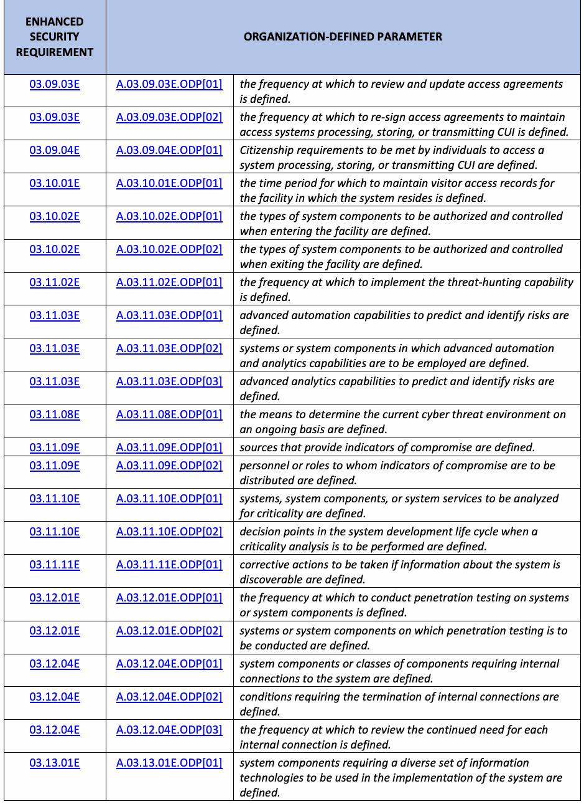
| 強化 | 組織定義パラメータ | |
| セキュリティ | ||
| 要件 | ||
| 03.09.03E | A.03.09.03E.ODP[01] | アクセス合意を見直して更新する頻度を定義する。 |
| 03.09.03E | A.03.09.03E.ODP[02] | CUIを処理、保存、または伝送するシステムへのアクセスを維持するため、アクセス合意に再署名する頻度を定義する。 |
| 03.09.04E | A.03.09.04E.ODP[01] | CUIを処理、保存、または伝送するシステムにアクセスする個人が満たすべき市民権要件を定義する。 |
| 03.10.01E | A.03.10.01E.ODP[01] | システムが設置されている施設の来訪者アクセス記録を保持する期間を定義する。 |
| 03.10.02E | A.03.10.02E.ODP[01] | 施設への入場時に許可および管理するシステムコンポーネントの種類を定義する。 |
| 03.10.02E | A.03.10.02E.ODP[02] | 施設からの退場時に許可および管理するシステムコンポーネントの種類を定義する。 |
| 03.11.02E | A.03.11.02E.ODP[01] | 脅威ハンティング機能を実施する頻度を定義する。 |
| 03.11.03E | A.03.11.03E.ODP[01] | リスクを予測および特定する高度な自動化機能を定義する。 |
| 03.11.03E | A.03.11.03E.ODP[02] | 高度な自動化および分析機能を使用するシステムまたはシステムコンポーネントを定義する。 |
| 03.11.03E | A.03.11.03E.ODP[03] | リスクを予測および特定する高度な分析機能を定義する。 |
| 03.11.08E | A.03.11.08E.ODP[01] | 現在のサイバー脅威環境を継続的に判断する手段を定義する。 |
| 03.11.09E | A.03.11.09E.ODP[01] | 侵害の兆候を提供する情報源を定義する。 |
| 03.11.09E | A.03.11.09E.ODP[02] | 侵害の兆候を配布する人員または役割を定義する。 |
| 03.11.10E | A.03.11.10E.ODP[01] | 重要度を分析するシステム、システムコンポーネント、またはシステムサービスを定義する。 |
| 03.11.10E | A.03.11.10E.ODP[02] | 重要度分析を実施するシステム開発ライフサイクル上の判断時点を定義する。 |
| 03.11.11E | A.03.11.11E.ODP[01] | システムに関する情報が発見可能な場合に実施する是正措置を定義する。 |
| 03.12.01E | A.03.12.01E.ODP[01] | システムまたはシステムコンポーネントに侵入テストを実施する頻度を定義する。 |
| 03.12.01E | A.03.12.01E.ODP[02] | 侵入テストを実施するシステムまたはシステムコンポーネントを定義する。 |
| 03.12.04E | A.03.12.04E.ODP[01] | システムへの内部接続を必要とするシステムコンポーネントまたはコンポーネントのクラスを定義する。 |
| 03.12.04E | A.03.12.04E.ODP[02] | 内部接続の終了を必要とする条件を定義する。 |
| 03.12.04E | A.03.12.04E.ODP[03] | 各内部接続の必要性を継続的に見直す頻度を定義する。 |
| 03.13.01E | A.03.13.01E.ODP[01] | システムの実装に多様な情報技術を使用する必要があるシステムコンポーネントを定義する。 |
| ENHANCED | ORGANIZATION-DEFINED PARAMETER | |
| SECURITY | ||
| REQUIREMENT | ||
| 03.13.02E | A.03.13.02E.ODP[01] | the techniques employed to introduce randomness into organizational operations and assets are defined. |
| 03.13.03E | A.03.13.03E.ODP[01] | the concealment and misdirection techniques used to confuse and mislead adversaries potentially targeting systems are defined. |
| 03.13.04E | A.03.13.04E.ODP[01] | system components to be isolated by boundary protection mechanisms are defined. |
| 03.13.05E | A.03.13.05E.ODP[01] | processing and/or storage locations to be changed are defined. |
| 03.13.05E | A.03.13.05E.ODP[02] | one of the following PARAMETER VALUES is selected: {<A.03.13.05E.ODP[03] frequency>; at random time intervals}. |
| 03.13.05E | A.03.13.05E.ODP[03] | the frequency at which to change the location of processing and/or storage is defined (if selected). |
| 03.13.06E | A.03.13.06E.ODP[01] | platform-independent applications to be included within organizational systems are defined. |
| 03.13.07E | A.03.13.07E.ODP[01] | the frequency at which to change the diversity of operating systems and applications deployed using virtualization techniques is defined. |
| 03.13.09E | A.03.13.09E.ODP[01] | information security tools, mechanisms, and support components to be isolated from other internal system components are defined. |
| 03.13.11E | A.03.13.11E.ODP[01] | system components to be implemented with minimal functionality and information storage are defined. |
| 03.13.12E | A.03.13.12E.ODP[01] | the types of denial-of-service events to be protected against or limited are defined. |
| 03.13.12E | A.03.13.12E.ODP[02] | one of the following PARAMETER VALUES is selected: {protected against; limited}. |
| 03.13.12E | A.03.13.12E.ODP[03] | the safeguards to prevent the denial-of-service objective by type of denial-of-service event are defined. |
| 03.13.13E | A.03.13.13E.ODP[01] | connection ports or input/output devices to be disabled or removed are defined. |
| 03.13.13E | A.03.13.13E.ODP[02] | one of the following PARAMETER VALUES is selected: {physically; logically}. |
| 03.13.13E | A.03.13.13E.ODP[03] | systems or system components with connection ports or input/output devices to be disabled or removed are defined. |
| 03.13.14E | A.03.13.14E.ODP[01] | the system, system component, or location in which a detonation chamber capability is to be employed is defined. |
| 03.13.15E | A.03.13.15E.ODP[01] | one of the following PARAMETER VALUES is selected: {physically; logically}. |
| 03.13.15E | A.03.13.15E.ODP[02] | critical system components and functions to be isolated are defined. |
| 03.13.16E | A.03.13.16E.ODP[01] | system components to reside in separate physical or logical domains or environments based on circumstances for the physical or logical separation of components are defined. |
| 03.13.16E | A.03.13.16E.ODP[02] | one of the following PARAMETER VALUES is selected: {physical; logical}. |
原本PDFの抜粋画像
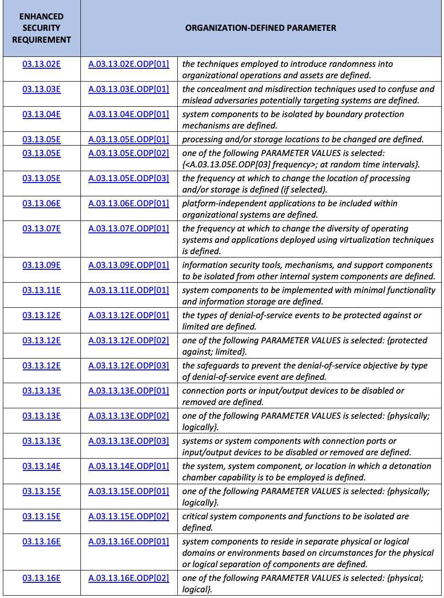
| 強化 | 組織定義パラメータ | |
| セキュリティ | ||
| 要件 | ||
| 03.13.02E | A.03.13.02E.ODP[01] | 組織の運用および資産にランダム性を導入するために用いる技法を定義する。 |
| 03.13.03E | A.03.13.03E.ODP[01] | システムを標的とする可能性のある敵対者を混乱させ、誤導するために用いる隠蔽および誤誘導の技法を定義する。 |
| 03.13.04E | A.03.13.04E.ODP[01] | 境界保護の仕組みによって隔離するシステムコンポーネントを定義する。 |
| 03.13.05E | A.03.13.05E.ODP[01] | 変更する処理場所および／または保存場所を定義する。 |
| 03.13.05E | A.03.13.05E.ODP[02] | 次のパラメータ値のいずれかを選択する：{<A.03.13.05E.ODP[03] 頻度>；ランダムな時間間隔}。 |
| 03.13.05E | A.03.13.05E.ODP[03] | 処理および／または保存場所を変更する頻度を定義する（選択した場合）。 |
| 03.13.06E | A.03.13.06E.ODP[01] | 組織のシステムに含めるプラットフォーム非依存アプリケーションを定義する。 |
| 03.13.07E | A.03.13.07E.ODP[01] | 仮想化技術を用いて展開するオペレーティングシステムおよびアプリケーションの多様性を変更する頻度を定義する。 |
| 03.13.09E | A.03.13.09E.ODP[01] | 他の内部システムコンポーネントから隔離する情報セキュリティツール、仕組み、およびサポートコンポーネントを定義する。 |
| 03.13.11E | A.03.13.11E.ODP[01] | 最小限の機能および情報保存で実装するシステムコンポーネントを定義する。 |
| 03.13.12E | A.03.13.12E.ODP[01] | 防御または制限するサービス拒否事象の種類を定義する。 |
| 03.13.12E | A.03.13.12E.ODP[02] | 次のパラメータ値のいずれかを選択する：{防御する；制限する}。 |
| 03.13.12E | A.03.13.12E.ODP[03] | サービス拒否事象の種類ごとに、その目的を防止するための保護策を定義する。 |
| 03.13.13E | A.03.13.13E.ODP[01] | 無効化または取り外す接続ポートもしくは入出力デバイスを定義する。 |
| 03.13.13E | A.03.13.13E.ODP[02] | 次のパラメータ値のいずれかを選択する：{物理的；論理的}。 |
| 03.13.13E | A.03.13.13E.ODP[03] | 接続ポートまたは入出力デバイスを無効化もしくは取り外すシステムまたはシステムコンポーネントを定義する。 |
| 03.13.14E | A.03.13.14E.ODP[01] | 爆発試験室機能を使用するシステム、システムコンポーネント、または場所を定義する。 |
| 03.13.15E | A.03.13.15E.ODP[01] | 次のパラメータ値のいずれかを選択する：{物理的；論理的}。 |
| 03.13.15E | A.03.13.15E.ODP[02] | 隔離する重要なシステムコンポーネントおよび機能を定義する。 |
| 03.13.16E | A.03.13.16E.ODP[01] | コンポーネントの物理的または論理的分離に関する状況に基づき、別々の物理または論理ドメインもしくは環境に配置するシステムコンポーネントを定義する。 |
| 03.13.16E | A.03.13.16E.ODP[02] | 次のパラメータ値のいずれかを選択する：{物理；論理}。 |
| ENHANCED | ORGANIZATION-DEFINED PARAMETER | |
| SECURITY | ||
| REQUIREMENT | ||
| 03.13.16E | A.03.13.16E.ODP[03] | circumstances for the physical or logical separation of components are defined. |
| 03.14.01E | A.03.14.01E.ODP[01] | software requiring integrity verification tools to be used to detect unauthorized changes is defined. |
| 03.14.01E | A.03.14.01E.ODP[02] | firmware requiring integrity verification tools to be used to detect unauthorized changes is defined. |
| 03.14.01E | A.03.14.01E.ODP[03] | information requiring integrity verification tools to be used to detect unauthorized changes is defined. |
| 03.14.01E | A.03.14.01E.ODP[04] | actions to be taken when unauthorized changes to software are detected are defined. |
| 03.14.01E | A.03.14.01E.ODP[05] | actions to be taken when unauthorized changes to firmware are detected are defined. |
| 03.14.01E | A.03.14.01E.ODP[06] | actions to be taken when unauthorized changes to information are detected are defined. |
| 03.14.04E | A.03.14.04E.ODP[01] | trusted sources to obtain software and data for system component and service refreshes are defined. |
| 03.14.05E | A.03.14.05E.ODP[01] | one of the following PARAMETER VALUES is selected: {refresh <A.03.14.05E_ODP[02] information> <A.03.14.05E_ODP[03] frequency>; generate <A.03.14.05E_ODP[04] information>}. |
| 03.14.05E | A.03.14.05E.ODP[02] | the information to be refreshed is defined (if selected). |
| 03.14.05E | A.03.14.05E.ODP[03] | the frequency at which to refresh information is defined (if selected). |
| 03.14.05E | A.03.14.05E.ODP[04] | the information to be generated on demand is defined (if selected). |
| 03.14.08E | A.03.14.08E.ODP[01] | software on which an integrity check is to be performed is defined. |
| 03.14.08E | A.03.14.08E.ODP[02] | one or more of the following PARAMETER VALUES is/are selected: {at startup; at <A.03.14.08E.ODP[03] transitional states or security-relevant events>; <A.03.14.08E.ODP[04] frequency>}. |
| 03.14.08E | A.03.14.08E.ODP[03] | transitional states or security-relevant events requiring integrity checks (on software) are defined (if selected). |
| 03.14.08E | A.03.14.08E.ODP[04] | the frequency at which to perform an integrity check (on software) is defined (if selected). |
| 03.14.08E | A.03.14.08E.ODP[05] | firmware on which an integrity check is to be performed is defined. |
| 03.14.08E | A.03.14.08E.ODP[06] | one or more of the following PARAMETER VALUES is/are selected: {at startup; at <A.03.14.08E.ODP[07] transitional states or security-relevant events>; <A.03.14.08E.ODP[08] frequency>}. |
| 03.14.08E | A.03.14.08E.ODP[07] | transitional states or security-relevant events requiring integrity checks (on firmware) are defined (if selected). |
| 03.14.08E | A.03.14.08E.ODP[08] | the frequency at which to perform an integrity check (on firmware) is defined (if selected). |
| 03.14.08E | A.03.14.08E.ODP[09] | information on which an integrity check is to be performed is defined. |
原本PDFの抜粋画像
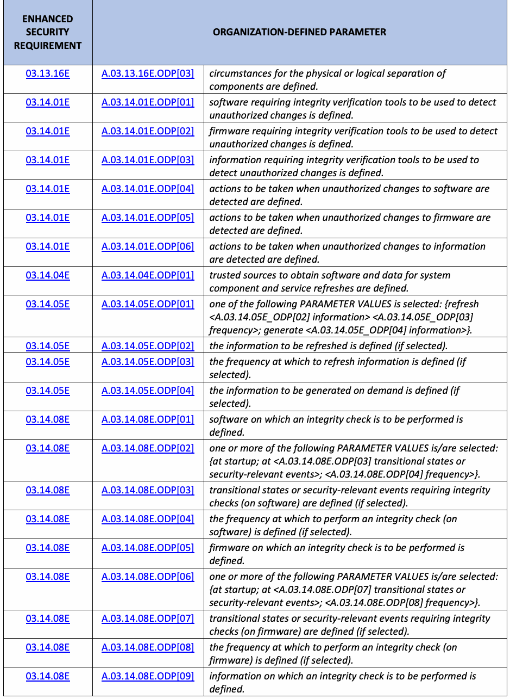
| 強化 | 組織定義パラメータ | |
| セキュリティ | ||
| 要件 | ||
| 03.13.16E | A.03.13.16E.ODP[03] | コンポーネントを物理的または論理的に分離する状況を定義する。 |
| 03.14.01E | A.03.14.01E.ODP[01] | 未承認の変更を検出するために完全性検証ツールを使用する必要があるソフトウェアを定義する。 |
| 03.14.01E | A.03.14.01E.ODP[02] | 未承認の変更を検出するために完全性検証ツールを使用する必要があるファームウェアを定義する。 |
| 03.14.01E | A.03.14.01E.ODP[03] | 未承認の変更を検出するために完全性検証ツールを使用する必要がある情報を定義する。 |
| 03.14.01E | A.03.14.01E.ODP[04] | ソフトウェアへの未承認の変更が検出された場合に取る措置を定義する。 |
| 03.14.01E | A.03.14.01E.ODP[05] | ファームウェアへの未承認の変更が検出された場合に取る措置を定義する。 |
| 03.14.01E | A.03.14.01E.ODP[06] | 情報への未承認の変更が検出された場合に取る措置を定義する。 |
| 03.14.04E | A.03.14.04E.ODP[01] | システムコンポーネントおよびサービスの更新に用いるソフトウェアとデータを取得する信頼できる情報源を定義する。 |
| 03.14.05E | A.03.14.05E.ODP[01] | 次のパラメータ値のいずれかを選択する：{<A.03.14.05E_ODP[02] 情報>を<A.03.14.05E_ODP[03] 頻度>で更新する；<A.03.14.05E_ODP[04] 情報>を生成する}。 |
| 03.14.05E | A.03.14.05E.ODP[02] | 更新する情報を定義する（選択した場合）。 |
| 03.14.05E | A.03.14.05E.ODP[03] | 情報を更新する頻度を定義する（選択した場合）。 |
| 03.14.05E | A.03.14.05E.ODP[04] | 要求に応じて生成する情報を定義する（選択した場合）。 |
| 03.14.08E | A.03.14.08E.ODP[01] | 完全性検査を実施するソフトウェアを定義する。 |
| 03.14.08E | A.03.14.08E.ODP[02] | 次のパラメータ値から1つ以上を選択する：{起動時；<A.03.14.08E.ODP[03] 遷移状態またはセキュリティ関連事象>の発生時；<A.03.14.08E.ODP[04] 頻度>}。 |
| 03.14.08E | A.03.14.08E.ODP[03] | ソフトウェアの完全性検査を必要とする遷移状態またはセキュリティ関連事象を定義する（選択した場合）。 |
| 03.14.08E | A.03.14.08E.ODP[04] | ソフトウェアの完全性検査を実施する頻度を定義する（選択した場合）。 |
| 03.14.08E | A.03.14.08E.ODP[05] | 完全性検査を実施するファームウェアを定義する。 |
| 03.14.08E | A.03.14.08E.ODP[06] | 次のパラメータ値から1つ以上を選択する：{起動時；<A.03.14.08E.ODP[07] 遷移状態またはセキュリティ関連事象>の発生時；<A.03.14.08E.ODP[08] 頻度>}。 |
| 03.14.08E | A.03.14.08E.ODP[07] | ファームウェアの完全性検査を必要とする遷移状態またはセキュリティ関連事象を定義する（選択した場合）。 |
| 03.14.08E | A.03.14.08E.ODP[08] | ファームウェアの完全性検査を実施する頻度を定義する（選択した場合）。 |
| 03.14.08E | A.03.14.08E.ODP[09] | 完全性検査を実施する情報を定義する。 |
| ENHANCED | ORGANIZATION-DEFINED PARAMETER | |
| SECURITY | ||
| REQUIREMENT | ||
| 03.14.08E | A.03.14.08E.ODP[10] | one or more of the following PARAMETER VALUES is/are selected: {at startup; at <A.03.14.08E.ODP[11] transitional states or security-relevant events>; <A.03.14.08E.ODP[12] frequency>}. |
| 03.14.08E | A.03.14.08E.ODP[11] | transitional states or security-relevant events requiring integrity checks (of information) are defined (if selected). |
| 03.14.08E | A.03.14.08E.ODP[12] | the frequency at which to perform an integrity check (of information) is defined (if selected). |
| 03.14.10E | A.03.14.10E.ODP[01] | mechanisms to be implemented to protect the integrity of boot firmware in system components are defined. |
| 03.14.10E | A.03.14.10E.ODP[02] | system components requiring mechanisms to protect the integrity of boot firmware are defined. |
| 03.14.11E | A.03.14.11E.ODP[01] | security-relevant changes to the system are defined. |
| 03.14.12E | A.03.14.12E.ODP[01] | information inputs to the system requiring validity checks are defined. |
| 03.14.13E | A.03.14.13E.ODP[01] | personnel or roles to whom error messages are to be revealed are defined. |
| 03.14.14E | A.03.14.14E.ODP[01] | safeguards to be implemented to protect the system memory from unauthorized code execution are defined. |
| 03.14.15E | A.03.14.15E.ODP[01] | non-persistent system components and services to be implemented are defined. |
| 03.14.15E | A.03.14.15E.ODP[02] | one or more of the following PARAMETER VALUES is/are selected: {upon end of session of use; <A.03.14.15E.ODP[03] frequency>}. |
| 03.14.15E | A.03.14.15E.ODP[03] | the frequency at which to terminate non-persistent components and services that are initiated in a known state is defined (if selected). |
| 03.14.16E | A.03.14.16E.ODP[01] | systems or system components with data or capabilities to be embedded are defined. |
| 03.14.17E | A.03.14.17E.ODP[01] | personnel or roles to be alerted when indications of compromise or potential compromise occur are defined. |
| 03.14.17E | A.03.14.17E.ODP[02] | compromise indicators are defined. |
| 03.14.18E | A.03.14.18E.ODP[01] | personnel or roles to be alerted when indications of inappropriate or unusual activity with security implications occur are defined. |
| 03.14.18E | A.03.14.18E.ODP[02] | automated mechanisms used to alert personnel or roles are defined. |
| 03.14.18E | A.03.14.18E.ODP[03] | activities that trigger alerts to personnel or roles are defined. |
| 03.15.01E | A.03.15.01E.ODP[01] | the frequency for reviewing and updating the security architecture to reflect changes in the enterprise architecture is defined. |
| 03.15.02E | A.03.15.02E.ODP[01] | safeguards to be allocated to architectural layers and locations are defined. |
| 03.15.02E | A.03.15.02E.ODP[02] | architectural layers and locations are defined. |
| 03.15.03E | A.03.15.03E.ODP[01] | safeguards to be allocated to architectural layers and locations are defined. |
| 03.15.03E | A.03.15.03E.ODP[02] | architectural layers and locations are defined. |
原本PDFの抜粋画像
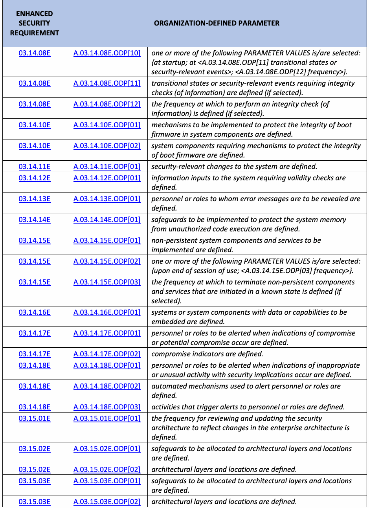
| 強化 | 組織定義パラメータ | |
| セキュリティ | ||
| 要件 | ||
| 03.14.08E | A.03.14.08E.ODP[10] | 次のパラメータ値から1つ以上を選択する：{起動時；<A.03.14.08E.ODP[11] 遷移状態またはセキュリティ関連事象>の発生時；<A.03.14.08E.ODP[12] 頻度>}。 |
| 03.14.08E | A.03.14.08E.ODP[11] | 情報の完全性検査を必要とする遷移状態またはセキュリティ関連事象を定義する（選択した場合）。 |
| 03.14.08E | A.03.14.08E.ODP[12] | 情報の完全性検査を実施する頻度を定義する（選択した場合）。 |
| 03.14.10E | A.03.14.10E.ODP[01] | システムコンポーネント内のブートファームウェアの完全性を保護するために実装する仕組みを定義する。 |
| 03.14.10E | A.03.14.10E.ODP[02] | ブートファームウェアの完全性を保護する仕組みを必要とするシステムコンポーネントを定義する。 |
| 03.14.11E | A.03.14.11E.ODP[01] | システムに対するセキュリティ関連の変更を定義する。 |
| 03.14.12E | A.03.14.12E.ODP[01] | 妥当性確認を必要とするシステムへの情報入力を定義する。 |
| 03.14.13E | A.03.14.13E.ODP[01] | エラーメッセージを開示する人員または役割を定義する。 |
| 03.14.14E | A.03.14.14E.ODP[01] | 未承認のコード実行からシステムメモリを保護するために実装する保護策を定義する。 |
| 03.14.15E | A.03.14.15E.ODP[01] | 実装する非永続型のシステムコンポーネントおよびサービスを定義する。 |
| 03.14.15E | A.03.14.15E.ODP[02] | 次のパラメータ値から1つ以上を選択する：{使用セッションの終了時；<A.03.14.15E.ODP[03] 頻度>}。 |
| 03.14.15E | A.03.14.15E.ODP[03] | 既知の状態で開始された非永続型コンポーネントおよびサービスを終了する頻度を定義する（選択した場合）。 |
| 03.14.16E | A.03.14.16E.ODP[01] | データまたは機能を組み込むシステムまたはシステムコンポーネントを定義する。 |
| 03.14.17E | A.03.14.17E.ODP[01] | 侵害または侵害の可能性を示す兆候が生じたときに通知する人員または役割を定義する。 |
| 03.14.17E | A.03.14.17E.ODP[02] | 侵害の兆候を定義する。 |
| 03.14.18E | A.03.14.18E.ODP[01] | セキュリティ上の影響を伴う不適切または異常な活動の兆候が生じたときに通知する人員または役割を定義する。 |
| 03.14.18E | A.03.14.18E.ODP[02] | 人員または役割に通知する自動化された仕組みを定義する。 |
| 03.14.18E | A.03.14.18E.ODP[03] | 人員または役割への通知を発生させる活動を定義する。 |
| 03.15.01E | A.03.15.01E.ODP[01] | エンタープライズアーキテクチャの変更を反映するため、セキュリティアーキテクチャを見直して更新する頻度を定義する。 |
| 03.15.02E | A.03.15.02E.ODP[01] | アーキテクチャの層および場所に割り当てる保護策を定義する。 |
| 03.15.02E | A.03.15.02E.ODP[02] | アーキテクチャの層および場所を定義する。 |
| 03.15.03E | A.03.15.03E.ODP[01] | アーキテクチャの層および場所に割り当てる保護策を定義する。 |
| 03.15.03E | A.03.15.03E.ODP[02] | アーキテクチャの層および場所を定義する。 |
| ENHANCED | ORGANIZATION-DEFINED PARAMETER | |
| SECURITY | ||
| REQUIREMENT | ||
| 03.16.01E | A.03.16.01E.ODP[01] | one or more of the following PARAMETER VALUES is/are selected: {design modification; augmentation; reconfiguration}. |
| 03.16.01E | A.03.16.01E.ODP[02] | systems or system components supporting mission-essential services or functions are defined. |
| 03.17.01E | A.03.17.01E.ODP[01] | one or more of the following PARAMETER VALUES is/are selected: {notification of supply chain compromises; results of assessments or audits; provision of <A.03.17.01E.ODP[02]: information>}. |
| 03.17.01E | A.03.17.01E.ODP[02] | information for which agreements and procedures are to be established is defined (if selected). |
| 03.17.02E | A.03.17.02E.ODP[01] | systems or system components that require inspection are defined. |
| 03.17.02E | A.03.17.02E.ODP[02] | one or more of the following PARAMETER VALUES is/are selected: {at random; <A.03.17.02E.ODP[03]: frequency>; upon <A.03.17.02E.ODP[04]: indications of the need for inspection>}. |
| 03.17.02E | A.03.17.02E.ODP[03] | the frequency at which to inspect systems or system components is defined (if selected). |
| 03.17.02E | A.03.17.02E.ODP[04] | indications of the need for an inspection of systems or system components are defined (if selected). |
| 03.17.03E | A.03.17.03E.ODP[01] | one or more of the following PARAMETER VALUES is/are selected: {source of counterfeit component; <A.03.17.03E.ODP[02]: external reporting organizations>; <A.03.17.03E.ODP[03]: personnel or roles>}. |
| 03.17.03E | A.03.17.03E.ODP[02] | external reporting organizations to whom counterfeit system components are to be reported are defined (if selected). |
| 03.17.03E | A.03.17.03E.ODP[03] | personnel or roles to whom counterfeit system components are to be reported are defined (if selected). |
| 03.17.04E | A.03.17.04E.ODP[01] | systems, system components, and associated CUI that require valid provenance are defined. |
| 03.17.05E | A.03.17.05E.ODP[01] | safeguards employed to ensure the integrity of the system and system component are defined. |
| 03.17.05E | A.03.17.05E.ODP[02] | an analysis method to be conducted to validate the internal composition and provenance of critical or mission-essential technologies, products, and services to ensure the integrity of the system and system component is defined. |
原本PDFの抜粋画像
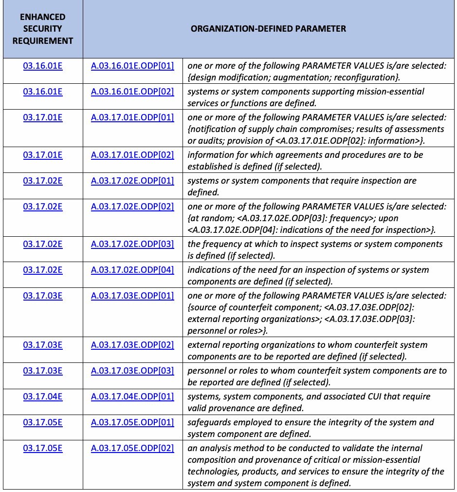
| 強化 | 組織定義パラメータ | |
| セキュリティ | ||
| 要件 | ||
| 03.16.01E | A.03.16.01E.ODP[01] | 次のパラメータ値から1つ以上を選択する：{設計変更；拡張；再構成}。 |
| 03.16.01E | A.03.16.01E.ODP[02] | 任務上不可欠なサービスまたは機能を支援するシステムまたはシステムコンポーネントを定義する。 |
| 03.17.01E | A.03.17.01E.ODP[01] | 次のパラメータ値から1つ以上を選択する：{サプライチェーン侵害の通知；評価または監査の結果；<A.03.17.01E.ODP[02]: 情報>の提供}。 |
| 03.17.01E | A.03.17.01E.ODP[02] | 合意および手順を確立する対象となる情報を定義する（選択した場合）。 |
| 03.17.02E | A.03.17.02E.ODP[01] | 検査を必要とするシステムまたはシステムコンポーネントを定義する。 |
| 03.17.02E | A.03.17.02E.ODP[02] | 次のパラメータ値から1つ以上を選択する：{ランダム；<A.03.17.02E.ODP[03]: 頻度>；<A.03.17.02E.ODP[04]: 検査の必要性を示す兆候>の発生時}。 |
| 03.17.02E | A.03.17.02E.ODP[03] | システムまたはシステムコンポーネントを検査する頻度を定義する（選択した場合）。 |
| 03.17.02E | A.03.17.02E.ODP[04] | システムまたはシステムコンポーネントの検査が必要であることを示す兆候を定義する（選択した場合）。 |
| 03.17.03E | A.03.17.03E.ODP[01] | 次のパラメータ値から1つ以上を選択する：{偽造コンポーネントの発生源；<A.03.17.03E.ODP[02]: 外部報告組織>；<A.03.17.03E.ODP[03]: 人員または役割>}。 |
| 03.17.03E | A.03.17.03E.ODP[02] | 偽造システムコンポーネントを報告する外部報告組織を定義する（選択した場合）。 |
| 03.17.03E | A.03.17.03E.ODP[03] | 偽造システムコンポーネントを報告する人員または役割を定義する（選択した場合）。 |
| 03.17.04E | A.03.17.04E.ODP[01] | 有効な来歴情報を必要とするシステム、システムコンポーネント、および関連するCUIを定義する。 |
| 03.17.05E | A.03.17.05E.ODP[01] | システムおよびシステムコンポーネントの完全性を確保するために用いる保護策を定義する。 |
| 03.17.05E | A.03.17.05E.ODP[02] | システムおよびシステムコンポーネントの完全性を確保するため、重要または任務上不可欠な技術、製品、サービスの内部構成と来歴を検証する分析方法を定義する。 |
Appendix F. Change Log
付録F. 変更履歴
未レビュー訳This publication incorporates the following changes from the original edition (March 15, 2022):
本書は、初版（2022年3月15日）からの次の変更を取り入れている：
•The restructuring of the assessment procedure syntax to align with SP 800-53A [5]
•SP 800-53A [5]に整合させるためのアセスメント手順の構文の再構成
•The addition of assessment procedures for the new and revised enhanced security requirements in SP 800-172, Revision 3 [3]
•SP 800-172 Rev. 3 [3]の新規および改訂された強化セキュリティ要件に対する評価手順を追加した。
未レビュー訳•The addition of a references section to provide source assessment procedures from SP
•出典となる評価手順を示す参考文献の節を追加した（SP
未レビュー訳800-53A [5]
800-53A [5]）。
未レビュー訳•A one-time change to the publication version number to align with SP 800-172, Revision 3 [3]
•SP 800-172 Rev. 3 [3]に整合させるため、文書の版番号を一度だけ変更した。
未レビュー訳